Het wijzigingsoverzicht bevat alleen de wijzigingen van deze versie van dit toepassingsprofiel ten opzichte van de voorgaande versie. De versiehistorie van eerdere versies staat in bijlage 2.
In het wijzigingsoverzicht wordt met WELT-xx verwezen naar de Wensen en Eisen Lijst voor de TPOD-standaard. Deze lijst bevat meldingen en wijzigingsverzoeken die door gebruikers van de standaard zijn ingediend. De ingediende meldingen zijn te vinden via https://www.geonovum.nl/geo-standaarden/omgevingswet/meldingen.
Voor de STOP-standaard bestaat een vergelijkbaar meldingssysteem, waarnaar wordt verwezen met STOP#xx. De STOP-issuetracker is te vinden via https://gitlab.com/koop/STOP/standaard/-/issues.
Versie
Datum
Wijziging
3.0.0
2023-12-15
Hele document:
Tekst is gecorrigeerd en verbeterd
Tekst is geactualiseerd n.a.v. wijzigingen in wet- en regelgeving
Deze paragraaf maakte in vorige versies onderscheid tussen limitatieve en uitbreidbare waardelijsten. Gebleken is dat de oplossing voor uitbreidbare waardelijsten die in overeenstemming is met (de uri-strategie van) de architectuur van het DSO-stelsel, in de praktijk niet uitvoerbaar is. De TPOD-standaard kent daarom alleen nog limitatieve waardelijsten
Daar waar in hoofdstuk 7 werd aangegeven of een waardelijst limitatief dan wel uitbreidbaar was, is die kwalificatie geschrapt.
Beschrijving symbolisatiestijl per objecttype is toegevoegd en met voorbeelden toegelicht
Er is toegevoegd dat er nu ook symbolisatiestijlen voor lijnen en punten zijn en kleurenranges voor Normwaarden
Afbeeldingen zijn aangepast aan nieuwe symbolisatiestijlen
In deze paragraaf is, vanwege de werkafspraak over het niet gebruiken van het objecttype SymbolisatieItem in paragraaf 7.8 (zie ook verderop in dit wijzigingsoverzicht) de tekst over de werking van SymbolisatieItem uitgegrijsd en is een kader over de werkafspraak toegevoegd
3.0.0
2023-12-15
Hoofdstuk 4 De vormgeving van Besluit en Regeling bij de Natura 2000-besluiten
In dit hoofdstuk is nu onderscheid gemaakt tussen het besluit, dat wordt gepubliceerd c.q. bekendgemaakt, en de op het besluit betrekking hebbende stukken, die ter inzage moeten worden gelegd. Dit is waar relevant in de tekst van dit hoofdstuk verwerkt
Paragraaf 4.2 is tussengevoegd, verplaatst vanuit hoofdstuk 5. In deze paragraaf is het onderscheid tussen bijlagen en op het besluit betrekking hebbende stukken uitgelegd en is beschreven hoe die bijlagen en stukken openbaar worden gemaakt, zowel met de beoogde definitieve oplossing als met de tijdelijke workarounds. De bestaande paragraaf is gesplitst in twee subparagrafen en subparagraaf 4.2.3 is toegevoegd. In die subparagraaf is beschreven dat de op het besluit betrekking hebbende stukken elektronisch ter inzage gelegd moeten worden met een kader met toekomstige functionaliteit en een workaround
In dit hoofdstuk is het onderscheid tussen Besluit en Regeling duidelijker gemaakt, aanvullingen daarvoor staan in paragrafen 4.4.2.1/4.4.2.2 en 4.4.3.1/4.4.3.2
De voorkeursvariant voor het element Toelichting als onderdeel van het Besluit is gewijzigd
Bij de (hoofd)elementen ArtikelgewijzeToelichting en Inhoudsopgave (van het Besluit) is aangegeven dat ze in een toekomstige versie van de standaard gaan vervallen en dat gebruik afgeraden wordt
Paragraaf 4.4.2.1.1 BesluitCompact In het onderdeel WijzigBijlage, RegelingMutatie is de beschrijving van de wijzigacties verwijderd. Dat zijn toepassingen van de wijzigingsmethode renvooi die door software worden uitgevoerd, die horen niet thuis in de normbeschrijving
Paragrafen 4.4.2.1.2 en 4.4.2.2.2 BesluitCompact en RegelingCompact Er zijn afbeeldingen toegevoegd met schematische overzichten van de onderdelen van BesluitCompact respectievelijk RegelingCompact voor de Natura 2000-besluiten
Paragraaf 4.4.2.2.1 en 4.4.2.2.2 RegelingCompact Bij het hoofdelement ArtikelgewijzeToelichting en bij het inhoud-element InleidendeTekst (van de Regeling) is aangegeven dat ze in een toekomstige versie van de standaard gaan vervallen en dat gebruik afgeraden wordt. Daarbij is aangegeven dat geadviseerd wordt om in plaats van dit 'hoofdelement’ gebruik te maken van het ‘hoofdelement’ Toelichting met daarbinnen de gestructureerde opzet met de elementen AlgemeneToelichting en/of ArtikelgewijzeToelichting (WELT-231)
In paragraaf 4.4.3.1 BesluitKlassiek is, in voetnoten, van een aantal elementen aangegeven dat ze in een volgende versie van de standaard gaan vervallen
In de paragrafen 4.4.3.2 en 4.4.3.3 over de RegelingKlassiek is aangegeven dat het element RegelingOpschrift in een volgende versie van de standaard optioneel wordt en dat overwogen wordt om het element Toelichting te laten vervallen
De positionering van GIO t.o.v. het besluit is aangepast aan wijzigingen in Bekendmakingswet en STOP
Er is een beschrijving van de twee functies van de OW-Locatie toegevoegd
In de paragrafen 6.1.2.1 en 6.1.2.2 zijn de beschrijvingen van noemer, werkingsgebied, de functies van het OW-object Locatie, het werken met gebiedengroepen en de relatie tussen OW-Locatie en GIO aangepast, als uitwerking van de Notitie Werkwijze Geo en Locaties in Omgevingsdocumenten
Net als in paragraaf 3.4 is de betekenis en werking van annoteren anders beschreven om duidelijker te maken wat het doet
3.0.0
2023-12-15
De wijziging ‘Toekennen van OW-objecten aan Regelingen’ (WELT-268) omvat 3 onderdelen:
OW-objecten worden aan Regelingen toegekend
Regels over het verwijzen naar OW-objecten in een andere Regelingen
Regels over welke OW-objecten een besluit mag wijzigen
Het feitelijke toekennen van OW-objecten aan Regelingen wordt door DSO-LV uitgevoerd, de TPOD-standaard maakt dit al mogelijk. De andere onderdelen zijn wel wijzigingen van de TPOD-standaard, ze zijn nodig ter ondersteuning van het toekennen van OW-objecten aan Regelingen.
Deze onderdelen van de wijziging zijn als volgt verwerkt:
Paragraaf 7.12.2 Hergebruik door te verwijzen naar een OW-object in een andere Regeling geeft in 7.12.2.1 de regels voor het verwijzen naar OW-objecten in andere Regelingen en in 7.12.2.2 een toelichting op die regels (deze subparagraaf past systematisch beter in hoofdstuk 7 en is daarom verplaatst vanuit hoofdstuk 9). Dit is een tijdelijke maatregel. Daarom is in de toelichtende paragraaf een kader opgenomen over die tijdelijkheid en een workaround
In iedere paragraaf over een objecttype is, aan het eind van de subparagraaf ‘Toelichting op de norm’ een verwijzing naar de regels van paragraaf 7.12.2.1 opgenomen
Subparagraaf 7.6.4 Norm bij Activiteit geeft nu specifieke regels over het verwijzen van en naar OW-objecten in andere Regelingen en is daarvoor gesplitst:
7.6.4.1 Algemene norm, met alle inhoud die voorheen in 7.6.4 stond
7.6.4.2 Specifieke norm voor de tophaak-Activiteit
7.6.4.3 Specifieke norm voor de bovenliggendeActiviteit-relatie
Subparagraaf 7.6.5 geeft, ook gesplist, toelichting op de algemene en specifieke normen
In IMOW staan regels over de identificatie van OW-objecten: daarin moet de ‘bevoegdgezag-code’ voorkomen. In de praktijk bleek het bij tijdelijk regelingdelen onduidelijk te zijn van welk bevoegd gezag de bg-code toegepast moet worden. Daarom is dat in de Norm-paragraaf van ieder OW-object toegevoegd bij het attribuut identificatie
In (het nieuwe, zie verderop) hoofdstuk 8 Wijzigen van omgevingsdocumenten is paragraaf 8.3 Wijzigen van OW-objecten gesplitst:
8.3.1 Inleiding met daarin de inhoud die voorheen in 8.3 stond
8.3.2 Norm, met daarin de regel over welke OW-objecten een besluit mag wijzigen (en een regel over het wijzigen van een OW-object zonder besluit, zie daarover verderop)
8.3.3 Toelichting met in 8.3.3.1 een toelichting op die regel
De afbeelding van het IMOW-UML-klassediagram, oftewel het productmodel, is vervangen door een versie met de constraints voor de verschijningsvormen van Locatie
In paragraaf 7.4.1 is toegevoegd dat het is toegestaan om bij Lijn naast de geometrie van het type Curve ook het type MultiCurve te gebruiken en bij Punt naast de geometrie van het type Point ook het type MultiPoint te gebruiken, met toelichting wat de betekenis van de Multi-varianten is (WELT-191)
In paragraaf 7.4.4 zijn constraints voor de toegestane geometrietypen voor Gebied, Lijn en Punt toegevoegd, met in paragraaf 7.4.5 een toelichting op die constraints
In paragraaf 7.4.4 en 7.4.5 is een werkafspraak toegevoegd en toegelicht: Gebruik het attribuut hoogte niet
In paragraaf 7.7.2 de definitie van Gebiedsaanwijzing aangepast, om duidelijk te maken dat het annoteren met Gebiedsaanwijzing niet alleen bedoeld is voor het artikel, lid of tekstdeel waarin het gebied wordt aangewezen, maar ook voor andere artikelen, leden of tekstdelen die over het specifieke type gebied gaan
In paragraaf 7.7.7 De typen Gebiedsaanwijzing is ter verduidelijking aangegeven dat uitsluitend de typen Gebiedsaanwijzing mogen worden gebruikt die in die paragraaf zijn opgenomen
De definitie van dit objecttype is aangepast om duidelijk te maken dat de bij een Juridische regel of Tekstdeel behorende domeinspecifieke OW-objecten (Activiteit, Gebiedsaanwijzing, Omgevingsnorm, Omgevingswaarde) op de Kaart worden weergegeven en niet de Locaties bij de Juridische regel of het Tekstdeel
Uitleg over toepassing Regelingsgebied bij Locatie bodembeheergebied buiten ambtsgebied gemeente of waterschap
Uitleg over Regelingsgebied i.r.t. ambtsgebied
Uitleg over relatie Regelingsgebied, Locatie, GIO en tekst
Een toelichting op toepassing Regelingsgebied bij programma en projectbesluit is toegevoegd
Uitleg toegevoegd over het Regelingsgebied wanneer in omgevingsplan of waterschapsverordening een bodembeheergebied wordt aangewezen dat deels buiten het ambtsgebied ligt
De toelichting over de relatie Regelingsgebied – Locatie - GIO – tekst aangevuld met die situaties wanneer het Regelingsgebied anders is dan het ambtsgebied
3.0.0
2023-12-15
Hoofdstuk 8 Wijzigen van omgevingsdocumenten met wijzigingsbesluiten
Hoofdstuk is toegevoegd (en daaropvolgende hoofdstukken vernummerd)
Bestaande tekst over het muteren van OW-objecten en het mutatiescenario Integrale tekstvervanging is naar dit hoofdstuk verplaatst
Nieuwe tekst is toegevoegd over het wijzigen van tekst, met renvooi als standaard-wijzigingsmethode en Integrale tekstvervanging als alternatieve wijzigingsmethode. Met ingang van 1 oktober 2023 is het gebruik van Intrekken & vervangen als alternatief voor de wijzigingsmethode renvooi niet meer toegestaan
Nieuwe tekst is toegevoegd over het wijzigen van GIO’s
Gebruik van Intrekken & vervangen als reguliere wijzigingsmethode is nog wel toegestaan. Daarvoor is paragraaf 8.4 toegevoegd
Waar nodig is de tekst in de rest van hoofdstuk 8 aan deze wijzigingen aangepast
Paragraaf 8.3 Wijzigen van OW-objecten is, o.a. ten behoeve van de wijziging ‘Beëindigen mogelijkheid BG om zelf directe mutaties van OW-objecten aan te leveren’ (WELT-274), gesplitst in drie subparagrafen:
8.3.1 Inleiding met daarin de inhoud die voorheen in 8.3 stond
8.3.2 Norm, met daarin de regel over het aanleveren van een wijziging van een OW-object zonder besluit mag wijzigen (en regel over welke OW-objecten een besluit mag wijzigen, zie daarover hiervoor)
8.3.3 Toelichting met in 8.3.3.2 een toelichting op die regel
3.0.0
2023-12-15
Hoofdstuk 10 Procedure, aan te leveren producten en gegevens
Dit hoofdstuk (voorheen hoofdstuk 9) is fors herschreven en aangevuld
Paragraaf 10.2 beschrijft de producten die tijdens de procedure moeten worden aangeleverd
Paragraaf beschrijft welke gegevens over producten en procedure moeten worden aangeleverd
Subparagraaf 10.3.2 BesluitMetadata geeft aan dat het gegeven citeertitel in de toekomst een verplicht gegeven wordt en dat wordt aanbevolen dat gegeven vooruitlopend al te gebruiken (WELT-244)
Subparagraaf 10.3.3 RegelingMetadata geeft aan dat het gegeven citeertitel in de toekomst een verplicht gegeven wordt en dat wordt aanbevolen dat gegeven vooruitlopend al te gebruiken (WELT-244)
Paragraaf 10.4 geeft per procedurestap concreet aan wat de juridische situatie is, welke producten moeten worden aangeleverd en hoe de aan te leveren gegevens moeten worden toegepast
In Paragraaf 11.1 is de rectificatie van een besluit, van een kennisgeving en van een mededeling van een rechterlijke uitspraak beschreven, met inbegrip van de workaround die moet worden toegepast zolang de Rectificatie nog niet in de DSO-keten is geïmplementeerd
Paragraaf 11.2 Revisie is vast als gereserveerde paragraaf toegevoegd
A Uitgangspunten voor de modellering
1 Inleiding
1.1 Aanleiding
Het motto van de Omgevingswet is ‘Ruimte voor ontwikkeling, waarborgen voor kwaliteit’. De Omgevingswet staat voor een goede balans tussen het benutten en beschermen van de fysieke leefomgeving. Met benutten wordt bedoeld het doelmatig beheren, gebruiken en ontwikkelen van de fysieke leefomgeving om maatschappelijke behoeften te vervullen. Bij beschermen gaat het over het bereiken en in stand houden van een veilige en gezonde fysieke leefomgeving en een goede omgevingskwaliteit.
1.1.1 Nieuw stelsel omgevingsrecht
De Omgevingswet bundelt de wetgeving en regels voor ruimte, wonen, infrastructuur, milieu, natuur en water. Met de Omgevingswet wordt het huidige stelsel van ruimtelijke regels volledig herzien en wordt het fundament van het nieuwe stelsel voor het omgevingsrecht gelegd. Met het vernieuwen van het omgevingsrecht wil de wetgever vier verbeteringen bereiken:
Het omgevingsrecht is inzichtelijk, voorspelbaar en gemakkelijk in het gebruik.
De leefomgeving staat op een samenhangende manier centraal in beleid, besluitvorming en regelgeving.
Een actieve en flexibele aanpak biedt overheden meer afwegingsruimte om doelen voor de leefomgeving te bereiken.
Besluitvorming over projecten in de leefomgeving gaat sneller en beter.
Voor de realisatie van deze doelen biedt de wetgever diverse juridische instrumenten, waaronder de besluiten en andere rechtsfiguren die verschillende bevoegde gezagen in staat stellen besluiten te nemen die ingrijpen in de leefomgeving. De belangrijkste instrumenten zijn:
Algemene Maatregel van Bestuur (Rijk)
Ministeriële Regeling (Rijk)
Omgevingsvisie (Rijk, provincies en gemeenten)
Omgevingsverordening (Provincies)
Waterschapsverordening (Waterschappen)
Omgevingsplan (Gemeenten)
Projectbesluit (Rijk, provincies en waterschappen)
Programma (Rijk, provincies, gemeenten en waterschappen)
1.1.2 LVBB, overheid.nl en DSO-LV
Besluiten moeten, om werking te kunnen hebben, worden bekendgemaakt respectievelijk gepubliceerd. Daartoe moeten ze worden aangeleverd aan de Landelijke Voorziening Bekendmaken en Beschikbaarstellen (verder: LVBB). De LVBB verzorgt vervolgens de bekendmaking van de besluiten en de consolidatie van wijzigingsbesluiten in de (geconsolideerde) Regeling. Beide worden geplaatst op het internetportaal overheid.nl: de bekendmaking van de besluiten komt op officielebekendmakingen.nl in het digitale publicatieblad van het bevoegde gezag en de geconsolideerde Regeling in de nationale respectievelijk lokale regelingenbank. De geconsolideerde Regeling (in STOP-termen: de Toestand) wordt doorgeleverd aan de hierna te bespreken DSO-LV. Deze processen en de resultaten daarvan zijn nader beschreven in paragraaf 3.8.
Digitalisering is een van de instrumenten voor het behalen van de in paragraaf Tabel 3 genoemde verbeterdoelen. De Omgevingswet bevat de grondslagen voor de Landelijke Voorziening Digitaal Stelsel Omgevingswet (verder: DSO-LV). Daarmee is de juridische basis gelegd voor de ontwikkeling van DSO-LV en kunnen er regels worden gesteld over onder andere gemeenschappelijke definities in de standaarden en voorzieningen die onderdeel zijn van het stelsel.
DSO-LV zorgt voor samenhangende, eenduidige en toegankelijke informatie van goede kwaliteit en draagt bij aan de verbetering van het stelsel van het omgevingsrecht. Het stimuleert een snellere en integrale besluitvorming onder de Omgevingswet en vergroot het gebruikersgemak.
DSO-LV biedt het digitale loket waar initiatiefnemers, overheden en belanghebbenden snel kunnen zien wat kan en mag in de fysieke leefomgeving: het Omgevingsloket. Via het Omgevingsloket kunnen zij:
vergunningen aanvragen en meldingen doen;
zien welke regels en beleid van toepassing zijn op een locatie;
(op termijn) informatie raadplegen over de kwaliteit van de fysieke leefomgeving, zoals gegevens over water- of luchtkwaliteit en geluidbelasting.
Om aan deze doelstellingen van DSO-LV te kunnen voldoen, is het nodig om bepaalde besluiten en andere rechtsfiguren machineleesbaar te maken en de gebruikte gegevens uitwisselbaar te maken. Dat betekent dat ze vanuit informatiekundig en technisch oogpunt moeten worden gestructureerd en gestandaardiseerd.
De Omgevingswet biedt daartoe de mogelijkheid door het stellen van regels over die besluiten en andere rechtsfiguren.
1.2 STOP, IMOW en TPOD
Op grond van artikel 20.26 lid 2 Omgevingswet worden besluiten en andere rechtsfiguren op grond van die wet die bij ministeriële regeling zijn aangeduid als omgevingsdocument, ontsloten via DSO-LV. De bedoelde ministeriële regeling is de Regeling standaarden publicaties Omgevingswet[1] De Regeling standaarden publicaties Omgevingswet is een ministeriële regeling bij de Bekendmakingswet . Deze regeling wijst besluiten en andere rechtsfiguren aan als omgevingsdocument en stelt het verplicht om die omgevingsdocumenten, en ontwerpen daarvan, elektronisch vorm te geven conform de Standaard voor Officiële Publicaties, het InformatieModel Omgevingswet en het voor het betreffende omgevingsdocument voorgeschreven toepassingsprofiel. Ook bevat deze regeling de verplichting om omgevingsdocumenten voor publicatie aan te bieden aan het Bronhouderkoppelvlak van de LVBB.
De Standaard voor Officiële Publicaties (verder: STOP) beschrijft hoe officiële publicaties moeten worden opgesteld en aangeleverd om te kunnen worden bekendgemaakt of gepubliceerd en om te kunnen worden geconsolideerd. STOP gaat daarbij niet over de inhoud van officiële bekendmakingen, maar beschrijft wel de mechanismen en bouwstenen om die inhoud digitaal vast te leggen.
Per domein kan een specificatie van STOP gemaakt worden. Voor het domein van de Omgevingswet is die specificatie gegeven in het ToepassingsProfiel voor OmgevingsDocumenten (TPOD). Daarbij behoort het InformatieModel Omgevingswet (verder: IMOW). IMOW is het logische model dat is toegespitst op de keten ‘Van plan tot publicatie’. IMOW bepaalt hoe omgevingsdocumenten aan DSO-LV moeten worden aangeleverd. IMOW omvat implementatierichtlijnen en implementatie-afspraken voor de omgevingsdocumenten. IMOW is bedoeld voor bouwers van plansoftware en voor technisch ingestelde medewerkers van bevoegde gezagen en adviesbureaus.
Naast IMOW is er, als serviceproduct, het Conceptueel InformatieModel Omgevingswet (verder: CIMOW). CIMOW is het informatiemodel voor informatie-uitwisseling binnen DSO-LV. CIMOW is bedoeld voor de DSO-keten. Per omgevingsdocument is in een Toepassingsprofiel beschreven op welke wijze STOP en IMOW moeten worden toegepast. Een Toepassingsprofiel is een nadere invulling c.q. beperking van STOP en bevat domein- en omgevingsdocument-specifieke afspraken. De toepassingsprofielen geven de informatiekundige specificaties conform STOP en IMOW voor de (inhoudelijke) onderwerpen, de regels en richtlijnen die gelden voor het betreffende omgevingsdocument. Het is in feite de schakel tussen de juridisch(-inhoudelijke) bepalingen in de Omgevingswet en de technische specificaties voor het opstellen van de afzonderlijke omgevingsdocumenten en de data die daarin wordt vastgelegd en het ontwikkelen van software daarvoor. Het TPOD is primair bedoeld voor beleidsmedewerkers en juristen van de bevoegde gezagen, die de omgevingsdocumenten volgens de standaard inhoud en vorm zullen geven.
De STOP/TPOD-standaard legt vast hoe tekst moet worden ingedeeld en geannoteerd, hoe tekst aan locaties moet worden gekoppeld, welke waardelijsten van toepassing zijn en hoe het resultaat vervolgens uitgewisseld moet worden. Het is aan de bevoegde gezagen om de inhoud te bepalen.
Het onderhavige document is het toepassingsprofiel voor de Natura 2000-besluiten. Het behoort tot het Toepassingsprofiel voor Omgevingsdocumenten, dat de volgende onderdelen omvat:
Informatiemodel Omgevingswet (document en schema’s);
Toepassingsprofielen voor de omgevingsdocumenten;
Symbolenbibliotheek STOP-TPOD;
Waardelijsten IMOW.
Bij het Toepassingsprofiel voor Omgevingsdocumenten hoort een set van serviceproducten, waaronder:
Conceptueel Informatiemodel Omgevingswet;
Presentatiemodel;
Wegwijzer;
Validatiematrix.
1.3 Leeswijzer
Dit document is in drie delen verdeeld. Deel A beschrijft de uitgangspunten voor de modellering: de doelstellingen van Omgevingswet, STOP/TPOD-standaard en DSO; de juridische, inhoudelijke en procedurele aspecten van de Natura 2000-besluiten en tot slot de uitgangspunten die de bouwstenen vormden voor de ontwikkeling van de toepassingsprofielen. Deel B is volledig gewijd aan de modellering van de Natura 2000-besluiten. Beschreven worden de vormgeving van Besluit en Regeling, de toepassing van de STOP-tekststructuren, het annoteren met OW-objecten, het wijzigen van omgevingsdocumenten met wijzigingsbesluiten en enkele andere aspecten. Deel C tenslotte gaat over een aantal aspecten van de aanlevering. Het gaat dan om de wettelijk voorgeschreven procedure die de Natura 2000-besluiten doorloopt en de producten en gegevens die per stap in die procedure moeten worden aangeleverd. Ook gaat dit hoofdstuk in op rectificatie en revisie.
Dit toepassingsprofiel stelt een aantal (overwegend technische en structurerende) normen voor het opstellen van de Natura 2000-besluiten. Voorbeelden daarvan zijn het model voor Besluit en Regeling dat op de Natura 2000-besluiten en een besluit tot vaststelling of wijziging daarvan moet worden toegepast, de attributen die nodig zijn om een bepaalde annotatie vast te leggen en de manier waarop de relatie tussen tekst en werkingsgebied wordt vormgegeven. Uiteraard bevat het toepassingsprofiel ook een toelichting op die normen. Om volstrekt helder te maken wat tot de norm behoort, wordt in de tekst een duidelijk onderscheid gemaakt tussen beide teksttypen. De toelichtende teksten staan steeds in de subparagraaf Toelichting, de normen staan in de subparagraaf Norm. Het gaat hier om de functionele normen uit de standaard, niet om juridische normen die regels stellen. De subparagraaf Norm beschrijft hoe bij het opstellen van de Natura 2000-besluiten voldaan moet worden aan de TPOD-standaard. Doelstelling hiervan is dat de omgevingsdocumenten van verschillende bevoegde gezagen op eenzelfde manier geraadpleegd en bevraagd kunnen worden en het combineren van informatie uit verschillende omgevingsdocumenten over eenzelfde onderwerp vereenvoudigd wordt. Hiermee hebben deze normen een functionele invalshoek. Validatieregels die bepalen of een Natura 2000-besluiten kan worden bekendgemaakt en/of in DSO-LV getoond kan worden, kennen een technische invalshoek: kan het geautomatiseerde systeem het document verwerken?
1.4 Terminologie en toepassingsbereik
Het voorliggende document is het toepassingsprofiel voor Natura 2000-besluiten. Dit is de verzamelterm voor twee verschillende typen besluiten: het besluit tot aanwijzing van een Natura 2000-gebied en het besluit tot verbieden of beperken van de toegang tot een Natura 2000-gebied. Daar waar beide besluittypen worden bedoeld, bijvoorbeeld omdat een beschrijving, modellering of specificatie voor beide van toepassing is, wordt in dit document de term ‘Natura 2000-besluiten’ gebruikt. Wanneer iets voor slechts één van beide typen van toepassing is, wordt het relevante besluittype genoemd. Daarbij zal het besluit tot aanwijzing van een Natura 2000-gebied vaak ‘aanwijzingsbesluit’ worden genoemd en het besluit tot beperken of verbieden van de toegang tot een Natura 2000-gebied meestal worden aangeduid als ‘toegangsbeperkingsbesluit’.
Het TPOD Natura 2000-besluiten is onderdeel van de set ToepassingsProfielen voor OmgevingsDocumenten die zijn bedoeld voor besluiten en andere rechtsfiguren die zijn gebaseerd op de Omgevingswet. De integrale, geconsolideerde versies van die besluiten en andere rechtsfiguren zijn te raadplegen in de viewer van DSO-LV die specifiek voor de Omgevingswet wordt gebruikt. De toepassingsprofielen zijn in principe bedoeld voor besluiten die zijn genomen en rechtsfiguren die zijn vastgesteld na inwerkingtreden van de Omgevingswet. Voor de Natura 2000-besluiten die zijn genomen op basis van voorgaande wetgeving, te weten de Natuurbeschermingswet 1998 en de Wet natuurbescherming, kent de Omgevingswet eerbiedigend overgangsrecht: ze gelden als Natura 2000-besluiten genomen op basis van de Omgevingswet. Vanuit juridisch perspectief is er dus geen noodzaak om voor de Natura 2000-gebieden nieuwe besluiten op basis van de Omgevingswet te nemen. Het is echter, gezien de rol die Natura 2000-gebieden spelen bij de beoordeling van aanvragen om een omgevingsvergunning en de beoordeling van de kansrijkheid van voorgenomen projecten, zeer wenselijk om ook de op grond van voorgaande wetgeving genomen Natura 2000-besluiten in DSO-LV te kunnen raadplegen. Daarom is besloten om van die reeds genomen besluiten geconsolideerde versies te maken die voldoen aan het onderhavige toepassingsprofiel. De verplichting om dit toepassingsprofiel te gebruiken geldt alleen voor Natura 2000-besluiten die op grond van de Omgevingswet zijn genomen, maar het toepassingsprofiel wordt ook gebruikt als hulpmiddel voor de ontsluiting van reeds genomen Natura 2000-besluiten.
2 Inhoudelijke aspecten van de Natura 2000-besluiten
Dit hoofdstuk beschrijft het instrument Natura 2000-besluiten en heeft als doel de functionele elementen in het toepassingsprofiel te kunnen identificeren.
Paragraaf 2.1 schetst het karakter van de Natura 2000-besluiten. Deze schets bevat informatie op hoofdlijnen, die van belang is voor de functionele elementen in het toepassingsprofiel. In paragraaf 2.2 staan algemene kenmerken van de Natura 2000-besluiten. Deze kenmerken geven de (juridische, procedurele, etc.) context weer van de Natura 2000-besluiten. Paragraaf 2.3 beschrijft domeinspecifieke kenmerken: de inhoud en werking van de Natura 2000-besluiten. Paragraaf 2.4 ten slotte gaat over het overgangsrecht en de overgangsfase.
2.1 Kenschets rechtsfiguur
Rijk, provincies, waterschappen en gemeenten stellen elk (integraal) beleid en regels vast en nemen vervolgens andere (uitvoerings)besluiten over de ontwikkeling, het gebruik, de bescherming en het beheer en onderhoud van de fysieke leefomgeving voor hun grondgebied. Zij leggen dit vast in één of meerdere omgevingsdocumenten.
Elk van deze bestuurslagen heeft in het stelsel voor het omgevingsrecht zijn eigen bevoegdheden en verantwoordelijkheden en daarmee samenhangende instrumenten, waaronder de omgevingsdocumenten.
De minister van Landbouw, Natuur en Voedselkwaliteit (verder: LNV) wijst met een aanwijzingsbesluit Natura 2000-gebieden aan. Dit is een besluit dat nationale uitvoering geeft aan regelgeving van de Europese Unie (verder: EU), te weten de vogelrichtlijn en de habitatrichtlijn. Het besluit kent een procedure die deels in EU- en deels in nationale wetgeving is vastgelegd. Een van de maatregelen die kunnen worden getroffen om de waarden in een Natura 2000-gebied te beschermen is het afsluiten van een of meer delen van dat gebied. Dat gebeurt door middel van het nemen van een toegangsbeperkingsbesluit. De bevoegdheid tot het nemen van dit besluit heeft de wetgever primair bij gedeputeerde staten (verder: GS) gelegd; in bepaalde gevallen ligt deze bevoegdheid bij de minister van LNV.
2.2 Algemene kenmerken Natura 2000-besluiten
In Tabel 1 tot en met Tabel 3 zijn de algemene kenmerken van de Natura 2000-besluiten opgenomen. Deze kenmerken leggen de algemene eigenschappen vast, waarmee informatie over de Natura 2000-besluiten wordt bijgehouden. Doel van deze tabellen is het weergeven van de meest essentiële algemene kenmerken van het instrument zodat de lezer het beter kan plaatsen en vergelijken met bestaande instrumenten, niet om een volledig sluitende beschrijving te geven. De in de tabellen aangehaalde artikelen zijn afkomstig uit de Omgevingswet (verder: Ow), tenzij anders vermeld. Deze artikelen zijn van toepassing op besluiten die op grond van de Omgevingswet genomen worden. De gegevens in de tabellen zijn niet van toepassing op reeds onder oud recht genomen besluiten. Er is dan ook niet bedoeld dat de genoemde procedures opnieuw moeten worden doorlopen voor de nieuwe ‘STOP/TPOD-versies’ van de reeds genomen besluiten.
Tabel 1Juridische kenmerken
Onderwerp
Specificatie voor aanwijzingsbesluit
Specificatie voor toegangsbeperkingsbesluit
Grondslag rechtsfiguur
Art. 2.44 lid 1 Ow
Art. 2.45 lid 1 en 2 Ow
Voorbereidingsprocedure
Overleggen ontwerp-voorstel van lijst Natura 2000-gebieden aan beide kamers der Staten-Generaal indien gelegen binnen exclusieve economische zone[2] Het Nederlandse deel van de Noordzee is ingedeeld in de territoriale zee (de 12-mijlszone vanuit de kust), waar Nederland volledige rechtsmacht heeft, en de exclusieve economische zone, waar Nederland beperkte rechtsmacht heeft en aanwijzing o.g.v. habitatrichtlijn (art. 23.5a lid 1 Ow)
Aanmelding bij de EU van voornemen Natura 2000-gebied aan te wijzen verplicht[3] Deze aanmeldingsprocedure is buiten scope van dit TPOD omdat deze verplichting niet gebaseerd is op nationale wetgeving bij aanwijzing o.g.v. habitatrichtlijn
Toepassen afdeling 3.4 Awb verplicht, tenzij sprake is van wijziging van ondergeschikte aard (art. 16.25a Ow)
Overleggen ontwerp-besluit tot aanwijzing Natura 2000-gebied aan beide kamers der Staten-Generaal indien gelegen binnen exclusieve economische zone (art. 23.5a lid 2 Ow)
Toepassen afdeling 3.4 Awb niet verplicht
Wijze van bekendmaking
Bekendmaking door plaatsing van het volledige besluit in de Staatscourant
Bekendmaking door plaatsing van het volledige besluit in het elektronisch publicatieblad van het bestuursorgaan dat het besluit heeft genomen
Tijdstip inwerkingtreding
Het aanwijzingsbesluit treedt in werking na bekendmaking
Het toegangsbeperkingsbesluit treedt in werking na bekendmaking
Rechtsbescherming
Beroep en hoger beroep, eventueel voorafgegaan door bezwaar[4] Bezwaar alleen wanneer afdeling 3.4 Awb niet is toegepast, dus alleen in het geval van een wijziging van ondergeschikte aard
Bezwaar[5] Bezwaar alleen wanneer afdeling 3.4 Awb niet is toegepast , beroep en hoger beroep
Geldt toepassingsprofiel ook voor ontwerpbesluit
Ja
Ja
Rechtsfiguur roept meldingsplicht of vergunningplicht in het leven
Nee
Nee
Rechtsfiguur bevat voor eenieder bindende regels
Nee[6] Het bevoegd gezag dat aanwijzingsbesluiten neemt, gebruikt daarvoor de artikelvorm. Daarom is in dit toepassingsprofiel de artikelstructuur voorgeschreven voor het aanwijzingsbesluit. Het aanwijzingsbesluit zelf wijst alleen het gebied aan en bevat geen voor eenieder bindende regels; de bindende werking ontstaat door de vergunningplicht van artikel 5.1 Ow voor de Natura 2000-activiteit.
Ja
Tabel 2Kenmerken ten behoeve van metadata en annotaties
Onderwerp
Specificatie voor aanwijzingsbesluit
Specificatie voor toegangsbeperkings-besluit
Bevoegde bestuurslaag
Rijk
Provincie resp. Rijk
Bestuursorgaan
Minister
GS resp. minister
Omgevingsdocument kan rechtstreeks ander omgevingsdocument wijzigen (meervoudig bronhouderschap)
Nee
Nee
Ander omgevingsdocument kan rechtstreeks onderhavig omgevingsdocument wijzigen (meervoudig bronhouderschap)
Nee
Nee
Rechtsfiguur kan gewijzigd worden door wijzigingsbesluiten
Ja
Ja
Tabel 3Vergelijking met huidige rechtsfiguren en RO Standaarden
Onderwerp
Specificatie aanwijzingsbesluit
Specificatie toegangsbeperkings-besluit
Vergelijkbaar met / voortzetting van huidige rechtsfiguur
Besluit tot aanwijzing van Natura 2000-gebieden o.g.v. art. 2.1 Wet natuurbescherming
Besluit tot beperking van de toegang tot een Natura 2000-gebied o.g.v. art. 2.5 en 2.10 Wet natuurbescherming
Voortzetting van instrument in RO Standaarden
Nee
Nee
INSPIRE-thema
Protected Sites
Protected Sites
2.3 De Natura 2000-besluiten
In deze paragraaf wordt de inhoud van de Natura 2000-besluiten beschreven. In subparagraaf 2.3.1 wordt de inhoud van aanwijzingsbesluit en toegangsbeperkingsbesluit beschreven. In subparagraaf 2.3.2 wordt ingegaan op de procedure die bij aanwijzingsbesluit en toegangsbeperkingsbesluit moet worden gevolgd.
2.3.1 De inhoud van de Natura 2000-besluiten
2.3.1.1 Besluit tot aanwijzing van Natura 2000-gebieden
Natura 2000 is een Europees netwerk van beschermde natuurgebieden. In deze Natura 2000-gebieden worden bepaalde dieren, planten en hun natuurlijke leefomgeving beschermd om de biodiversiteit (soortenrijkdom) te behouden. De bescherming van Natura 2000 is door de EU vastgelegd in de vogelrichtlijn en de habitatrichtlijn. Met deze richtlijnen heeft de EU doelen vastgelegd die de lidstaten moeten bereiken, onder andere door daar nationale wetgeving voor vast te stellen. In Nederland zijn de doelen van de vogelrichtlijn en de habitatrichtlijn aanvankelijk vastgelegd in de Natuurbeschermingswet 1998 en de Flora- en faunawet, vervolgens in de Wet natuurbescherming en nu in de Omgevingswet. Aangezien de regeling voor Natura 2000-besluiten in de Omgevingswet grotendeels gelijk is aan die in de Wet natuurbescherming wordt hier volstaan met een beschrijving gebaseerd op de bepalingen van de Omgevingswet.
De minister van LNV wijst op grond van artikel 2.44 lid 1 Ow ter uitvoering van de vogelrichtlijn of de habitatrichtlijn Natura 2000-gebieden aan en stelt daarbij instandhoudingsdoelstellingen voor die gebieden vast. In het besluit moet de geometrische begrenzing van het gebied vastgelegd worden (artikel 3.58 lid 2 Besluit kwaliteit leefomgeving (verder: Bkl)[7] Dit is een voorlopige nummering. De artikelen in hoofdstuk 3 Bkl worden nog vernummerd na definitieve opname in het Bkl van de artikelen uit de Aanvullingsbesluiten geluid en natuur. ). Afhankelijk van de aanwezige en te beschermen soorten en habitats worden Natura 2000-gebieden aangewezen als vogelrichtlijngebied, als habitatrichtlijngebied of als vogelrichtlijn- én habitatrichtlijngebied.
Een aanwijzingsbesluit bevat instandhoudingsdoelstellingen voor de leefgebieden voor vogelsoorten, voor zover dat nodig is ter uitvoering van de vogelrichtlijn, of voor de natuurlijke habitats en de habitats van soorten, voor zover dat nodig is ter uitvoering van de habitatrichtlijn (artikel 3.58 lid 1 Bkl). Het aanwijzingsbesluit bevat daartoe een lijst met alle habitattypen, habitatrichtlijnsoorten en/of broedvogel- en niet-broedvogelsoorten waarvoor het Natura 2000-gebied is aangewezen. Per type of soort is aangegeven wat de instandhoudingsdoelstellingen in dat Natura 2000-gebied zijn: behoud of uitbreiding van de omvang (populatiegrootte of oppervlakte habitattype of leefgebied van de soort) respectievelijk behoud of verbetering van de kwaliteit (van het habitattype of het leefgebied van de soort).
Het aanwijzingsbesluit wijst het gebied aan en stelt de instandhoudingsdoelstellingen vast. De rechtstreekse, eenieder bindende werking van die aanwijzing ontstaat door de vergunningplicht van artikel 5.1, eerste lid, Ow en de specifieke zorgplicht van artikel 11.6 Besluit activiteiten leefomgeving (verder: Bal). Artikel 5.1, eerste lid, Ow bepaalt dat het verboden is om zonder omgevingsvergunning een Natura 2000-activiteit te verrichten. De specifieke zorgplicht van artikel 11.6 Bal verplicht, onder bepaalde omstandigheden, degene die een Natura 2000-activiteit verricht om maatregelen te nemen, gevolgen te beperken of ongedaan te maken dan wel de activiteit achterwege te laten. In de wet is de Natura 2000-activiteit als volgt gedefinieerd: activiteit, inhoudende het realiseren van een project dat niet direct verband houdt met of nodig is voor het beheer van een Natura 2000-gebied, maar afzonderlijk of in combinatie met andere plannen of projecten significante gevolgen kan hebben voor een Natura 2000-gebied. De wet definieert het Natura 2000-gebied als gebied dat:
door de bevoegde autoriteit van het land waarin het gebied is gelegen is aangewezen als speciale beschermingszone op grond van de vogelrichtlijn of de habitatrichtlijn, of
is opgenomen op de lijst van gebieden van communautair belang als bedoeld in de habitatrichtlijn.
De vergunningplicht geldt dus zowel voor activiteiten die effecten hebben in een gebied dat is aangewezen als Natura 2000-gebied als voor activiteiten die effecten hebben in gebieden die bij de EU zijn aangemeld en op de Communautaire lijst zijn geplaatst maar nog niet zijn aangewezen als Natura 2000-gebied en zowel voor gebieden die in Nederland liggen als voor gebieden die in een andere lidstaat liggen. Het kan daarbij gaan om activiteiten die binnen een (aangewezen of aangemeld) Natura 2000-gebied worden verricht, maar ook om activiteiten die buiten die gebieden worden verricht en effect hebben op Natura 2000-gebieden. Artikel 4.6 Omgevingsbesluit (verder: Ob) bevat een regeling voor het bevoegd gezag voor deze omgevingsvergunning. In principe zijn dat GS, tenzij het een Natura 2000-activiteit van nationaal belang betreft, dan is de minister van LNV bevoegd om op de aanvraag te beslissen (artikel 4.12 Ob, waarin ook is vastgelegd in welke gevallen sprake is van een Natura 2000-activiteit van nationaal belang).
In het Besluit activiteiten leefomgeving (verder: Bal) zijn Natura 2000-activiteiten aangewezen waarvoor de vergunningplicht niet geldt. Ook in programma, omgevingsverordening en ministeriële regeling kunnen -onder voorwaarden- gevallen worden aangewezen waarvoor de vergunningplicht voor Natura 2000-activiteiten niet geldt.
In artikel 8.74b Bkl staan de beoordelingsregels voor de Natura 2000-activiteit: voor zover een aanvraag om een omgevingsvergunning betrekking heeft op een Natura 2000-activiteit die een project is als bedoeld in de habitatrichtlijn, wordt deze alleen verleend als (uit de verplicht op te stellen passende beoordeling) de zekerheid is verkregen dat het project de natuurlijke kenmerken van het gebied niet zal aantasten. Voor zover een aanvraag om een omgevingsvergunning betrekking heeft op een Natura 2000-activiteit die geen project is als bedoeld in de habitatrichtlijn, wordt bij de beslissing op de aanvraag om een omgevingsvergunning rekening gehouden met de gevolgen die de activiteit kan hebben voor een Natura 2000-gebied, gelet op de instandhoudingsdoelstellingen voor dat gebied.
Nadat een Natura 2000-gebied is aangewezen, moeten GS van de provincie waarin (het grootste deel van) dat gebied ligt een beheerplan voor dat gebied vaststellen (artikel 3.8 lid 3 Ow). In bepaalde gevallen is een minister bevoegd gezag voor het vaststellen van het beheerplan (artikel 3.9 lid 3 Ow). Het beheerplan Natura 2000 is een van de verplichte programma’s. Een beheerplan Natura 2000 bevat, gelet op de instandhoudingsdoelstellingen, in ieder geval een beschrijving van de voor het Natura 2000-gebied nodige instandhoudings- en passende maatregelen en de beoogde resultaten van die maatregelen (artikel 4.26 Bkl). Het beheerplan Natura 2000 is een specifieke vorm van het instrument programma. Voor het programma bestaat een eigen toepassingsprofiel. Het toepassingsprofiel Natura 2000-besluiten is op het beheerplan dan ook niet van toepassing.
Geconcludeerd kan worden dat de in het aanwijzingsbesluit vastgelegde ligging en instandhoudingsdoelstellingen van Natura 2000-gebieden, met inbegrip van (habitatrichtlijn)gebieden die nog niet als zodanig zijn aangewezen maar al wel, als voorbereiding daarop, bij de EU zijn aangemeld en op de Communautaire lijst staan, een belangrijke rol spelen bij de beoordeling van aanvragen om omgevingsvergunning. Daardoor is het voor initiatiefnemers, vergunningaanvragers, bevoegde gezagen en derde-belanghebbenden wenselijk om zowel de aangewezen Natura 2000-gebieden als de gebieden op de communautaire lijst in DSO-LV te kunnen raadplegen[8] De aanwijzingsbesluiten worden aan de LVBB aangeleverd en vervolgens doorgeleverd waardoor de aangewezen Natura 2000-gebieden in DSO-LV beschikbaar zijn. Voor een gebied op de Communautaire lijst is nog geen besluit genomen. Die gebieden worden niet bekend gemaakt en worden dus niet door de LVBB aan DSO-LV doorgeleverd. Onderzocht wordt nog op welke manier die gebieden in DSO-LV beschikbaar gesteld kunnen worden. .
Activiteiten kunnen significante gevolgen hebben voor het Natura2000-gebied (oftewel een Natura 2000-activiteit zijn) als ze binnen een Natura 2000-gebied plaatsvinden, maar ook als ze daarbuiten plaatsvinden. Een aanwijzingsbesluit heeft daardoor ook werking buiten het gebied dat in het besluit is aangewezen. Dit wordt wel ‘externe werking’ genoemd. Het gebied waarin die externe werking optreedt varieert, afhankelijk van de habitat respectievelijk de soort en de plaats waar die habitat of soort zich binnen het Natura 2000-gebied bevindt. Wanneer de aanwijzingsbesluiten in DSO-LV te raadplegen zijn, is daar wel het Natura 2000-gebied te vinden, maar niet het gebied waarbinnen eventuele externe werking optreedt of kan optreden. Het is uiteraard wel wenselijk dat een gebruiker van DSO-LV ook bij een raadpleging buiten het Natura 2000-gebied wordt gewezen op mogelijke effecten van die externe werking. Dat kan worden bereikt door daarvoor toepasbare regels te maken.
2.3.1.2 Besluit tot beperken of verbieden van de toegang tot een Natura 2000-gebied
Op grond van artikel 2.45 Ow kunnen GS de toegang tot een Natura 2000-gebied geheel of gedeeltelijk beperken of verbieden. In bepaalde gevallen ligt de bevoegdheid tot het nemen van zo’n besluit bij de minister. Dit besluit is een van de instrumenten die het provinciebestuur of de minister kan inzetten om te voldoen aan de verplichting om passende maatregelen te treffen als dat nodig is voor het bereiken van de instandhoudingsdoelstellingen van het Natura 2000-gebied (artikel 3.59 Bkl). In het toegangsbeperkingsbesluit moet de geometrische begrenzing worden vastgelegd van het gebied waarvoor de beperking of het verbod geldt (artikel 3.60 lid 2 Bkl).
Inhoudelijk kunnen toegangsbeperkingsbesluiten variëren, afhankelijk van de functie van het gebied voor de betreffende beschermde natuurwaarde. De noodzaak voor het afsluiten van deelgebieden verschilt per soort en is sterk afhankelijk van de actuele en verwachte populatie-omvang, de plaats, het tijdstip en de periode. Ook de mate van verstoringsgevoeligheid van een soort en de kans op verstoringen, veroorzaakt door menselijke activiteiten, speelt mee. Zo kunnen gebieden het hele jaar worden gesloten. Maar het is ook mogelijk dat een gebied tijdelijk wordt gesloten, bijvoorbeeld alleen in de broedperiode of alleen in de periode van 3 uur voor tot 3 uur na hoogwater. Ook is het mogelijk om een gebied alleen af te sluiten voor bepaalde activiteiten of alleen activiteiten toe te staan onder bepaalde voorwaarden. Uitgangspunt bij het nemen van toegangsbeperkingsbesluite besluiten is dat gebieden alleen gesloten worden wanneer dat noodzakelijk is en open gaan wanneer dat kan. Voorbeelden zijn de ruigebieden voor vogels en de kraam- en verhaargebieden voor zeehonden. Deze gebieden hoeven alleen afgesloten te worden in de periode dat deze gebieden voor deze specifieke functies in gebruik zijn en in sommige gevallen ook in de aanloop daar naar toe, om voldoende rust en toegankelijkheid te borgen. Daarna kunnen de gebieden weer opengesteld worden. Gebieden die het hele jaar fungeren als rust- of foerageergebied worden jaarrond afgesloten. Daarnaast komt het voor dat gebieden het jaar rond verschillende functies hebben voor verschillende soorten en om die reden jaarrond zijn afgesloten.
In gebieden waar veel natuurlijke dynamiek wordt verwacht of waar niet precies duidelijk is waar een soort zich zal gaan ophouden, is het mogelijk om ‘zoekkaders’ voor een gebied vast te leggen, waarna vervolgens in de praktijk wordt bepaald waar de grenzen van het gesloten gebied precies komen te liggen. Die grenzen worden vervolgens fysiek gemarkeerd met borden of boeien en waar mogelijk ook gemarkeerd op de hydrografische kaarten en gecommuniceerd via de berichtgeving aan zeevarenden.
2.3.2 Procedure voor de Natura 2000-besluiten
2.3.2.1 Besluit tot aanwijzing van Natura 2000-gebieden
Vanaf het begin van het proces om te komen tot een aanwijzingsbesluit betrekt het verantwoordelijke ministerie alle belanghebbenden (medeoverheden, bewoners, bedrijven, recreanten, etc.) daar intensief bij.
Wanneer het gaat om de voorgenomen aanwijzing van een Natura 2000-gebied op grond van de Habitatrichtlijn moet Nederland het gebied aanmelden bij de EU. Als het gaat om een voorstel voor een lijst van Natura 2000-gebieden of een wijziging daarvan die geheel of gedeeltelijk liggen in de exclusieve economische zone, moet het ontwerp van dat voorstel eerst aan beide kamers der Staten-Generaal overgelegd worden; het voorstel voor de lijst wordt dan niet eerder dan vier weken na overlegging aan de kamers aan de EU gezonden (artikel 23.5a lid 1 Ow). De EU zet het gebied op de lijst van gebieden van communautair belang (de zogenaamde Communautaire lijst). Vanaf het moment van plaatsing op deze lijst geldt voor het gebied de bescherming van de Habitatrichtlijn. De minister moet nu zo spoedig mogelijk, doch uiterlijk binnen zes jaar, het gebied aanwijzen als speciale beschermingszone en prioriteiten vaststellen gelet op het belang van de gebieden voor het in een gunstige staat van instandhouding behouden of herstellen van een type natuurlijke habitat (art. 4, vierde lid habitatrichtlijn).
Voor de aanwijzing van gebieden op grond van de vogelrichtlijn geldt geen aanmeldingsprocedure bij de EU en geen plaatsing op de Communautaire lijst. Deze gebieden worden direct aangewezen.
Op de voorbereiding van een aanwijzingsbesluit is, op grond van artikel 16.25a lid 1 Ow, afdeling 3.4 van de Algemene wet bestuursrecht (verder: Awb) van toepassing. Het ontwerp van het aanwijzingsbesluit wordt gedurende zes weken ter inzage gelegd. Gedurende die periode kan eenieder zienswijzen over het ontwerp naar voren brengen. Op grond van artikel 16.25a, lid 2 Ow kan een bestuursorgaan afdeling 3.4 Awb, voor zover niet in strijd met internationaalrechtelijke verplichtingen, buiten toepassing laten bij de voorbereiding van een aanwijzing als bedoeld in het eerste lid, als het gaat om een wijziging van ondergeschikte aard die niet leidt tot grotere nadelige gevolgen voor het milieu. In het geval dat het gaat om de aanwijzing van een Natura 2000-gebied dat geheel of gedeeltelijk ligt in de exclusieve economische zone overlegt de minister het ontwerp-besluit aan beide kamers der Staten-Generaal; het aanwijzingsbesluit wordt dan niet eerder dan vier weken na overlegging aan de kamers genomen (artikel 23.5a lid 2 Ow). In de situatie na inwerkingtreden van de Omgevingswet levert het bevoegd gezag, nadat het een aanwijzingsbesluit heeft genomen, het besluit aan de LVBB aan. De LVBB zorgt voor de bekendmaking, de eventuele consolidatie en de doorlevering aan DSO-LV. Daarna wordt het in DSO-LV getoond.
Tegen het vastgestelde aanwijzingsbesluit staan voor een belanghebbende de mogelijkheden van beroep en hoger beroep open[9] In het geval van een wijziging van ondergeschikte aard waarbij afdeling 3.4 Awb buiten toepassing is gelaten moet eerst bezwaar gemaakt worden, alvorens de mogelijkheden van beroep en hoger beroep openstaan .
Artikel 10.6c Ob bevat de verplichting voor de minister van LNV om te zorgen voor actualisatie van de aanwijzingsbesluiten. Er kunnen verschillende redenen zijn voor het wijzigen van een aanwijzingsbesluit. Een wijzigingsbesluit kan de grenzen van het beschermde gebied veranderen, maar ook de lijst van habitattypen en soorten en/of de instandhoudingsdoelstellingen daarvoor. Voor het actualiserende wijzigingsbesluit geldt dezelfde procedure als voor het aanwijzingsbesluit.
2.3.2.2 Besluit tot beperken of verbieden van de toegang tot een Natura 2000-gebied
Voor de Natura 2000-gebieden die in beheer zijn bij het Rijk is de minister het bevoegd gezag om toegangsbeperkingsbesluiten te nemen. Voor de overige gebieden zijn dat GS.
Omgevingswet en Omgevingsbesluit kennen geen bijzondere bepalingen over de procedure van het toegangsbeperkingsbesluit. Er geldt geen verplichting om afdeling 3.4 Awb toe te passen. Het is daarom niet nodig om een ontwerpbesluit ter inzage te leggen; het staat het bevoegd gezag vrij om dat wel te doen. Het naar voren brengen van zienswijzen is uiteraard alleen mogelijk wanneer een ontwerpbesluit ter inzage is gelegd. Tegen het genomen besluit staan de rechtsmiddelen bezwaar, beroep en hoger beroep open. De mogelijkheid een bezwaarschrift in te dienen bestaat alleen als afdeling 3.4 Awb niet is toegepast.
In de situatie na inwerkingtreden van de Omgevingswet levert het bevoegd gezag, nadat het een toegangsbeperkingsbesluit heeft genomen, het besluit aan de LVBB aan. De LVBB zorgt voor de bekendmaking, de eventuele consolidatie en de doorlevering aan DSO-LV. Daarna wordt het in DSO-LV getoond.
NB: Als het gebied geheel of gedeeltelijk in het water ligt wordt het ook opgenomen op de meest recente hydrografische kaart. Dit gebeurt door de Hydrografische Dienst van de Koninklijke Marine. Op de kaart wordt met kaartsymbolen aangegeven dat de toegang tot een gebied verboden is en of het gebied het hele jaar of een gedeelte van het jaar afgesloten is en ten behoeve waarvan. Bij tussentijdse wijzigingen, tussen twee kaartedities in, werkt de Hydrografische Dienst met het uitzenden van een Berichtgeving aan Zeevarenden. Dit valt buiten de scope van dit toepassingsprofiel.
2.4 Overgangsrecht en overgangsfase
Het overgangsrecht van de Omgevingswet gaat voor Natura 2000-besluiten uit van eerbiedigende werking. Onherroepelijke besluiten tot aanwijzing van Natura 2000-gebieden die genomen zijn op basis van de Wet natuurbescherming, gelden als besluiten tot aanwijzing van Natura 2000-gebieden als bedoeld in de Omgevingswet[10] Artikel 2.1 Aanvullingswet natuur Omgevingswet . Onherroepelijke besluiten tot het verbieden of beperken van de toegang tot Natura 2000-gebieden die genomen zijn op basis van de Wet natuurbescherming, gelden als besluiten tot het verbieden of beperken van de toegang tot Natura 2000-gebieden als bedoeld in de Omgevingswet[11] Artikel 2.3 Aanvullingswet natuur Omgevingswet .
De Omgevingswet verplicht er niet toe om te komen van Natura 2000-besluiten op grond van het oude recht naar Natura 2000-besluiten op grond van de Omgevingswet en kent daarvoor dus ook geen overgangsfase.
3 Uitgangspunten voor de toepassingsprofielen voor omgevingsdocumenten
In dit hoofdstuk worden de uitgangspunten voor de toepassingsprofielen voor omgevingsdocumenten beschreven. Deze uitgangspunten zijn mede gebruikt als bouwstenen voor de ontwikkeling van de TPOD’s. Deze informatie is met name beschrijvend van aard en dient het doel achtergrond te bieden voor deel B, dat de modellering van de Natura 2000-besluiten beschrijft en voortborduurt op de uitgangspunten beschreven in dit hoofdstuk. Dit hoofdstuk beschrijft generiek de toegepaste principes in algemene bewoording. Het is mogelijk dat onderdelen van die teksten voor de Natura 2000-besluiten niet van toepassing zijn.
3.1 Proces van totstandkoming en bekendmaking c.q. publicatie van omgevingsdocumenten
Het proces van opstellen van omgevingsdocumenten en daarbij toepassen van de STOP/TPOD-standaard begint intern bij het bevoegd gezag. Waar dat relevant is voor het instrument kan een informeel deel volgen dat bestaat uit participatie en (voor)overleg. Deze informele fase is vormvrij. In het informele deel van het proces kan een informele versie van het omgevingsdocument gebruikt worden die aan de STOP/TPOD-standaard voldoet, maar dat is niet verplicht.
Bij het opstellen van het omgevingsdocument ten behoeve van het formele deel van het proces moet gebruik gemaakt worden van de standaarden STOP en TPOD. De standaarden ondersteunen ook dit opstelproces. Na het opstellen van het omgevingsdocument volgen voor die instrumenten waarvoor dat van toepassing is publicatie en kennisgeving van het ontwerp van het omgevingsdocument en later publicatie of bekendmaking van het besluit op overheid.nl.
Op overheid.nl worden alleen ontwerp- en vastgestelde besluiten gepubliceerd respectievelijk bekendgemaakt. De DSO-viewer toont alleen ontwerpregelingen en geldende regelingen. Vooralsnog zorgt de DSO-keten niet voor het beschikbaar stellen en raadpleegbaar maken van informele versies van de omgevingsdocumenten, zoals concepten en voorontwerpen.
3.2 Omgevingsdocumenten met en zonder regels
Er is onderscheid tussen omgevingsdocumenten die regels bevatten, zoals het omgevingsplan, en omgevingsdocumenten die geen regels bevatten, zoals de omgevingsvisie.
Omgevingsdocumenten die regels bevatten, zullen vanuit de gebruikerstoepassing van het DSO het meest bevraagd worden. Daarom worden aan die omgevingsdocumenten extra eisen gesteld ten behoeve van de bekendmaking en zijn er extra mogelijkheden aan toegevoegd voor bevraging en raadpleging. Om deze reden besteden de standaarden bijzondere aandacht aan deze categorie als het gaat om tekststructuur, annotaties en weergave.
De omgevingsdocumenten zonder regels hebben een ander karakter. Ze hebben een vrijere opzet en kennen geen artikelsgewijze indeling. Hiervoor geldt dan ook een aantal eisen niet die wel voor de omgevingsdocumenten met regels gelden, zoals vaste tekststructuren.
De specificaties voor de tekststructuur zijn opgenomen in hoofdstuk 5.
3.3 Initieel besluit, wijzigingsbesluit en geconsolideerde Regeling
Omgevingsdocumenten komen in principe tot stand door het nemen van een initieel besluit (het eerste besluit waarbij een volledig omgevingsdocument wordt vastgesteld). Bij het omgevingsplan en de waterschapsverordening bestaat het initiële besluit uit een overgangsrechtelijke situatie en/of een regeling van rijkswege. Daarna kunnen de omgevingsdocumenten door wijzigingsbesluiten gewijzigd worden. Voor omgevingsplannen, omgevingsverordeningen, waterschapsverordeningen, AMvB’s, MR en omgevingsvisies geldt de verplichting ze in geconsolideerde vorm beschikbaar te stellen. De LVBB zorgt er voor dat alle achtereenvolgens genomen wijzigingsbesluiten verwerkt worden tot een doorlopende versie van het omgevingsdocument: de geconsolideerde Regeling. In hoofdstuk 4 wordt dit nader beschreven.
3.4 Annoteren
Onder annoteren verstaan we het toevoegen van gegevens aan (onderdelen van) een omgevingsdocument die de inhoud van het omgevingsdocument voor de computer vertalen. Door het annoteren kan een viewer locaties en andere gegevens op een kaart en bij een tekst weergeven. Het annoteren zorgt er ook voor dat een omgevingsdocument op bepaalde kenmerken doorzoekbaar is. In het geval van omgevingsdocumenten met artikelstructuur waarin regels over activiteiten worden gesteld, helpt het annoteren ook bij het verbinden van toepasbare regels, oftewel vragenbomen, aan regels met locaties. De gegevens die bij het annoteren worden toegevoegd worden niet in de voor de mens leesbare tekst weergegeven. Voor degene die dat wil zijn ze wel terug te vinden. Het annoteren van omgevingsdocumenten met OW-objecten is beschreven in hoofdstuk 7. Daar wordt ook van ieder OW-object aangegeven wat het doel is van die annotatie, met andere woorden: wat levert de extra inspanning van het annoteren op aan meerwaarde voor gebruiker en opsteller?
3.5 Waardelijsten
Een waardelijst is een collectie van waarden die gebruikt kunnen worden bij het annoteren. Bij diverse attributen van annotaties hoort een waardelijst met vooraf gedefinieerde waarden. De TPOD-standaard kent alleen limitatieve waardelijsten. Dat is een lijst met vooraf gedefinieerde waarden waaruit gekozen moet worden. Deze waardelijst wordt centraal beheerd en kan alleen beheermatig gewijzigd worden, aangezien een wijziging direct effect heeft op de werking en functionaliteiten van de applicaties van DSO-LV en LVBB.
De waardelijsten IMOW zijn vastgelegd in de Stelselcatalogus van het DSO-LV.
In hoofdstuk 7 is per objecttype is aangegeven voor welke attributen een waardelijst geldt.
3.6 Presentatiemodel
De inhoud van een omgevingsdocument dient kenbaar te zijn. Daarom moet een omgevingsdocument niet alleen machineleesbaar worden aangeboden, maar is ook een voor de mens te interpreteren weergave noodzakelijk. Uitgangspunt is dat de tekst, de bijbehorende Locaties in combinatie met de annotaties met OW-objecten en de waarden die normen op de verschillende Locaties hebben zo overzichtelijk worden weergegeven dat de raadpleger ze kan interpreteren.
Het Presentatiemodel richt zich op de mensleesbare vorm van het weergeven. Onder weergeven verstaan we het weergeven en visualiseren van de inhoud van een regeling in een voorgedefinieerde vorm (gebruik van symbolen, kleur, lijndikte, arcering, karakterset) conform een afgesproken standaard. Het Presentatiemodel beschrijft daarbij de wijze van weergave van annotaties met OW-objecten op een kaart.
De mensleesbare weergave van Locaties maakt gebruik van de annotaties met OW-objecten, waardelijsten en symboolcodes. Een symboolcode die is toegekend aan een waarde uit de waardelijsten IMOW bepaalt hoe Locaties, de bijbehorende annotaties en waarden op een kaartbeeld worden weergegeven. De tabel geeft de symbolisatie waarmee een annotatie wordt weergegeven. Hierbij wordt een waarde uit een limitatieve waardelijst aan de bijbehorende, afgesproken, symboolcode gekoppeld. Gebruik van de symboolcode uit de waardelijsten IMOW leidt tot een standaardweergave, ook wel geharmoniseerde weergave genoemd. Ieder OW-objecttype heeft daarbij, als het is gekoppeld aan een Gebied, een eigen symbolisatiestijl. Voorbeelden zijn: Het objecttype Activiteit wordt weergegeven met verschillende vormen van arceringen en rasters in verschillende kleuren, gecombineerd met verschillende randlijnstijlen. Het objecttype Gebiedsaanwijzing wordt weergegeven met een volledige vlakvulling in verschillende kleuren, gecombineerd met verschillende randlijnstijlen en verschillende mate van transparantie. Voor Lijnen en Punten is een heel scala aan symbolisaties beschikbaar, met variaties in kleur, lijnsoort, vorm, grootte en dikte. Voor Normwaarden zijn er in de symbolenbibliotheek kleurenranges beschikbaar. Figuur 1 laat de werking van de standaardweergave zien voor een annotatie met een Gebiedsaanwijzing.
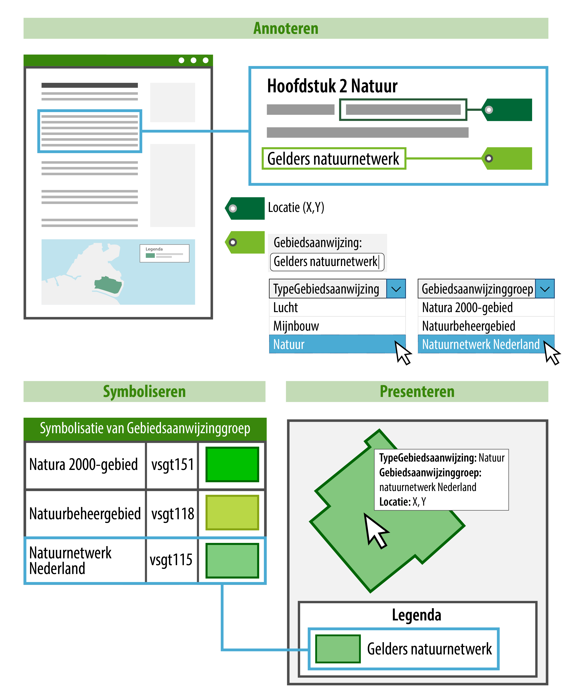Figuur 1Weergave op de kaart door annoteren met object, type en groep, in combinatie met symboolcode uit waardelijst IMOW, toepassing standaardweergave
Figuur 1 laat zien dat een tekst wordt gekoppeld aan een Locatie. Om de Locatie herkenbaar op een kaart weer te geven is deze geannoteerd met een Gebiedsaanwijzing, in dit geval van het type Natuur. Het bevoegd gezag heeft zelf een naam gekozen voor de Gebiedsaanwijzing (in dit geval ‘Gelders Natuurnetwerk’) en heeft aangegeven tot welke groep die specifieke Gebiedsaanwijzing hoort. De groep wordt gekozen uit de waardelijst ‘Natuurgroep’ die hoort bij de Gebiedsaanwijzing van het type Natuur. In het voorbeeld is uit de waardelijst de waarde ‘Natuurnetwerk Nederland’ gekozen. De groep is het onderdeel van de annotatie dat bepaalt hoe de Locatie op de kaart wordt weergegeven. Alle waarden voor groep van de waardelijsten IMOW hebben een symboolcode die bepaalt hoe de groep wordt weergegeven: de kleur, arcering, mate van transparantie en lijnstijl. Voor het bevoegd gezag is het voldoende om aan te geven welke groep van toepassing is. Een viewer kan dan geautomatiseerd met behulp van de symboolcode uit de waardelijsten IMOW de Locatie met de juiste standaardsymbolisatie weergeven.
Het bevoegd gezag heeft twee methoden om zelf invloed uit te oefenen op de weergave van objecten, Locaties en waarden op een kaart. De eerste methode is door te kiezen voor een eigen, specifieke symbolisatie in plaats van de standaardweergave. Dit maakt het bijvoorbeeld mogelijk om de activiteiten ‘het exploiteren van een discotheek’ en ‘het exploiteren van daghoreca’ ieder op een eigen manier weer te geven in plaats van met de standaardweergave die hoort bij de Activiteitengroep ‘exploitatieactiviteit horeca’.Figuur 2laat daarvan (enigszins versimpeld) een voorbeeld zien. IMOW heeft daarvoor hetobjecttypeSymbolisatieItem. Met SymbolisatieItem kan het bevoegd gezag een eigen, specifieke symbolisatie geven aan ActiviteitLocatieaanduiding, Normwaarde en (de verschillende typen) Gebiedsaanwijzing.
Figuur 2Weergave op de kaart door annoteren, links toepassing standaardweergave door object en groep, rechts eigen weergave door keuze symboolcode uit symbolenbibliotheek
Figuur 2laat het verschil zien tussen de toepassing van de standaardweergave en de eerste methode voor het bevoegd gezag om zelf invloed uit te oefenen op de weergave, namelijk door te kiezen voor een eigen, specifieke symbolisatie. Het bovenste deel van de afbeelding laat, net als inFiguur 1maar dan voor een activiteit, zien dat een tekst wordt gekoppeld aaneen Locatie, de activiteit een naam krijgt en een groep wordt gekozen. Het onderste deel van de figuur laat aan de linkerkant de toepassing van de standaardweergave zien. Dit is al beschreven in de toelichting opFiguur 1. De rechterkant toont de toepassing van de eigen, specifieke symbolisatie. Het bevoegd gezag kiest uit de symbolenbibliotheek de symboolcode die het beste past bij de manier waarop hethetobject wil weergeven. In dat geval gaat de specifieke symbolisatie boven de weergave-werking van de groep.
Werkafspraak
Let op: voor deze methode geldt nu de werkafspraak “Gebruik het objecttype SymbolisatieItem niet.” Zie daarvoor de paragrafen 7.8.4 en 7.8.5.
De tweede methode die het bevoegd gezag heeft om zelf invloed uit te oefenen op de weergave is het samenstellen van kaarten en kaartlagen. Daarmee geeft het bevoegd gezag zelf aan dat bepaalde informatie, of een set van informatie, op een kaart of kaartlaag wordt weergegeven. IMOW kent hiervoor de objecten Kaart en Kaartlaag, die in de paragrafen 7.9 en 7.10 zijn beschreven.
3.7 Metadata
Informatie en specificaties voor de metadata die moeten worden meegeleverd bij de aanlevering voor de bekendmaking c.q. publicatie van omgevingsdocumenten zijn te vinden in de STOP-documentatie.
3.8 Van plan tot publicatie
3.8.1 Het aanleverproces
Het bevoegd gezag levert via het digitale kanaal het digitale besluit aan via het bronhouderkoppelvlak. Het digitale besluit bestaat uit een generiek formeel deel met daarin de artikelen c.q. beleidstekst en geografische informatieobjecten (verder afgekort tot GIO, zie hiervoor paragraaf 6.1.2.1) en een Omgevingswetdeel met specifieke objecten vanuit dit domein (verder: OW-objecten, zie hiervoor hoofdstuk 7). In het geval van een wijzigingsbesluit levert het bevoegd gezag de consolidatie-instructies ten behoeve van het consolideren van het wijzigingsbesluit in de regeling. Beide delen vormen een gevalideerd consistent geheel. De LVBB verzorgt de publicatie van het formele deel van het besluit in het digitale publicatieblad van het bevoegde gezag op officiëlebekendmakingen.nl en consolideert het besluit in de regeling. De OW-objecten worden gedistribueerd naar DSO-LV ten behoeve van het Omgevingsloket.
Figuur 3Aanleverproces
3.8.2 Raadplegen
3.8.2.1 Raadplegen in het officiële publicatieblad
Op officielebekendmakingen.nl wordt het besluit formeel bekend gemaakt in het digitale publicatieblad van het bevoegde gezag. De authentieke tekst van het besluit wordt in PDF-formaat weergegeven en er is een zogeheten landingspagina voor de informatieobjecten. Tevens is er een web-versie van het besluit.
Daarnaast worden de consolidatie-instructies verwerkt in de geldende regeling van dat moment. Dit resulteert in een documentgerichte weergave van de regeling van waaruit de informatieobjecten kunnen worden benaderd. De informatieobjecten worden afzonderlijk getoond in een interactieve viewer en kunnen vanuit daar ook worden gedownload.
Raadplegen is alleen mogelijk per omgevingsdocument of regeling en dus ook alleen van één bevoegd gezag. Er is geen integraal overzicht van alle regels voor de leefomgeving.
3.8.2.2 Raadplegen in DSO-LV
DSO-LV ontvangt de geconsolideerde regeling met de OW-objecten. In het Omgevingsloket zijn diverse functies beschikbaar voor de gebruiker. Het biedt de mogelijkheid tot het oriënteren op de integrale regels of het integrale beleid over de fysieke leefomgeving via de kaart. Met een klik op de kaart zijn de daar geldende regels en het geldende beleid te raadplegen. De locaties uit de diverse regelingen worden via een legenda gesymboliseerd op de kaart. De tekst en kaart geven ook selectiemogelijkheden, bijvoorbeeld het tonen van regeltekst en locaties voor een specifieke activiteit, het uitsluitend tonen van regels die voor iedereen gelden of het tonen van beleid over een specifiek beleidsaspect met de bijbehorende locaties. De getoonde tekst komt uit de geconsolideerde Regelingen vanuit de officiële publicatiebladen.
Tot slot vormen, in omgevingsdocumenten met artikelstructuur waarin regels over activiteiten worden gesteld, de OW-objecten Activiteit en ActiviteitLocatieaanduiding de basis voor de toepasbare regels (vragenbomen) in het Omgevingsloket. De locaties zijn gekoppeld aan de activiteiten in de vragenboom. De vragenbomen zelf worden via een apart kanaal aangeleverd.
B Modellering van de Natura 2000-besluiten
Dit deel beschrijft de modellering van de Natura 2000-besluiten en voorziet in de vertaling van (een deel van) de kenmerken van de tabellen uit hoofdstuk 2 naar modellen voor tekst en annotaties die de kenmerken structureren en aan elkaar relateren. De beschrijvingen van de modellen leggen uit hoe de Natura 2000-besluiten zodanig gestructureerd wordt, dat het machineleesbaar en op een gestandaardiseerde manier uitwisselbaar wordt.
Hoofdstuk 4 beschrijft de vormgeving van Besluit en Regeling bij de Natura 2000-besluiten. In hoofdstuk 5 wordt de toepassing van de STOP-tekststructuren op de Natura 2000-besluiten beschreven. Hoofdstuk 6 geeft een inleiding op het Informatiemodel Omgevingswet (IMOW). Hoofdstuk 7 beschrijft in detail het annoteren met OW-objecten van de Natura 2000-besluiten. Hoofdstuk 8 licht het wijzigen van omgevingsdocumenten met wijzigingsbesluiten toe. In hoofdstuk 9 komen de resterende modelleringsaspecten aan de orde.
IMOW en de toepassing daarvan vormen een domeinspecifieke toepassing van STOP. Om een omgevingsdocument op te stellen en juridisch juist te kunnen bekendmaken is het uiteraard ook nodig om te voldoen aan de specificaties van STOP. Die zijn voor zover nodig en mogelijk in dit toepassingsprofiel beschreven. Voor het overige wordt verwezen naar de STOP-standaard.
4 De vormgeving van Besluit en Regeling bij de Natura 2000-besluiten
4.1 Besluit, juridisch geldende versie en (geconsolideerde) Regeling van de Natura 2000-besluiten
4.1.1 Besluit in de juridische context
Het samenstel van Awb, Bekendmakingswet en Omgevingswet maakt, voor besluiten die niet tot een of meer belanghebbenden zijn gericht en die zijn voorbereid met toepassing van afdeling 3.4 Awb, onderscheid tussen het (ontwerp)besluit en de op dat (ontwerp)besluit betrekking hebbende stukken. Met het (ontwerp)besluit wordt hier bedoeld dat wat het bestuursorgaan besluit (of voornemens is te besluiten) en wat het bestuursorgaan vaststelt (c.q. gaat vaststellen). De op het (ontwerp)besluit betrekking hebbende stukken zijn stukken die het bestuursorgaan gebruikt bij de onderbouwing van het (ontwerp)besluit, maar niet vaststelt. Een voorbeeld: als de gemeenteraad het besluit neemt tot wijziging van het omgevingsplan, stelt hij de wijziging van het omgevingsplan vast. Rapportages van onderzoeken die zijn uitgevoerd ter onderbouwing van die wijziging zijn op het (ontwerp)besluit betrekking hebbende stukken. De gemeenteraad stelt deze stukken niet vast, maar betrekt ze bij het nemen van het besluit.
Het (ontwerp)besluit moet gepubliceerd c.q. bekend gemaakt worden door plaatsing van de volledige inhoud van het (ontwerp)besluit in het publicatieblad van het bevoegd gezag[12] Artikelen 3:11 lid 1 en 3:44 lid 2 Awb en artikelen 5, 6 en 12 Bekendmakingswet . De op het (ontwerp)besluit betrekking hebbende stukken moeten ter inzage gelegd worden. Deze terinzagelegging geschiedt zowel op elektronische wijze als op een door het bestuursorgaan aan te wijzen locatie. De (elektronische) terinzagelegging vindt niet plaats in de publicatiebladen.
4.1.2 Het juridische besluit in de informatiekundige context van de STOP/TPOD-standaard
De LVBB moet kunnen bepalen wat in het publicatieblad gepubliceerd dan wel bekendgemaakt moet worden (namelijk alles wat behoort tot het in de vorige paragraaf beschreven besluit in de juridische context) en dat wat geconsolideerd moet worden. Daartoe maakt de STOP/TPOD-standaard onderscheid tussen Besluit en Regeling.
De Regeling bevat de juridische regels c.q. beleid- of realisatietekst en de geografische begrenzingen van de gebieden waar de regels c.q. de beleid- of realisatietekst gelden, die door het bestuursorgaan worden vastgesteld, gewijzigd of ingetrokken. Voorbeelden zijn het omgevingsplan en de omgevingsvisie. Het Besluit bevat de tekst waarmee het bestuursorgaan bepaalt wat er gebeurt bij de bekendmaking: het stelt een initiële regeling vast, het wijzigt een regeling, het trekt een regeling in etc. Het bestuursorgaan bepaalt ook wanneer die vaststelling, wijziging of intrekking in werking treedt. Onderdeel van het Besluit is dus ook de nieuwe regeling of de wijziging van de regeling. Voorbeelden zijn het raadsbesluit met alle bijbehorende onderdelen waarmee de gemeenteraad een wijziging van het omgevingsplan vaststelt en het statenbesluit met alle bijbehorende onderdelen waarmee provinciale staten de omgevingsvisie vaststellen.
Het Besluit wordt, met inbegrip van de inhoud of wijziging van de Regeling die onderdeel is van het Besluit, bekendgemaakt in het publicatieblad van het bevoegd gezag op officielebekendmakingen.nl. De juridisch geldende versie van de Natura 2000-besluiten waaraan rechten en plichten kunnen worden ontleend, bestaat uit de verzameling van de nieuwe regeling en alle daarna vastgestelde wijzigingen van die regeling. Om die verzameling op een voor de mens leesbare en begrijpelijke manier weer te geven is er ook de geconsolideerde Regeling. Een (Toestand van een) geconsolideerde Regeling bevat de inhoud van een regeling zoals die geldt op een bepaald moment. De geconsolideerde Regeling wordt afgeleid uit de initiële regeling waarin steeds de (in werking getreden) wijzigingen uit de wijzigingsbesluiten zijn verwerkt tot een doorlopende versie van de Natura 2000-besluiten. De geconsolideerde Regeling vormt de basis voor de weergave van de regeling in de nationale respectievelijk lokale regelingenbank op overheid.nl én van de versie van de Natura 2000-besluiten die in DSO-LV te raadplegen is.
Bij Besluit en Regeling kunnen bijlagen worden gevoegd die integraal onderdeel zijn van de tekst van Besluit of Regeling maar om redenen van leesbaarheid e.d. niet in het lichaam van Besluit of Regeling kunnen worden opgenomen. Rapportages van onderzoeken die zijn uitgevoerd ter onderbouwing van het nemen van het juridische besluit als bedoeld in de vorige paragraaf zijn op het besluit betrekking hebbende stukken. Het zijn geen bijlagen bij Besluit of Regeling als bedoeld in de STOP/TPOD-standaard. Ze worden niet in de publicatiebladen gepubliceerd maar ter inzage gelegd. Zie voor de elektronische terinzagelegging van deze stukken paragraaf 4.2.3.
4.2 Bijlagen en op het besluit betrekking hebbende stukken
4.2.1 Onderscheid tussen bijlagen en op het besluit betrekking hebbende stukken
In paragraaf 4.1.1 over het besluit in de juridische context is beschreven dat het samenstel van Awb, Bekendmakingswet en Omgevingswet leidt tot onderscheid tussen het besluit en de op dat besluit betrekking hebbende stukken. Het besluit is dat wat het bestuursorgaan besluit en vaststelt. Het besluit wordt bekend gemaakt in het publicatieblad van het bevoegd gezag. Van het besluit kunnen bijlagen deel uitmaken. Deze bijlagen bevatten informatie die onderdeel is van wat het bestuursorgaan vaststelt maar om redenen van omvang, leesbaarheid en/of vormgeving niet goed in het besluit kan worden opgenomen. Bijlagen worden dus ook in het publicatieblad opgenomen.
Op het (ontwerp)besluit betrekking hebbende stukken zijn stukken die het bestuursorgaan gebruikt bij de onderbouwing van het besluit, maar niet vaststelt. Rapportages van onderzoeken die zijn uitgevoerd ter onderbouwing van het besluit zijn typische voorbeelden van op het (ontwerp)besluit betrekking hebbende stukken. De op het (ontwerp)besluit betrekking hebbende stukken moeten ter inzage gelegd worden. Die terinzagelegging vindt niet plaats in het publicatieblad.
4.2.2 Bijlagen bij Besluit en Regeling
Er is informatie die onderdeel vormt van (een besluit tot vaststelling of wijziging van) een omgevingsdocument maar niet goed direct in het lichaam van besluit of regeling is op te nemen. Deze informatie wordt dan in een bijlage opgenomen. Redenen daarvoor zijn met name leesbaarheid en vormgeving (denk aan lange lijsten en complexe tabellen). Ook kan een bijlage bestaan uit verwijzingen naar de (geografische) informatieobjecten of uit niet-tekstuele informatie. Deze bijlagen worden als onderdeel van Besluit en Regeling gepubliceerd c.q. bekend gemaakt in het publicatieblad.
Bijlagen kunnen worden gepubliceerd als:
bijlage als onderdeel van de tekst in STOP-XML;
PDF-document, gemodelleerd als informatieobject.
De hoofdregel is dat elke tekst die onderdeel is van een besluit of regeling, dus ook een bijlage, wordt vormgegeven als onderdeel van de tekst in STOP-XML. Op die manier is gewaarborgd dat de teksten voldoen aan alle wettelijke eisen betreffende publicatie en bekendmaking. De teksten kunnen dan juridisch rechtsgeldig gepubliceerd en geconsolideerd worden en de voorzieningen kunnen ze volgens de richtlijnen van digitale toegankelijkheid ontsluiten. Ook is het dan mogelijk om te verwijzen naar specifieke onderdelen van de tekst en om onderdelen van de tekst te muteren. Slechts in bijzondere gevallen is het toegestaan een bijlage als PDF-document aan te leveren. Dat is omdat het niet altijd mogelijk is om tekst in STOP-XML uit te wisselen zonder de tekst te moeten overtypen. Het aanleveren van een bijlage als PDF-document is alleen toegestaan in specifieke gevallen die in het betreffende toepassingsprofiel zijn vastgelegd. In dit toepassingsprofiel is dat gedaan in de normen in paragraaf 4.4. Het gebruik van een PDF-document als bijlage is alleen toegestaan als het voor het bevoegd gezag redelijkerwijs niet mogelijk is om de bijlage als onderdeel van de tekst in STOP-XML op te stellen én als de bijlage informatie bevat die daadwerkelijk als (te consolideren) bijlage gezien kan worden.
Opgemerkt wordt dat aan DSO-LV alleen tekstonderdelen worden doorgeleverd die in de Regeling zijn opgenomen. DSO-LV kan dus ook alleen die onderdelen tonen. Bijlagen die onlosmakelijk onderdeel zijn van het omgevingsdocument zelf, zoals bijlagen bij de regels of de beleidstekst, moeten dus in de Regeling zelf worden opgenomen om in DSO-LV getoond en gebruikt te kunnen worden.
4.2.2.1 Bijlage als onderdeel van de tekst in STOP-XML
Een bijlage die onderdeel is van de tekst wordt gecodeerd in XML overeenkomstig het STOP-model voor Vrijetekststructuur dat is beschreven in paragraaf 5.3. Een bijlage die onderdeel is van de regeling wordt geconsolideerd, een bijlage die onderdeel is van het besluit wordt niet geconsolideerd. Een voorbeeld van een bijlage die onderdeel is van de tekst in STOP-XML is de bijlage met verwijzingen naar de GIO’s.
4.2.2.2 PDF-document, gemodelleerd als informatieobject
Een bijlage die niet in XML via het STOP-model gecodeerd kan worden, is in STOP een informatieobject. Een informatieobject is een zelfstandige entiteit die onderdeel is van het besluit of de regeling waarin het vastgesteld wordt, maar niet is opgenomen in de (XML-) tekst van besluit of regeling.
Naast het geografisch informatieobject, dat wordt beschreven in paragraaf 6.1.2.1, kent STOP het informatieobject dat wordt gebruikt voor tekstuele bijlagen. De bijlage wordt in de vorm van een PDF-document met het besluit meegegeven, gemodelleerd als informatieobject. Een bijlage mag alleen als PDF-document worden aangeleverd als het voor het bevoegd gezag redelijkerwijs niet mogelijk is om de bijlage als onderdeel van de tekst in STOP-XML op te stellen én als de bijlage informatie bevat die daadwerkelijk als (te consolideren) bijlage gezien kan worden. Als de bijlage bekendgemaakt en/of geconsolideerd moet worden, moet het PDF-document onveranderlijk zijn. Daarom moet het voldoen aan de eisen van PDF/A-1a of PDF/A-2a. Bij een latere wijziging van het informatieobject moet het gehele document worden vervangen. STOP kent namelijk geen voorziening om een informatieobject te muteren.
Let op dat een PDF-document als informatieobject precies hetzelfde werkt als een GIO. In een bijlage Informatieobjecten wordt de naam van het PDF-document opgenomen op een manier vergelijkbaar met een begrip en zijn definitie: bij wijze van definitie komt achter de naam van het PDF-document de volledige identificatie van het informatieobject. Aanbevolen wordt om twee verschillende bijlagen informatieobjecten te maken: een bijlage voor de GIO’s en een bijlage voor de PDF-document-informatieobjecten. In de bekendmaking en de viewers op overheid.nl en in DSO-LV zijn PDF-documenten alleen via een omweg (mogelijk via het klikken op een link) te raadplegen. Dit is een extra reden waarom wordt aanbevolen om als dat maar enigszins mogelijk is, bijlagen als onderdeel van de tekst in STOP-XML toe te voegen.
4.2.3 Op het besluit betrekking hebbende stukken
In paragraaf 4.2.1 is aangegeven wat op het (ontwerp)besluit betrekking hebbende stukken zijn: dat zijn stukken die het bestuursorgaan gebruikt bij de onderbouwing van het besluit, maar geen integraal onderdeel vormen van de tekst van Besluit of Regeling. Bekende voorbeelden zijn de rapportages van onderzoeken die zijn uitgevoerd ter onderbouwing van het besluit, zoals een milieueffectrapportage en rapportages van akoestisch onderzoek, archeologisch onderzoek en bodemonderzoek, en de zienswijzennota. Volgens Awb en Bekendmakingswet zijn op het (ontwerp)besluit betrekking hebbende stukken geen onderdeel van de publicatie of bekendmaking in het publicatieblad, maar worden ze ter inzage gelegd. Vanuit het besluit in het publicatieblad moet het mogelijk zijn om op eenvoudige wijze de elektronisch ter inzage gelegde stukken te raadplegen.
Over deze stukken bepaalt de Awb het volgende:
De op het ontwerpbesluit betrekking hebbende stukken liggen ter inzage gedurende de termijn van zes weken voor het naar voren brengen van zienswijzen, die begint op de dag waarop het ontwerp ter inzage is gelegd en daarvan kennis is gegeven[13] Artikelen 3:11 en 3:16 Awb .
De op het definitieve besluit betrekking hebbende stukken liggen ter inzage totdat de beroepstermijn van zes weken is verstreken[14] Artikelen 3:44 en 6:7 Awb . De beroepstermijn begint op de dag na die waarop het besluit op de voorgeschreven wijze is bekendgemaakt (of, in het geval van een besluit dat aan goedkeuring is onderworpen, op de dag na die waarop het goedkeuringsbesluit op de voorgeschreven wijze is bekendgemaakt)[15] Artikel 6:8 Awb .
Uitgangspunt van de wetgever is dus dat de op het (ontwerp)besluit betrekking hebbende stukken gedurende de zes weken van de zienswijzen- respectievelijk beroepstermijn ter inzage liggen. Het kan uiteraard voorkomen dat betrokkenen ook na die termijnen kennis willen nemen van deze stukken. Als de stukken dan niet meer elektronisch worden ontsloten, zou een betrokkene het bestuursorgaan moeten verzoeken om toezending van die stukken, of naar een fysieke locatie toe moeten om inzage te krijgen in die stukken. Daarom wordt aanbevolen om de elektronische terinzagelegging van de op het ontwerpbesluit betrekking hebbende stukken en de op het (definitieve) besluit betrekking hebbende stukken in ieder geval te laten voortduren totdat de volledige procedure is afgerond. Bij een besluit waartegen geen beroep openstaat is dat totdat het besluit in werking is getreden. Bij een besluit waartegen wel beroep openstaat is dat in ieder geval tot het einde van de beroepstermijn en, als beroep tegen het besluit is ingesteld, totdat de Afdeling bestuursrechtspraak van de Raad van State uitspraak heeft gedaan op de beroepen.
Naast de verplichting om op het (ontwerp)besluit betrekking hebbende stukken ter inzage te leggen, gelden ook de verplichtingen uit de Archiefwet. Op grond van deze wet zijn overheidsorganen verplicht de onder hen berustende archiefbescheiden te bewaren en om ze na afloop van de voor het betreffende stuk geldende bewaartermijn te vernietigen.
Toekomstige functionaliteit
Onderzocht wordt of in de toekomst voor de elektronische terinzagelegging van stukken die betrekking hebben op het (ontwerp)besluit van omgevingsdocumenten gebruik gemaakt kan worden van een nog te ontwikkelen centrale voorziening voor het ontsluiten van dergelijke stukken in het kader van de Wet open overheid en de Bekendmakingswet. Wanneer duidelijk is of voor deze stukken gebruik gemaakt kan worden van een centrale voorziening, welke voorziening dat is en hoe de aanlevering moet plaatsvinden, zal dat in een volgende versie van dit toepassingsprofiel beschreven worden.
Workaround
Zolang er geen centrale voorziening is voor de elektronische terinzagelegging van op het (ontwerp)besluit betrekking hebbende stukken, past het bevoegd gezag naar keuze één van de volgende methoden toe:
het ontsluit de betreffende stukken op een zelf te bepalen elektronische wijze, bijvoorbeeld via de eigen website, of
het levert de betreffende stukken aan de LVBB aan als onderdeel van het Besluit conform STOP. Daarbij moet worden voldaan aan de eisen aan PDF-bijlagen die in dit hoofdstuk zijn beschreven. De LVBB stelt beperkingen aan de bestandsgrootte.
Op het besluit betrekking hebbende stukken zijn stukken waarmee het bestuursorgaan het besluit onderbouwt en motiveert. Wanneer het bevoegd gezag zelf de stukken op elektronische wijze ontsluit, neemt het in het onderdeel Motivering dan wel in het onderdeel Toelichting van het Besluit een link op naar de webpagina waar die stukken zijn ontsloten, en/of een link naar het betreffende stuk op die webpagina. Wanneer het bevoegd gezag de stukken opneemt als onderdeel van het Besluit, neemt het ze op als Bijlagen bij de Motivering dan wel de Toelichting.
Wanneer het bevoegd gezag zelf de stukken op elektronische wijze ontsluit, wordt aanbevolen om de terinzagelegging op elektronische wijze van de op het ontwerpbesluit betrekking hebbende stukken en de op het (definitieve) besluit betrekking hebbende stukken in ieder geval te laten voortduren totdat de volledige procedure is afgerond.
4.3 Modellen voor Besluit en Regeling en tekststructuren
STOP schrijft voor hoe een officiële publicatie vormgegeven en aangeleverd moet worden om te kunnen worden bekendgemaakt of gepubliceerd en om te kunnen worden geconsolideerd. Onderdeel van die voorschriften van STOP zijn de modellen voor Besluit en Regeling en de tekststructuren. Beide spelen een belangrijke rol bij het opstellen en aanleveren van omgevingsdocumenten. De TPOD-standaard geeft daarvan per type omgevingsdocument een specificatie: welk model moet worden gebruikt en hoe moet dat model worden toegepast.
4.3.1 Modellen voor Besluit en Regeling
Er zijn modellen voor het Besluit en modellen voor de Regeling. De STOP/TPOD-standaard kent voor het Besluit de modellen BesluitKlassiek en BesluitCompact. Voor de Regeling zijn dat de modellen RegelingKlassiek, RegelingCompact, RegelingVrijetekst en RegelingTijdelijkdeel. RegelingKlassiek is uitsluitend bedoeld voor de instrumenten met regels van het Rijk. RegelingCompact is het model voor de decentrale regels, oftewel de instrumenten met regels van gemeente, waterschap en provincie, maar kan ook voor instrumenten met regels van het Rijk gebruikt worden. Het Rijk heeft dus een keuzemogelijkheid tussen RegelingKlassiek en RegelingCompact, waarbij wordt opgemerkt dat als het omgevingsdocument eenmaal is vormgegeven conform een van de modellen, er niet op een later moment in de levensloop van datzelfde omgevingsdocument zomaar kan worden overgestapt op het andere model. RegelingVrijetekst wordt gebruikt voor alle instrumenten met Vrijetekststructuur. RegelingTijdelijkdeel tot slot is het model dat moet worden gebruikt wanneer een tijdelijk regelingdeel wordt toegevoegd aan de geconsolideerde regeling van omgevingsplan of omgevingsverordening: bij een voorbereidingsbesluit, een reactieve interventie en een projectbesluit als dat een of meer omgevingsplannen wijzigt met regels die nodig zijn voor het uitvoeren en in werking hebben of in stand houden van het project. BesluitKlassiek wordt alleen in combinatie met RegelingKlassiek gebruikt. BesluitCompact wordt gebruikt als besluitmodel bij RegelingCompact, RegelingVrijetekst en RegelingTijdelijkdeel. In het vervolg van dit hoofdstuk worden alleen de modellen beschreven die voor de Natura 2000-besluiten van toepassing zijn.
De modellen voor Regeling en Besluit die in het geval van de Natura 2000-besluiten gebruikt moeten worden, zijn in detail beschreven in paragraaf 4.4.
4.3.2 Tekststructuren
De STOP/TPOD-standaard onderscheidt twee tekststructuren:
Artikelstructuur: de tekststructuur voor het Lichaam[16] Lichaam van de regeling als bedoeld in Aanwijzing 3.53 van de Aanwijzingen voor de regelgeving en in STOP van een Regeling als dat is opgebouwd uit één of meer artikelen;
Vrijetekststructuur:
de tekststructuur voor het Lichaam van een Regeling van juridisch authentieke documenten die geen artikelen bevat;
de tekststructuur voor onderdelen van Besluit en Regeling buiten het Lichaam.
Opgemerkt wordt dat er ook in het Lichaam van een Besluit artikelen voorkomen. Deze artikelen vallen echter niet onder het begrip Artikelstructuur. Dat de elementen van de Vrijetekststructuur worden gebruikt buiten het Lichaam geldt zowel voor omgevingsdocumenten met Artikelstructuur als voor omgevingsdocumenten met Vrijetekststructuur, en zowel voor Besluit als voor Regeling.
In het vervolg van dit hoofdstuk is vastgelegd welke modellen voor Besluit en Regeling gebruikt moeten worden en welke bijzondere bepalingen gelden voor de Natura 2000-besluiten. In hoofdstuk 5 zijn de STOP-tekststructuren en de toepassing daarvan op de Natura 2000-besluiten beschreven.
4.4 De vormgeving van Besluit en Regeling bij Natura 2000-besluiten
4.4.1 Model
4.4.1.1 Toelichting
Bij het opstellen en wijzigen van omgevingsdocumenten werkt het bevoegd gezag in de eigen plansoftware aan het omgevingsdocument in Regeling-vorm: de volledige inhoud van het omgevingsdocument. Met de volledige inhoud wordt bedoeld: alle artikelen (en boven- en onderliggende tekstelementen), alle informatieobjecten en alle OW-informatie.
Voorafgaand aan de publicatie van een ontwerpbesluit en voorafgaand aan (en eventueel ook na) het nemen van een definitief besluit genereert de software van het bevoegd gezag uit die Regeling een Besluit. In het geval van een besluit tot het instellen van een nieuwe Regeling genereert de software een Besluit met daarin de volledige nieuwe Regeling, in het geval van een wijzigingsbesluit genereert de software een Besluit dat -in principe in renvooiweergave- de wijzigingen bevat van de bestaande Regelingversie naar de nieuwe Regelingversie, oftewel een overzicht van de wijzigingen die het besluit aanbrengt in de bestaande Regeling. Naast het onderdeel met de nieuwe Regeling of de wijzigingen in de Regeling, bevat het Besluit ook andere onderdelen, zoals de ondertekening, motivering en bijlagen. Het bevoegd gezag levert het Besluit aan de LVBB aan. De LVBB zorgt er voor dat het aangeleverde Besluit bekend gemaakt wordt en genereert met behulp van het Besluit een nieuwe RegelingVersie, oftewel een nieuwe geconsolideerde Regeling. Om het de LVBB mogelijk te maken om die verwerkingen te doen stelt de STOP/TPOD-standaard eisen aan de vormgeving van de tekst van Besluit en Regeling. Die eisen zijn vastgelegd in modellen voor Besluit en modellen voor Regeling. Zoals hiervoor al gezegd kent de STOP/TPOD-standaard twee modellen voor documenten met Artikelstructuur: het compacte model (RegelingCompact en BesluitCompact) en het klassieke model (RegelingKlassiek en BesluitKlassiek).
Alvorens te beginnen met het opstellen van een omgevingsdocument met Artikelstructuur van het Rijk dient het bestuursorgaan te kiezen tussen de twee modellen van STOP voor de Artikelstructuur: het klassieke model of het compacte model. Wanneer het omgevingsdocument eenmaal is vormgegeven conform een van de modellen, kan niet op een later moment in de levensloop van datzelfde omgevingsdocument zomaar worden overgestapt op het andere model.
In de navolgende subparagrafen wordt de toepassing van de STOP-Modellen voor AMvB en MR toegelicht.
4.4.1.2 Norm
Voor de AMvB en voor de ministeriële regeling moet een keuze worden gemaakt tussen:
het compacte model: BesluitCompact en RegelingCompact (paragraaf 4.4.2) en
het klassieke model: BesluitKlassiek en RegelingKlassiek (paragraaf 4.4.3).
4.4.2 Compact model voor Besluit en Regeling
4.4.2.1 BesluitCompact
In het Besluit staat wat het bestuursorgaan vaststelt (of wijzigt), met inbegrip van de procedure van totstandkoming en de motivering van het besluit. Het Besluit wordt, met inbegrip van de inhoud of wijziging van de Regeling die onderdeel is van het Besluit, bekendgemaakt in het publicatieblad van het bevoegd gezag op officielebekendmakingen.nl.
In paragraaf 4.4.2.1.1 is de norm voor de toepassing van het STOP-model BesluitCompact op de Natura 2000-besluiten vastgelegd: welke elementen moeten respectievelijk mogen worden gebruikt en hoe vaak kunnen ze voorkomen. Paragraaf 4.4.2.1.2 geeft een uitgebreide toelichting op de elementen van het Besluit, waaronder ook tips over het al dan niet gebruikelijk zijn van een bepaald element.
Opgemerkt wordt dat de modellen voor Besluit en Regeling XML-modellen zijn. Met de in de volgende paragrafen genoemde elementen worden dus (STOP-)XML-elementen bedoeld.
Omwille van de leesbaarheid en herkenbaarheid zijn de namen van de ‘hoofdelementen’ vetgedrukt en die van de ‘subelementen’ schuingedrukt. De ‘hoofdelementen’ zijn genummerd om er in de toelichting en het voorbeeld in de volgende paragrafen naar te kunnen verwijzen.
4.4.2.1.1 Norm
Een besluit tot vaststelling of wijziging van de Natura 2000-besluiten moet worden opgesteld en aangeleverd overeenkomstig het model BesluitCompact. BesluitCompact bevat de volgende elementen:
RegelingOpschrift: STOP-element dat de officiële titel van het Besluit bevat. Verplicht element. Komt 1 keer voor.
Aanhef: STOP-element dat een blok tekst aan het begin van een Besluit bevat. Optioneel element. Komt 0 of 1 keer voor.
Lichaam: STOP-element dat het lichaam (oftewel het dictum) van het Besluit bevat: dat wat het bestuursorgaan vaststelt of wijzigt. Verplicht element. Komt 1 keer voor. Bestaat voor zowel initieel besluit (besluit dat een regeling instelt) als wijzigingsbesluit (besluit dat een regeling wijzigt) uit de volgende elementen:
WijzigArtikel: STOP-element dat beschrijft wat wordt vastgesteld of gewijzigd en verwijst naar de WijzigBijlage. Verplicht element. Komt ten minste 1 keer voor. Een WijzigArtikel moet en mag alleen de volgende onderdelen bevatten:
Kop: STOP-element dat de Kop bevat. Verplicht element. Komt 1 keer voor. Bevat ten minste één van de Kopelementen Label, Nummer en Opschrift; ieder van deze onderdelen komt 0 of 1 keer voor.
Wat: STOP-element dat bevat:
een tekstuele omschrijving van dat wat het bestuursorgaan vaststelt (in het geval van een initieel besluit) respectievelijk wijzigt (in het geval van een wijzigingsbesluit); en
een verwijzing, zowel tekstueel als met IntRef, naar de WijzigBijlage.
Artikel: STOP-element dat een regulier artikel bevat. Verplicht element. Komt ten minste 1 keer voor. Ieder Artikel moet de volgende onderdelen bevatten:
Kop: STOP-element dat de Kop bevat. Verplicht element. Komt 1 keer voor. Bevat ten minste één van de Kopelementen Label, Nummer en Opschrift; ieder van deze onderdelen komt 0 of 1 keer voor.
Verplichte keuze tussen Lid en Inhoud.
Sluiting: STOP-element dat het Besluit afsluit. Optioneel element. Komt 0 of 1 keer voor. De tekst van de Sluiting staat in een of meer reguliere Alinea’s. Ook kan gebruik gemaakt worden van de optionele elementen Slotformulering, Dagtekening en Ondertekening.
WijzigBijlage: STOP-element dat voor een initieel besluit de inhoud van de instelling van de Regeling en voor een wijzigingsbesluit de wijzigingen van een versie van de Regeling bevat. Verplicht element. Komt ten minste 1 keer voor. Een WijzigBijlage bevat de volgende elementen:
Kop: STOP-element dat de Kop bevat. Verplicht element. Komt 1 keer voor. Bevat ten minste één van de onderdelen Label, Nummer en Opschrift; ieder van deze onderdelen komt 0 of 1 keer voor. Optioneel kan het element Subtitel worden toegevoegd.
Een verplichte keuze uit:
RegelingCompact: STOP-element dat de volledige tekst van de initiële regeling bevat. Onder voorwaarde verplicht element: alleen te gebruiken bij een initieel besluit; is dan verplicht en komt dan 1 keer voor.
RegelingMutatie: STOP-element dat de wijzigingen tussen twee RegelingVersies bevat. Onder voorwaarde verplicht element: alleen te gebruiken bij een wijzigingsbesluit; is dan verplicht en komt dan 1 keer voor.
Bijlage: STOP-element dat een bijlage (in dit geval bij het Besluit) bevat. Optioneel element. Komt zo vaak voor als gewenst. Hoofdregel is dat een bijlage is vormgegeven als onderdeel van de tekst in STOP-XML. In bijzondere gevallen is het toegestaan een bijlage als PDF-document aan te leveren. Een Bijlage die in STOP-XML wordt opgesteld, bevat de volgende elementen:
Kop: STOP-element dat de Kop bevat. Verplicht element. Komt 1 keer voor. Bevat ten minste één van de Kopelementen Label, Nummer en Opschrift; ieder van deze onderdelen komt 0 of 1 keer voor. Optioneel kan het element Subtitel worden toegevoegd.
De inhoud van de Bijlage, opgebouwd met Divisie (optioneel element) en Divisietekst (verplicht element). Divisie en Divisietekst moeten voldoen aan de specificaties voor de Vrijetekststructuur in paragraaf 5.3.
Sluiting: STOP-element dat de Bijlage afsluit. Optioneel element. Komt 0 of 1 keer voor. De tekst van de Sluiting staat in een of meer reguliere Alinea’s. Ook kan gebruik gemaakt worden van de optionele elementen Slotformulering, Dagtekening en Ondertekening.
Een bijlage mag alleen als PDF-document worden aangeleverd als het voor het bevoegd gezag redelijkerwijs niet mogelijk is om de bijlage als onderdeel van de tekst in STOP-XML op te stellen én als de bijlage informatie bevat die daadwerkelijk als bijlage gezien kan worden. Het PDF-document moet dan voldoen aan de eisen van PDF/A-1a of PDF/A-2a en moet worden gemodelleerd als informatieobject.
Toelichting: STOP-element dat de toelichting op het Besluit bevat. Optioneel element. Komt 0 of 1 keer voor. Een Toelichting als onderdeel van het Besluit bevat de volgende elementen:
Kop: STOP-element dat de Kop bevat. Verplicht indien de -hierna beschreven- aanbevolen eenvoudige modellering voor de toelichting wordt gebruikt. Onder voorwaarde verplicht element indien de gestructureerde modellering voor de toelichting wordt gebruikt: verplicht indien binnen het element Toelichting zowel het element AlgemeneToelichting als het element ArtikelgewijzeToelichting voorkomt, komt dan 1 keer voor; optioneel indien binnen het element Toelichting slechts één van de elementen AlgemeneToelichting en ArtikelgewijzeToelichting voorkomt, komt dan 0 of 1 keer voor. Bevat ten minste één van de Kopelementen Label, Nummer en Opschrift; ieder van deze onderdelen komt 0 of 1 keer voor. Optioneel kan het element Subtitel worden toegevoegd.
De inhoud van de Toelichting, opgebouwd met Divisie (optioneel element) en Divisietekst (verplicht element). Divisie en Divisietekst moeten voldoen aan de specificaties voor de Vrijetekststructuur in paragraaf 5.3. Dit is de aanbevolen modellering voor een Toelichting op het Besluit. Geadviseerd wordt om voor de Toelichting op het Besluit deze eenvoudige modellering te gebruiken en niet de hierna beschreven onderverdeelde modellering.
Een onderverdeling van de Toelichting in het geval van een toelichting die zowel een algemeen deel als een artikelsgewijs deel heeft. Aanbevolen wordt om voor een Toelichting op het Besluit niet deze gestructureerde modellering te gebruiken maar de hiervoor beschreven eenvoudige modellering. Indien toch gebruikt bestaat de toelichting uit de volgende elementen:
AlgemeneToelichting: STOP-element dat de algemene toelichting bevat. Optioneel element. Komt 0 of 1 keer voor. Een AlgemeneToelichting bevat de volgende elementen:
Kop: STOP-element dat de Kop bevat. Verplicht element. Komt 1 keer voor. Bevat ten minste één van de Kopelementen Label, Nummer en Opschrift; ieder van deze onderdelen komt 0 of 1 keer voor. Optioneel kan het element Subtitel worden toegevoegd.
De inhoud van de AlgemeneToelichting, opgebouwd met Divisie (optioneel element) en Divisietekst (verplicht element). Divisie en Divisietekst moeten voldoen aan de specificaties voor de Vrijetekststructuur in paragraaf 5.3.
ArtikelgewijzeToelichting: STOP-element dat de artikelsgewijze toelichting bevat. Optioneel element. Komt 0 of 1 keer voor. Een ArtikelgewijzeToelichting bevat de volgende elementen:
Kop: STOP-element dat de Kop bevat. Verplicht element. Komt 1 keer voor. Bevat ten minste één van de Kopelementen Label, Nummer en Opschrift; ieder van deze onderdelen komt 0 of 1 keer voor. Optioneel kan het element Subtitel worden toegevoegd.
De inhoud van de ArtikelgewijzeToelichting, opgebouwd met Divisie (optioneel element) en Divisietekst (verplicht element). Divisie en Divisietekst moeten voldoen aan de specificaties voor de Vrijetekststructuur in paragraaf 5.3.
Sluiting: STOP-element dat de Toelichting afsluit. Optioneel element. Komt 0 of 1 keer voor. De tekst van de Sluiting staat in een of meer reguliere Alinea’s. Ook kan gebruik gemaakt worden van de optionele elementen Slotformulering, Dagtekening en Ondertekening.
Bijlage: STOP-element dat een bijlage (in dit geval bij de Toelichting op het Besluit) bevat. Optioneel element. Komt zo vaak voor als gewenst. Een bijlage bij de Toelichting wordt niet geconsolideerd. Voor een bijlage bij de Toelichting gelden dezelfde eisen als voor het ‘hoofdelement’ Bijlage.
ArtikelgewijzeToelichting: STOP-element dat de artikelsgewijze toelichting, oftewel de toelichting op de artikelen in het Besluit, bevat. Optioneel element. Komt 0 of 1 keer voor. Mogelijkheid die STOP biedt voor een toelichting die uitsluitend een toelichting op de artikelen in het besluit is. Dit element zal in een toekomstige versie van de standaard vervallen; gebruik daarvan wordt daarom nu afgeraden. Indien toch gebruikt gelden voor deze ArtikelgewijzeToelichting dezelfde eisen als voor de ArtikelgewijzeToelichting binnen het element Toelichting onder 7.
Motivering: STOP-element dat de motivering van het Besluit bevat. Optioneel element. Komt 0 of 1 keer voor. Een Motivering bevat de volgende elementen:
Kop: STOP-element dat de Kop bevat. Verplicht element. Komt 1 keer voor. Bevat ten minste één van de Kopelementen Label, Nummer en Opschrift; ieder van deze onderdelen komt 0 of 1 keer voor. Optioneel kan het element Subtitel worden toegevoegd.
De inhoud van de Motivering, opgebouwd met Divisie (optioneel element) en Divisietekst (verplicht element). Divisie en Divisietekst moeten voldoen aan de specificaties voor de Vrijetekststructuur in paragraaf 5.3.
Sluiting: STOP-element dat de Motivering afsluit. Optioneel element. Komt 0 of 1 keer voor. De tekst van de Sluiting staat in een of meer reguliere Alinea’s. Ook kan gebruik gemaakt worden van de optionele elementen Slotformulering, Dagtekening en Ondertekening.
Bijlage: STOP-element dat een bijlage (in dit geval bij de Motivering) bevat. Optioneel element. Komt zo vaak voor als gewenst. Een bijlage bij de Motivering wordt niet geconsolideerd. Voor een bijlage bij de Motivering gelden dezelfde eisen als voor het ‘hoofdelement’ Bijlage.
Inhoudsopgave: STOP-element dat de inhoudsopgave van het Besluit bevat. Optioneel element. Komt 0 of 1 keer voor. Een inhoudsopgave wordt niet geconsolideerd. Dit element zal in een toekomstige versie van de standaard vervallen; gebruik daarvan wordt daarom nu afgeraden.
4.4.2.1.2 Toelichting
In deze paragraaf worden de elementen toegelicht die moeten respectievelijk kunnen voorkomen in een Besluit dat is opgesteld overeenkomstig het model BesluitCompact. Figuur 4 laat schematisch zien hoe het model BesluitCompact voor de Natura 2000-besluiten er uit ziet (de nummers voor de elementen verwijzen naar de nummering in de vorige paragraaf).
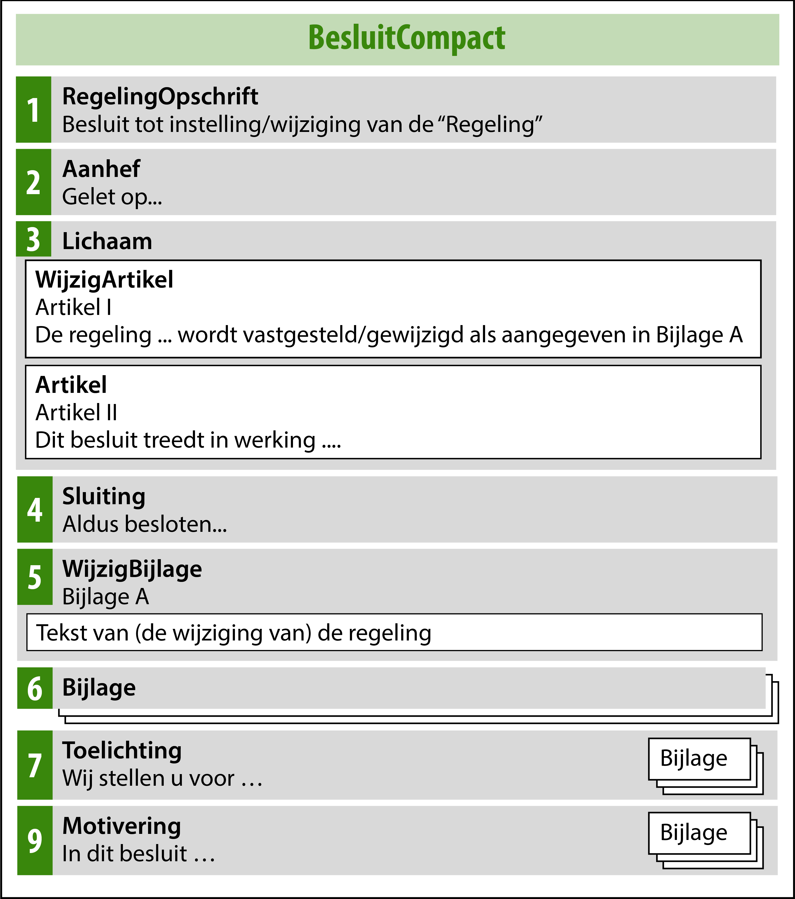Figuur 4Overzicht van model BesluitCompact
Figuur 4 toont de toepassing van het model BesluitCompact op een besluit tot wijziging van de Natura 2000-besluiten. De onderdelen 1 t/m 9 komen in het publicatieblad. In de regelingenbank op overheid.nl en in DSO-LV is alleen de geconsolideerde regeling te zien die de LVBB met behulp van de WijzigBijlage (nr 5) construeert.
In de hierna volgende toelichting wordt de nummering van paragraaf 4.4.2.1.1 gevolgd. In die paragraaf is van ieder element aangegeven of het moet (verplicht) of mag (optioneel) voorkomen; dat wordt in deze toelichting niet herhaald. De ‘hoofdelementen’ zijn weer vetgedrukt en de ‘subelementen’ schuingedrukt.
RegelingOpschrift: de officiële titel van het Besluit. Bijvoorbeeld: Besluit tot vaststelling Aanwijzingsbesluit Drents-Friese Wold en Leggelderveld.
Aanhef: blok tekst aan het begin van het Besluit. Hierin kunnen bijvoorbeeld de overwegingen van het bestuursorgaan staan, die voorafgaan aan het daadwerkelijke besluit.
Lichaam: het Lichaam van het Besluit, in de bestuurspraktijk ook wel het dictum genoemd. Het Lichaam bevat ten minste één WijzigArtikel. In de tekst van het WijzigArtikel staat wat het bestuursorgaan besluit vast te stellen of te wijzigen en een verwijzing naar de WijzigBijlage, het onderdeel van het besluit waarin de inhoud of wijzigingen van de Regeling staan. Daarnaast moet het WijzigArtikel een machineleesbare verwijzing (met IntRef) naar de WijzigBijlage bevatten. Een voorbeeld van de tekstuele omschrijving en verwijzing bij de (initiële) vaststelling van een aanwijzingsbesluit: “Aanwijzingsbesluit Natura 2000-gebied Drents-Friese Wold en Leggelderveld wordt vastgesteld zoals is aangegeven in Bijlage A”. Een voorbeeld van de tekstuele omschrijving en verwijzing bij een wijziging van een toegangsbeperkingsbesluit: “Toegangsbeperkingsbesluit Natura 2000-gebied IJsselmeer wordt gewijzigd zoals is aangegeven in Bijlage A”. In een WijzigArtikel mag geen andere inhoud, zoals de datum van inwerkingtreding van het besluit, worden opgenomen. Opgemerkt wordt dat WijzigArtikel een technische term is die niet in de tekst van het besluit zal voorkomen. Bij gebruik van een Label zal de Kop dus niet Wijzigartikel II zijn maar Artikel II. In het Lichaam moet ten minste één (regulier) Artikel voorkomen. De (omschrijving van de) datum van inwerkingtreding van het besluit moet in zo’n regulier Artikel staan. In een Artikel mag geen inhoud worden opgenomen die in een WijzigArtikel hoort. Het is gebruikelijk dat WijzigArtikel voor Artikel komt, maar daar kan indien gewenst van worden afgeweken. Op de WijzigArtikelen en Artikelen in het Lichaam van het Besluit zijn de in paragraaf 4.4.2.1.1 genoemde eisen van toepassing. De bepalingen over de Artikelstructuur van paragraaf 5.2 gelden er niet voor. Ze kunnen niet worden geannoteerd met de in hoofdstuk 7 beschreven annotaties met OW-objecten.
Sluiting: de afsluiting van het Besluit. Hier staat vaak de datum waarop het bestuursorgaan het besluit heeft genomen. Ook staan hier de namen en dergelijke van de personen die namens het bestuursorgaan het besluit hebben ondertekend. Een voor de interne huishouding van het bevoegd gezag gebruikt papieren of digitaal exemplaar van het besluitdocument kan ook de handtekeningen van die personen bevatten. De versie van het besluit die ter bekendmaking aan de LVBB wordt aangeboden wordt niet voorzien van handtekeningen. Wanneer tegen het besluit beroep kan worden ingesteld wordt de rechtsmiddelenclausule in dit onderdeel opgenomen: de vermelding dat tegen het besluit beroep kan worden ingesteld en door wie, binnen welke termijn en bij welk orgaan dat beroep kan worden ingesteld. Dit is alleen het geval bij de aanlevering van een definitief besluit.
WijzigBijlage: het element waarin óf de inhoud van de initiële Regeling staat óf de wijzigingen die het Besluit aanbrengt in de bestaande versie van de Regeling. De WijzigBijlage bevat de inhoud van de (wijziging van de) Regeling. Een WijzigBijlage heeft dus een heel andere functie dan een (gewone) Bijlage. De WijzigBijlage moet worden voorzien van een Kop. Een voorbeeld van deze Kop: ‘Bijlage A bij artikel I.’ Het artikel waarnaar wordt verwezen is het WijzigArtikel in het Lichaam van het Besluit. Na de Kop moet een keuze worden gemaakt tussen RegelingCompact en RegelingMutatie. RegelingCompact wordt gekozen wanneer een bevoegd gezag met het besluit een nieuwe, initiële, regeling instelt. De RegelingCompact bevat de volledige Regeling, oftewel de artikelen met de inhoud, van het omgevingsdocument. Dit onderdeel moet voldoen aan de specificaties voor RegelingCompact die in paragraaf 4.4.2.2.1 zijn vastgelegd en aan de specificaties voor de Artikelstructuur die zijn beschreven in paragraaf 5.2. Dit is het onderdeel dat wordt geannoteerd met OW-objecten. Dit is beschreven in hoofdstuk 7. RegelingMutatie wordt gekozen wanneer het bevoegd gezag een wijzigingsbesluit neemt: een besluit dat een bestaande versie van de Regeling wijzigt. De RegelingMutatie bevat de wijzigingen van een RegelingVersie naar een nieuwe RegelingVersie
Bijlage: het gaat hier om een Bijlage bij het Besluit. Dit zijn bijlagen die integraal onderdeel zijn van de tekst van het Besluit maar die om redenen van leesbaarheid e.d. niet in het lichaam van het Besluit kunnen worden opgenomen. Rapportages van onderzoeken die zijn uitgevoerd ter onderbouwing van het nemen van het juridische besluit als bedoeld in paragraaf 4.1.1 zijn geen bijlagen bij het Besluit (of de Regeling) als bedoeld in de STOP/TPOD-standaard, maar op het besluit betrekking hebbende stukken, zie hiervoor ook paragraaf 4.2. Er kunnen zoveel bijlagen bij het Besluit worden gevoegd als nodig is. Bijlagen bij het Besluit worden alleen bekendgemaakt en niet geconsolideerd. Deze bijlagen zijn dus wel te vinden in het publicatieblad van het bevoegd gezag op officielebekendmakingen.nl, maar niet in de regelingenbank op overheid.nl en niet in DSO-LV. Vanuit de regelingenbanken op overheid.nl en DSO-LV kunnen door middel van een link naar de officiële bekendmaking de bijlagen wel eenvoudig gevonden worden. Uitgangspunt van de STOP/TPOD-standaard is dat elke tekst die onderdeel is van een officiële publicatie, zoals een besluit of regeling, wordt uitgewisseld in STOP-XML. Daarmee is gewaarborgd dat de teksten voldoen aan alle wettelijke eisen. De teksten kunnen dan juridisch rechtsgeldig gepubliceerd worden en de voorzieningen zorgen er voor dat ze volgens de richtlijnen van digitale toegankelijkheid worden ontsloten. Als de bijlage onderdeel is van de tekst in STOP-XML, staat de inhoud in een of meer Divisieteksten, die desgewenst hiërarchisch kunnen worden gestructureerd in Divisies. Deze elementen van de Vrijetekststructuur en hun specificaties zijn beschreven in paragraaf 5.3. Tekst uitwisselen in STOP-XML is niet altijd mogelijk zonder de tekst te moeten overtypen. Daarom ondersteunt de STOP/TPOD-standaard ook het aanleveren van tekst als PDF-document. Een tekst in een PDF-document is voor de landelijke voorzieningen minder goed te hanteren; denk aan verwijzen naar specifieke onderdelen en muteren dat niet -of niet goed- mogelijk is. Daarom wordt het gebruik van PDF-documenten slechts in specifieke, in het toepassingsprofiel vastgelegde, gevallen toegestaan. In dit toepassingsprofiel is, in de norm van paragraaf 4.4.2.1.1, bepaald dat het aanleveren van een bijlage als PDF-document alleen is toegestaan als het voor het bevoegd gezag redelijkerwijs niet mogelijk is om de bijlage als onderdeel van de tekst in STOP-XML op te stellen én als de bijlage informatie bevat die daadwerkelijk als bijlage gezien kan worden. Een bijlage in de vorm van een PDF-document moet onveranderlijk zijn. Daarom moet het PDF-document voldoen aan de eisen van PDF/A-1a of PDF/A-2a en moet het worden gepubliceerd als informatieobject. Een beschrijving van beide publicatiemogelijkheden voor bijlagen staat in paragraaf 4.2. Een Bijlage wordt niet geannoteerd met OW-objecten. Een Bijlage kan worden afgesloten met het element Sluiting. Van die mogelijkheid zal naar verwachting niet vaak gebruik gemaakt worden.
Toelichting: het gaat hier om een Toelichting bij het Besluit. De STOP/TPOD-standaard biedt in de huidige versie voor zowel Besluit als Regeling een aantal mogelijkheden voor het indelen van toelichtingen. Er zijn de ‘hoofdelementen’ Toelichting en ArtikelgewijzeToelichting. Binnen het ‘hoofdelement’ Toelichting kan worden gekozen tussen enerzijds een vrije, niet nader gestructureerde opzet en anderzijds een gestructureerde opzet met de onderliggende elementen AlgemeneToelichting en/of ArtikelgewijzeToelichting. Deze mogelijkheden stellen medewerkers van bevoegde gezagen en adviesbureaus die de standaard in hun omgevingsdocumenten toepassen en bouwers van plansoftware voor lastige keuzes. Bovendien noodzaken ze de applicaties die de tekst tonen (officielebekendmakingen.nl, de regelingenbanken op overheid.nl en DSO-LV) om alle mogelijkheden te ondersteunen. Daarom zal in de toekomst de standaard zo worden aangepast dat er nog maar één modellering voor de toelichting als onderdeel van BesluitCompact is. Aangezien een artikelsgewijze toelichting bij een besluit een toelichting zou geven op de artikelen en wijzigartikelen in het lichaam van het besluit en het niet erg voor de hand ligt om dat te doen, zal de toekomstige modellering voor de toelichting als onderdeel van het besluit bestaan uit het ‘hoofdelement’ Toelichting met daarbinnen de vrije, niet nader gestructureerde opzet met Divisies en Divisieteksten. Aanbevolen wordt om voor de toelichting bij het besluit alleen de toekomstige modellering te gebruiken en geen gebruik te maken van het ‘hoofdelement’ ArtikelgewijzeToelichting en ook niet van de gestructureerde opzet met de onderliggende elementen AlgemeneToelichting en/of ArtikelgewijzeToelichting binnen het ‘hoofdelement’ Toelichting. Dit is een (dringende) aanbeveling. Op het moment van uitbrengen van deze versie van dit toepassingsprofiel is het namelijk nog niet mogelijk om de modellering in deze zin te wijzigen. NB: voor de toelichting op de Regeling geldt een andere aanbeveling, zie daarvoor onderdeel 4 van paragraaf 4.4.2.2.1. De daadwerkelijke inhoud van de toelichting staat in een of meer Divisieteksten, die desgewenst hiërarchisch kunnen worden gestructureerd in Divisies. Deze elementen van de Vrijetekststructuur en hun specificaties zijn beschreven in paragraaf 5.3. Het element Toelichting heeft verplicht een Kop. Een Toelichting kan worden afgesloten met het element Sluiting. Van die mogelijkheid zal naar verwachting niet vaak gebruik gemaakt worden. Aan een Toelichting kunnen een of meer Bijlagen worden toegevoegd. Een Toelichting wordt niet geannoteerd met OW-objecten. Een Toelichting op het Besluit wordt alleen bekendgemaakt en niet geconsolideerd. Deze Toelichting is dus wel te vinden op officielebekendmakingen.nl, maar niet in de regelingenbank op overheid.nl en niet in DSO-LV. Vanuit de regelingenbanken op overheid.nl en DSO-LV kan door middel van een link naar de officiële bekendmaking de Toelichting wel eenvoudig gevonden worden.
ArtikelgewijzeToelichting: dit element zal in een toekomstige versie van de standaard vervallen; gebruik daarvan wordt daarom nu afgeraden. Daarom zijn in de norm in paragraaf 4.4.2.1.1 de subelementen van de ArtikelgewijzeToelichting niet opgenomen en wordt er in deze paragraaf geen nadere toelichting op gegeven.
Motivering: dit is de motivering oftewel de inhoudelijke onderbouwing van het Besluit. In de STOP/TPOD-standaard is dit element de voorgeschreven plek voor de motivering als op het besluit afdeling 3.7 Awb van toepassing en het besluit derhalve op een deugdelijke motivering dient te berusten. In de motivering wordt aangegeven op welke wijze gevolg is gegeven aan de toepasselijke instructieregels en kan worden verwezen naar relevant beleid van het eigen dan wel een ander bevoegd gezag. Ook kan worden gemotiveerd om welke redenen het besluit bijdraagt aan een evenwichtige toedeling van functies aan locaties dan wel hoe de regels over activiteiten bijdragen aan het bereiken van de doelen van de Omgevingswet. In het geval van een wijzigingsbesluit wordt in dit deel onder andere beschreven op welke onderdelen de Natura 2000-besluiten wordt gewijzigd en waarom. De inhoud van een Motivering staat in een of meer Divisieteksten, die desgewenst hiërarchisch kunnen worden gestructureerd in Divisies. Deze elementen van de Vrijetekststructuur en hun specificaties zijn beschreven in paragraaf 5.3. De Motivering kan worden afgesloten met het element Sluiting. Dat dat bij een omgevingsdocument daadwerkelijk gebeurt, ligt niet voor de hand. Daarom wordt de Sluiting niet nader toegelicht. Ter ondersteuning van de motivering kunnen een of meer Bijlagen worden toegevoegd. Indien dat gebeurt, gelden daarvoor dezelfde specificaties als voor het ‘hoofdelement’ Bijlage; zie ook de toelichting bij nr. 6. Een Motivering wordt niet geannoteerd met OW-objecten. Een Motivering wordt alleen bekendgemaakt en niet geconsolideerd. De Motivering is dus wel te vinden op officielebekendmakingen.nl, maar niet in de regelingenbanken op overheid.nl en niet in DSO-LV. Vanuit de regelingenbanken op overheid.nl en DSO-LV kan door middel van een link naar de officiële bekendmaking de Motivering wel eenvoudig gevonden worden.
Inhoudsopgave: STOP maakt het mogelijk dat aan een Besluit een Inhoudsopgave wordt toegevoegd. Dat dat bij een besluit tot vaststelling of wijziging van een omgevingsdocument daadwerkelijk gebeurt, ligt niet voor de hand. Dit element zal in een toekomstige versie van de standaard vervallen; gebruik daarvan wordt daarom nu afgeraden. Om deze redenen zijn in de norm in paragraaf 4.4.2.1.1 de subelementen van de Inhoudsopgave niet opgenomen en wordt dit element niet nader toegelicht.
Veel van de hiervoor besproken elementen moeten worden voorzien van een Kop. Voor de Kop zijn de Kopelementen Label, Nummer en Opschrift beschikbaar. Label is de aanduiding van het type tekstelement, zoals Hoofdstuk, Paragraaf of Artikel. Opschrift is de titel van het tekstelement, die aangeeft waar de tekst over gaat. Voor deze Koppen gelden niet de voorschriften voor Koppen van paragraaf 5.2.2.1.1.
In de schema’s van STOP komt in een aantal hoofd- en subelementen het element InleidendeTekst -bedoeld voor niet-juridische contextinformatie- voor. Dit element zal in een toekomstige versie van de standaard vervallen; gebruik daarvan wordt daarom nu afgeraden. Daarom is dit element hier niet opgenomen.
4.4.2.2 RegelingCompact
In de Regeling van een omgevingsdocument staat welke regels of beleid gelden in de fysieke leefomgeving, dan wel, in het geval van een projectbesluit, wat er wordt gerealiseerd in de fysieke leefomgeving. De Regeling is te vinden in de regelingenbank op overheid.nl en in DSO-LV.
In paragraaf 4.4.2.2.1 is de norm voor het model RegelingCompact vastgelegd: welke elementen moeten respectievelijk mogen worden gebruikt en hoe vaak kunnen ze voorkomen. Paragraaf 4.4.2.2.2 geeft een uitgebreide toelichting op de elementen van de Regeling, waaronder ook tips over het al dan niet gebruikelijk zijn van een bepaald element.
Opgemerkt wordt dat de modellen voor Besluit en Regeling XML-modellen zijn. Met de in de volgende paragrafen genoemde elementen worden dus (STOP-)XML-elementen bedoeld.
Omwille van de leesbaarheid en herkenbaarheid zijn de namen van de ‘hoofdelementen’ vetgedrukt en die van de ‘subelementen’ schuingedrukt. De ‘hoofdelementen’ zijn genummerd om er in de toelichting en het voorbeeld in de volgende paragrafen naar te kunnen verwijzen.
4.4.2.2.1 Norm
De (geconsolideerde) Regeling van de Natura 2000-besluiten is opgebouwd overeenkomstig het model RegelingCompact. RegelingCompact bevat de volgende elementen:
RegelingOpschrift: STOP-element dat de officiële titel van de Regeling, oftewel het omgevingsdocument, bevat. Verplicht element. Komt 1 keer voor.
Lichaam: STOP-element dat de inhoud, oftewel de artikelen, van de (geconsolideerde) Regeling van het omgevingsdocument bevat. Verplicht element. Komt 1 keer voor[17] Het Lichaam is het belangrijkste onderdeel van de Regeling. Zie daarvoor de toelichting in de volgende paragraaf en vooral de beschrijving van de Artikelstructuur in paragraaf 5.2. Dit is het deel dat wordt geannoteerd met OW-objecten, zie daarvoor hoofdstuk 7 . De artikelen moeten voldoen aan de specificaties voor de Artikelstructuur in paragraaf 5.2.
Bijlage: STOP-element dat een bijlage (in dit geval bij de Regeling) bevat. Optioneel element. Komt zo vaak voor als gewenst. Een bijlage die onderdeel is van de Regeling wordt geconsolideerd. Hoofdregel is dat een bijlage is vormgegeven als onderdeel van de tekst in STOP-XML. In bijzondere gevallen is het toegestaan een bijlage als PDF-document aan te leveren. Een Bijlage die in STOP-XML wordt opgesteld, bevat de volgende elementen:
Kop: STOP-element dat de Kop bevat. Verplicht element. Komt 1 keer voor. Bevat ten minste één van de Kopelementen Label, Nummer en Opschrift; ieder van deze elementen komt 0 of 1 keer voor. Optioneel kan het element Subtitel worden toegevoegd.
Gereserveerd: leeg STOP-element waarmee bij weergave op overheid.nl en in DSO-LV de tekst ‘Gereserveerd’ wordt gegenereerd. Optioneel element. Komt 0 of 1 keer voor. Indien in een Bijlage het element Gereserveerd wordt gebruikt mag in die Bijlage geen van de elementen Vervallen, Divisie en Divisietekst voorkomen.
Vervallen: leeg STOP-element waarmee bij weergave op overheid.nl en in DSO-LV de tekst ‘Vervallen’ wordt gegenereerd. Geeft aan dat de Bijlage de status ‘vervallen’ heeft; de Bijlage is niet langer juridisch geldig en heeft geen inhoud meer. Optioneel element. Komt 0 of 1 keer voor. Indien in een Bijlage het element Vervallen wordt gebruikt mag in die Bijlage geen van de elementen Gereserveerd, Divisie en Divisietekst voorkomen.
De inhoud van de Bijlage, opgebouwd met Divisie (optioneel element) en Divisietekst (verplicht element). Indien een Bijlage inhoud bevat, mogen in die Bijlage de elementen Gereserveerd en Vervallen niet voorkomen. Divisie en Divisietekst moeten voldoen aan de specificaties voor de Vrijetekststructuur in paragraaf 5.3.
Sluiting: STOP-element dat de Bijlage afsluit. Optioneel element. Komt 0 of 1 keer voor. De tekst van de Sluiting staat in een of meer reguliere Alinea’s. Ook kan gebruik gemaakt worden van de optionele elementen Slotformulering, Dagtekening en Ondertekening.
Een bijlage mag alleen als PDF-document worden aangeleverd als het voor het bevoegd gezag redelijkerwijs niet mogelijk is om de bijlage als onderdeel van de tekst in STOP-XML op te stellen én als de bijlage informatie bevat die daadwerkelijk als (te consolideren) bijlage gezien kan worden. Het PDF-document moet dan voldoen aan de eisen van PDF/A-1a of PDF/A-2a en moet worden gemodelleerd als informatieobject.
Toelichting: STOP-element dat de toelichting op de Regeling bevat. Optioneel element. Komt 0 of 1 keer voor. Een Toelichting als onderdeel van de Regeling bevat de volgende elementen:
Kop: STOP-element dat de Kop bevat. Onder voorwaarde verplicht element: verplicht indien binnen het element Toelichting zowel het element AlgemeneToelichting als het element ArtikelgewijzeToelichting voorkomt, komt dan 1 keer voor; optioneel indien binnen het element Toelichting slechts één van de elementen AlgemeneToelichting en ArtikelgewijzeToelichting voorkomt, komt dan 0 of 1 keer voor. Bevat ten minste één van de Kopelementen Label, Nummer en Opschrift; ieder van deze onderdelen komt 0 of 1 keer voor. Optioneel kan het element Subtitel worden toegevoegd.
AlgemeneToelichting: STOP-element dat de algemene toelichting bevat. Optioneel element. Komt 0 of 1 keer voor. Een AlgemeneToelichting bevat de volgende elementen:
Kop: STOP-element dat de Kop bevat. Verplicht element. Komt 1 keer voor. Bevat ten minste één van de Kopelementen Label, Nummer en Opschrift; ieder van deze onderdelen komt 0 of 1 keer voor. Optioneel kan het element Subtitel worden toegevoegd.
De inhoud van de AlgemeneToelichting, opgebouwd met Divisie (optioneel element) en Divisietekst (verplicht element). Divisie en Divisietekst moeten voldoen aan de specificaties voor de Vrijetekststructuur in paragraaf 5.3.
ArtikelgewijzeToelichting: STOP-element dat de artikelsgewijze toelichting bevat. Optioneel element. Komt 0 of 1 keer voor. Een ArtikelgewijzeToelichting bevat de volgende elementen:
Kop: STOP-element dat de Kop bevat. Verplicht element. Komt 1 keer voor. Bevat ten minste één van de Kopelementen Label, Nummer en Opschrift; ieder van deze onderdelen komt 0 of 1 keer voor. Optioneel kan het element Subtitel worden toegevoegd.
De inhoud van de ArtikelgewijzeToelichting, opgebouwd met Divisie (optioneel element) en Divisietekst (verplicht element). Divisie en Divisietekst moeten voldoen aan de specificaties voor de Vrijetekststructuur in paragraaf 5.3.
De inhoud van de Toelichting, opgebouwd met Divisie (optioneel element) en Divisietekst (verplicht element), zonder de structurerende elementen AlgemeneToelichting en/of ArtikelgewijzeToelichting. Mogelijkheid die STOP biedt voor een toelichting die uitsluitend algemeen van aard is. Geadviseerd wordt om van deze mogelijkheid geen gebruik te maken. Indien toch gebruikt moeten Divisie en Divisietekst voldoen aan de specificaties voor de Vrijetekststructuur in paragraaf 5.3.
Sluiting: STOP-element dat de Toelichting afsluit. Optioneel element. Komt 0 of 1 keer voor. De tekst van de Sluiting staat in een of meer reguliere Alinea’s. Ook kan gebruik gemaakt worden van de optionele elementen Slotformulering, Dagtekening en Ondertekening.
Bijlage: STOP-element dat een bijlage (in dit geval bij de Toelichting) bevat. Optioneel element. Komt zo vaak voor als gewenst. Een bijlage bij de Toelichting wordt geconsolideerd. Voor een bijlage bij de Toelichting gelden dezelfde eisen als voor het ‘hoofdelement’ Bijlage.
ArtikelgewijzeToelichting: STOP-element dat de artikelsgewijze toelichting, oftewel de toelichting op de artikelen in de Regeling, bevat. Optioneel element. Komt 0 of 1 keer voor. Mogelijkheid die STOP biedt voor een toelichting die uitsluitend een toelichting op de artikelen in de regeling is. Dit element zal in een toekomstige versie van de standaard vervallen; gebruik daarvan wordt daarom nu afgeraden. Indien toch gebruikt gelden voor deze ArtikelgewijzeToelichting dezelfde eisen als voor de ArtikelgewijzeToelichting binnen het element Toelichting onder 4.
4.4.2.2.2 Toelichting
Als het Rijk kiest voor het compacte model voor Regeling en Besluit, is RegelingCompact het model dat het moet gebruiken als het een nieuw, initieel omgevingsdocument met Artikelstructuur instelt. RegelingCompact is ook het model voor de geconsolideerde regeling van zo’n omgevingsdocument.
In deze paragraaf worden de elementen toegelicht die moeten respectievelijk kunnen voorkomen in een Regeling overeenkomstig het model RegelingCompact. Figuur 5 laat schematisch zien hoe het model RegelingCompact voor de Natura 2000-besluiten er uit ziet (de nummers voor de elementen verwijzen naar de nummering in de vorige paragraaf).
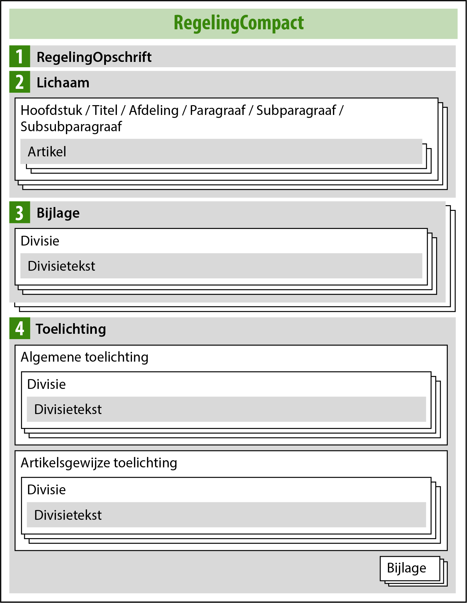Figuur 5Overzicht van model RegelingCompact
In de hierna volgende toelichting wordt de nummering van paragraaf 4.4.2.2.1 gevolgd. In die paragraaf is van ieder element aangegeven of het moet (verplicht) of mag (optioneel) voorkomen; dat wordt in deze toelichting niet herhaald. De ‘hoofdelementen’ zijn weer vetgedrukt en de ‘subelementen’ schuingedrukt.
RegelingOpschrift: de officiële titel van de Regeling. Bijvoorbeeld: Aanwijzingsbesluit Drents-Friese Wold en Leggelderveld.
Lichaam: het element dat de artikelen met de inhoud van het omgevingsdocument bevat. Voor de inhoud van het Lichaam gelden de specificaties voor de Artikelstructuur die zijn beschreven in paragraaf 5.2. Dit is het onderdeel dat wordt geannoteerd met de OW-objecten die zijn beschreven in hoofdstuk 7.
Bijlage: het gaat hier om een Bijlage bij de Regeling. Dit is een bijlage die informatie bevat die integraal onderdeel is van het omgevingsdocument maar om redenen van leesbaarheid en/of vormgeving (denk aan lange lijsten en complexe tabellen) niet goed in de artikelen van het Lichaam van de Regeling kan worden opgenomen. Er kunnen zoveel bijlagen bij de Regeling worden gevoegd als nodig is. Bijlagen bij de Regeling worden bekendgemaakt én geconsolideerd. Dat laatste houdt in dat ze met een later wijzigingsbesluit gewijzigd kunnen worden. Deze bijlagen zijn zowel te vinden in het publicatieblad van het bevoegd gezag op officielebekendmakingen.nl als in de regelingenbank op overheid.nl en in DSO-LV. Uitgangspunt van de STOP/TPOD-standaard is dat elke tekst die onderdeel is van een officiële publicatie, zoals een besluit of regeling, wordt uitgewisseld in STOP-XML. Daarmee is gewaarborgd dat de teksten voldoen aan alle wettelijke eisen. De teksten kunnen dan juridisch rechtsgeldig gepubliceerd worden en de voorzieningen zorgen er voor dat ze volgens de richtlijnen van digitale toegankelijkheid worden ontsloten. Als de bijlage onderdeel is van de tekst in STOP-XML, staat de inhoud in een of meer Divisieteksten, die desgewenst hiërarchisch kunnen worden gestructureerd in Divisies. Deze elementen van de Vrijetekststructuur en hun specificaties zijn beschreven in paragraaf 5.3. Een voorbeeld van een bijlage in STOP-XML is de bijlage met verwijzingen naar de (elders gepubliceerde) GIO’s. Een ander voorbeeld is de bijlage met begripsbepalingen, in het geval dat de begripsbepalingen niet in het artikel Begripsbepalingen in hoofdstuk 1 worden geplaatst maar in een bijlage. Het is mogelijk om zo’n bijlage in verschillende onderdelen op te delen, bijvoorbeeld in een onderdeel Begripsbepalingen (voor begrippen met hun definities), een onderdeel Verdragen (de aanhalingstermen van verdragen en hun volledige titel met vindplaats) en een onderdeel Normen (de aanhalingstermen van normen, versie en vindplaats). Voor die onderverdeling worden de vrijetekstelementen Divisie (optioneel element) en Divisietekst (verplicht element) gebruikt. Tekst uitwisselen in STOP-XML is niet altijd mogelijk zonder de tekst te moeten overtypen. Daarom ondersteunt de STOP/TPOD-standaard ook het aanleveren van tekst als PDF-document. Een tekst in een PDF-document is voor de landelijke voorzieningen minder goed te hanteren; denk aan verwijzen naar specifieke onderdelen en muteren dat niet -of niet goed- mogelijk is. Daarom wordt het gebruik van PDF-documenten slechts in specifieke, in het toepassingsprofiel vastgelegde, gevallen toegestaan. In dit toepassingsprofiel is, in de norm van paragraaf 4.4.2.2.1, bepaald dat een bijlage alleen als PDF-document mag worden aangeleverd als het voor het bevoegd gezag redelijkerwijs niet mogelijk is om de bijlage als onderdeel van de tekst in STOP-XML op te stellen én als de bijlage informatie bevat die daadwerkelijk als (te consolideren) bijlage gezien kan worden. Dat de bijlage informatie moet bevatten die daadwerkelijk als (te consolideren) bijlage gezien kan worden betekent dat het moet gaan om informatie die onlosmakelijk onderdeel is van de regeling maar om redenen van leesbaarheid en/of vormgeving niet in het Lichaam van de Regeling kan worden opgenomen. Het betekent ook dat niet de volledige inhoud van het Lichaam van de Regeling in een bijlage in PDF-formaat mag worden opgenomen. Een bijlage in de vorm van een PDF-document moet onveranderlijk zijn. Daarom moet het PDF-document voldoen aan de eisen van PDF/A-1a of PDF/A-2a en moet het worden gepubliceerd als informatieobject. Een beschrijving van beide publicatiemogelijkheden voor bijlagen staat in paragraaf 4.2. Bij een bijlage als onderdeel van de tekst in STOP-XML is het mogelijk om met een later wijzigingsbesluit één of meer gedeelten van de bijlage te wijzigen. Bij een bijlage in de vorm van een PDF-document kan dat niet; in dat geval wordt het hele PDF-document vervangen. In een Bijlage bij de Regeling kan het element Gereserveerd worden gebruikt. Dit element maakt het mogelijk om alvast een structuur neer te zetten die is voorbereid op toekomstige aanvullingen. Het is een leeg element waarmee bij weergave op overheid.nl en in DSO-LV de tekst ‘Gereserveerd’ wordt gegenereerd. Het bevoegd gezag kan het element niet zelf vullen met eigen tekst. Met latere wijzigingsbesluiten kan het element Gereserveerd worden vervangen door een structuurelement met daadwerkelijke inhoud. Wanneer een bijlage vervalt kan in het element Bijlage het element Vervallen worden opgenomen. Op deze manier blijft zichtbaar dat er een bijlage was en dat die later is vervallen. Het voordeel daarvan is dat in de wetstechnische informatie de historie van het element kan worden teruggevonden. Een andere mogelijkheid bij het vervallen van een bijlage is om het element Bijlage met een wijzigingsbesluit te verwijderen. Dan is het element niet langer zichtbaar en is er ook geen wetstechnische informatie meer. Een Bijlage kan worden afgesloten met het element Sluiting. Van die mogelijkheid zal naar verwachting niet vaak gebruik gemaakt worden. Een Bijlage wordt niet geannoteerd met OW-objecten.
Toelichting: het gaat hier om de Toelichting op de Regeling. De STOP/TPOD-standaard biedt in de huidige versie voor zowel Besluit als Regeling een aantal mogelijkheden voor het indelen van toelichtingen. Er zijn de ‘hoofdelementen’ Toelichting en ArtikelgewijzeToelichting. Binnen het ‘hoofdelement’ Toelichting kan worden gekozen tussen enerzijds een gestructureerde opzet met de onderliggende elementen AlgemeneToelichting en/of ArtikelgewijzeToelichting en anderzijds een vrije, niet nader gestructureerde opzet. Deze mogelijkheden stellen medewerkers van bevoegde gezagen en adviesbureaus die de standaard in hun omgevingsdocumenten toepassen en bouwers van plansoftware voor lastige keuzes. Bovendien noodzaken ze de applicaties die de tekst tonen (officielebekendmakingen.nl, de regelingenbanken op overheid.nl en DSO-LV) om alle mogelijkheden te ondersteunen. Daarom zal in de toekomst de standaard zo worden aangepast dat er nog maar één modellering voor toelichting van Regelingen is, namelijk het ‘hoofdelement’ Toelichting met daarbinnen de gestructureerde opzet. Op het moment van uitbrengen van deze versie van dit toepassingsprofiel is die aanscherping nog niet mogelijk. Het is uiteraard niet wenselijk dat er omgevingsdocumenten worden opgesteld met een toelichting-modellering die in de toekomst niet meer voldoet aan de dan aangescherpte standaard en dan moeten worden aangepast. Daarom wordt met klem geadviseerd om alleen de toekomstige modellering te gebruiken en geen gebruik te maken van het ‘hoofdelement’ ArtikelgewijzeToelichting en ook niet van de vrije, niet nader gestructureerde opzet met Divisies en Divisieteksten binnen het ‘hoofdelement’ Toelichting. NB: voor de toelichting op het besluit geldt een andere aanbeveling, zie daarvoor onderdeel 7 van paragraaf 4.4.2.1.2. De toekomstige modellering bestaat er uit dat alleen gebruik wordt gemaakt van het ‘hoofdelement’ Toelichting en daarbinnen de gestructureerde opzet met de elementen AlgemeneToelichting en/of ArtikelgewijzeToelichting. Een toelichting kan dan alleen een algemene toelichting bevatten, alleen een artikelsgewijze toelichting of allebei. De algemene toelichting en de artikelsgewijze toelichting hebben verplicht een kop. De kop van het element Toelichting is verplicht wanneer de elementen AlgemeneToelichting en ArtikelgewijzeToelichting allebei voorkomen. Wanneer slechts een van beide elementen voorkomt is de kop van het element Toelichting optioneel: het bevoegd gezag mag dan zelf kiezen of het de toelichting al dan niet een kop geeft.
Let op dat de hier besproken algemene toelichting een algemene toelichting geeft op de hele regeling en niet op een besluit. In deze algemene toelichting kan bijvoorbeeld een beschouwing worden gegeven over de gehanteerde sturingsfilosofie en over de visie van het bestuursorgaan op de Natura 2000-besluiten (globaal, gedetailleerd, wijze waarop invulling is gegeven aan de beleidsvrijheid etc.). Deze algemene toelichting is dus niet de plek voor een toelichting op een concreet (wijzigings)besluit. In DSO-LV is de algemene toelichting aan het hele regelingsgebied gekoppeld. Het is niet mogelijk om onderdelen van de toelichting te koppelen aan specifieke locaties, bijvoorbeeld om een toelichting te geven op een concrete ontwikkeling. In de artikelsgewijze toelichting wordt, waar nodig, een toelichting gegeven op de artikelen in het lichaam van de regeling en desgewenst ook op de bijlage(n) die onderdeel zijn van de regeling. Een Toelichting kan worden afgesloten met het element Sluiting. Van die mogelijkheid zal naar verwachting niet vaak gebruik gemaakt worden. Aan een Toelichting kunnen een of meer Bijlagen worden toegevoegd. Een Toelichting bij de Regeling wordt bekendgemaakt én geconsolideerd. Deze toelichting is dus zowel te vinden op officielebekendmakingen.nl als in de regelingenbank op overheid.nl en in DSO-LV. Een Toelichting wordt niet geannoteerd met OW-objecten.
ArtikelgewijzeToelichting: dit ‘hoofdelement’ zal in een toekomstige versie van de standaard vervallen; gebruik daarvan wordt daarom nu afgeraden. Dringend wordt geadviseerd om alleen de toekomstige modellering te gebruiken. Dat houdt in dat geen gebruik gemaakt wordt van het ‘hoofdelement’ ArtikelgewijzeToelichting, maar van het bij nr 4 beschreven ‘hoofdelement’ Toelichting met daarbinnen de gestructureerde opzet met de elementen AlgemeneToelichting en/of ArtikelgewijzeToelichting. Daarom zijn in de norm in paragraaf 4.4.2.2.1 de subelementen van de ArtikelgewijzeToelichting niet opgenomen en wordt er in deze paragraaf geen nadere toelichting op gegeven.
Veel van de hiervoor besproken elementen moeten worden voorzien van een Kop. Voor de Kop zijn de Kopelementen Label, Nummer en Opschrift beschikbaar. Label is de aanduiding van het type tekstelement, zoals Hoofdstuk, Paragraaf of Artikel. Opschrift is de titel van het tekstelement, die aangeeft waar de tekst over gaat. Voor de Koppen in het Lichaam van de Regeling van omgevingsdocumenten met Artikelstructuur gelden extra eisen, die zijn beschreven in paragraaf 5.2.2.1.1.
In de schema’s van STOP komt in een aantal hoofd- en subelementen het element InleidendeTekst -bedoeld voor niet-juridische contextinformatie- voor. Dit element zal in een toekomstige versie van de standaard vervallen; gebruik daarvan wordt daarom nu afgeraden. Daarom is dit element hier niet opgenomen.
4.4.3 Klassiek model voor Besluit en Regeling
4.4.3.1 BesluitKlassiek
In het Besluit staat wat het bestuursorgaan vaststelt (of wijzigt), met inbegrip van de procedure van totstandkoming en de motivering van het besluit. Het Besluit wordt, met inbegrip van de inhoud of wijziging van de Regeling die onderdeel is van het Besluit, bekendgemaakt in het publicatieblad van het bevoegd gezag.
In paragraaf 4.4.3.1.1 is de norm voor het STOP-model BesluitKlassiek vastgelegd: welke elementen moeten respectievelijk mogen worden gebruikt en hoe vaak kunnen ze voorkomen. Paragraaf 4.4.3.1.2 geeft een toelichting op de elementen van het Besluit.
Opgemerkt wordt dat de STOP-modellen voor Besluit en Regeling XML-modellen zijn. Met de in de volgende paragrafen genoemde elementen worden dus (STOP-)XML-elementen bedoeld.
Omwille van de leesbaarheid en herkenbaarheid zijn de namen van de ‘hoofdelementen’ vetgedrukt en die van de ‘subelementen’ schuingedrukt. De ‘hoofdelementen’ zijn genummerd om er in de toelichting naar te kunnen verwijzen.
4.4.3.1.1 Norm
Wanneer voor de Regeling wordt gekozen voor het model RegelingKlassiek moet het besluit tot vaststelling of wijziging van de Natura 2000-besluiten worden opgesteld en aangeleverd overeenkomstig het model BesluitKlassiek. BesluitKlassiek bevat de volgende elementen:
RegelingOpschrift: STOP-element dat de officiële titel van het besluit bevat. Optioneel element. Komt 0 of 1 keer voor.[18] Het element RegelingOpschrift van het BesluitKlassiek wordt in een volgende versie van de STOP/TPOD-standaard verplicht
Aanhef: STOP-element dat een blok tekst aan het begin van een Besluit bevat. Optioneel element. Komt 0 of 1 keer voor.[19] Het element Aanhef vervalt in een volgende versie van de STOP/TPOD-standaard
RegelingKlassiek: STOP-element dat zowel bij een initieel besluit (besluit dat een regeling instelt) als bij een wijzigingsbesluit (besluit dat een regeling wijzigt) de Regeling bevat. Bij een initieel besluit bevat RegelingKlassiek de integrale tekst van de initiële regeling. In het geval van een wijzigingsbesluit beschrijft RegelingKlassiek dat wat het bestuursorgaan wijzigt. Verplicht element. Komt 1 keer voor.
Sluiting: STOP-element dat het Besluit afsluit. Optioneel element. Komt 0 of 1 keer voor. De tekst van de Sluiting staat in een of meer reguliere Alinea’s. Ook kan gebruik gemaakt worden van de optionele elementen Slotformulering, Dagtekening en Ondertekening.[20] Het element Sluiting vervalt in een volgende versie van de STOP/TPOD-standaard
Bijlage: STOP-element dat een bijlage (in dit geval bij het Besluit) bevat. Optioneel element. Komt zo vaak voor als gewenst.[21] Het element Bijlage (bij het Besluit) vervalt in een volgende versie van de STOP/TPOD-standaard
Hoofdregel is dat een bijlage is vormgegeven als onderdeel van de tekst in STOP-XML. In bijzondere gevallen is het toegestaan een bijlage als PDF-document aan te leveren. Een Bijlage die in STOP-XML wordt opgesteld, bevat de volgende elementen:
Kop: STOP-element dat de Kop bevat. Verplicht element. Komt 1 keer voor. Bevat ten minste één van de Kopelementen Label, Nummer en Opschrift; ieder van deze onderdelen komt 0 of 1 keer voor. Optioneel kan het element Subtitel worden toegevoegd.
De inhoud van de Bijlage, opgebouwd met Divisie (optioneel element) en Divisietekst (verplicht element). Divisie en Divisietekst moeten voldoen aan de specificaties voor de Vrijetekststructuur in paragraaf 5.3.
Sluiting: STOP-element dat de Bijlage afsluit. Optioneel element. Komt 0 of 1 keer voor. De tekst van de Sluiting staat in een of meer reguliere Alinea’s. Ook kan gebruik gemaakt worden van de optionele elementen Slotformulering, Dagtekening en Ondertekening.
Een bijlage mag alleen als PDF-document worden aangeleverd als het voor het bevoegd gezag redelijkerwijs niet mogelijk is om de bijlage als onderdeel van de tekst in STOP-XML op te stellen én als de bijlage informatie bevat die daadwerkelijk als bijlage gezien kan worden. Het PDF-document moet dan voldoen aan de eisen van PDF/A-1a of PDF/A-2a en moet worden gemodelleerd als informatieobject.
Toelichting: STOP-element dat de toelichting op het Besluit bevat. Optioneel element. Komt 0 of 1 keer voor. Een Toelichting bevat de volgende elementen:
Kop: STOP-element dat de Kop bevat. Onder voorwaarde verplicht element: verplicht indien binnen het element Toelichting zowel het element AlgemeneToelichting als het element ArtikelgewijzeToelichting voorkomt, komt dan 1 keer voor; optioneel indien binnen het element Toelichting slechts één van de elementen AlgemeneToelichting en ArtikelgewijzeToelichting voorkomt, komt dan 0 of 1 keer voor. Bevat ten minste één van de Kopelementen Label, Nummer en Opschrift; ieder van deze onderdelen komt 0 of 1 keer voor. Optioneel kan het element Subtitel worden toegevoegd.
AlgemeneToelichting: STOP-element dat de algemene toelichting bevat. Optioneel element. Komt 0 of 1 keer voor. Een AlgemeneToelichting bevat de volgende elementen:
Kop: STOP-element dat de Kop bevat. Verplicht element. Komt 1 keer voor. Bevat ten minste één van de Kopelementen Label, Nummer en Opschrift; ieder van deze onderdelen komt 0 of 1 keer voor. Optioneel kan het element Subtitel worden toegevoegd.
De inhoud van de AlgemeneToelichting, opgebouwd met Divisie (optioneel element) en Divisietekst (verplicht element). Divisie en Divisietekst moeten voldoen aan de specificaties voor de Vrijetekststructuur in paragraaf 5.3.
ArtikelgewijzeToelichting: STOP-element dat de artikelsgewijze toelichting bevat. Optioneel element. Komt 0 of 1 keer voor. Een ArtikelgewijzeToelichting bevat de volgende elementen:
Kop: STOP-element dat de Kop bevat. Verplicht element. Komt 1 keer voor. Bevat ten minste één van de Kopelementen Label, Nummer en Opschrift; ieder van deze onderdelen komt 0 of 1 keer voor. Optioneel kan het element Subtitel worden toegevoegd.
De inhoud van de ArtikelgewijzeToelichting, opgebouwd met Divisie (optioneel element) en Divisietekst (verplicht element). Divisie en Divisietekst moeten voldoen aan de specificaties voor de Vrijetekststructuur in paragraaf 5.3.
Sluiting: STOP-element dat de Toelichting afsluit. Optioneel element. Komt 0 of 1 keer voor. De tekst van de Sluiting staat in een of meer reguliere Alinea’s. Ook kan gebruik gemaakt worden van de optionele elementen Slotformulering, Dagtekening en Ondertekening.
Bijlage: STOP-element dat een bijlage (in dit geval bij de Toelichting op het Besluit) bevat. Optioneel element. Komt zo vaak voor als gewenst. Een bijlage bij de Toelichting wordt niet geconsolideerd. Voor een bijlage bij de Toelichting gelden dezelfde eisen als voor het ‘hoofdelement’ Bijlage.
ArtikelgewijzeToelichting: STOP-element dat de artikelsgewijze toelichting, oftewel de toelichting op de artikelen in het Besluit, bevat. Optioneel element. Komt 0 of 1 keer voor. Mogelijkheid die STOP biedt voor een toelichting die uitsluitend een toelichting op de artikelen in het besluit is. Dit element zal in een toekomstige versie van de standaard vervallen; gebruik daarvan wordt daarom nu afgeraden. Indien toch gebruikt gelden voor deze ArtikelgewijzeToelichting dezelfde eisen als voor de ArtikelgewijzeToelichting binnen het element Toelichting onder 6.[22] Het element ArtikelgewijzeToelichting (bij het Besluit) vervalt in een volgende versie van de STOP/TPOD-standaard
Motivering: STOP-element dat de motivering van het Besluit bevat. Optioneel element. Komt 0 of 1 keer voor.[23] Het element Motivering vervalt in een volgende versie van de STOP/TPOD-standaard
Een Motivering bevat de volgende elementen:
Kop: STOP-element dat de Kop bevat. Verplicht element. Komt 1 keer voor. Bevat ten minste één van de Kopelementen Label, Nummer en Opschrift; ieder van deze onderdelen komt 0 of 1 keer voor. Optioneel kan het element Subtitel worden toegevoegd.
De inhoud van de Motivering, opgebouwd met Divisie (optioneel element) en Divisietekst (verplicht element). Divisie en Divisietekst moeten voldoen aan de specificaties voor de Vrijetekststructuur in paragraaf 5.3.
Sluiting: STOP-element dat de Motivering afsluit. Optioneel element. Komt 0 of 1 keer voor. De tekst van de Sluiting staat in een of meer reguliere Alinea’s. Ook kan gebruik gemaakt worden van de optionele elementen Slotformulering, Dagtekening en Ondertekening.
Bijlage: STOP-element dat een bijlage (in dit geval bij de Motivering) bevat. Optioneel element. Komt zo vaak voor als gewenst. Een bijlage bij de Motivering wordt niet geconsolideerd. Voor een bijlage bij de Motivering gelden dezelfde eisen als voor het ‘hoofdelement’ Bijlage.
Inhoudsopgave: STOP-element dat de inhoudsopgave van het Besluit bevat. Optioneel element. Komt 0 of 1 keer voor. Een inhoudsopgave wordt niet geconsolideerd. Dit element zal in een toekomstige versie van de standaard vervallen; gebruik daarvan wordt daarom nu afgeraden.[24] Het element Inhoudsopgave vervalt in een volgende versie van de STOP/TPOD-standaard
4.4.3.1.2 Toelichting
In deze paragraaf worden de elementen toegelicht die moeten respectievelijk kunnen voorkomen in een Besluit dat is opgesteld overeenkomstig het model BesluitKlassiek. Daarbij wordt de nummering van paragraaf 4.4.3.1.1 gevolgd. In die paragraaf is van ieder element aangegeven of het moet (verplicht) of mag (optioneel) voorkomen; dat wordt in deze toelichting niet herhaald. De ‘hoofdelementen’ zijn weer vetgedrukt en de ‘subelementen’ schuingedrukt.
RegelingOpschrift: de officiële titel van het Besluit. Bijvoorbeeld: Besluit tot vaststelling Aanwijzingsbesluit Drents-Friese Wold en Leggelderveld.
Aanhef: blok tekst aan het begin van het Besluit. Hierin kunnen bijvoorbeeld de overwegingen van het bestuursorgaan staan, die voorafgaan aan het daadwerkelijke besluit. In de praktijk wordt de Aanhef in het BesluitKlassiek niet gebruikt, die staat in de RegelingKlassiek. Daarom vervalt dit element in een volgende versie van de standaard.
RegelingKlassiek: het element dat bij een initieel besluit de volledige inhoud van de nieuwe regeling bevat en bij een wijzigingsbesluit de beschrijving van de wijzigingen van een RegelingVersie naar een nieuwe RegelingVersie bevat. In het geval van een initieel besluit moet het element RegelingKlassiek zijn opgebouwd conform de specificaties voor het regelingmodel RegelingKlassiek die in paragraaf 4.4.3.2 zijn vastgelegd en aan de specificaties voor de Artikelstructuur die zijn beschreven in paragraaf 5.2. Dit is ook het onderdeel dat wordt geannoteerd met OW-objecten. Dit is beschreven in hoofdstuk 7. In het geval van een wijzigingsbesluit moet het element RegelingKlassiek zijn opgebouwd conform de specificaties voor RegelingKlassiek als onderdeel van een wijzigingsbesluit die in paragraaf 4.4.3.3 zijn vastgelegd.
Sluiting: de afsluiting van het Besluit. Hier staat vaak de datum waarop het bestuursorgaan het besluit heeft genomen. Ook staan hier de namen en dergelijke van de personen die namens het bestuursorgaan het besluit hebben ondertekend. In de praktijk wordt de Sluiting in het BesluitKlassiek niet gebruikt, die staat in de RegelingKlassiek. Daarom vervalt dit element in een volgende versie van de standaard.
Bijlage: het gaat hier om een Bijlage bij het Besluit. Dit zijn bijlagen die integraal onderdeel zijn van de tekst van het Besluit maar die om redenen van leesbaarheid e.d. niet in het lichaam van het Besluit kunnen worden opgenomen. Rapportages van onderzoeken die zijn uitgevoerd ter onderbouwing van het nemen van het juridische besluit als bedoeld in paragraaf 4.1.1 zijn geen bijlagen bij het Besluit (of de Regeling) als bedoeld in de STOP/TPOD-standaard, maar op het besluit betrekking hebbende stukken, zie hiervoor ook paragraaf 4.2. In de praktijk wordt de Bijlage in het BesluitKlassiek niet gebruikt, maar worden Bijlagen opgenomen in de RegelingKlassiek. Daarom vervalt dit element in een volgende versie van de standaard en wordt deze hier niet verder toegelicht.
Toelichting: het gaat hier om een Toelichting bij het Besluit. De STOP/TPOD-standaard biedt in de huidige versie, in de modellen voor Besluit en Regeling, een aantal mogelijkheden voor het indelen van toelichtingen. Er zijn de ‘hoofdelementen’ Toelichting en ArtikelgewijzeToelichting. Binnen het ‘hoofdelement’ Toelichting kan worden gekozen tussen enerzijds een gestructureerde opzet met de onderliggende elementen AlgemeneToelichting en/of ArtikelgewijzeToelichting en anderzijds een vrije, niet nader gestructureerde opzet. Deze mogelijkheden stellen medewerkers van bevoegde gezagen en adviesbureaus die de standaard in hun omgevingsdocumenten toepassen en bouwers van plansoftware voor lastige keuzes. Bovendien noodzaken ze de applicaties die de tekst tonen (officielebekendmakingen.nl, de regelingenbanken op overheid.nl en DSO-LV) om alle mogelijkheden te ondersteunen. Daarom zal in de toekomst de standaard zo worden aangepast dat er nog maar één modellering voor toelichtingen is, namelijk het ‘hoofdelement’ Toelichting met daarbinnen de gestructureerde opzet. Op het moment van uitbrengen van deze versie van dit toepassingsprofiel is die aanscherping nog niet mogelijk. Het is uiteraard niet wenselijk dat er omgevingsdocumenten worden opgesteld met een toelichting-modellering die in de toekomst niet meer voldoet aan de dan aangescherpte standaard en dan moeten worden aangepast. Daarom wordt met klem geadviseerd om alleen de toekomstige modellering te gebruiken en geen gebruik te maken van het ‘hoofdelement’ ArtikelgewijzeToelichting en ook niet van de vrije, niet nader gestructureerde opzet met Divisies en Divisieteksten binnen het ‘hoofdelement’ Toelichting. De toekomstige modellering bestaat er uit dat alleen gebruik wordt gemaakt van het ‘hoofdelement’ Toelichting en daarbinnen de gestructureerde opzet met de elementen AlgemeneToelichting en/of ArtikelgewijzeToelichting. Een toelichting kan dan alleen een algemene toelichting bevatten, alleen een artikelsgewijze toelichting of allebei. De algemene toelichting en de artikelsgewijze toelichting hebben verplicht een kop. De kop van het element Toelichting is verplicht wanneer de elementen AlgemeneToelichting en ArtikelgewijzeToelichting allebei voorkomen. Wanneer slechts een van beide elementen voorkomt is de kop van het element Toelichting optioneel: het bevoegd gezag mag dan zelf kiezen of het de toelichting al dan niet een kop geeft. De daadwerkelijke inhoud van algemene en artikelsgewijze toelichtingen staat in een of meer Divisieteksten, die desgewenst hiërarchisch kunnen worden gestructureerd in Divisies. Deze elementen van de Vrijetekststructuur en hun specificaties zijn beschreven in paragraaf 5.3. Een Toelichting kan worden afgesloten met het element Sluiting. Aan een Toelichting kunnen een of meer Bijlagen worden toegevoegd. Een Toelichting wordt niet geannoteerd met OW-objecten. Een Toelichting op het Besluit wordt alleen bekendgemaakt en niet geconsolideerd. Deze Toelichting is dus wel te vinden in het publicatieblad, maar niet in de regelingenbank op overheid.nl en niet in DSO-LV.
ArtikelgewijzeToelichting: zoals bij nr 6 is beschreven wordt geadviseerd om alleen de toekomstige modellering te gebruiken en geen gebruik te maken van het ‘hoofdelement’ ArtikelgewijzeToelichting. In de praktijk wordt deze ‘losse’ artikelsgewijze toelichting niet gebruikt. Daarom vervalt dit element in een volgende versie van de standaard, zijn in de norm in paragraaf 4.4.3.1.1 de subelementen van de ArtikelgewijzeToelichting niet opgenomen en wordt het element hier niet verder toegelicht.
Motivering: dit is de motivering oftewel de inhoudelijke onderbouwing van het Besluit. In de praktijk maakt het Rijk geen gebruik van het element Motivering. Daarom vervalt dit element in een volgende versie van de standaard en wordt de Motivering hier niet verder toegelicht.
Inhoudsopgave: STOP maakt het mogelijk dat aan een Besluit een Inhoudsopgave wordt toegevoegd. In de praktijk wordt het element Inhoudsopgave niet gebruikt. vervalt dit element in een volgende versie van de standaard, zijn in de norm in paragraaf 4.4.3.1.1 de subelementen van de Inhoudsopgave niet opgenomen en wordt dit element niet verder toegelicht.
Veel van de hiervoor besproken elementen moeten worden voorzien van een Kop. Voor de Kop zijn de Kopelementen Label, Nummer en Opschrift beschikbaar. Label is de aanduiding van het type tekstelement, zoals Hoofdstuk, Paragraaf of Artikel. Opschrift is de titel van het tekstelement, die aangeeft waar de tekst over gaat. Voor deze Koppen gelden niet de voorschriften voor Koppen van paragraaf 5.2.2.1.1.
In de schema’s van STOP komt in een aantal hoofd- en subelementen het element InleidendeTekst -bedoeld voor niet-juridische contextinformatie- voor. Dit element zal in een toekomstige versie van de standaard vervallen; gebruik daarvan wordt daarom nu afgeraden. Daarom is dit element hier niet opgenomen.
4.4.3.2 RegelingKlassiek als model voor de initiële en de geconsolideerde versie van de Regeling
RegelingKlassiek heeft twee verschijningsvormen:
RegelingKlassiek als model voor een regeling conform het klassieke model, dat geldt voor de initiële regeling en de geconsolideerde versie van de klassieke regeling;
RegelingKlassiek als onderdeel van een BesluitKlassiek in het geval van een wijzigingsbesluit waarmee een klassieke regeling wordt gewijzigd.
Deze toepassingen leiden tot twee enigszins uiteenlopende verschijningsvormen. Omwille van de overzichtelijkheid zijn ze in twee afzonderlijke paragrafen beschreven. In paragraaf 4.4.3.3 wordt beschreven hoe RegelingKlassiek moet worden toegepast als het onderdeel is van een wijzigingsbesluit. De onderhavige paragraaf beschrijft RegelingKlassiek als model voor een (initiële of geconsolideerde) regeling conform het klassieke model.
In paragraaf 4.4.3.2.1 is de norm vastgelegd voor het model RegelingKlassiek als model voor een regeling conform het klassieke model. Dit is het model dat geldt voor zowel de initiële regeling als voor de geconsolideerde versie van de klassieke regeling. Beschreven wordt welke elementen moeten respectievelijk mogen worden gebruikt en hoe vaak kunnen ze voorkomen. Paragraaf 4.4.3.2.2 geeft een toelichting op de elementen van de Regeling.
Opgemerkt wordt dat de STOP-modellen voor Besluit en Regeling XML-modellen zijn. Met de in de volgende paragrafen genoemde elementen worden dus (STOP-)XML-elementen bedoeld.
Omwille van de leesbaarheid en herkenbaarheid zijn de namen van de ‘hoofdelementen’ vetgedrukt en die van de ‘subelementen’ schuingedrukt. De ‘hoofdelementen’ zijn genummerd om er in de toelichting naar te kunnen verwijzen.
4.4.3.2.1 Norm
Wanneer voor omgevingsdocumenten met Artikelstructuur gekozen wordt voor het klassieke model is het eindresultaat een (geconsolideerde) Regeling die is opgebouwd overeenkomstig het model RegelingKlassiek. Dit model wordt uitsluitend door het Rijk gebruikt. RegelingKlassiek bevat de volgende elementen:
RegelingOpschrift: STOP-element dat de officiële titel van de Regeling, oftewel het omgevingsdocument, bevat. Verplicht element. Komt 1 keer voor.[25] Het element RegelingOpschrift van de RegelingKlassiek wordt in een volgende versie van de STOP/TPOD-standaard optioneel
Aanhef: STOP-element dat een blok tekst aan het begin van een klassieke Regeling bevat. Optioneel element. Komt 0 of 1 keer voor.
Lichaam: STOP-element dat de inhoud, oftewel de artikelen, van de (initiële of geconsolideerde) Regeling van het omgevingsdocument bevat. Verplicht element. Komt 1 keer voor[26] Het Lichaam is het belangrijkste onderdeel van de Regeling. Zie daarvoor de toelichting in de volgende paragraaf en vooral de beschrijving van de Artikelstructuur in paragraaf 5.2. Dit is het deel dat wordt geannoteerd met OW-objecten, zie daarvoor hoofdstuk 7 . De artikelen moeten voldoen aan de specificaties voor de Artikelstructuur in paragraaf 5.2. Bestaat uit de volgende elementen:
Artikel: STOP-element dat een regulier artikel bevat. Verplicht element. Komt ten minste 1 keer voor. In de reguliere artikelen staat de inhoud van de initiële en geconsolideerde Regeling van het omgevingsdocument. De artikelen moeten voldoen aan de specificaties voor de Artikelstructuur in paragraaf 5.2. Ieder Artikel moet de volgende onderdelen bevatten:
Kop: STOP-element dat de Kop bevat. Verplicht element. Komt 1 keer voor. Bevat ten minste één van de Kopelementen Label, Nummer en Opschrift; ieder van deze onderdelen komt 0 of 1 keer voor.
Verplichte keuze tussen Lid en Inhoud.
WijzigArtikel: STOP-element dat in deze vorm van RegelingKlassiek kan worden gebruikt voor de beschrijving van wat wordt gewijzigd in andere STOP-Regelingen. Optioneel element. Komt zo vaak voor als gewenst. Een WijzigArtikel bevat de volgende elementen:
Kop: STOP-element dat de Kop bevat. Verplicht element. Komt 1 keer voor. Bevat ten minste één van de Kopelementen Label, Nummer en Opschrift; ieder van deze onderdelen komt 0 of 1 keer voor.
Wat: STOP-element dat een tekstuele omschrijving van de wijziging bevat;
WijzigLid: een WijzigArtikel kan worden onderverdeeld in WijzigLeden. Optioneel element. Komt zo vaak voor als gewenst. Mag alleen voorkomen wanneer meerdere wijzigingen in dezelfde (andere) Regeling worden aangebracht en iedere wijziging een eigen inwerkingtredingsdatum heeft. Iedere wijziging-inwerkingtredingsdatum-combinatie kan dan in een eigen WijzigLid worden ondergebracht.
WijzigInstructies: STOP-element dat een verzameling instructies bevat voor wijzigingen binnen een WijzigArtikel of WijzigLid die betrekking hebben op wijzigingen van een niet-STOP-regeling. Optioneel element. Komt 1 keer voor.
RegelingMutatie: STOP-element dat de wijzigingen tussen twee RegelingVersies in was-wordt oftewel renvooiweergave bevat. Verplicht element. Komt 1 keer voor.
Sluiting: STOP-element dat de klassieke Regeling afsluit. Optioneel element. Komt 0 of 1 keer voor. De tekst van de Sluiting staat in een of meer reguliere Alinea’s. Ook kan gebruik gemaakt worden van de optionele elementen Slotformulering, Dagtekening en Ondertekening.
Bijlage: STOP-element dat een bijlage (in dit geval bij de Regeling) bevat. Optioneel element. Komt zo vaak voor als gewenst. Een bijlage die onderdeel is van de Regeling wordt geconsolideerd. Hoofdregel is dat een bijlage is vormgegeven als onderdeel van de tekst in STOP-XML. In bijzondere gevallen is het toegestaan een bijlage als PDF-document aan te leveren. Een Bijlage die in STOP-XML wordt opgesteld, bevat de volgende elementen:
Kop: STOP-element dat de Kop bevat. Verplicht element. Komt 1 keer voor. Bevat ten minste één van de Kopelementen Label, Nummer en Opschrift; ieder van deze elementen komt 0 of 1 keer voor. Optioneel kan het element Subtitel worden toegevoegd.
Gereserveerd: leeg STOP-element waarmee bij weergave op overheid.nl en in DSO-LV de tekst ‘Gereserveerd’ wordt gegenereerd. Optioneel element. Komt 0 of 1 keer voor. Indien in een Bijlage het element Gereserveerd wordt gebruikt mag in die Bijlage geen van de elementen Vervallen, Divisie en Divisietekst voorkomen.
Vervallen: leeg STOP-element waarmee bij weergave op overheid.nl en in DSO-LV de tekst ‘Vervallen’ wordt gegenereerd. Geeft aan dat de Bijlage de status ‘vervallen’ heeft; het is niet langer juridisch geldig en heeft geen inhoud meer. Optioneel element. Komt 0 of 1 keer voor. Indien in een Bijlage het element Vervallen wordt gebruikt mag in die Bijlage geen van de elementen Gereserveerd, Divisie en Divisietekst voorkomen.
De inhoud van de Bijlage, opgebouwd met Divisie (optioneel element) en Divisietekst (verplicht element). Divisie en Divisietekst moeten voldoen aan de specificaties voor de Vrijetekststructuur in paragraaf 5.3.
Sluiting: STOP-element dat de Bijlage afsluit. Optioneel element. Komt 0 of 1 keer voor. De tekst van de Sluiting staat in een of meer reguliere Alinea’s. Ook kan gebruik gemaakt worden van de optionele elementen Slotformulering, Dagtekening en Ondertekening.
Een bijlage mag alleen als PDF-document worden aangeleverd als het voor het bevoegd gezag redelijkerwijs niet mogelijk is om de bijlage als onderdeel van de tekst in STOP-XML op te stellen én als de bijlage informatie bevat die daadwerkelijk als (te consolideren) bijlage gezien kan worden. Het PDF-document moet dan voldoen aan de eisen van PDF/A-1a of PDF/A-2a en moet worden gemodelleerd als informatieobject.
Toelichting: STOP-element dat de toelichting op de Regeling bevat. Optioneel element. Komt 0 of 1 keer voor.[27] In de praktijk wordt in de regelgeving van het Rijk niet of nauwelijks gebruik gemaakt van het element Toelichting in de RegelingKlassiek. Overwogen wordt om in een volgende versie van de STOP/TPOD-standaard dit element te laten vervallen
Een Toelichting als onderdeel van de Regeling bevat de volgende elementen:
Kop: STOP-element dat de Kop bevat. Onder voorwaarde verplicht element: verplicht indien binnen het element Toelichting zowel het element AlgemeneToelichting als het element ArtikelgewijzeToelichting voorkomt, komt dan 1 keer voor; optioneel indien binnen het element Toelichting slechts één van de elementen AlgemeneToelichting en ArtikelgewijzeToelichting voorkomt, komt dan 0 of 1 keer voor. Bevat ten minste één van de Kopelementen Label, Nummer en Opschrift; ieder van deze onderdelen komt 0 of 1 keer voor. Optioneel kan het element Subtitel worden toegevoegd.
AlgemeneToelichting: STOP-element dat de algemene toelichting bevat. Optioneel element. Komt 0 of 1 keer voor. Een AlgemeneToelichting bevat de volgende elementen:
Kop: STOP-element dat de Kop bevat. Verplicht element. Komt 1 keer voor. Bevat ten minste één van de Kopelementen Label, Nummer en Opschrift; ieder van deze onderdelen komt 0 of 1 keer voor. Optioneel kan het element Subtitel worden toegevoegd.
De inhoud van de AlgemeneToelichting, opgebouwd met Divisie (optioneel element) en Divisietekst (verplicht element). Divisie en Divisietekst moeten voldoen aan de specificaties voor de Vrijetekststructuur in paragraaf 5.3.
ArtikelgewijzeToelichting: STOP-element dat de artikelsgewijze toelichting bevat. Optioneel element. Komt 0 of 1 keer voor. Een ArtikelgewijzeToelichting bevat de volgende elementen:
Kop: STOP-element dat de Kop bevat. Verplicht element. Komt 1 keer voor. Bevat ten minste één van de Kopelementen Label, Nummer en Opschrift; ieder van deze onderdelen komt 0 of 1 keer voor. Optioneel kan het element Subtitel worden toegevoegd.
De inhoud van de ArtikelgewijzeToelichting, opgebouwd met Divisie (optioneel element) en Divisietekst (verplicht element). Divisie en Divisietekst moeten voldoen aan de specificaties voor de Vrijetekststructuur in paragraaf 5.3.
De inhoud van de Toelichting, opgebouwd met Divisie (optioneel element) en Divisietekst (verplicht element), zonder de structurerende elementen AlgemeneToelichting en/of ArtikelgewijzeToelichting. Mogelijkheid die STOP biedt voor een toelichting die uitsluitend algemeen van aard is. Geadviseerd wordt om van deze mogelijkheid geen gebruik te maken. Indien toch gebruikt moeten Divisie en Divisietekst voldoen aan de specificaties voor de Vrijetekststructuur in paragraaf 5.3.
Sluiting: STOP-element dat de Toelichting afsluit. Optioneel element. Komt 0 of 1 keer voor. De tekst van de Sluiting staat in een of meer reguliere Alinea’s. Ook kan gebruik gemaakt worden van de optionele elementen Slotformulering, Dagtekening en Ondertekening.
Bijlage: STOP-element dat een bijlage (in dit geval bij de Toelichting) bevat. Optioneel element. Komt zo vaak voor als gewenst. Een bijlage bij de Toelichting wordt geconsolideerd. Voor een bijlage bij de Toelichting gelden dezelfde eisen als voor het ‘hoofdelement’ Bijlage.
ArtikelgewijzeToelichting: STOP-element dat de artikelsgewijze toelichting, oftewel de toelichting op de artikelen in de Regeling, bevat. Optioneel element. Komt 0 of 1 keer voor. Mogelijkheid die STOP biedt voor een toelichting die uitsluitend een toelichting op de artikelen in de regeling is. Dit element zal in een toekomstige versie van de standaard vervallen; gebruik daarvan wordt daarom nu afgeraden. Indien toch gebruikt gelden voor deze ArtikelgewijzeToelichting dezelfde eisen als voor de ArtikelgewijzeToelichting binnen het element Toelichting onder 6.
4.4.3.2.2 Toelichting
Als een bestuursorgaan van het Rijk heeft gekozen voor het klassieke model voor Regeling en Besluit, is RegelingKlassiek het model dat het bevoegd gezag moet gebruiken als het een nieuw, initieel omgevingsdocument met Artikelstructuur instelt. RegelingKlassiek is ook het model voor de geconsolideerde regeling van zo’n omgevingsdocument. In het geval van een initieel besluit heeft het element RegelingKlassiek in het BesluitKlassiek dezelfde vorm als het in deze paragraaf beschreven model RegelingKlassiek voor de initiële en geconsolideerde regeling.
In deze paragraaf worden de elementen toegelicht die moeten respectievelijk kunnen voorkomen in een initiële en geconsolideerde Regeling overeenkomstig het model RegelingKlassiek. Daarbij wordt de nummering van paragraaf 4.4.3.2.1 gevolgd. In die paragraaf is van ieder element aangegeven of het moet (verplicht) of mag (optioneel) voorkomen; dat wordt in deze toelichting niet herhaald. De ‘hoofdelementen’ zijn weer vetgedrukt en de ‘subelementen’ schuingedrukt.
RegelingOpschrift: de officiële titel van de Regeling. Bijvoorbeeld: “Aanwijzingsbesluit Drents-Friese Wold en Leggelderveld”. Dit element wordt in een volgende versie van de standaard optioneel.
Aanhef: blok tekst aan het begin van de (klassieke) Regeling. Hierin kunnen bijvoorbeeld de overwegingen van het bestuursorgaan staan, die voorafgaan aan het daadwerkelijke besluit.
Lichaam: het element dat primair de artikelen met de inhoud van het omgevingsdocument bevat. Voor de inhoud van het Lichaam gelden de specificaties voor de Artikelstructuur die zijn beschreven in paragraaf 5.2. Dit is het onderdeel dat wordt geannoteerd met de OW-objecten die zijn beschreven in hoofdstuk 7. Wanneer tegelijk met het instellen van de initiële regeling ook wijzigingen in andere regelingen worden aangebracht, wordt voor die wijzigingen het element WijzigArtikel gebruikt.
Sluiting: de afsluiting van de Regeling. Anders dan in het compacte model kunnen -nu nog- in het klassieke model zowel Besluit als Regeling een Sluiting hebben. In de praktijk wordt in de besluitvorming en regelgeving van het Rijk de Sluiting alleen gebruikt in de Regeling. Daarom vervalt in een volgende versie van de STOP/TPOD-standaard de Sluiting als element van het Besluit. Wanneer tegen het besluit bezwaar kan worden gemaakt of beroep kan worden ingesteld wordt bij gebruik van het klassieke model in de Sluiting van de Regeling de rechtsmiddelenclausule opgenomen: de vermelding dat tegen het besluit bezwaar kan worden gemaakt of beroep kan worden ingesteld en door wie, binnen welke termijn en bij welk orgaan dat beroep kan worden ingesteld.
Bijlage: het gaat hier om een Bijlage bij de Regeling. Dit is een bijlage die informatie bevat die onderdeel is van het omgevingsdocument maar om redenen van leesbaarheid en/of vormgeving (denk aan lange lijsten en complexe tabellen) niet goed in de artikelen van het Lichaam van de Regeling kan worden opgenomen. Er kunnen zoveel bijlagen bij de Regeling worden gevoegd als nodig is. Bijlagen bij de Regeling worden bekendgemaakt én geconsolideerd. Deze bijlagen zijn dus zowel te vinden op officielebekendmakingen.nl als in de regelingenbank op overheid.nl en in DSO-LV. Uitgangspunt van de STOP/TPOD-standaard is dat elke tekst die onderdeel is van een officiële publicatie, zoals een besluit of regeling, wordt uitgewisseld in STOP-XML. Daarmee is gewaarborgd dat de teksten voldoen aan alle wettelijke eisen. De teksten kunnen dan juridisch rechtsgeldig gepubliceerd worden en de voorzieningen zorgen er voor dat ze volgens de richtlijnen van digitale toegankelijkheid worden ontsloten. Als de bijlage onderdeel is van de tekst in STOP-XML, staat de inhoud in een of meer Divisieteksten, die desgewenst hiërarchisch kunnen worden gestructureerd in Divisies. Deze elementen van de Vrijetekststructuur en hun specificaties zijn beschreven in paragraaf 5.3. Een voorbeeld van een bijlage in STOP-XML is de bijlage met verwijzingen naar de (elders gepubliceerde) GIO’s. Een ander voorbeeld is de bijlage met begripsbepalingen, in het geval dat de begripsbepalingen niet in het artikel Begripsbepalingen in hoofdstuk 1 worden geplaatst maar in een bijlage. Het is mogelijk om zo’n bijlage in verschillende onderdelen op te delen, bijvoorbeeld in een onderdeel Begripsbepalingen (voor begrippen met hun definities), een onderdeel Verdragen (de aanhalingstermen van verdragen en hun volledige titel met vindplaats) en een onderdeel Normen (de aanhalingstermen van normen, versie en vindplaats). Voor die onderverdeling worden de vrijetekstelementen Divisie (optioneel element) en Divisietekst (verplicht element) gebruikt. Tekst uitwisselen in STOP-XML is niet altijd mogelijk zonder de tekst te moeten overtypen. Daarom ondersteunt de STOP/TPOD-standaard ook het aanleveren van tekst als PDF-document. Een tekst in een PDF-document is voor de landelijke voorzieningen minder goed te hanteren; denk aan verwijzen naar specifieke onderdelen en muteren dat niet -of niet goed- mogelijk is. Daarom wordt het gebruik van PDF-documenten slechts in specifieke, in het toepassingsprofiel vastgelegde, gevallen toegestaan. In dit toepassingsprofiel is, in de norm van paragraaf 4.4.3.2.1, bepaald dat een bijlage alleen als PDF-document mag worden aangeleverd als het voor het bevoegd gezag redelijkerwijs niet mogelijk is om de bijlage als onderdeel van de tekst in STOP-XML op te stellen én als de bijlage informatie bevat die daadwerkelijk als (te consolideren) bijlage gezien kan worden. Dat de bijlage informatie moet bevatten die daadwerkelijk als (te consolideren) bijlage gezien kan worden betekent dat het moet gaan om informatie die onlosmakelijk onderdeel is van de regeling maar om redenen van leesbaarheid en/of vormgeving niet in het Lichaam van de Regeling kan worden opgenomen. Het betekent ook dat niet de volledige inhoud van het Lichaam van de Regeling in een bijlage in PDF-formaat mag worden opgenomen. Een bijlage in de vorm van een PDF-document moet onveranderlijk zijn. Daarom moet het PDF-document voldoen aan de eisen van PDF/A-1a of PDF/A-2a en moet het worden gepubliceerd als informatieobject. Een beschrijving van beide publicatiemogelijkheden voor bijlagen staat in paragraaf 4.2. Bij een bijlage als onderdeel van de tekst in STOP-XML is het mogelijk om met een later wijzigingsbesluit één of meer gedeelten van de bijlage te wijzigen. Bij een bijlage in de vorm van een PDF-document kan dat niet; in dat geval wordt het hele PDF-document vervangen. In een Bijlage bij de Regeling kan het element Gereserveerd worden gebruikt. Dit element maakt het mogelijk om alvast een structuur neer te zetten die is voorbereid op toekomstige aanvullingen. Het is een leeg element waarmee bij weergave op overheid.nl en in DSO-LV de tekst ‘Gereserveerd’ wordt gegenereerd. Het bevoegd gezag kan het element niet zelf vullen met eigen tekst. Met latere wijzigingsbesluiten kan het element Gereserveerd worden vervangen door een structuurelement met daadwerkelijke inhoud. Wanneer een bijlage vervalt kan in het element Bijlage het element Vervallen worden opgenomen. Op deze manier blijft zichtbaar dat er een bijlage was en dat die later is vervallen. Het voordeel daarvan is dat in de wetstechnische informatie de historie van het element kan worden teruggevonden. Een andere mogelijkheid bij het vervallen van een bijlage is om het element Bijlage met een wijzigingsbesluit te verwijderen. Dan is het element niet langer zichtbaar en is er ook geen wetstechnische informatie meer. Een Bijlage kan worden afgesloten met het element Sluiting. Van die mogelijkheid zal naar verwachting niet vaak gebruik gemaakt worden. Een Bijlage wordt niet geannoteerd met OW-objecten.
Toelichting: het gaat hier om de Toelichting op de Regeling. Een Toelichting bij de Regeling wordt bekendgemaakt én geconsolideerd. Deze toelichting is dus zowel te vinden op officielebekendmakingen.nl als in de regelingenbank op overheid.nl en in DSO-LV. Een Toelichting wordt niet geannoteerd met OW-objecten. In de praktijk is gebleken dat in de regelgeving van het Rijk niet of nauwelijks gebruik gemaakt wordt van het element Toelichting in de RegelingKlassiek. Overwogen wordt om in een volgende versie van de STOP/TPOD-standaard dit element te laten vervallen. Daarom wordt dit element hier niet verder toegelicht.
ArtikelgewijzeToelichting: In de praktijk wordt deze ‘losse’ artikelsgewijze toelichting niet gebruikt. Daarom vervalt dit element in een volgende versie van de standaard, zijn in de norm in paragraaf 4.4.3.2.1 de subelementen van de ArtikelgewijzeToelichting niet opgenomen en wordt het element hier niet verder toegelicht.
Veel van de hiervoor besproken elementen moeten worden voorzien van een Kop. Voor de Kop zijn de Kopelementen Label, Nummer en Opschrift beschikbaar. Label is de aanduiding van het type tekstelement, zoals Hoofdstuk, Paragraaf of Artikel. Opschrift is de titel van het tekstelement, die aangeeft waar de tekst over gaat. Voor de Koppen in het Lichaam van de Regeling van omgevingsdocumenten met Artikelstructuur gelden extra eisen, die zijn beschreven in paragraaf 5.2.2.1.1.
In de schema’s van STOP komt in een aantal hoofd- en subelementen het element InleidendeTekst -bedoeld voor niet-juridische contextinformatie- voor. Dit element zal in een toekomstige versie van de standaard vervallen; gebruik daarvan wordt daarom nu afgeraden. Daarom is dit element hier niet opgenomen.
4.4.3.3 RegelingKlassiek als onderdeel van een wijzigingsbesluit
RegelingKlassiek heeft twee verschijningsvormen:
RegelingKlassiek als model voor een regeling conform het klassieke model, dat geldt voor de initiële regeling en de geconsolideerde versie van de klassieke regeling;
RegelingKlassiek als onderdeel van een BesluitKlassiek in het geval van een wijzigingsbesluit waarmee een klassieke regeling wordt gewijzigd.
Deze toepassingen leiden tot twee enigszins uiteenlopende verschijningsvormen. Omwille van de overzichtelijkheid zijn ze in twee afzonderlijke paragrafen beschreven. In paragraaf 4.4.3.2 is RegelingKlassiek als model voor een (initiële of geconsolideerde) regeling conform het klassieke model beschreven. De onderhavige paragraaf beschrijft hoe RegelingKlassiek moet worden toegepast als het onderdeel is van een wijzigingsbesluit.
In paragraaf 4.4.3.3.1 is de norm voor het model RegelingKlassiek als onderdeel van een wijzigingsbesluit vastgelegd: welke elementen moeten respectievelijk mogen worden gebruikt en hoe vaak kunnen ze voorkomen. Paragraaf 4.4.3.3.2 geeft daar een toelichting op.
Opgemerkt wordt dat de STOP-modellen voor Besluit en Regeling XML-modellen zijn. Met de in de volgende paragrafen genoemde elementen worden dus (STOP-)XML-elementen bedoeld.
Omwille van de leesbaarheid en herkenbaarheid zijn de namen van de ‘hoofdelementen’ vetgedrukt en die van de ‘subelementen’ schuingedrukt. De ‘hoofdelementen’ zijn genummerd om er in de toelichting naar te kunnen verwijzen.
4.4.3.3.1 Norm
Wanneer een omgevingsdocument met Artikelstructuur dat is opgebouwd conform het klassieke model wordt gewijzigd, worden die wijzigingen opgenomen in het element RegelingKlassiek in het Besluit. In dat geval bevat RegelingKlassiek de volgende elementen:
RegelingOpschrift: STOP-element dat de officiële titel van de Regeling, oftewel het omgevingsdocument, bevat. Verplicht element. Komt 1 keer voor.[28] Het element RegelingOpschrift van de RegelingKlassiek wordt in een volgende versie van de STOP/TPOD-standaard optioneel
Aanhef: STOP-element dat een blok tekst aan het begin van een klassieke Regeling bevat. Optioneel element. Komt 0 of 1 keer voor.
Lichaam: STOP-element dat in RegelingKlassiek als onderdeel van een wijzigingsbesluit primair beschrijft wat het bestuursorgaan wijzigt. Verplicht element. Komt 1 keer voor. Bestaat uit de volgende elementen:
WijzigArtikel: STOP-element dat beschrijft wat in de Regeling wordt gewijzigd. Verplicht element. Komt ten minste 1 keer voor. Ieder WijzigArtikel moet de volgende onderdelen bevatten:
Kop: STOP-element dat de Kop bevat. Verplicht element. Komt 1 keer voor. Bevat ten minste één van de Kopelementen Label, Nummer en Opschrift; ieder van deze onderdelen komt 0 of 1 keer voor.
Wat: STOP-element dat een tekstuele omschrijving van de wijziging bevat;
WijzigLid: Een WijzigArtikel kan worden onderverdeeld in WijzigLeden. Dat kan alleen wanneer in dezelfde Regeling meerdere wijzigingen worden aangebracht en iedere wijziging een eigen inwerkingtredingsdatum heeft. Iedere wijziging-inwerkingtredingsdatum-combinatie kan dan in een eigen WijzigLid worden ondergebracht.
RegelingMutatie: STOP-element dat de wijzigingen tussen twee RegelingVersies in was-wordt oftewel renvooiweergave bevat. Verplicht element. Komt ten minste 1 keer voor.
Artikel: STOP-element dat een regulier artikel bevat. Verplicht element. Komt ten minste 1 keer voor. Ieder Artikel moet de volgende onderdelen bevatten:
Kop: STOP-element dat de Kop bevat. Verplicht element. Komt 1 keer voor. Bevat ten minste één van de Kopelementen Label, Nummer en Opschrift; ieder van deze onderdelen komt 0 of 1 keer voor.
Verplichte keuze tussen Lid en Inhoud.
Sluiting: STOP-element dat de klassieke Regeling afsluit. Optioneel element. Komt 0 of 1 keer voor. De tekst van de Sluiting staat in een of meer reguliere Alinea’s. Ook kan gebruik gemaakt worden van de optionele elementen Slotformulering, Dagtekening en Ondertekening.
Bijlage: STOP-element dat een bijlage (in dit geval bij de Regeling) bevat. Optioneel element. Komt zo vaak voor als gewenst. Een bijlage die onderdeel is van de Regeling wordt geconsolideerd. Hoofdregel is dat een bijlage is vormgegeven als onderdeel van de tekst in STOP-XML. In bijzondere gevallen is het toegestaan een bijlage als PDF-document aan te leveren. Een Bijlage die in STOP-XML wordt opgesteld, bevat de volgende elementen:
Kop: STOP-element dat de Kop bevat. Verplicht element. Komt 1 keer voor. Bevat ten minste één van de Kopelementen Label, Nummer en Opschrift; ieder van deze elementen komt 0 of 1 keer voor. Optioneel kan het element Subtitel worden toegevoegd.
Gereserveerd: leeg STOP-element waarmee bij weergave op overheid.nl en in DSO-LV de tekst ‘Gereserveerd’ wordt gegenereerd. Optioneel element. Komt 0 of 1 keer voor. Indien in een Bijlage het element Gereserveerd wordt gebruikt mag in die Bijlage geen van de elementen Vervallen, Divisie en Divisietekst voorkomen.
Vervallen: leeg STOP-element waarmee bij weergave op overheid.nl en in DSO-LV de tekst ‘Vervallen’ wordt gegenereerd. Geeft aan dat de Bijlage de status ‘vervallen’ heeft; het is niet langer juridisch geldig en heeft geen inhoud meer. Optioneel element. Komt 0 of 1 keer voor. Indien in een Bijlage het element Vervallen wordt gebruikt mag in die Bijlage geen van de elementen Gereserveerd, Divisie en Divisietekst voorkomen.
De inhoud van de Bijlage, opgebouwd met Divisie (optioneel element) en Divisietekst (verplicht element). Divisie en Divisietekst moeten voldoen aan de specificaties voor de Vrijetekststructuur in paragraaf 5.3.
Sluiting: STOP-element dat de Bijlage afsluit. Optioneel element. Komt 0 of 1 keer voor. De tekst van de Sluiting staat in een of meer reguliere Alinea’s. Ook kan gebruik gemaakt worden van de optionele elementen Slotformulering, Dagtekening en Ondertekening.
Een bijlage mag alleen als PDF-document worden aangeleverd als het voor het bevoegd gezag redelijkerwijs niet mogelijk is om de bijlage als onderdeel van de tekst in STOP-XML op te stellen én als de bijlage informatie bevat die daadwerkelijk als (te consolideren) bijlage gezien kan worden. Het PDF-document moet dan voldoen aan de eisen van PDF/A-1a of PDF/A-2a en moet worden gemodelleerd als informatieobject.
Toelichting: STOP-element dat de toelichting op de Regeling bevat. Optioneel element. Komt 0 of 1 keer voor. [29] In de praktijk wordt in de regelgeving van het Rijk niet of nauwelijks gebruik gemaakt van het element Toelichting in de RegelingKlassiek. Overwogen wordt om in een volgende versie van de STOP/TPOD-standaard dit element te laten vervallen
Een Toelichting bevat de volgende elementen:
Kop: STOP-element dat de Kop bevat. Onder voorwaarde verplicht element: verplicht indien binnen het element Toelichting zowel het element AlgemeneToelichting als het element ArtikelgewijzeToelichting voorkomt, komt dan 1 keer voor; optioneel indien binnen het element Toelichting slechts één van de elementen AlgemeneToelichting en ArtikelgewijzeToelichting voorkomt, komt dan 0 of 1 keer voor. Bevat ten minste één van de Kopelementen Label, Nummer en Opschrift; ieder van deze onderdelen komt 0 of 1 keer voor. Optioneel kan het element Subtitel worden toegevoegd.
AlgemeneToelichting: STOP-element dat de algemene toelichting bevat. Optioneel element. Komt 0 of 1 keer voor. Een AlgemeneToelichting bevat de volgende elementen:
Kop: STOP-element dat de Kop bevat. Verplicht element. Komt 1 keer voor. Bevat ten minste één van de Kopelementen Label, Nummer en Opschrift; ieder van deze onderdelen komt 0 of 1 keer voor. Optioneel kan het element Subtitel worden toegevoegd.
De inhoud van de AlgemeneToelichting, opgebouwd met Divisie (optioneel element) en Divisietekst (verplicht element). Divisie en Divisietekst moeten voldoen aan de specificaties voor de Vrijetekststructuur in paragraaf 5.3.
ArtikelgewijzeToelichting: STOP-element dat de artikelsgewijze toelichting bevat. Optioneel element. Komt 0 of 1 keer voor. Een ArtikelgewijzeToelichting bevat de volgende elementen:
Kop: STOP-element dat de Kop bevat. Verplicht element. Komt 1 keer voor. Bevat ten minste één van de Kopelementen Label, Nummer en Opschrift; ieder van deze onderdelen komt 0 of 1 keer voor. Optioneel kan het element Subtitel worden toegevoegd.
De inhoud van de ArtikelgewijzeToelichting, opgebouwd met Divisie (optioneel element) en Divisietekst (verplicht element). Divisie en Divisietekst moeten voldoen aan de specificaties voor de Vrijetekststructuur in paragraaf 5.3.
De inhoud van de Toelichting, opgebouwd met Divisie (optioneel element) en Divisietekst (verplicht element), zonder de structurerende elementen AlgemeneToelichting en/of ArtikelgewijzeToelichting. Mogelijkheid die STOP biedt voor een toelichting die uitsluitend algemeen van aard is. Geadviseerd wordt om van deze mogelijkheid geen gebruik te maken. Indien toch gebruikt moeten Divisie en Divisietekst voldoen aan de specificaties voor de Vrijetekststructuur in paragraaf 5.3.
Sluiting: STOP-element dat de Toelichting afsluit. Optioneel element. Komt 0 of 1 keer voor. De tekst van de Sluiting staat in een of meer reguliere Alinea’s. Ook kan gebruik gemaakt worden van de optionele elementen Slotformulering, Dagtekening en Ondertekening.
Bijlage: STOP-element dat een bijlage (in dit geval bij de Toelichting) bevat. Optioneel element. Komt zo vaak voor als gewenst. Een bijlage bij de Toelichting wordt geconsolideerd. Voor een bijlage bij de Toelichting gelden dezelfde eisen als voor het ‘hoofdelement’ Bijlage.
ArtikelgewijzeToelichting: STOP-element dat de artikelsgewijze toelichting, oftewel de toelichting op de artikelen in het Besluit, bevat. Optioneel element. Komt 0 of 1 keer voor. Mogelijkheid die STOP biedt voor een toelichting die uitsluitend een toelichting op de artikelen in de regeling is. Dit element zal in een toekomstige versie van de standaard vervallen; gebruik daarvan wordt daarom nu afgeraden. Indien toch gebruikt gelden voor deze ArtikelgewijzeToelichting dezelfde eisen als voor de ArtikelgewijzeToelichting binnen het element Toelichting onder 6.
4.4.3.3.2 Toelichting
Als een bestuursorgaan van het Rijk een omgevingsdocument met Artikelstructuur dat is opgebouwd conform het klassieke model wijzigt, worden die wijzigingen opgenomen in het element RegelingKlassiek in het Besluit. In dit geval heeft het element RegelingKlassiek in het BesluitKlassiek een vorm die (deels) afwijkt van het in de vorige paragraaf beschreven model RegelingKlassiek voor de initiële en geconsolideerde regeling.
In deze paragraaf worden de elementen toegelicht die moeten respectievelijk kunnen voorkomen in het element RegelingKlassiek in een BesluitKlassiek waarmee een klassieke regeling wordt gewijzigd. Daarbij wordt de nummering van paragraaf 4.4.3.3.1 gevolgd. In die paragraaf is van ieder element aangegeven of het moet (verplicht) of mag (optioneel) voorkomen; dat wordt in deze toelichting niet herhaald. De ‘hoofdelementen’ zijn weer vetgedrukt en de ‘subelementen’ schuingedrukt.
RegelingOpschrift: de officiële titel van de Regeling. Bijvoorbeeld: “Toegangsbeperkingsbesluit Natura 2000-gebied IJsselmeer”. Dit element wordt in een volgende versie van de standaard optioneel.
Aanhef: blok tekst aan het begin van de (klassieke) Regeling. Hierin kunnen bijvoorbeeld de overwegingen van het bestuursorgaan staan, die voorafgaan aan het daadwerkelijke besluit.
Lichaam: het element waarin is vastgelegd op welke wijze een klassieke regeling wordt gewijzigd. Het Lichaam van RegelingKlassiek als onderdeel van een (klassiek) wijzigingsbesluit bevat altijd ten minste één WijzigArtikel. In dit WijzigArtikel is in woorden beschreven dat en hoe de Regeling wordt gewijzigd; bijvoorbeeld: “Toegangsbeperkingsbesluit Natura 2000-gebied IJsselmeer wordt als volgt gewijzigd:” Naast die omschrijving bevat ieder WijzigArtikel een element RegelingMutatie. De RegelingMutatie bevat de wijzigingen van een RegelingVersie naar een nieuwe RegelingVersie in een was-wordt- oftewel renvooiweergave. Per te wijzigen onderdeel van de RegelingVersie wordt aangegeven of het wordt toegevoegd, vervangen, verwijderd of dat een Kop wordt gewijzigd. Onderdelen van de RegelingVersie die niet gewijzigd worden, worden niet opgenomen in de RegelingMutatie. Er wordt bijvoorbeeld aangegeven welke artikelen, leden en/of GIO’s geheel of gedeeltelijk worden toegevoegd, geschrapt, gewijzigd of vervangen door andere. Renvooiweergave betekent dat met visuele middelen wordt duidelijk gemaakt wat wordt toegevoegd of geschrapt. Voor de artikelen in het element RegelingMutatie die geconsolideerd worden in de Regeling gelden de specificaties voor de Artikelstructuur die zijn beschreven in paragraaf 5.2. Deze artikelen worden geannoteerd met de OW-objecten die zijn beschreven in hoofdstuk 7. Rechtstreeks in het Lichaam moet ten minste één regulier Artikel voorkomen (dat niet een artikel binnen een RegelingMutatie is). Dit kan onder andere een artikel zijn waarin de datum van inwerkingtreding van het besluit wordt geregeld. Een regulier Artikel kan ook zelfstandige bepalingen bevatten. Voor de WijzigArtikelen en de Artikelen rechtstreeks onder het Lichaam gelden de bepalingen over de Artikelstructuur van paragraaf 5.2 niet. Ze kunnen niet worden geannoteerd met de in hoofdstuk 7 beschreven annotaties met OW-objecten.
Sluiting: de afsluiting van de Regeling. Anders dan in het compacte model kunnen -nu nog- in het klassieke model zowel Besluit als Regeling een Sluiting hebben. In de praktijk wordt in de besluitvorming en regelgeving van het Rijk de Sluiting alleen gebruikt in de Regeling. Daarom vervalt in een volgende versie van de STOP/TPOD-standaard de Sluiting als element van het Besluit. Wanneer tegen het besluit bezwaar kan worden gemaakt of beroep kan worden ingesteld wordt bij gebruik van het klassieke model in de Sluiting van de Regeling de rechtsmiddelenclausule opgenomen: de vermelding dat tegen het besluit bezwaar kan worden gemaakt of beroep kan worden ingesteld en door wie, binnen welke termijn en bij welk orgaan dat beroep kan worden ingesteld.
Bijlage: het gaat hier om een Bijlage bij de Regeling. Dit is een bijlage die informatie bevat die onderdeel is van het omgevingsdocument maar om redenen van leesbaarheid en/of vormgeving (denk aan lange lijsten en complexe tabellen) niet goed in de artikelen van het Lichaam van de Regeling kan worden opgenomen. Er kunnen zoveel bijlagen bij de Regeling worden gevoegd als nodig is. Bijlagen bij de Regeling worden bekendgemaakt én geconsolideerd. Deze bijlagen zijn dus zowel te vinden op officielebekendmakingen.nl als in de regelingenbank op overheid.nl en in DSO-LV. Uitgangspunt van de STOP/TPOD-standaard is dat elke tekst die onderdeel is van een officiële publicatie, zoals een besluit of regeling, wordt uitgewisseld in STOP-XML. Daarmee is gewaarborgd dat de teksten voldoen aan alle wettelijke eisen. De teksten kunnen dan juridisch rechtsgeldig gepubliceerd worden en de voorzieningen zorgen er voor dat ze volgens de richtlijnen van digitale toegankelijkheid worden ontsloten. Als de bijlage onderdeel is van de tekst in STOP-XML, staat de inhoud in een of meer Divisieteksten, die desgewenst hiërarchisch kunnen worden gestructureerd in Divisies. Deze elementen van de Vrijetekststructuur en hun specificaties zijn beschreven in paragraaf 5.3. Een voorbeeld van een bijlage in STOP-XML is de bijlage met verwijzingen naar de (elders gepubliceerde) GIO’s. Een ander voorbeeld is de bijlage met begripsbepalingen, in het geval dat de begripsbepalingen niet in het artikel Begripsbepalingen in hoofdstuk 1 worden geplaatst maar in een bijlage. Het is mogelijk om zo’n bijlage in verschillende onderdelen op te delen, bijvoorbeeld in een onderdeel Begripsbepalingen (voor begrippen met hun definities), een onderdeel Verdragen (de aanhalingstermen van verdragen en hun volledige titel met vindplaats) en een onderdeel Normen (de aanhalingstermen van normen, versie en vindplaats). Voor die onderverdeling worden de vrijetekstelementen Divisie (optioneel element) en Divisietekst (verplicht element) gebruikt. Tekst uitwisselen in STOP-XML is niet altijd mogelijk zonder de tekst te moeten overtypen. Daarom ondersteunt de STOP/TPOD-standaard ook het aanleveren van tekst als PDF-document. Een tekst in een PDF-document is voor de landelijke voorzieningen minder goed te hanteren; denk aan verwijzen naar specifieke onderdelen en muteren dat niet -of niet goed- mogelijk is. Daarom wordt het gebruik van PDF-documenten slechts in specifieke, in het toepassingsprofiel vastgelegde, gevallen toegestaan. In dit toepassingsprofiel is, in de norm van paragraaf 4.4.3.3.1, bepaald dat een bijlage alleen als PDF-document mag worden aangeleverd als het voor het bevoegd gezag redelijkerwijs niet mogelijk is om de bijlage als onderdeel van de tekst in STOP-XML op te stellen én als de bijlage informatie bevat die daadwerkelijk als (te consolideren) bijlage gezien kan worden. Dat de bijlage informatie moet bevatten die daadwerkelijk als (te consolideren) bijlage gezien kan worden betekent dat het moet gaan om informatie die onlosmakelijk onderdeel is van de regeling maar om redenen van leesbaarheid en/of vormgeving niet in het Lichaam van de Regeling kan worden opgenomen. Het betekent ook dat niet de volledige inhoud van het Lichaam van de Regeling in een bijlage in PDF-formaat mag worden opgenomen. Een bijlage in de vorm van een PDF-document moet onveranderlijk zijn en daarom voldoen aan de eisen van PDF/A-1a of PDF/A-2a en moet worden gepubliceerd als informatieobject. Een beschrijving van beide publicatiemogelijkheden voor bijlagen staat in paragraaf 4.2. Bij een bijlage als onderdeel van de tekst in STOP-XML is het mogelijk om met een later wijzigingsbesluit één of meer gedeelten van de bijlage te wijzigen. Bij een bijlage in de vorm van een PDF-document kan dat niet; in dat geval wordt het hele PDF-document vervangen. In een Bijlage bij de Regeling kan het element Gereserveerd worden gebruikt. Dit element maakt het mogelijk om alvast een structuur neer te zetten die is voorbereid op toekomstige aanvullingen. Het is een leeg element waarmee bij weergave op overheid.nl en in DSO-LV de tekst ‘Gereserveerd’ wordt gegenereerd. Het bevoegd gezag kan het element niet zelf vullen met eigen tekst. Met latere wijzigingsbesluiten kan het element Gereserveerd worden vervangen door een structuurelement met daadwerkelijke inhoud. Wanneer een bijlage vervalt kan in het element Bijlage het element Vervallen worden opgenomen. Op deze manier blijft zichtbaar dat er een bijlage was en dat die later is vervallen. Het voordeel daarvan is dat in de wetstechnische informatie de historie van het element kan worden teruggevonden. Een andere mogelijkheid bij het vervallen van een bijlage is om het element Bijlage met een wijzigingsbesluit te verwijderen. Dan is het element niet langer zichtbaar en is er ook geen wetstechnische informatie meer. Een Bijlage kan worden afgesloten met het element Sluiting. Van die mogelijkheid zal naar verwachting niet vaak gebruik gemaakt worden. Een Bijlage wordt niet geannoteerd met OW-objecten.
Toelichting: Een Toelichting bij de Regeling wordt bekendgemaakt én geconsolideerd. Deze toelichting is dus zowel te vinden op officielebekendmakingen.nl als in de regelingenbank op overheid.nl en in DSO-LV. Een Toelichting wordt niet geannoteerd met OW-objecten.
In de praktijk is gebleken dat in de regelgeving van het Rijk niet of nauwelijks gebruik gemaakt wordt van het element Toelichting in de RegelingKlassiek. Overwogen wordt om in een volgende versie van de STOP/TPOD-standaard dit element te laten vervallen. Daarom wordt dit element hier niet verder toegelicht.
ArtikelgewijzeToelichting: In de praktijk wordt deze ‘losse’ artikelsgewijze toelichting niet gebruikt. Daarom vervalt dit element in een volgende versie van de standaard, zijn in de norm in paragraaf 4.4.3.3.1 de subelementen van de ArtikelgewijzeToelichting niet opgenomen en wordt het element hier niet verder toegelicht.
Veel van de hiervoor besproken elementen moeten worden voorzien van een Kop. Voor de Kop zijn de Kopelementen Label, Nummer en Opschrift beschikbaar. Label is de aanduiding van het type tekstelement, zoals Hoofdstuk, Paragraaf of Artikel. Opschrift is de titel van het tekstelement, die aangeeft waar de tekst over gaat. Voor de Koppen van de artikelen in het element RegelingMutatie die geconsolideerd worden in de Regeling gelden extra eisen, die zijn beschreven in paragraaf 5.2.2.1.1.
In de schema’s van STOP komt in een aantal hoofd- en subelementen het element InleidendeTekst -bedoeld voor niet-juridische contextinformatie- voor. In de STOP-documentatie wordt het gebruik van dit element ontraden. Daarom is dit element hier niet opgenomen.
5 Toepassing van de STOP-tekststructuren op omgevingsdocumenten
STOP benoemt tekstelementen en beschrijft de structuur waarin die tekstelementen toegepast kunnen worden. STOP geldt voor alle officiële overheidspublicaties. Specifieke typen publicaties hebben een eigen toepassingsprofiel op het STOP-model, dat nadere specificaties van STOP kan geven. In dit hoofdstuk wordt beschreven hoe de STOP-tekststructuren in zijn algemeenheid op omgevingsdocumenten en vervolgens specifiek op de Natura 2000-besluiten moeten worden toegepast.
5.1 Soorten tekststructuur
STOP onderscheidt twee tekststructuren:
Artikelstructuur: de tekststructuur voor het Lichaam van een Regeling als dat is opgebouwd uit één of meer artikelen;
Vrijetekststructuur:
de tekststructuur voor het Lichaam van een Regeling van juridisch authentieke documenten die geen artikelen bevat;
de tekststructuur voor onderdelen van Regeling en Besluit buiten het Lichaam.
Er zijn omgevingsdocumenten waarvan het Lichaam artikelen bevat en dus de Artikelstructuur heeft, zoals de omgevingsverordening, de waterschapsverordening en het omgevingsplan, en omgevingsdocumenten waarvan het Lichaam geen artikelen bevat en dus de Vrijetekststructuur heeft, zoals de omgevingsvisie. In het vervolg van dit toepassingsprofiel worden omgevingsdocumenten waarvan het Lichaam artikelen bevat ‘omgevingsdocument met Artikelstructuur’ genoemd en worden omgevingsdocumenten waarvan het Lichaam de Vrijetekststructuur heeft (oftewel geen artikelen bevat) ‘omgevingsdocument met Vrijetekststructuur’ genoemd.
Zoals in hoofdstuk 4 al is opgemerkt komen er ook in het Lichaam van een Besluit artikelen voor. Deze artikelen vallen echter niet onder het begrip Artikelstructuur. Dat de elementen van de Vrijetekststructuur worden gebruikt buiten het Lichaam geldt zowel voor omgevingsdocumenten met Artikelstructuur als voor omgevingsdocumenten met Vrijetekststructuur, en zowel voor Regeling als Besluit. De specificatie van de STOP-Artikelstructuur is dus alleen van toepassing op het Lichaam van omgevingsdocumenten met Artikelstructuur. De specificatie van de STOP-Vrijetekststructuur is van toepassing op alle omgevingsdocumenten.
5.2 Specificatie van de Artikelstructuur
Zoals in paragraaf 5.1 is beschreven is de Artikelstructuur de tekststructuur voor het Lichaam van de Regeling[30] Zie voor de begrippen Lichaam en Regeling ook hoofdstuk 4 van omgevingsdocumenten met Artikelstructuur, zoals de omgevingsverordening, de waterschapsverordening en het omgevingsplan. Dit is het deel dat de artikelen met de inhoud van het omgevingsdocument bevat. De specificaties voor de Artikelstructuur en de toepassing van die specificaties voor de Natura 2000-besluiten worden in de navolgende paragrafen beschreven.
De opmaak van de tekst, waaronder die van de Koppen, wordt bepaald door de applicaties die de tekst tonen: officielebekendmakingen.nl, de regelingenbanken op overheid.nl en DSO-LV. Dit toepassingsprofiel bevat daarom geen voorschriften over de opmaak van de elementen en hun Koppen. Ten behoeve van de mensleesbare tekst in het proces van opstellen van en besluitvorming over het omgevingsdocument, voorafgaand aan de bekendmaking en consolidatie, kan de plansoftware -door leverancier of bevoegd gezag te bepalen- opmaak aan de tekst toevoegen.
5.2.1 Gebruik van tekstelementen en hun volgorde in de Natura 2000-besluiten
De elementen van de STOP-Artikelstructuur zijn onder te verdelen in structuurelementen, elementen met inhoud en de inhoud zelf. Structuurelementen zijn die elementen die de tekst structureren maar zelf geen inhoud bevatten: Hoofdstuk, Titel, Afdeling, Paragraaf, Subparagraaf en Subsubparagraaf. Elementen met inhoud zijn die elementen die inhoud bevatten maar niet zelf inhoud zijn: Artikel en Lid. De inhoud zelf is dat wat in Artikel of Lid staat. Voorbeelden van de vorm die de inhoud kan aannemen zijn Alinea, Tabel en Figuur. In de navolgende tekst gebruiken we ‘tekstelement’ als term voor de drie elementsoorten tezamen.
In paragraaf 5.2.1.1 is de norm voor de toepassing van de Artikelstructuur op de Natura 2000-besluiten vastgelegd: welke elementen moeten respectievelijk mogen worden gebruikt, hoe vaak kunnen ze voorkomen en in welke volgorde. Paragraaf 5.2.1.2 geeft daar een toelichting op.
5.2.1.1 Norm
De Natura 2000-besluiten zijn omgevingsdocumenten met Artikelstructuur. Voor de indeling van het Lichaam van de Regeling van de Natura 2000-besluiten gelden de volgende regels:
Boek en Deel mogen niet gebruikt worden.
Artikel komt altijd voor.
Wanneer dat voor de toegankelijkheid van de Regeling van belang is, bijvoorbeeld vanwege het grote aantal Artikelen, wordt de Regeling onderverdeeld in Hoofdstukken.
Als er behoefte is om in een Hoofdstuk Artikelen te groeperen wordt Afdeling gebruikt.
In hoofdstukken waarin een onderverdeling in Afdelingen niet volstaat (bijvoorbeeld vanwege de omvang van het hoofdstuk of de verscheidenheid aan onderwerpen in het hoofdstuk) wordt Paragraaf gebruikt; dit tekstonderdeel komt tussen Afdeling en Artikel.
Een volgende onderverdeling ontstaat door Subparagraaf te gebruiken; dit tekstelement komt tussen Paragraaf en Artikel.
Bij behoefte aan nog verder gaande onderverdeling wordt Subsubparagraaf gebruikt; dit tekstelement komt tussen Subparagraaf en Artikel.
Als er behoefte is om in een Hoofdstuk Afdelingen te groeperen kan Titel worden gebruikt; dit tekstelement komt dan tussen Hoofdstuk en Afdeling.
Een tekstelement mag slechts één lagerliggend type tekstelement bevatten.
Artikelen kunnen worden onderverdeeld in Leden.
Leden kunnen niet worden onderverdeeld in Subleden.
Concrete tekst kan alleen voorkomen onder Artikel en Lid: de Inhoud. Wanneer een Artikel is onderverdeeld in Leden bevatten alleen de Leden Inhoud; het Artikel zelf brengt in dat geval structuur aan en kent zelf geen tekst oftewel Inhoud.
Het element Inhoud bevat ten minste één van de inhoud-elementen Alinea, Begrippenlijst, Figuur, Formule, Groep, Lijst en Tabel; deze kunnen alleen voorkomen onder Artikel en Lid. Het is niet toegestaan om het element Tussenkop te gebruiken.
Onder ieder structuurelement en onder Artikel kan het element Gereserveerd worden geplaatst: leeg STOP-element waarmee bij weergave op overheid.nl en in DSO-LV de tekst ‘Gereserveerd’ wordt gegenereerd.
Onder ieder structuurelement en onder Artikel kan het element Vervallen worden geplaatst: leeg STOP-element waarmee bij weergave op overheid.nl en in DSO-LV de tekst ‘Vervallen’ wordt gegenereerd. Geeft aan dat het element de status ‘vervallen’ heeft; het is niet langer juridisch geldig en heeft geen inhoud meer.
Het element Redactioneel is niet toegestaan.
Voor tekstelementen in het Lichaam van de Regeling van omgevingsdocumenten met Artikelstructuur gelden de regels uit Tabel 4. Daarbij geldt dat een tekstelement uit de kolom ‘Type tekstelement’ slechts één type tekstelement van de in de kolom ‘Mag bevatten’ genoemde typen tekstelementen mag bevatten.
Tabel 4Regels voor tekstelementen en hun invulling - Artikelstructuur
Type tekstelement
Aantal
Mag voorkomen onder
Mag bevatten
Mag niet bevatten
Hoofdstuk
0..n
Lichaam
Titel, Afdeling, Artikel, element Gereserveerd, element Vervallen
Inhoud, in het geval het Artikel is onderverdeeld in Leden
Lid
0..n
Artikel
Inhoud
Hoofdstuk, Titel, Afdeling, Paragraaf, Artikel, Subparagraaf, Subsubparagraaf, Artikel, Lid, element Gereserveerd, element Vervallen
Inhoud: Alinea
1..n
Artikel, Lid
-
Hoofdstuk, Titel, Afdeling, Paragraaf, Artikel, Subparagraaf, Subsubparagraaf, Artikel, Lid, element Gereserveerd, element Vervallen
Inhoud: Begrippenlijst, Figuur, Formule, Groep, Lijst en Tabel; element Tussenkop is niet toegestaan
0..n
Artikel, Lid
-
Hoofdstuk, Titel, Afdeling, Paragraaf, Artikel, Subparagraaf, Subsubparagraaf, Artikel, Lid, element Gereserveerd, element Vervallen
5.2.1.2 Toelichting
De tekstelementen die kunnen worden gebruikt in het Lichaam van de Regeling van de Natura 2000-besluiten, oftewel het onderdeel dat de artikelen bevat en dat geannoteerd kan worden met de OW-objecten die in hoofdstuk 7 zijn beschreven, zijn Hoofdstuk, Titel, Afdeling, Paragraaf, Subparagraaf, Subsubparagraaf, Artikel en Lid. Deze tekstelementen zijn ontleend aan de Aanwijzingen voor de regelgeving (aanwijzingen 3.54, 3.56, 3.57, 3.58, 3.59), met enige nadere specificaties en toevoegingen. Artikel en Lid zijn de tekstelementen die de daadwerkelijke inhoud bevatten. Figuur 6 laat zien dat als een Artikel is onderverdeeld in Leden, het Artikel zelf geen Inhoud bevat.
Figuur 6Voorbeeld van een Artikel dat is onderverdeeld in Leden
In de norm staat dat een tekstelement slechts één lagerliggend type tekstelement mag bevatten (nr 8 en boven Tabel 4). Een voorbeeld om dat te verduidelijken: als een Paragraaf Subparagrafen bevat, moeten de Artikelen in de Subparagrafen staan; de Paragraaf kan dus niet eerst een aantal Artikelen bevatten en daarna Subparagrafen.
Figuur 7 toont de juiste plaatsing van de Artikelen, de plaatsing van de artikelen 2.1 en 2.2 in het voorbeeld van Figuur 8 is niet toegestaan.
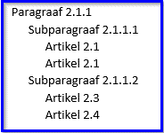Figuur 7Juiste plaatsing van Artikelen in Subparagraaf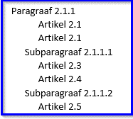Figuur 8Onjuiste plaatsing van Artikelen in een Paragraaf die ook Subparagrafen bevat
Onder ieder structuurelement en onder Artikel kunnen de elementen Gereserveerd en Vervallen geplaatst worden. Het element Gereserveerd is een leeg element waarmee bij weergave op overheid.nl en in DSO-LV de tekst ‘Gereserveerd’ wordt gegenereerd. Het bevoegd gezag kan het element niet zelf vullen met eigen tekst. Dit element maakt het mogelijk om alvast een structuur neer te zetten die is voorbereid op toekomstige aanvullingen. Met latere wijzigingsbesluiten kan het element Gereserveerd worden vervangen door een structuurelement met daadwerkelijke inhoud.
Het element Vervallen is een leeg element waarmee bij weergave op overheid.nl en in DSO-LV de tekst ‘Vervallen’ wordt gegenereerd. Het bevoegd gezag kan het element niet zelf vullen met eigen tekst. Wanneer een structuurelement of artikel vervalt kan het worden vervangen door het element Vervallen. Op deze manier blijft zichtbaar dat er een structuurelement of artikel was en dat dat later is vervallen. Het voordeel daarvan is dat in de wetstechnische informatie de historie van het element kan worden teruggevonden. Het werken met het element Vervallen is niet verplicht: het is ook mogelijk om het betreffende structuurelement of artikel met een wijzigingsbesluit volledig te verwijderen. Dan is het element niet langer zichtbaar. Het nadeel hiervan is dat er van het element geen wetstechnische informatie meer is.
In de tabel komt het Inhoud-element Begrippenlijst voor. Dit element kan in slechts een paar gevallen gebruikt worden. Dat is gespecificeerd in paragraaf 9.2.
5.2.2 Gebruik van Koppen en Lijsten in de Natura 2000-besluiten
Ten behoeve van de leesbaarheid en de oriëntatie in de tekst moet een groot deel van de tekstelementen in het Lichaam van de Regeling van de Natura 2000-besluiten worden voorzien van een Kop. STOP kent voor de Kop de Kopelementen Label, Nummer en Opschrift en stelt het verplicht om ten minste één van die Kop-elementen te gebruiken. Dit toepassingsprofiel stelt striktere eisen aan Kop. Daarnaast stelt dit toepassingsprofiel eisen aan het gebruik van Lijsten in de Natura 2000-besluiten.
In paragraaf 5.2.2.1 is de norm voor de toepassing van Koppen en Lijsten in de Natura 2000-besluiten vastgelegd. Paragraaf 5.2.2.2 geeft daar een toelichting op.
5.2.2.1 Norm
5.2.2.1.1 Koppen
De in het navolgende overzicht genoemde tekstelementen moeten worden voorzien van een Kop. Een Kop bevat de volgende Kop-elementen:
Label: de tekstuele aanduiding van het type van het tekstelement
Nummer: de identificatie van het tekstelement met een nummer of andere aanduiding
Opschrift: de titel van het tekstelement, waarmee de inhoud van het onderdeel beknopt wordt aangeduid[31] Ontleend aan Aanwijzing 3.57 van de Aanwijzingen voor de regelgeving .
Gebruik van het element Subtitel, het vierde (optionele) Kop-element dat STOP kent, is in omgevingsdocumenten met Artikelstructuur niet toegestaan.
Voor de Kop van de tekstelementen die in de Natura 2000-besluiten zijn toegestaan, gelden de onderstaande regels.
Hoofdstuk:
Label: Hoofdstuk
Nummer: Het bevoegd gezag kan zelf de nummering bepalen.
Opschrift: Niet verplicht. Indien gebruikt is het Opschrift door het bevoegd gezag zelf te kiezen.
Titel:
Label: Titel
Nummer: Het bevoegd gezag kan zelf de nummering bepalen.
Opschrift: Niet verplicht. Indien gebruikt is het Opschrift door het bevoegd gezag zelf te kiezen.
Afdeling:
Label: Afdeling
Nummer: Het bevoegd gezag kan zelf de nummering bepalen.
Opschrift: Niet verplicht. Indien gebruikt is het Opschrift door het bevoegd gezag zelf te kiezen.
Paragraaf:
Label: Paragraaf; in plaats daarvan kan het paragraafteken (§) gebruikt worden
Nummer: Het bevoegd gezag kan zelf de nummering bepalen.
Opschrift: Niet verplicht. Indien gebruikt is het Opschrift door het bevoegd gezag zelf te kiezen.
Subparagraaf:
Label: Subparagraaf; in plaats daarvan kan het paragraafteken (§) gebruikt worden
Nummer: Het bevoegd gezag kan zelf de nummering bepalen.
Opschrift: Niet verplicht. Indien gebruikt is het Opschrift door het bevoegd gezag zelf te kiezen.
Subsubparagraaf:
Label: Subsubparagraaf; in plaats daarvan kan het paragraafteken (§) gebruikt worden
Nummer: Het bevoegd gezag kan zelf de nummering bepalen.
Opschrift: Niet verplicht. Indien gebruikt is het Opschrift door het bevoegd gezag zelf te kiezen.
Artikel:
Label: Artikel
Nummer: Het bevoegd gezag kan zelf de nummering bepalen.
Opschrift: Niet verplicht. Indien gebruikt is het Opschrift door het bevoegd gezag zelf te kiezen.
Lid:
Label: n.v.t., Lid heeft geen Label
Nummer: Het bevoegd gezag kan zelf de nummering bepalen.
Opschrift: n.v.t., Lid heeft geen Opschrift
5.2.2.1.2 Lijsten
Voor Lijsten gelden de volgende regels:
Lijsten mogen voorkomen onder Artikel en Lid.
Een Lijst wordt altijd voorafgegaan door een inleidende tekst, oftewel de aanhef. Voor de aanhef moet verplicht gebruik gemaakt worden van het element Alinea uit de STOP-elementen voor Inhoud.
Er geldt geen maximum aan het aantal niveaus van geneste Lijsten.
Het opsommingsteken voor een Lijstitem mag het bevoegd gezag zelf bepalen, ook als een Lijst binnen een Lid wordt gebruikt. Voor deze lijsten moet gebruik gemaakt worden van het STOP-element Lijst van het type expliciet: de opsommingstekens worden expliciet meegeleverd.
Het aantal Lijstitems per niveau is onbeperkt.
Een Lijst heeft geen opschrift.
5.2.2.2 Toelichting
Alle structuurelementen en Artikel worden voorzien van een Kop die kan bestaan uit drie de Kopelementen. Indien gebruik gemaakt wordt van Opschrift kan het bevoegd gezag (de tekst van) het Opschrift zelf kiezen.
Lijsten kunnen voorkomen in Artikelen en Leden. Een Lijst wordt altijd voorafgegaan door een inleidende tekst, oftewel de aanhef. Daarvoor wordt gebruik gemaakt van het STOP-tekstelement Alinea. Het is goed gebruik dat achter het nummer of cijfer van lijstitems een punt wordt geplaatst.
STOP kent twee typen voor Lijst: expliciet en ongemarkeerd. Bij gebruik van het type expliciet levert het bevoegd gezag de opsommingstekens mee; ze staan dus hard in de tekst. Bij gebruik van het type ongemarkeerd wordt per lijstitem niet het opsommingsteken maar de positie van dat item in de totale lijst aangegeven. De applicaties die de tekst tonen (officielebekendmakingen.nl, de regelingenbanken op overheid.nl en DSO-LV) bepalen dan met welke opsommingstekens de lijstitems worden weergegeven. Voor de hier bedoelde lijsten in artikelen en leden in het Lichaam van omgevingsdocumenten met Artikelstructuur Lijst-type is het verplicht om Lijst van het type expliciet te gebruiken.
Figuur 9Artikel met Leden, Lijst met aanhef
Figuur 9 geeft een voorbeeld van een Artikel met Leden. Lid 1 bevat een Lijst, voorafgegaan door een aanhef direct achter het nummer van het Lid.
Zoals uit de norm van paragraaf 5.2.2.1 blijkt, kan het bevoegd gezag de nummering van Hoofdstuk, Titel, Afdeling, Paragraaf, Subparagraaf, Subsubparagraaf, Artikel en Lid zelf bepalen. Wanneer daarbij gebruik gemaakt wordt van arabische cijfers is het toegestaan om aan die nummering letters toe te voegen.
5.3 Specificatie van de Vrijetekststructuur
Zoals in paragraaf 5.1 is beschreven is de Vrijetekststructuur:
de tekststructuur voor het Lichaam van een Regeling van juridisch authentieke documenten die geen artikelen bevat;
de tekststructuur voor onderdelen van Regeling en Besluit buiten het Lichaam: Bijlage, Toelichting, ArtikelgewijzeToelichting en Motivering[32] Zie voor uitleg en toepassing van de elementen Lichaam, Regeling, Bijlage, Toelichting, ArtikelgewijzeToelichting en Motivering hoofdstuk 4 .
De specificaties voor de Vrijetekststructuur en de toepassing van die specificaties voor de Natura 2000-besluiten worden in de navolgende paragrafen beschreven.
De elementen van de STOP-tekststructuren zijn onder te verdelen in structuurelementen, elementen met inhoud en de inhoud zelf. Structuurelementen zijn die elementen die de tekst structureren maar zelf geen inhoud bevatten. In de Vrijetekststructuur is dat het element Divisie. Elementen met inhoud zijn die elementen die inhoud bevatten maar niet zelf inhoud zijn. In de Vrijetekststructuur is dat het element Divisietekst. De inhoud zelf is dat wat in de Divisietekst staat. Voorbeelden van de vorm die de inhoud kan aannemen zijn Alinea, Tabel en Figuur. In de navolgende tekst gebruiken we ‘tekstelement’ als term voor de drie elementsoorten tezamen.
De opmaak van de tekst, waaronder die van de Koppen, wordt bepaald door de applicaties die de tekst tonen: officielebekendmakingen.nl, de regelingenbanken op overheid.nl en DSO-LV. Dit toepassingsprofiel bevat daarom geen voorschriften over de opmaak van de elementen en hun Koppen. Ten behoeve van de mensleesbare tekst in het proces van opstellen van en besluitvorming over het omgevingsdocument, voorafgaand aan de bekendmaking en consolidatie, kan de plansoftware -door leverancier of bevoegd gezag te bepalen- opmaak aan de tekst toevoegen.
In paragraaf 5.3.1 is de norm voor de toepassing van de Vrijetekststructuur op de Natura 2000-besluiten vastgelegd: welke elementen moeten respectievelijk mogen worden gebruikt, hoe vaak kunnen ze voorkomen en in welke volgorde. Paragraaf 5.3.2 geeft daar een toelichting op.
5.3.1 Norm
De elementen van Besluit en Regeling van de Natura 2000-besluiten waarvan in hoofdstuk 4 is bepaald dat ze moeten worden opgebouwd volgens de Vrijetekststructuur, moeten voldoen aan de specificaties in deze paragraaf. De Vrijetekststructuur kent de volgende elementen:
Divisie: STOP-structuurelement dat gebruikt wordt voor de structurering van vrije tekst. Optioneel element. Komt zo vaak voor als gewenst. Divisie kan genest worden, oftewel hiërarchisch ingedeeld worden in verschillende niveaus van Divisie. Indien gebruik gemaakt wordt van Divisie, moet in ieder geval de Divisie van het laagste hiërarchische niveau een of meer elementen Divisietekst bevatten. De Divisies van de overige hiërarchische niveaus kunnen Divisietekst bevatten. In de hiërarchische indeling van de Divisies kunnen geen niveaus worden overgeslagen. Divisie bevat de volgende elementen:
Kop: STOP-element dat de Kop bevat. Verplicht element. Komt 1 keer voor. Bevat ten minste één van de Kopelementen Label, Nummer en Opschrift; ieder van deze elementen komt 0 of 1 keer voor. Optioneel kan het element Subtitel worden toegevoegd.
Gereserveerd: leeg STOP-element waarmee bij weergave op overheid.nl en in DSO-LV de tekst ‘Gereserveerd’ wordt gegenereerd. Optioneel element. Komt 0 of 1 keer voor. Mag alleen voorkomen in een Divisie binnen de Regeling. Indien in een Divisie het element Gereserveerd wordt gebruikt mag in die Divisie geen van de elementen Divisie of Divisietekst voorkomen.
Vervallen: leeg STOP-element waarmee bij weergave op overheid.nl en in DSO-LV de tekst ‘Vervallen’ wordt gegenereerd. Geeft aan dat de Divisie de status ‘vervallen’ heeft; het is niet langer juridisch geldig en heeft geen inhoud meer. Optioneel element. Komt 0 of 1 keer voor. Mag alleen voorkomen in een Divisie binnen de Regeling. Indien in een Divisie het element Vervallen wordt gebruikt mag in die Divisie geen van de elementen Gereserveerd, Divisie en Divisietekst voorkomen.
Wanneer binnen de Divisie de elementen Gereserveerd of Vervallen niet voorkomen: een verplichte keuze tussen:
Divisie (van een lagergelegen niveau)
Divisietekst
Divisietekst: STOP-element dat de inhoudelijke bouwsteen is voor de Vrijetekststructuur. Onder voorwaarde verplicht element: alleen te gebruiken wanneer binnen het bovenliggende element de elementen Gereserveerd en Vervallen niet voorkomen; is dan verplicht en komt dan ten minste 1 keer voor. Divisietekst bevat de volgende elementen:
Kop: STOP-element dat de Kop bevat. Optioneel element. Komt 0 of 1 keer voor. Indien Kop voorkomt bevat het ten minste één van de Kopelementen Label, Nummer en Opschrift; ieder van deze onderdelen komt 0 of 1 keer voor. Optioneel kan het element Subtitel worden toegevoegd.
Gereserveerd: leeg STOP-element waarmee bij weergave op overheid.nl en in DSO-LV de tekst ‘Gereserveerd’ wordt gegenereerd. Optioneel element. Komt 0 of 1 keer voor. Mag alleen voorkomen in een Divisietekst binnen de Regeling. Indien in een Divisietekst het element Gereserveerd wordt gebruikt mag in die Divisie geen van de elementen Divisie of Divisietekst voorkomen.
Vervallen: leeg STOP-element waarmee bij weergave op overheid.nl en in DSO-LV de tekst ‘Vervallen’ wordt gegenereerd. Geeft aan dat de Divisietekst de status ‘vervallen’ heeft; het is niet langer juridisch geldig en heeft geen inhoud meer. Optioneel element. Komt 0 of 1 keer voor. Mag alleen voorkomen in een Divisietekst binnen de Regeling. Indien in een Divisietekst het element Vervallen wordt gebruikt mag in die Divisie geen van de elementen Gereserveerd, Divisie en Divisietekst voorkomen.
Inhoud: STOP-element voor de inhoud. Onder voorwaarde verplicht element: alleen te gebruiken wanneer binnen de Divisietekst de elementen Gereserveerd en Vervallen niet voorkomen; is dan verplicht en komt dan (per Divisietekst) ten minste 1 keer voor. Het element Inhoud bevat ten minste één van de inhoud-elementen Alinea, Begrippenlijst, Citaat, Figuur, Formule, Groep, Lijst, Tabel en Tussenkop. Deze elementen zijn desgewenst binnen het element Kadertekst te plaatsen.
Voor het inhoud-element Lijst kan gekozen worden tussen Lijst van het type expliciet en Lijst van het type ongemarkeerd.
5.3.2 Toelichting
De Artikelstructuur wordt alleen toegepast in het Lichaam van de Regeling van omgevingsdocumenten met Artikelstructuur. De Vrijetekststructuur is de tekststructuur voor het Lichaam van de Regeling van omgevingsdocumenten met Vrijetekststructuur, zoals de omgevingsvisie en het vrijetekstgedeelte van het projectbesluit. Dit is het deel dat de (beleids)tekst met de inhoud van het omgevingsdocument bevat. Daarnaast is de Vrijetekststructuur de tekststructuur die wordt gebruikt in diverse delen van Regeling en Besluit buiten het Lichaam: Bijlage, Toelichting, ArtikelgewijzeToelichting en Motivering. Dat geldt zowel voor omgevingsdocumenten met Vrijetekststructuur als voor omgevingsdocumenten met Artikelstructuur.
In de Artikelstructuur wordt structuur aangebracht met specifiek benoemde structuurelementen zoals Hoofdstuk, Afdeling en Paragraaf. Die structuur toont direct -mens- en machineleesbaar- de positie van een element in het geheel. In de Vrijetekststructuur komt slechts één structuurelement voor, namelijk Divisie. Divisies kunnen genest worden: de opsteller kan desgewenst de tekst naar eigen inzicht hiërarchisch indelen in verschillende niveaus van Divisie. De positie van een Divisie in de hiërarchie bepaalt het niveau van die Divisie. De indeling in Divisies is de structuur zoals die kan worden weergegeven in een inhoudsopgave. Figuur 10 toont een voorbeeld van een tekst met Divisie in drie hiërarchische niveaus.
Figuur 10Divisie in drie hiërarchische niveaus
In het Label van de Kop van de Divisie kan uiteraard gebruik gemaakt worden van de termen hoofdstuk, afdeling en paragraaf. Dat wordt getoond in Figuur 11.
Figuur 11Divisie in drie hiërarchische niveaus met de termen hoofdstuk, afdeling en paragraaf als Label in de Kop
Divisie is dus het structuurelement van de Vrijetekststructuur, vergelijkbaar met structuurelementen als Hoofdstuk en Paragraaf in de Artikelstructuur. Divisie is een optioneel element: het is dus niet verplicht om tekstdelen met Vrijetekststructuur te structureren met Divisies. In de praktijk zal dat vaak wel gebeuren en zal Divisie in ten minste één niveau voorkomen. Iedere Divisie moet worden voorzien van een Kop. In de Vrijetekststructuur worden slechts beperkte eisen aan Kop gesteld: er moet ten minste één van de Kopelementen Label, Nummer of Opschrift zijn. Hoe die worden ingevuld is aan de opsteller. Figuur 12 geeft een voorbeeld van een tekst met Divisies in drie niveaus waarbij in de Kop alleen gebruik wordt gemaakt van het Kop-element Opschrift.
Figuur 12Divisie in drie hiërarchische niveaus met een Kop die alleen bestaat uit Opschrift
In de Vrijetekststructuur is Divisietekst het element met inhoud: het element dat inhoud bevat maar niet zelf inhoud is. Divisietekst is het verplichte element: het moet in iedere tekst met Vrijetekststructuur voorkomen. Het element Divisietekst van de Vrijetekststructuur komt overeen met Artikel (en Lid) van de Artikelstructuur. Divisietekst kan niet genest worden en is dus niet in te delen in hiërarchische niveaus. Divisietekst is de kleinste mutatie-eenheid. Dit betekent dat het de eenheid is die, ongeacht hoeveel wijzigingen met een wijzigingsbesluit in die Divisietekst worden aangebracht, als geheel vervangen wordt bij consolidatie. Bij gebruik van de wijzigingsmethode renvooi wordt door de renvooi-weergave van de wijzigingen zichtbaar wat er door het wijzigingsbesluit in de Divisietekst gewijzigd is. De Divisietekst is ook de eenheid waarover in de wetstechnische informatie in de regelingenbanken de juridische verantwoording wordt bijgehouden.
Divisietekst is in STOP gedefinieerd als een zelfstandig leesbaar stuk tekst met een interne inhoudelijke samenhang. De opsteller bepaalt zelf wat tot een Divisietekst behoort. Dat kunnen een of meer alinea’s zijn, maar ook de volledige tekst binnen een Divisie.
Bij Divisietekst is de Kop optioneel: de opsteller kan een Divisietekst voorzien van een Kop, maar dat is niet verplicht. Als een Divisietekst een Kop heeft, geldt ook daarvoor de beperkte eis dat de Kop uit ten minste één van de Kopelementen Label, Nummer of Opschrift moet bestaan. Hoe die worden ingevuld is aan de opsteller.
Figuur 13Een structuur met Divisie in twee hiërarchische niveaus, met daaronder Divisietekst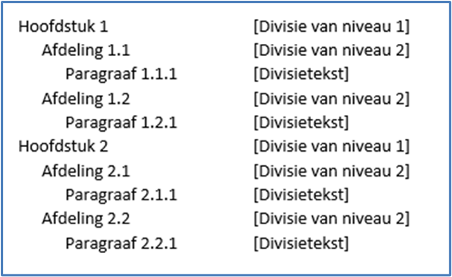Figuur 14Een structuur met Divisie in twee hiërarchische niveaus met de termen hoofdstuk en afdeling als Label in de Kop, met daaronder Divisietekst met een Kop met als label paragraaf
Binnen de Divisietekst wordt Inhoud opgenomen. Hiervoor kan gebruik gemaakt worden van alle Inhoud-elementen die STOP kent. We lichten hier de Inhoud-elementen Tussenkop en Lijst toe. Met het element Tussenkop kan een niet-structurerende ordening in de tekst worden aangebracht. Tussenkop is geen structuurelement en komt dan ook niet in een inhoudsopgave voor. Voor Lijst kent STOP twee typen: expliciet en ongemarkeerd. Bij gebruik van het type expliciet levert het bevoegd gezag de opsommingstekens mee; ze staan dus hard in de tekst. Bij gebruik van het type ongemarkeerd levert het bevoegd gezag niet de opsommingstekens aan. De applicaties die de tekst tonen (officielebekendmakingen.nl, de regelingenbanken op overheid.nl en DSO-LV) tonen de lijstitems in de door het bevoegd gezag aangeleverde volgorde en bepalen zelf met welke opsommingstekens de lijstitems worden weergegeven. Voor een tekst met Vrijetekststructuur is niet voorgeschreven welk type Lijst gebruikt moet worden: het is aan het bevoegd gezag om een keuze tussen de twee types te maken. Wanneer het bevoegd gezag zelf wil bepalen met welke opsommingstekens lijstitems worden weergegeven, kiest het voor de Lijst van het type expliciet. Als het bevoegd gezag het aan de applicaties wil overlaten, kiest het voor de Lijst van type ongemarkeerd.
Figuur 15Toepassing van de Vrijetekststructuur in het Lichaam van de Regeling van een omgevingsvisie
In Figuur 15 is te zien dat Divisietekst kan voorkomen onder een Divisie van ieder niveau, ook als er Divisies van lagere niveaus zijn. De Vrijetekststructuur geeft dus meer vrijheid dan de artikelstructuur, waar een artikel alleen onder het structuurelement van het laagste niveau kan voorkomen.
Zowel in Divisie als in Divisietekst die voorkomen in de Regeling kunnen de elementen Gereserveerd en Vervallen geplaatst worden. Het element Gereserveerd is een leeg element waarmee bij weergave op overheid.nl en in DSO-LV de tekst ‘Gereserveerd’ wordt gegenereerd. Het bevoegd gezag kan het element niet zelf vullen met eigen tekst. Dit element maakt het mogelijk om alvast een structuur neer te zetten die is voorbereid op toekomstige aanvullingen. Met latere wijzigingsbesluiten kan het element Gereserveerd worden vervangen door een structuurelement met daadwerkelijke inhoud. Dat verklaart ook waarom het element Gereserveerd niet in Divisie en Divisietekst in het Besluit kan voorkomen. Het Besluit zelf wordt immers niet gewijzigd en daardoor zou het element Gereserveerd nooit vervangen worden door daadwerkelijke inhoud. Ook inhoudelijk zou een element Gereserveerd in een Besluit een wonderlijke keuze zijn.
Het element Vervallen is een leeg element waarmee bij weergave op overheid.nl en in DSO-LV de tekst ‘Vervallen’ wordt gegenereerd. Het bevoegd gezag kan het element niet zelf vullen met eigen tekst. Wanneer een Divisie of Divisietekst vervalt kan het worden vervangen door het element Vervallen. Op deze manier blijft zichtbaar dat er een Divisie of Divisietekst was en dat die later is vervallen. Het voordeel daarvan is dat in de wetstechnische informatie de historie van het element kan worden teruggevonden. Het element Vervallen kan niet in Divisie en Divisietekst in het Besluit voorkomen. Het Besluit zelf wordt immers niet gemuteerd en daardoor zijn er geen Besluit-onderdelen die vervallen. Het werken met het element Vervallen is niet verplicht: het is ook mogelijk om de betreffende Divisie of Divisietekst met een wijzigingsbesluit volledig te verwijderen. Dan is het element niet langer zichtbaar. Het nadeel hiervan is dat er van het element geen wetstechnische informatie meer is.
Opgemerkt wordt dat waar in deze paragraaf Divisie en Divisietekst worden genoemd, het gaat over de STOP-structuurelementen Divisie en Divisietekst. Het gaat niet over de OW-objecten Divisie en Divisietekst. Zoals hiervoor al gezegd komen de STOP-structuurelementen Divisie en Divisietekst voor in het Lichaam van de Regeling van omgevingsdocumenten met Vrijetekststructuur, maar ook in onderdelen van Besluit en Regeling daarbuiten, zowel in omgevingsdocumenten met Vrijetekststructuur als in omgevingsdocumenten met Artikelstructuur. In IMOW komen Divisie en Divisietekst voor als objecttypen, die alleen gebruikt kunnen worden in het Lichaam van de Regeling van omgevingsdocumenten met Vrijetekststructuur.
6 Inleiding op het Informatiemodel Omgevingswet
Het Informatiemodel Omgevingswet, verder afgekort tot IMOW, beschrijft vanuit informatiekundig én domeininhoudelijk perspectief de aspecten die van belang zijn voor het annoteren bij het opstellen van omgevingsdocumenten en ten behoeve van de informatieverschaffing in DSO-LV.
Dit hoofdstuk geeft een introductie op IMOW. Paragraaf 6.1 beschrijft de drie hoofdcomponenten van IMOW: tekst, locatie en annotatie. Voordat daar in hoofdstuk 7 gedetailleerd wordt ingegaan, wordt in paragraaf 6.2 beschreven hoe het annoteren met OW-objecten vanuit de standaard is bedoeld.
6.1 De drie hoofdcomponenten van IMOW: tekst, locatie en annotatie
Figuur 16De hoofdcomponenten van IMOW
Bovenstaande figuur toont de drie hoofdcomponenten van IMOW in hun samenhang. IMOW is een model waarmee van tekst kan worden vastgelegd op welke locatie deze geldig is en aan tekst en locatie met behulp van annotaties gegevens kunnen worden toegevoegd. Die gegevens maken tekst en locatie machineleesbaar waardoor ze bekendgemaakt kunnen worden, herkenbaar in een viewer weergegeven kunnen worden en waardoor onderdelen geselecteerd en bevraagd kunnen worden. Het vervolg van deze paragraaf beschrijft deze drie componenten in grote lijnen. In hoofdstuk 7 worden ze in detail beschreven.
Benadrukt wordt dat IMOW alleen van toepassing is op het Lichaam van de Regeling van omgevingsdocumenten, oftewel het onderdeel dat de artikelen respectievelijk de (beleids)teksten bevat.
6.1.1 Tekst
Zoals in hoofdstuk 5 al is beschreven kent STOP twee soorten tekststructuur: Artikelstructuur en Vrijetekststructuur. In het STOP-tekstmodel is Artikelstructuur de tekststructuur voor het Lichaam van een Regeling die is opgebouwd uit één of meer artikelen. Vrijetekststructuur is de tekststructuur die wordt gebruikt voor het Lichaam van een Regeling van juridisch authentieke documenten die geen artikelen bevat én voor diverse onderdelen van Regeling en Besluit buiten het Lichaam, waaronder Bijlage en Toelichting.
IMOW maakt eveneens onderscheid tussen de Artikelstructuur en de Vrijetekststructuur. Het verschil met STOP is dat IMOW alleen wordt toegepast op het lichaam van de Regeling van omgevingsdocumenten, oftewel het onderdeel dat de artikelen respectievelijk de (beleids)teksten bevat. IMOW wordt dus niet toegepast op de overige onderdelen van de Regeling, zoals motivering, artikelsgewijze toelichting en bijlagen, en niet op de onderdelen van het Besluit. Twee voorbeelden: IMOW wordt wel toegepast op de artikelen met regels van het omgevingsdocument maar niet op bijlagen bij die regels en ook niet op de motivering die onderdeel vormt van het besluit, wel op de beleidsteksten in de omgevingsvisie maar niet op een eventuele bijbehorende zienswijzennota of participatieverslag.
Voor tekst met Artikelstructuur onderscheidt IMOW de objecten Regeltekst en Juridische regel (beschreven in subparagraaf 6.1.1.1), voor het lichaam van omgevingsdocumenten met Vrijetekststructuur heeft IMOW de objecten Divisie, Divisietekst en Tekstdeel (de onderwerpen van subparagraaf 6.1.1.2).
6.1.1.1 Regeltekst en Juridische regel
Voor het Lichaam van de Regeling van omgevingsdocumenten met Artikelstructuur onderscheidt IMOW de objecttypen Regeltekst en Juridische regel.
Regeltekst is de IMOW-term voor de kleinste zelfstandige eenheid van (een of meer) bij elkaar horende Juridische regels in een omgevingsdocument met Artikelstructuur: artikel en lid. Het OW-objecttype Regeltekst is het koppelobject naar de STOP-elementen Artikel en Lid. Zoals in paragraaf 5.2 is beschreven zijn Artikel en Lid in STOP elementen met inhoud en geen structuurelementen. De Regeltekst is in een tekst concreet aan te wijzen.
Het OW-objecttype Juridische regel staat voor een abstract concept waarmee een regel met juridische werkingskracht wordt beschreven. Juridische regel wordt gebruikt om aan verschillende onderdelen van een Regeltekst locaties en annotaties met de domeinspecifieke OW-objecten (zie daarvoor hoofdstuk 7) te kunnen koppelen.
Regeltekst bevat altijd ten minste één Juridische regel; wanneer dat gewenst is kan Regeltekst meerdere Juridische regels bevatten. De individuele Juridische regels in een Regeltekst met meerdere Juridische regels zijn niet als zelfstandige eenheden te identificeren. Bij bevraging in bijvoorbeeld DSO-LV zal altijd de volledige Regeltekst als resultaat worden weergegeven en niet de individuele Juridische regel. Het is niet verplicht om een Regeltekst in meerdere Juridische regels onder te verdelen.
6.1.1.2 Divisie, Divisietekst en Tekstdeel
Voor het Lichaam van de Regeling van omgevingsdocumenten met Vrijetekststructuur onderscheidt IMOW de objecttypen Divisie, Divisietekst en Tekstdeel.
De OW-objecttypen Divisie en Divisietekst zijn de koppelobjecten naar de Divisie en Divisietekst van STOP. Zoals in paragraaf 5.3 is beschreven is Divisie in STOP het structurerende element dat ingedeeld kan worden in verschillende hiërarchische niveaus. De STOP-Divisie is dus vergelijkbaar met Hoofdstuk, Afdeling en Paragraaf et cetera van de Artikelstructuur. In STOP is Divisietekst het element dat de inhoud bevat, het is de inhoudelijke bouwsteen van de Vrijetekststructuur. De STOP-Divisietekst is vergelijkbaar met Artikel (en Lid) van de Artikelstructuur.
Het OW-objecttype Tekstdeel staat voor een abstract concept waarmee een deel van een tekst wordt beschreven. Tekstdeel wordt gebruikt om aan verschillende onderdelen van een Divisie of Divisietekst Locaties en annotaties met de domeinspecifieke OW-objecten (zie daarvoor hoofdstuk 7) te kunnen koppelen. Een Divisie of Divisietekst bevat altijd ten minste één Tekstdeel; wanneer dat gewenst is kan een Divisie of Divisietekst meerdere Tekstdelen bevatten.
Let op dat het STOP-tekstmodel de elementen Divisie en Divisietekst kent en IMOW de objecttypen Divisie en Divisietekst. Ze zijn niet hetzelfde. De STOP-elementen Divisie en Divisietekst worden gebruikt voor het Lichaam van de Regeling van omgevingsdocumenten met Vrijetekststructuur, maar ook voor diverse andere onderdelen van Besluit en Regeling. Dat is ruimer dan de OW-objecten Divisie en Divisietekst, die alleen kunnen voorkomen in het Lichaam van de Regeling van een omgevingsdocument met Vrijetekststructuur.
6.1.2 Locatie
6.1.2.1 Juridisch vastleggen van Locatie met geografisch informatieobject
In regelingen kan informatie worden vastgelegd die niet op een begrijpelijke manier in tekst te beschrijven is. De geometrische begrenzing van Locatie is daar een voorbeeld van; gedacht kan ook worden aan een geluidsfragment. STOP gebruikt het informatieobject als bedoeld in Aanwijzing 3.50 van de Aanwijzingen voor de regelgeving (waarin de voorwaarden staan waar verwijzingen naar informatie op internet aan moeten voldoen) om dergelijke informatie op een juridisch juiste manier vast te leggen en er vanuit de tekst van een regeling naar te verwijzen. Een informatieobject dat de geometrische begrenzing van een of meer Locaties vastlegt wordt een geografisch informatieobject genoemd. (Zoals al eerder gemeld wordt de term geografisch informatieobject afgekort tot GIO.) Feitelijk is een GIO een GML-bestand met een of meer geometrieën, voorzien van metadata conform de STOP-specificatie voor een GIO.
Een GIO is een technische voorziening voor het accuraat specificeren en juridisch borgen van een gebied. Het is onderdeel van het besluit als informatie die niet uit tekst bestaat als bedoeld in artikel 7, eerste lid, van de Bekendmakingswet. Het wordt tegelijk met de tekst van het besluit in het publicatieblad van het betreffende bevoegd gezag op officielebekendmakingen.nl gepubliceerd.
De tekst van de Regeling moet minimaal één keer met een tekstuele aanduiding verwijzen naar ieder GIO. Daardoor wordt de inhoud ervan onderdeel van besluit en regeling. Voor die tekstuele aanduiding wordt de naam van het GIO gebruikt. De vermelding van de naam van het GIO in de tekst heeft als doel dat een lezer begrijpt op welke locatie de tekst betrekking heeft. De systematiek waarmee informatieobjecten machineleesbaar worden vastgelegd en de manier waarop de tekst van de Regeling verwijst naar het informatieobject zorgen er voor dat:
de informatie permanent via de verwijzing is terug te vinden;
de informatie met algemeen beschikbare software op een voor de mens begrijpelijke manier weergegeven kan worden;
de onveranderlijkheid van het informatieobject voldoende is gewaarborgd.
STOP bevat de eisen waaraan een GIO moet voldoen. Deze eisen zorgen voor de borging van de juridische bestendigheid van de GIO’s. Aan een GIO kan een module worden toegevoegd met daarin de GIO-symbolisatie: informatie over hoe een GIO (op overheid.nl) wordt afgebeeld op een kaart. In het geval van een GIO met normwaarden is dat verplicht.
Voor de bekendmaking van omgevingsdocumenten is het verplicht om de geometrische begrenzing van onderdelen van de regeling vast te leggen in een GIO. Een uitzondering daarop is een regel die geldt voor het hele ambtsgebied van het bevoegd gezag: in dat geval wordt de Locatie, oftewel het ambtsgebied, niet vastgelegd met een GIO. Zie hiervoor verder paragraaf 7.4.5.
Het in omgevingsdocumenten juridisch juist werken met GIO’s gebeurt als volgt:
In de tekst van de Regeling moet de (mensleesbare) naam van ieder GIO minimaal één keer voorkomen, voorzien van een (machineleesbare) verwijzing naar het betreffende onderdeel in de bijlage Informatieobjecten.
De coördinaten van iedere Locatie moeten zijn vastgelegd in een GIO.
In de bijlage Informatieobjecten wordt de naam van het GIO opgenomen op een manier vergelijkbaar met een begrip en zijn definitie: bij wijze van definitie komt achter de naam de volledige identificatie van het GIO.
De constructie met de naam van het GIO in de lopende tekst waarna in de bijlage die naam wordt gekoppeld aan de volledige identificatie van het GIO zorgt er voor dat de lopende tekst goed leesbaar blijft, maar dat tevens de unieke identificatie van het GIO, waarmee de inhoud van het GIO wordt ontsloten, leesbaar in de regeling te vinden is.
Figuur 17 laat een voorbeeld van deze verwijzing zien in een Juridische regel; Figuur 18 laat een voorbeeld zien van deze verwijzing in een Tekstdeel:
Figuur 17Tekstuele aanduiding en informatieobject in omgevingsdocument met Artikelstructuur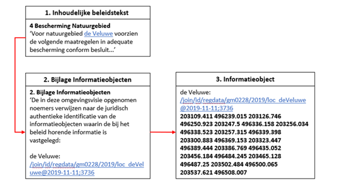Figuur 18Tekstuele aanduiding en informatieobject in omgevingsdocument met Vrijetekststructuur
6.1.2.2 OW-Locatie en werkingsgebied
In de toelichtingen op Omgevingswet en Omgevingsbesluit wordt de term werkingsgebied gebruikt voor het gebied waar een regel zijn werking heeft. In de praktijk bestaat het werkingsgebied van een Regeltekst niet altijd uit één aaneengesloten gebied, maar vaak uit meerdere gebieden en soms ook uit punten of lijnen. IMOW gebruikt voor de afzonderlijke onderdelen van het juridische werkingsgebied van een Regeltekst het object Locatie, dat de coördinaten bevat die het gebied begrenzen. Het werkingsgebied van de Regeltekst bestaat uit de optelling van alle Locaties van de Juridische regels die samen de Regeltekst vormen. Uit het juridisch systeem volgt dat van iedere Regeltekst duidelijk moet zijn waar deze geldt. Iedere Regeltekst heeft daarom een werkingsgebied en dus ook één of meer Locaties. In IMOW is het werkingsgebied de relatie tussen de Regeltekst en de Locatie(s) van die Regeltekst, of, als de Regeltekst uit meerdere Juridische regels bestaat, alle Locaties van de Juridische regels in de Regeltekst. Deze relatie wordt in DSO-LV afgeleid, het bevoegd gezag hoeft geen afzonderlijke geometrie voor het werkingsgebied aan te leveren.
Het OW-object Locatie heeft twee functies. De eerste functie is het (impliciet) juridisch vastleggen van het werkingsgebied van de Regeltekst. Dit maakt de ‘klik op de kaart’ mogelijk: door een klik op de kaart worden de op die plek geldende regels (of het geldende beleid) getoond. Het maakt ook het omgekeerde mogelijk: vanuit de tekst laten zien waar die tekst geldt. De tweede functie van Locatie is dat het vastlegt waar de domeinspecifieke objecttypen Activiteit (via ActiviteitLocatieaanduiding), Omgevingswaarde, Omgevingsnorm en de verschillende typen Gebiedsaanwijzing van toepassing zijn.
Gebieden, punten en lijnen kunnen worden gegroepeerd tot respectievelijk gebiedengroep, puntengroep of lijnengroep, in welk geval de groep een Locatie vormt. Soms komt de groep overeen met het GIO en soms de losse Locatie. Het OW-object Locatie heeft het optionele attribuut noemer. Dit maakt het mogelijk om een mensleesbare relatie te leggen tussen de OW-Locatie en de naam van het GIO die in de tekst van de regel voorkomt (zie hiervoor verder paragraaf 6.1.2.1). Iedere OW-locatie moet in een GIO voorkomen.
Locatie komt ook voor in het Lichaam van de Regeling van omgevingsdocumenten met Vrijetekststructuur. Het wordt gebruikt om het gebied vast te leggen waarover een Tekstdeel iets zegt. Net als bij de Regeltekst wordt de optelling van alle Locaties van de Tekstdelen die samen de Divisie of de Divisietekst vormen werkingsgebied genoemd. Ook hier geldt dat de relatie door LVBB en in DSO-LV wordt afgeleid en het bevoegd gezag geen afzonderlijke geometrie voor het werkingsgebied hoeft aan te leveren. Anders dan bij Juridische regel is het niet verplicht om aan ieder Tekstdeel een Locatie te koppelen.
Figuur 19 laat een voorbeeld zien: een artikel uit een omgevingsdocument met Artikelstructuur respectievelijk een Divisie of Divisietekst uit een omgevingsdocument met Vrijetekststructuur heeft drie Locaties die samen het werkingsgebied van dat artikel of Divisie c.q. Divisietekst vormen.
Figuur 19Drie Locaties die samen een werkingsgebied vormen
In paragraaf 6.1.2.1 is al beschreven dat de naam van ieder GIO minimaal één keer in de tekst van de Regeling moet voorkomen. Meer algemeen geldt dat uit de tekst duidelijk moet blijken waar een Juridische regel of Tekstdeel geldt. Voorbeelden daarvan zijn (de term waaruit blijkt waar de tekst geldt is cursief weergegeven): “In het ‘Stiltegebied’ is het verboden om een toestel te gebruiken dat het ervaren van de natuurlijke geluiden kan verstoren.” “Ter plaatse van de locatie ‘Duurzame energie’ wordt ernaar gestreefd om in 2025 18 hectare zonnepanelen gerealiseerd te hebben.” Als de locatie steeds dezelfde is, is het niet nodig om zo’n verwijzing in ieder artikel of lid op te nemen. Een oplossing kan zijn om in het begin van bij voorbeeld een afdeling of paragraaf een artikel op te nemen dat aangeeft wat het werkingsgebied van de artikelen in die afdeling of paragraaf is. Een voorbeeld: “Deze paragraaf geldt ter plaatse van de functie ‘wonen’.” Het is niet de bedoeling om alleen in het artikel of de bijlage met begripsbepalingen alle mensleesbare namen van de GIO’s en hun (machineleesbare) verwijzingen naar de betreffende onderdelen in de bijlage Informatieobjecten op te nemen en dat in de lopende tekst van de regeling niet te doen.
Met het OW-objecttype Locatie wordt de begrenzing vastgelegd van het gebied waarover een Juridische regel of een Tekstdeel gaat. Het kan wenselijk zijn om in de tekst een onderdeel van zo’n gebied in woorden te beschrijven, bijvoorbeeld met een geografische of vergelijkbare term (in het Stadspark, op de Veluwe, in ieder hoekpand), zonder de begrenzing van zo’n onderdeel vast te leggen. LVBB en DSO-LV kunnen de ligging van zo’n in woorden beschreven gebied niet afleiden en ook niet tonen. Zij weten immers niet waar het Stadspark is of waar de hoekpanden zijn. In zo’n geval worden de Locaties getoond die het werkingsgebied vormen van de Regeltekst of de Divisie of Divisietekst waarin die Juridische regel of dat Tekstdeel voorkomt. Het wordt dan aan de lezer overgelaten om te interpreteren waar de regel wel en niet werking heeft.
Locatie en de toepassing ervan worden in detail beschreven in paragraaf 7.4.
6.1.3 Annotatie
De STOP/TPOD-standaard maakt het voor bevoegde gezagen mogelijk om zich te beperken tot het verbinden van Juridische regels of Tekstdelen met Locaties. Een computer weet dan dat beide bij elkaar horen maar kan geen verdere betekenis aan die relatie geven en kan de Locaties ook niet op een voor de mens herkenbare manier op een kaart weergeven.
Dat kan wel met het in paragraaf 3.4 al kort beschreven mechanisme annoteren: het toevoegen van gegevens aan (onderdelen van) een omgevingsdocument die de inhoud van het omgevingsdocument voor de computer vertalen. Door het annoteren kan een viewer locaties en andere gegevens op een kaart en bij een tekst weergeven. Het annoteren zorgt er ook voor dat een omgevingsdocument op bepaalde kenmerken doorzoekbaar is. Het annoteren kan, in omgevingsdocumenten met artikelstructuur waarin regels over activiteiten worden gesteld, ook helpen bij het verbinden van toepasbare regels, oftewel vragenbomen, aan regels en Locaties. In paragraaf 6.2 wordt de bedoeling van het annoteren van omgevingsdocumenten met OW-objecten toegelicht. In hoofdstuk 7 worden de OW-objecten in detail gespecificeerd en toegelicht.
6.2 De bedoeling van het annoteren met OW-objecten
Zoals hiervoor al is beschreven maakt IMOW het mogelijk om vast te leggen op welke Locatie een bepaalde tekst geldig is en om daar nadere gegevens aan toe te voegen. Het doel daarvan is om die Locaties herkenbaar op een kaart weer te geven en om de informatie in het omgevingsdocument raadpleegbaar te maken: met behulp van die informatie kunnen bepaalde onderdelen geselecteerd worden. Een voorbeeld daarvan is het annoteren met de activiteit zwemmen. Door in een zoekscherm de activiteit zwemmen te selecteren, worden in DSO-LV de artikelen getoond waarin Juridische regels zijn geannoteerd met die Activiteit. Ook worden in het bijbehorende kaartbeeld alle Locaties getoond die bij die artikelen en die Activiteit-annotatie horen.
De bedoeling van het annoteren met IMOW is dat de Locaties en de nadere gegevens een letterlijke vertaling of vastlegging van de regels respectievelijk de beleidstekst zijn. IMOW is niet bedoeld voor interpretaties, nadere afleidingen of het toevoegen van niet door regels of beleidsteksten vastgelegde gebieden. Ook is IMOW niet bedoeld voor a contrario-redeneringen, bijvoorbeeld dat het gebruik van een annotatie op de ene plek een betekenis geeft aan het ontbreken van die annotatie (of juist zijn tegenhanger) op een andere plek.
Dit wordt toegelicht aan de hand van twee voorbeelden, het eerste voor een omgevingsdocument met Artikelstructuur en het tweede voor een omgevingsdocument met Vrijetekststructuur. De afbeeldingen in de voorbeelden zijn bedoeld om het principe uit te leggen, niet om de werking van een specifiek instrument te tonen. De weergave is willekeurig gekozen, het Presentatiemodel is niet toegepast.
Figuur 20Voorbeeld bedoeling van IMOW, activiteit in omgevingsplan
Bovenstaande afbeelding toont het grondgebied van een gemeente en de Locatie, bestaande uit drie Gebieden (eventueel gegroepeerd in één Gebiedengroep), die hoort bij de Juridische regel van artikel 2.10. Ter plaatse van deze Locatie is het -kort gezegd- toegestaan om zonder vergunning of melding een kinderopvanginstelling te exploiteren. De OW-objecten zijn niet bedoeld om vervolgens af te leiden dat in de rest van het grondgebied van deze gemeente het exploiteren van een kinderopvanginstelling verboden is, of dat daar voor die activiteit een vergunningplicht of meldingsplicht geldt. Dat is alleen zo wanneer het bevoegd gezag dat expliciet heeft bepaald, bijvoorbeeld door een Locatie voor de rest van het grondgebied op te nemen en daaraan een Juridische regel met een verbod, vergunningplicht of meldingsplicht te koppelen, met de bijbehorende annotatie.
Figuur 21Voorbeeld bedoeling van IMOW, omgevingsvisie
Bovenstaande afbeelding toont het grondgebied van een provincie en de Locatie, bestaande uit drie Gebieden (eventueel gegroepeerd in één Gebiedengroep), die hoort bij een hoofdstuk in de omgevingsvisie over kantoorontwikkelingslocaties. In haar omgevingsvisie legt de provincie vast dat zij de haar ter beschikking staande middelen wil inzetten om deze gebieden te ontwikkelen tot kantoorlocaties. De OW-objecten zijn niet bedoeld om vervolgens af te leiden dat er in de rest van het grondgebied van deze provincie geen kantoren aanwezig zijn of geen nieuwe kantoren kunnen komen. Dat is alleen zo wanneer het bevoegd gezag dat expliciet heeft bepaald, bijvoorbeeld door een Locatie voor de rest van het grondgebied op te nemen en daarvoor als beleidsvoornemen te formuleren dat bestaande leegstaande kantoorruimte wordt omgevormd tot woonruimte en dat geen nieuwe kantoorgebouwen worden toegestaan.
7 Annoteren met OW-objecten: productmodel, objecten en attributen
Dit hoofdstuk beschrijft de toepassing van het annoteren met OW-objecten op de Natura 2000-besluiten. De objecten, de bijbehorende attributen en waardelijsten worden gedetailleerd toegelicht. Paragraaf 7.1 bevat de productmodellen voor aanwijzingsbesluit en toegangsbeperkingsbesluit in de vorm van IMOW-UML-klassediagrammen, met een korte toelichting op de diagrammen. In de paragrafen 7.2 tot en met 7.11 worden in detail de OW-objecten en hun attributen en de toepassing van het annoteren met die objecten op de Natura 2000-besluiten beschreven. Ieder onderdeel wordt volgens een vast stramien beschreven. Het begint met een toelichting op de toepassing: waarvoor en wanneer wordt het object of attribuut in de praktijk gebruikt. Daarna volgt een definitie van het object, om precies aan te geven waar het over gaat. In de volgende subparagraaf wordt aangegeven wat het doel van het objecttype is, met andere woorden: wat is het resultaat, wat levert de extra inspanning van het annoteren met dit object op? Vervolgens wordt de norm gesteld. Deze subparagraaf begint steeds met een uitsnede van het IMOW-diagram met daarin die objecten en relaties die relevant zijn. De norm somt de attributen op die horen bij dit OW-object, waarbij wordt aangegeven of het attribuut verplicht of optioneel is, hoe vaak het attribuut kan of moet voorkomen, of er een waardelijst voor het attribuut bestaat en of er constraints, oftewel voorwaarden voor de toepassing, gelden. De daaropvolgende subparagraaf geeft een toelichting op de attributen, de waardelijsten en de eventuele constraints die samen de norm vormen.
In paragraaf 8.3 is beschreven hoe het wijzigen van OW-objecten werkt. In paragraaf 7.12 zijn regels gegeven voor het verwijzen van OW-objecten naar andere OW-objecten. Die regels zijn van toepassing op ieder in dit hoofdstuk beschreven objecttype.
In de laatste twee paragrafen van dit hoofdstuk wordt beschreven op welk niveau annotaties worden geplaatst en wordt aangegeven hoe het annoteren wordt toegepast wanneer een deel van norm of beleid in een bijlage staat.
Daar waar in dit hoofdstuk de naam van een OW-object gebruikt wordt, wordt die naam met een hoofdletter geschreven. De namen van attributen van objecten worden cursief gedrukt.
7.1 Productmodel: de IMOW-UML-diagrammen voor de Natura 2000-besluiten
Figuur 22 toont het volledige IMOW-diagram in UML voor het Lichaam van de Regeling van het aanwijzingsbesluit: het deel dat de artikelen met de inhoud bevat.
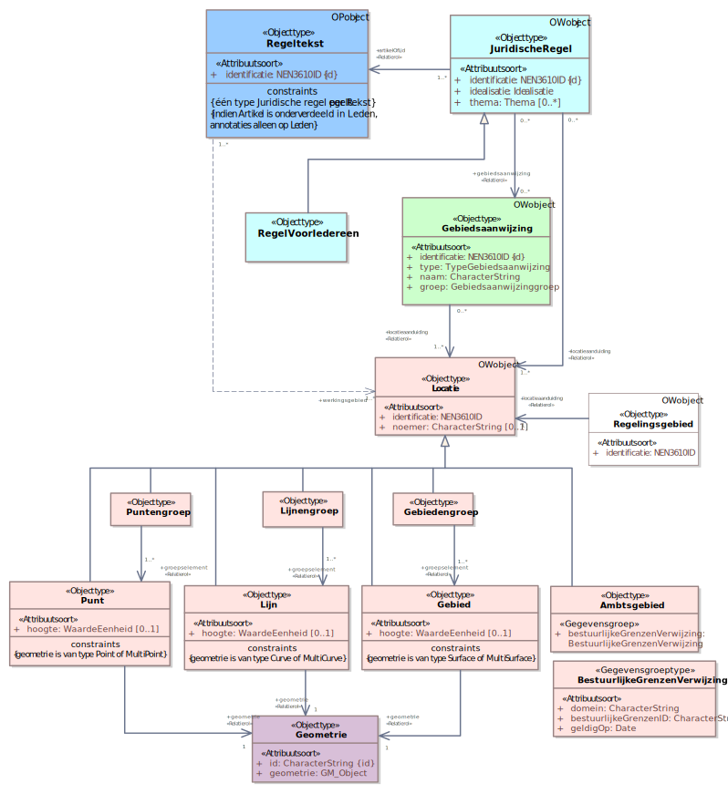Figuur 22IMOW-UML-klassediagram voor het aanwijzingsbesluit
In het diagram zijn in blauw de tekstobjecten weergegeven: Regeltekst en Juridische regel staan daarin centraal. Regeltekst (in het donkerblauwe blokje) is het koppelobject naar STOP. In roze is Locatie met zijn verschijningsvormen weergegeven. Het groene blokje staat voor het domeinspecifieke annotatie-object Gebiedsaanwijzing. Tekst, Locatie en Annotatie zijn de hoofdcomponenten van IMOW die in paragraaf 6.1 al zijn beschreven. Het witte blokje is het Regelingsgebied. In het model is aangegeven welke waardelijsten van toepassing zijn. Het model bevat ook de attributen die nodig zijn om domeinspecifieke annotaties te kunnen presenteren op een kaart. In de navolgende paragrafen worden de objecten in detail beschreven.
De tekst van het aanwijzingsbesluit wordt ingedeeld met de OW-objecttypen Regeltekst (zie paragraaf 7.2) en Juridische regel (zie paragraaf 7.3). De Juridische regels van het aanwijzingsbesluit kunnen alleen worden geannoteerd met het OW-object Gebiedsaanwijzing (zie paragraaf 7.7) van het type Natuur (zie paragraaf 7.7.7.1). Daarbij kan gebruik gemaakt worden van de groepen ‘Natura 2000-gebied’, ‘habitatrichtlijngebied’ en ‘vogelrichtlijngebied’. Bij de Juridische regel moet worden aangegeven hoe nauwkeurig het bevoegd gezag de Locatie van die Juridische regel bedoeld heeft en hoe Locatie geïnterpreteerd moet worden. Een Locatie kan exact bedoeld zijn, maar ook indicatief. In het geval van het aanwijzingsbesluit zal naar verwachting altijd worden gekozen voor de waarde exact. Het volledige gebied waar het aanwijzingsbesluit over gaat moet worden vastgelegd met het objecttype Regelingsgebied dat in paragraaf 7.11 wordt beschreven.
Figuur 23 toont het volledige IMOW-diagram in UML voor het Lichaam van de Regeling van het toegangsbeperkingsbesluit: het deel dat de artikelen met de inhoud bevat.
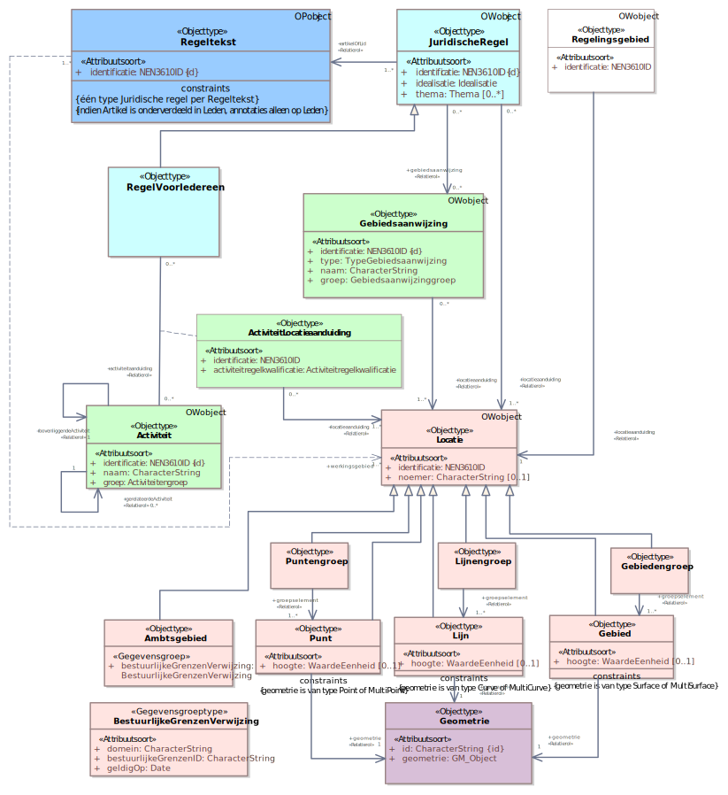Figuur 23IMOW-UML-klassediagram voor het toegangsbeperkingsbesluit
In het diagram zijn in blauw de tekstobjecten weergegeven: Regeltekst en Juridische regel. In roze is Locatie weergegeven. De groene blokjes staan voor de domeinspecifieke annotatie-objecten Activiteit, ActiviteitLocatieaanduiding en Gebiedsaanwijzing. Tekst, Locatie en Annotatie zijn de hoofdcomponenten van IMOW die in paragraaf 6.1 al zijn beschreven. Het witte blokje is het Regelingsgebied. In het model is aangegeven welke waardelijsten van toepassing zijn. Het model bevat ook de attributen die nodig zijn om domeinspecifieke annotaties te kunnen presenteren op een kaart. In de navolgende paragrafen worden de objecten in detail beschreven.
De tekst van het toegangsbeperkingsbesluit wordt ingedeeld met de OW-objecttypen Regeltekst (zie paragraaf 7.2) en Juridische regel (zie paragraaf 7.3). De Juridische regels kunnen worden geannoteerd met het OW-object Gebiedsaanwijzing (zie paragraaf 7.7) van het type Natuur (zie paragraaf 7.7.7.1). Daarbij kan gebruik gemaakt worden van de groepen ‘Natura 2000-gebied’, ‘toegangsbeperkingsgebied’, ‘habitatrichtlijngebied’ en ‘vogelrichtlijngebied’. Het is ook mogelijk om de Juridische regels te annoteren met Activiteit en ActiviteitLocatieaanduiding (zie daarvoor paragraaf 7.6). Bij de Juridische regel moet worden aangegeven hoe nauwkeurig het bevoegd gezag de Locatie van die Juridische regel bedoeld heeft en hoe Locatie geïnterpreteerd moet worden. Een Locatie kan exact bedoeld zijn, maar ook indicatief. In paragraaf 2.3.1.2 is beschreven dat het in toegangsbeperkingsbesluiten gebruikelijk is om voor gebieden waar veel natuurlijke dynamiek wordt verwacht of waar niet precies duidelijk is waar een soort zich zal gaan ophouden, ‘zoekkaders’ voor een gebied vast te leggen, waarna vervolgens in de praktijk wordt bepaald waar de grenzen van het gesloten gebied precies komen te liggen. In dat geval wordt de waarde indicatief gebruikt voor de idealisatie van de Juridische regel. Het volledige gebied waar het toegangsbeperkingsbesluit over gaat moet worden vastgelegd met het objecttype Regelingsgebied dat in paragraaf 7.11 wordt beschreven.
7.2 Objecttype Regeltekst
7.2.1 Toelichting op de toepassing
Regeltekst is de STOP/TPOD-term voor de kleinste zelfstandige eenheid van ordening en informatie in het Lichaam van een Regeling van een omgevingsdocument met Artikelstructuur: artikel of lid. Regeltekst bevat altijd ten minste één Juridische regel; wanneer dat nodig is kan Regeltekst meerdere Juridische regels bevatten. Iedere Regeltekst heeft een werkingsgebied-relatie met Locatie, waarmee wordt aangegeven waar een Regeltekst zijn werking heeft. Opgemerkt wordt dat het annoteren van Juridische regel met OW-objecten via het koppelobject Regeltekst wordt gekoppeld aan de STOP-elementen Artikel en Lid. Artikel en Lid zijn in STOP elementen die inhoud bevatten en geen structuurelementen. Omgevingsdocumenten met Artikelstructuur kunnen dus, anders dan omgevingsdocumenten met Vrijetekststructuur, niet geannoteerd worden op het niveau van structuurelementen zoals Hoofdstuk en Afdeling.
7.2.2 Definitie
Regeltekst is de kleinste zelfstandige eenheid van (een of meer) bij elkaar horende Juridische regels in het Lichaam van de Regeling van omgevingsdocumenten met Artikelstructuur, te weten een artikel of een lid.
7.2.3 Doel
Doel van het objecttype Regeltekst is het leggen van de verbinding tussen de Juridische regel uit het Omgevingswet-domein en het artikel of lid uit STOP.
7.2.4 Norm
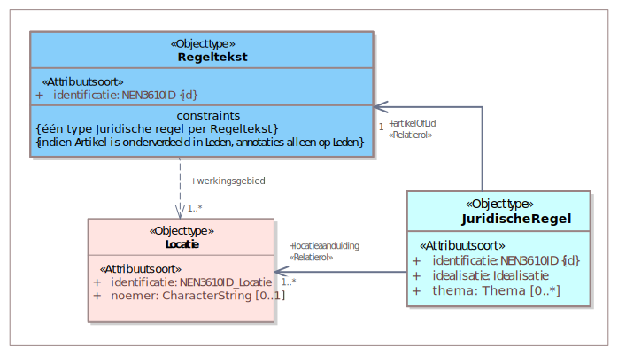Figuur 24Uitsnede uit IMOW-diagram voor objecttype Regeltekst
Regeltekst kent het volgende attribuut:
identificatie: de unieke identificatie waaronder elk object van dit type bekend is. Identificatie conform datatype NEN3610-ID. Verplicht attribuut. Komt 1 keer voor. De identificatie moet de code (uit de STOP-waardelijst voor gemeente, waterschap, provincie of ministerie) bevatten van het bevoegd gezag dat het besluit neemt waarmee de Regeling wordt ingesteld of gewijzigd.
Regeltekst kent geen waardelijsten.
Regeltekst kent de volgende constraints:
één type Juridische regel per Regeltekst; constraint geldig op het niveau van Artikel: alle Juridische regels in een Artikel en alle Juridische regels in alle Leden van een Artikel moeten van hetzelfde type zijn;
indien Artikel is onderverdeeld in Leden, annotaties alleen op Leden.
7.2.5 Toelichting op de norm
Attributen
Het attribuut identificatie behoeft geen toelichting.
In de uitsnede van het diagram is ook de relatie werkingsgebied te zien. Deze relatie is de verwijzing van een specifieke Regeltekst naar (de identificatie van) de bijbehorende Locatie(s). De relatie is in een onderbroken lijn weergegeven omdat het een conceptuele relatie is. De relatie is impliciet inbegrepen in de relatie tussen Regeltekst, Juridische regel en Locatie en geeft aan wat het werkingsgebied van de Regeltekst is: het gebied waar het Artikel of Lid zijn werking heeft. De relatie wordt afgeleid in DSO-LV waarbij de som van de locaties van de onderliggende Juridische regels wordt gebruikt. Het is dus niet zo dat het bevoegd gezag ook nog een afzonderlijke geometrie voor het werkingsgebied moet aanleveren.
Regeltekst kent geen waardelijsten.
Constraints
één type Juridischeregel per Regeltekst: deze constraint betekent dat alle Juridische regels in een Regeltekst van hetzelfde type moeten zijn. Deze voorwaarde dient het doel van het onderscheid in de verschillende typen Juridische regel, namelijk het als uitgangssituatie alleen tonen van die regels die op de betreffende doelgroep gericht zijn. De typen Juridische regel en de achterliggende doelgroepbenadering worden toegelicht bij Juridische regel in paragraaf 7.3.5. Deze constraint geldt op het niveau van Artikel: alle Juridische regels in een Artikel en alle Juridische regels in alle Leden van een Artikel moeten van hetzelfde type zijn.
indien Artikel is onderverdeeld in Leden, annotaties alleen op Leden: deze constraint houdt in dat als een Artikel is onderverdeeld in Leden, de annotaties alleen mogen verwijzen naar de Leden en niet naar het Artikel, oftewel annotaties worden dan alleen op Lid-niveau toegepast. Deze constraint heeft ook tot gevolg dat als een Artikel is onderverdeeld in Leden, alleen de Leden kunnen worden geannoteerd als Regeltekst en Artikel niet.
Let ook op de regels voor het verwijzen van een OW-object naar een ander OW-object in paragraaf 7.12.2.1, met name over het verwijzen naar een OW-object behorend bij een andere Regeling en over het verwijzen van en naar een OW-object in een tijdelijk regelingdeel.
7.3 Objecttype Juridische regel
7.3.1 Toelichting op de toepassing
Juridische regel is een conceptuele constructie, die in IMOW wordt gebruikt om verschillende onderdelen van een Regeltekst, bijvoorbeeld de onderdelen van een Lijst of de verschillende activiteiten die in een Regeltekst worden genoemd, een eigen Locatie te kunnen geven. Ook maakt Juridische regel het mogelijk om verschillende onderdelen van een Regeltekst een eigen thema te geven en/of te annoteren met verschillende annotaties Activiteit, Omgevingsnorm, Omgevingswaarde en Gebiedsaanwijzing. Juridische regel is altijd onderdeel van een Regeltekst en, zoals we in de paragrafen 6.1.1 en 7.2 al hebben gezien, Regeltekst kan meerdere Juridische regels bevatten. In een Regeltekst met meerdere Juridische regels zijn de individuele Juridische regels niet als zelfstandige eenheid te identificeren.
Bij de Juridische regel moet worden aangegeven hoe nauwkeurig het bevoegd gezag de Locatie van die Juridische regel bedoeld heeft en hoe Locatie geïnterpreteerd moet worden. Een Locatie kan exact bedoeld zijn, maar ook indicatief. Een voorbeeld van dat laatste is als een grens met een formule berekend is; de grens houdt dan geen rekening met de situering van objecten als woningen e.d. terwijl dat in de interpretatie wel zou moeten. Ook kan een Locatie in een omgevingsdocument bedoeld zijn als indicatie of zoekzone voor de plek voor een toekomstige ontwikkeling: pas later wordt de daadwerkelijke plek bepaald.
Met het OW-object Juridische regel kan extra informatie aan de Juridische regel worden gekoppeld: tot welke regelsoort de Juridische regel behoort, wat het thema is waarover de Juridische regel gaat en met welk OW-object of met welke OW-objecten de Juridische regel geannoteerd is.
Juridische regel heeft drie typen: Regel voor iedereen, Instructieregel en Omgevingswaarderegel. Doel van deze typen is het eenvoudig kunnen selecteren van regeltekst voor een specifieke gebruikersgroep, waardoor iedere gebruikersgroep als uitgangssituatie alleen die regels krijgt voorgelegd die voor die groep van belang zijn. Daartoe wordt onderscheid gemaakt tussen instructieregels, die alleen voor andere overheden zijn bedoeld, omgevingswaarderegels, die op zichzelf alleen werking hebben voor de bestuursorganen van het bevoegd gezag dat de omgevingswaarde heeft vastgesteld, en regels die voor iedereen van belang zijn. Uiteraard wordt alleen dat type gekozen dat in het betreffende omgevingsdocument kan voorkomen. Instructieregels kunnen alleen voorkomen in AMvB, ministeriële regeling en omgevingsverordening. Omgevingswaarden kunnen alleen in AMvB, omgevingsverordening en omgevingsplan voorkomen. Regels voor iedereen tot slot kunnen voorkomen in alle omgevingsdocumenten met regels. Het type Juridische regel geeft dus aan tot welke soort een Juridische regel behoort en voor wie de Juridische regel bedoeld is.
Instructieregels kunnen worden gesteld over de uitoefening van een bevoegdheid of een taak. Ze richten zich dus tot een bepaald instrument of een taakuitoefening. Om met behulp van een computer snel te kunnen selecteren welke instructieregels relevant zijn, wordt aan Instructieregel extra informatie toegevoegd: richt de instructieregel zich tot een instrument, en zo ja tot welk instrument, of gaat het over de uitoefening van een taak en zo ja wie moet die taak uitoefenen.
Bij Regeltekst is de voorwaarde opgenomen dat alle Juridische regels binnen één Regeltekst van hetzelfde type moeten zijn, zie hiervoor ook paragraaf 7.2. Op deze manier wordt voorkomen dat Juridische regels die voor verschillende doelgroepen bedoeld zijn bij elkaar in één lid respectievelijk artikel worden geplaatst. Dit komt het tonen van regels per doelgroep ten goede.
7.3.2 Definitie
Juridische regel is het objecttype, te gebruiken in het Lichaam van de Regeling van omgevingsdocumenten met Artikelstructuur, dat een regel met juridische werkingskracht beschrijft.
7.3.3 Doel
Doel van het objecttype Juridische regel is:
het kunnen verbinden van verschillende onderdelen van een Regeltekst met eigen Locaties;
het kunnen annoteren van verschillende onderdelen van een Regeltekst met thema en de domeinspecifieke annotaties Activiteit, Omgevingsnorm, Omgevingswaarde en de verschillende typen Gebiedsaanwijzing;
het kunnen leggen van relaties tussen de domeinspecifieke annotaties, waardoor de Juridische regel als geheel machineleesbaar wordt;
het, door middel van het attribuut thema, in samenhang kunnen tonen van verschillende Juridische regels binnen hetzelfde omgevingsdocument;
het kunnen selecteren van Regelteksten naar doelgroep door middel van de keuze voor het type Juridische regel;
het kunnen leggen van verbindingen tussen onderdelen van verschillende omgevingsdocumenten, bijvoorbeeld een omgevingsvisie en een omgevingsverordening, die met hetzelfde thema zijn geannoteerd.
7.3.4 Norm
Figuur 25Uitsnede uit IMOW-diagram voor objecttype Juridische regel
Juridische regel kent de volgende attributen en waardelijsten:
identificatie: de unieke identificatie waaronder elk object van dit type bekend is. Identificatie conform datatype NEN3610-ID. Verplicht attribuut. Komt 1 keer voor. De identificatie moet de code (uit de STOP-waardelijst voor gemeente, waterschap, provincie of ministerie) bevatten van het bevoegd gezag dat het besluit neemt waarmee de Regeling wordt ingesteld of gewijzigd.
idealisatie: attribuut dat vastlegt op welke manier de begrenzing van Locatie voor deze Juridische regel geïnterpreteerd moet worden en door het bevoegd gezag bedoeld is. Te kiezen uit de limitatieve waardelijst ‘Idealisatie’. Verplicht attribuut. Komt 1 keer voor.
thema: de naam van het thema van de Juridische regel, te kiezen uit de limitatieve waardelijst ‘Thema’. Optioneel attribuut. Komt zo vaak voor als gewenst.
locatieaanduiding: de verwijzing van een specifieke Juridische regel naar (de identificatie van) de bijbehorende Locatie(s); attribuut dat een of meer specifieke Locatie(s) aanduidt waar deze Juridische regel van toepassing is. Verplicht attribuut. Komt ten minste 1 keer voor.
gebiedsaanwijzing: de verwijzing van een specifieke Juridische regel naar (de identificatie van) een Gebiedsaanwijzing; attribuut dat vastlegt dat de Juridische regel met (één van de typen van) het object Gebiedsaanwijzing geannoteerd is. Optioneel attribuut. Komt zo vaak voor als gewenst.
artikelOfLid: de verwijzing van een specifieke Juridische regel naar de Regeltekst oftewel het artikel of lid waar de Juridische regel onderdeel van is. Verplicht attribuut. Komt 1 keer voor.
kaartaanduiding: de verwijzing van een specifieke Juridische regel naar (de identificatie van) de Kaart waarop de Locaties en OW-objecten worden weergegeven die horen bij de betreffende Juridische regel. Optioneel attribuut. Komt zo vaak voor als gewenst.
Juridische regel kent drie typen:
Regel voor iedereen: een Juridische regel die voor eenieder relevant is of relevant kan zijn; te gebruiken voor iedere Juridische regel die geen Instructieregel of Omgevingswaarderegel is. Regel voor iedereen heeft alle attributen van Juridische regel, aangevuld met:
activiteitaanduiding: de verwijzing van een specifieke Juridische regel naar (de identificatie van) een Activiteit; attribuut dat vastlegt dat de Juridische regel met het object Activiteit geannoteerd is. Optioneel attribuut. Komt zo vaak voor als gewenst.
omgevingsnormaanduiding: de verwijzing van een specifieke Juridische regel van het type Regel voor iedereen naar (de identificatie van) een Omgevingsnorm; attribuut dat vastlegt dat de Juridische regel met het object Omgevingsnorm geannoteerd is. Optioneel attribuut. Aangezien de Natura 2000-besluiten niet met Omgevingsnorm geannoteerd kunnen worden, kan dit attribuut niet voorkomen.
Instructieregel: regel als bedoeld in paragraaf 2.5.1 Omgevingswet, gericht tot een ander bestuursorgaan of bestuurlijke organisatie. Instructieregels kunnen niet voorkomen in Natura 2000-besluiten. Daarom wordt dit type Juridische regel hier niet verder besproken.
omgevingsnormaanduiding: de verwijzing van een specifieke Juridische regel van het type Instructieregel naar (de identificatie van) een Omgevingsnorm; attribuut dat vastlegt dat de Juridische regel met het object Omgevingsnorm geannoteerd is. Optioneel attribuut. Komt zo vaak voor als gewenst.
Omgevingswaarderegel: regel over een omgevingswaarde als bedoeld in afdeling 2.3 Omgevingswet, die op zichzelf alleen gericht is tot de bestuursorganen van het bevoegd gezag dat de omgevingswaarde heeft vastgesteld. Omgevingswaarden en dus ook omgevingswaarderegels kunnen niet voorkomen in Natura 2000-besluiten. Daarom wordt dit type Juridische regel hier niet verder besproken.
Juridische regel kent de volgende constraint:
instructieregelInstrument of instructieregelTaakuitoefening.
Ook is voor Juridische regel relevant dat het objecttype Regeltekst de constraint heeft dat alle Juridische regels in een Regeltekst van hetzelfde type moeten zijn. Zie hiervoor paragraaf 7.2.4.
Werkafspraak
Tot anders is bepaald in een volgende versie van dit toepassingsprofiel dan wel in een nader bericht van de beheerder van de TPOD-Standaard geldt de volgende werkafspraak:
Het attribuut idealisatie moet voor alle Juridische regels in een Regeltekst dezelfde waarde hebben.
7.3.5 Toelichting op de norm
Attributen en waardelijsten
idealisatie: attribuut dat aangeeft op welke manier het bevoegd gezag de begrenzing van Locatie voor een Juridische regel bedoeld heeft: is het een exacte of een indicatieve afbakening? De waardelijst ‘Idealisatie’ kent twee waarden: exact en indicatief. Hiermee kan worden aangegeven of de begrenzing van Locatie voor deze Juridische regel exact of indicatief bedoeld is. Wanneer wordt gekozen voor de waarde indicatief geeft dat alleen aan dat de begrenzing indicatief bedoeld is. Met idealisatie wordt niet vastgelegd met welke marge de indicatieve begrenzing bedoeld is. Het attribuut idealisatie is in IMOW gepositioneerd als attribuut van Juridische regel. Dat lijkt misschien vreemd omdat het informatie geeft over de gewenste interpretatie van Locatie. Toch hoort idealisatie bij Juridische regel omdat het vertelt hoe de Locatie voor déze Juridische regel geïnterpreteerd moet worden. Op deze manier is het mogelijk om dezelfde Locatie ook voor een andere Juridische regel te (her)gebruiken en voor die Juridische regel een andere idealisatie te geven. Figuur 26 geeft hiervan een voorbeeld. De artikelen 3.28 en 5.7 van een omgevingsverordening gaan over dezelfde Locatie ‘provinciale wegen’. Artikel 3.28 bevat een Juridische regel van het type Regel voor iedereen; met de waarde exact voor idealisatie wordt aangegeven dat voor deze Juridische regel de begrenzing exact is bedoeld. Wanneer een omgevingsvergunning voor een uitweg wordt aangevraagd voor een plek die ligt binnen de begrenzing is deze (beoordelings)regel daarop van toepassing; ligt de plek net daarbuiten dan is de regel daar niet van toepassing. In artikel 5.7 staat een Juridische regel van het type Instructieregel. Met de waarde indicatief voor idealisatie heeft de provincie aangegeven dat voor deze Juridische regel de begrenzing indicatief is bedoeld.
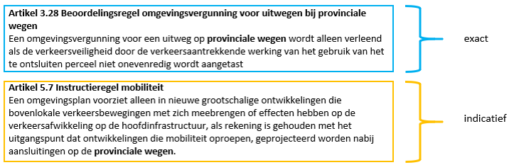Figuur 26Gebruik van idealisatie bij twee Juridische regels over dezelfde Locatie
thema: attribuut dat kernachtig de grondgedachte van de Juridische regel weergeeft. Het thema is een aanduiding van het aspect van de fysieke leefomgeving waar de Juridische regel over gaat. Om harmonisatie tussen bevoegde gezagen en tussen instrumenten te bevorderen is er een waardelijst voor thema. Het overgrote deel van de waarden van deze waardelijst is rechtstreeks ontleend aan artikel 1.2 Ow, waarin is aangegeven welke aspecten de fysieke leefomgeving omvat. In Bijlage 1 wordt de relatie tussen artikel 1.2 Ow en de waarden van de waardelijst gelegd. Per Juridische regel kunnen net zoveel thema’s worden toegevoegd als gewenst is. thema is een attribuut en geen object. Het kent daardoor geen eigen weergave. Met het attribuut thema kan het thema van een Juridische regel worden aangegeven. thema kan bijvoorbeeld worden gebruikt om alle Juridische regels over een bepaald thema in eenzelfde omgevingsdocument te selecteren, of om van verschillende omgevingsdocumenten de Juridische regels en/of Tekstdelen met hetzelfde thema te selecteren. Afhankelijk van de functionaliteit die een viewer biedt is het vervolgens ook mogelijk om de Locaties van alle Juridische regels en/of Tekstdelen met hetzelfde thema op een kaartbeeld weer te geven. Overwogen wordt om aan het objecttype Juridische regel een attribuut subthema toe te voegen waarmee het bevoegde gezag desgewenst binnen een thema een nadere specialisatie kan aanbrengen.
locatieaanduiding: attribuut dat de verwijzing bevat naar de identificatie van de Locatie(s) die bij de Juridische regel horen én aangeeft wat de betekenis van die Locatie(s) is voor het object waar het bij hoort; in dit geval voor Juridische regel. Dit attribuut legt dus vast dat deze Locatie(s) de locatie(s) is (zijn) waar deze Juridische regel van toepassing is. Iedere Juridische regel heeft een verwijzing naar één of meer Locaties. Ook de objecten ActiviteitLocatieaanduiding, Omgevingsnorm, Omgevingswaarde en (de verschillende typen) Gebiedsaanwijzing hebben een verwijzing naar één of meer Locaties. Op deze manier is van iedere Juridische regel, ongeacht het object of de objecten waarmee het is geannoteerd, duidelijk voor welke Locatie(s) deze geldt. Doordat ieder specifiek voorkomen van de objecten ActiviteitLocatieaanduiding, Omgevingsnorm, Omgevingswaarde en (de verschillende typen) Gebiedsaanwijzing ook zelf een verwijzing naar één of meer Locaties heeft, kan van iedere Activiteit - ActiviteitLocatieaanduiding-combinatie, Omgevingsnorm, Omgevingswaarde en Gebiedsaanwijzing worden getoond voor welke Locatie(s) deze geldt, onafhankelijk van de Juridische regels waarin hij geldt.
artikelOfLid: attribuut voor de verwijzing van een Juridische regel naar de identificatie van de Regeltekst oftewel het artikel of lid waarin de Juridische regel voorkomt.
activiteitaanduiding, gebiedsaanwijzing, omgevingswaardeaanduiding en omgevingsnormaanduiding: de attributen die de verwijzing bevatten van de Juridische regel (of het type Juridische regel) naar de identificatie van de domeinspecifieke annotatie oftewel Activiteit, Gebiedsaanwijzing, Omgevingswaarde en/of Omgevingsnorm. Samen met die domeinspecifieke annotatie duiden deze attributen aan waar de Juridische regel over gaat.
kaartaanduiding: attribuut dat de verwijzing bevat van de Juridische regel naar de identificatie van een specifiek Kaartobject. Met het objecttype Kaart kan bij een Juridische regel een specifieke kaart worden gegenereerd waarop alle bij die Juridische regel behorende Locaties en OW-objecten worden weergegeven. Het is ook mogelijk om vanuit meerdere Juridische regels te verwijzen naar dezelfde Kaart. Daardoor ontstaat een gecombineerd kaartbeeld met alle kaartgerelateerde informatie uit alle Juridische regels die naar dezelfde Kaart verwijzen. Zie voor het objecttype Kaart paragraaf 7.9.
De drie typen van Juridische regel geven aan tot welke soort een Juridische regel behoort en geven daarvan indien nodig een nadere specificatie. Zoals in paragraaf 7.3.1 al is uitgelegd is het doel daarvan het eenvoudig kunnen selecteren van regels voor een specifieke gebruikersgroep, waardoor een gebruiker in principe alleen die regels krijgt voorgelegd die voor hem of haar van belang zijn. Daartoe wordt onderscheid gemaakt tussen instructieregels, die alleen voor andere overheden zijn bedoeld, omgevingswaarderegels, die op zichzelf alleen werking hebben voor de bestuursorganen van het bevoegd gezag dat de omgevingswaarde heeft vastgesteld, en regels die voor iedereen van belang zijn.
Instructieregels en omgevingswaarderegels kunnen niet voorkomen in Natura 2000-besluiten. Daarom worden deze typen Juridische regel hier niet verder besproken. Alle Juridische regels in [naam omgevingsdocument] zijn van het type Regel voor iedereen.
In het model is vastgelegd met welke domeinspecifieke OW-objecten een type Juridische regel geannoteerd kan worden. Het object Activiteit kan alleen gebruikt worden in combinatie met een Regel voor iedereen. Het object Omgevingsnorm kan worden toegepast in combinatie met een Regel voor iedereen en een Instructieregel. Het object Omgevingswaarde kan alleen worden gebruikt in combinatie met een Omgevingswaarderegel. Het object Gebiedsaanwijzing kan worden toegepast in combinatie met alle typen Juridische regel. In het IMOW-diagram is dat te zien doordat het attribuut gebiedsaanwijzing verwijst van Juridische regel naar het object Gebiedsaanwijzing en niet vanuit een van de typen Juridische regel.
In AMvB, ministeriële regeling en omgevingsverordening kunnen alle drie de typen Juridische regel voorkomen. Het omgevingsplan kan de typen ‘Regel voor iedereen’ en ‘Omgevingswaarderegel’ bevatten. In de waterschapsverordening ten slotte kan alleen het type ‘Regel voor iedereen’ voorkomen.
Constraints
instructieregelInstrument of instructieregelTaakuitoefening: deze constraint, die geldt voor de Juridische regel van het type Instructieregel, houdt in dat er bij een instructieregel altijd één van de genoemde attributen gekozen moet worden, met andere woorden: het is verplicht dat er precies één van de twee voorkomt, niet minder en niet meer.
Opgemerkt wordt dat voor Regeltekst de constraint geldt ‘één type Juridische regel per Regeltekst’. Dat betekent dat alle Juridische regels in een Regeltekst van hetzelfde type moeten zijn. Deze constraint is toegelicht in paragraaf 7.2.5.
Zoals gezegd kan een Regeltekst één of meer Juridische regels bevatten. Een Juridische regel kan geannoteerd worden met een of meer Gebiedsaanwijzingen, Activiteiten, Omgevingsnormen en/of Omgevingswaarden. Dit samen betekent dat IMOW het mogelijk maakt om een Juridische regel te annoteren met:
één of meer voorkomens van één objecttype (bijvoorbeeld één Activiteit);
combinaties van één of meer verschillende objecttypen (bijvoorbeeld meerdere Activiteiten en een Gebiedsaanwijzing).
Een Regeltekst kan daardoor één Juridische regel bevatten die is geannoteerd met meerdere objecten. Een Regeltekst kan ook meerdere Juridische regels bevatten die ieder zijn geannoteerd met één of meer objecten. IMOW maakt het zelfs mogelijk om in de Regeltekst net zoveel Juridische regels te onderscheiden als er objecten zijn. Het is aan het bevoegd gezag om hierin een keuze te maken.
Let ook op de regels voor het verwijzen van een OW-object naar een ander OW-object in paragraaf 7.12.2.1, met name over het verwijzen naar een OW-object behorend bij een andere Regeling en over het verwijzen van en naar een OW-object in een tijdelijk regelingdeel.
Toelichting op werkafspraak
idealisatie is het attribuut van Juridische regel dat aangeeft op welke manier het bevoegd gezag de begrenzing van de Locatie(s) voor die Juridische regel bedoeld heeft: is het een exacte of een indicatieve afbakening? Bij een Regeltekst kunnen 1 of meer Juridische regels horen. Modelmatig is het toegestaan dat bij een Regeltekst zowel Juridische regels met een exacte als Juridische regels met een indicatieve idealisatie horen. Juridische regel is echter een abstract concept, waardoor in de tekst van een artikel of lid niet is aan te wijzen welke delen van de tekst horen bij welke Juridische regel en ook niet is aan te wijzen welke Locatie hoort bij welk deel van de tekst. Als bij een Regeltekst zowel Juridische regel(s) met een exacte als Juridische regel(s) met een indicatieve idealisatie horen kunnen viewers daardoor niet laten zien voor welk deel van de tekst van het artikel of lid de begrenzing van de Locatie exact of juist indicatief bedoeld is.
Daarom geldt, totdat in een volgende versie van dit toepassingsprofiel dan wel in een nader bericht van de beheerder van de TPOD-Standaard anders is bepaald, de werkafspraak ‘Het attribuut idealisatie moet voor alle Juridische regels in een Regeltekst dezelfde waarde hebben.’
7.4 Objecttype Locatie
7.4.1 Toelichting op de toepassing
Het OW-object Locatie geeft aan waar een Juridische regel of Tekstdeel en de domeinspecifieke annotaties Activiteit, Omgevingswaarde, Omgevingsnorm, de verschillende typen Gebiedsaanwijzing en de bijbehorende waarden van toepassing zijn. De optelling van alle Locaties van alle Juridische regels in een Regeltekst vormt het werkingsgebied van de Regeltekst; de optelling van alle Locaties van alle Tekstdelen in een Divisie of Divisietekst vormt het werkingsgebied van de Divisie of Divisietekst. Locatie wordt altijd vastgelegd in een GIO.
Locatie heeft zeven verschijningsvormen: Gebied, Gebiedengroep, Lijn, Lijnengroep, Punt, Puntengroep en Ambtsgebied. Optioneel kan de hoogteligging van het Gebied, de Lijn of de Punt worden vastgelegd. Toegestane geometrieën bij een Gebied zijn Surface en MultiSurface (de termen die de GML-standaard gebruikt voor Vlak en Multivlak); bij een Lijn zijn dat Curve en MultiCurve (GML-termen voor Lijn en Multilijn) en bij Punt tenslotte zijn toegestaan Point en MultiPoint (de GML-termen voor Punt en Multipunt). Bij MultiSurface worden meerdere vlakken samengevoegd tot één onlosmakelijk geheel. Wanneer slechts een onderdeel gewijzigd moet worden, leidt dat toch tot een wijziging van de hele MultiSurface. Datzelfde geldt voor MultiCurve en MultiPoint. Aanbevolen wordt om MultiSurface, MultiCurve en MultiPoint alleen te gebruiken wanneer het daadwerkelijk de bedoeling is dat er één onlosmakelijk geheel ontstaat. Een andere manier van groepering is het samenvoegen van twee of meer Gebieden, Lijnen of Punten tot een Gebiedengroep, Lijnengroep respectievelijk Puntengroep. Op deze manier is het mogelijk om één van de Gebieden van een Gebiedengroep, één van de Lijnen van een Lijnengroep of één van de Punten van een Puntengroep te wijzigen. Punt is noodzakelijk voor het als omgevingswaarde vaststellen van geluidproductieplafonds; die hebben de vorm van een puntlocatie. Lijn wordt onder andere in het omgevingsplan gebruikt voor het aangeven van rooilijnen bij het stellen van regels over het situeren van bouwwerken. Voor het overige is het aan te bevelen om Punt en Lijn als Geometrie zoveel mogelijk te vermijden omdat bij raadplegen in een viewer een punt en een lijn lastig te vinden zijn.
Locaties kunnen onbeperkt gestapeld worden, dat wil zeggen dat Locaties elkaar geheel of gedeeltelijk kunnen overlappen. Dat geldt zowel voor Locaties met eenzelfde annotatie oftewel OW-object als voor Locaties met verschillende annotaties c.q. OW-objecten. Het is dus mogelijk om op exact dezelfde plek bijvoorbeeld de Locaties van verschillende Juridische regels of Tekstdelen, van een aantal Activiteiten, van een Omgevingswaarde, van een aantal Omgevingsnormen en diverse typen Gebiedsaanwijzing neer te leggen. Ook kunnen die Locaties elkaar gedeeltelijk overlappen. De navolgende figuren laten daarvan voorbeelden zien. De figuren laten mogelijke toepassingen in het omgevingsplan zien, maar zijn bedoeld om generiek voor omgevingsdocumenten het principe te illustreren.
Figuur 27Voorbeelden van stapeling van Locaties
7.4.2 Definitie
Locatie is het objecttype dat machineleesbaar vastlegt waar een Juridische regel, Tekstdeel en/of de domeinspecifieke objecttypen van toepassing zijn.
7.4.3 Doel
Doel van het objecttype Locatie is het met coördinaten vastleggen waar een Juridische regel, Tekstdeel, Activiteit, Omgevingsnorm, Omgevingswaarde, type Gebiedsaanwijzing en bij Omgevingsnorm en Omgevingswaarde behorende waarden van toepassing zijn.
7.4.4 Norm
Figuur 28Uitsnede uit IMOW-diagram voor objecttype Locatie
Locatie kent de volgende attributen:
identificatie: de unieke identificatie waaronder elk object van dit type bekend is. Identificatie conform datatype NEN3610-ID. Verplicht attribuut. Komt 1 keer voor. De identificatie moet de code (uit de STOP-waardelijst voor gemeente, waterschap, provincie of ministerie) bevatten van het bevoegd gezag dat het besluit neemt waarmee de Regeling wordt ingesteld of gewijzigd.
noemer: de mensleesbare term of frase waarmee een Locatie wordt aangeduid. Optioneel attribuut. Komt 0 of 1 keer voor.
Locatie kent zeven verschijningsvormen:
Gebied: op zichzelf staande geometrisch afgebakende ‘ruimte’ in een virtuele weergave van de fysieke leefomgeving. De geometrische afbakening is juridisch van aard. Gebied heeft alle attributen van Locatie, aangevuld met:
hoogte: de hoogte waarop het Gebied ligt of de hoogte binnen het Gebied waarop de Juridische regel of het Tekstdeel van toepassing is. Optioneel attribuut. Komt 0 of 1 keer voor. Wordt vastgelegd met WaardeEenheid, dat bestaat uit de volgende elementen:
waarde: de numerieke waarde van de hoogte. Verplicht element indien het attribuut hoogte wordt gebruikt.
eenheid: de grootheid waarin de hoogte wordt uitgedrukt. Voor eenheid wordt gebruik gemaakt van de waardelijst 'Eenheid’. Verplicht element indien het attribuut hoogte wordt gebruikt.
geometrie: de verwijzing van een specifiek Gebied naar (de identificatie van) de bijbehorende Geometrie. Verplicht attribuut. Komt 1 keer voor.
Gebiedengroep: een groep of verzameling van bij elkaar behorende Gebieden, die samen de Locatie vormen. Gebiedengroep heeft alle attributen van Locatie, aangevuld met:
groepselement: de verwijzing van een Gebiedengroep naar de Gebieden die samen de Gebiedengroep vormen. Verplicht attribuut. Komt ten minste 1 keer voor.
Lijn: op zichzelf staande geometrisch afgebakende lijnlocatie in een virtuele weergave van de fysieke leefomgeving. De geometrische afbakening is juridisch van aard. Lijn heeft alle attributen van Locatie, aangevuld met:
hoogte: de hoogte waarop de Lijn ligt. Optioneel attribuut. Komt 0 of 1 keer voor. Wordt vastgelegd met WaardeEenheid, dat bestaat uit de volgende elementen:
waarde: de numerieke waarde van de hoogte. Verplicht element indien het attribuut hoogte wordt gebruikt.
eenheid: de grootheid waarin de hoogte wordt uitgedrukt. Voor eenheid wordt gebruik gemaakt van de waardelijst 'Eenheid’. Verplicht element indien het attribuut hoogte wordt gebruikt.
geometrie: de verwijzing van een specifieke Lijn naar (de identificatie van) de bijbehorende Geometrie. Verplicht attribuut. Komt 1 keer voor.
Lijnengroep: een groep of verzameling van bij elkaar behorende Lijnen, die samen de Locatie vormen. Lijnengroep heeft alle attributen van Locatie, aangevuld met:
groepselement: de verwijzing van een Lijnengroep naar de Lijnen die samen de Lijnengroep vormen. Verplicht attribuut. Komt ten minste 1 keer voor.
Punt: op zichzelf staande geometrisch afgebakende puntlocatie in een virtuele weergave van de fysieke leefomgeving. De geometrische afbakening is juridisch van aard. Punt heeft alle attributen van Locatie, aangevuld met:
hoogte: de hoogte waarop de Punt ligt. Optioneel attribuut. Komt 0 of 1 keer voor. Wordt vastgelegd met WaardeEenheid, dat bestaat uit de volgende elementen:
waarde: de numerieke waarde van de hoogte. Verplicht element indien het attribuut hoogte wordt gebruikt.
eenheid: de grootheid waarin de hoogte wordt uitgedrukt. Voor eenheid wordt gebruik gemaakt van de waardelijst 'Eenheid’. Verplicht element indien het attribuut hoogte wordt gebruikt.
geometrie: de verwijzing van een specifieke Punt naar (de identificatie van) de bijbehorende Geometrie. Verplicht attribuut. Komt 1 keer voor.
Puntengroep: een groep of verzameling van bij elkaar behorende Punten, die samen de Locatie vormen. Puntengroep heeft alle attributen van Locatie, aangevuld met:
groepselement: de verwijzing van een Puntengroep naar de Punten die samen de Puntengroep vormen. Verplicht attribuut. Komt ten minste 1 keer voor.
Ambtsgebied: bijzondere vorm van Gebied, zijnde een op zichzelf staande geometrisch afgebakende ‘ruimte’ in een virtuele weergave van de fysieke leefomgeving, die samenvalt met het ambtsgebied van een bepaald bevoegd gezag: het gebied waarover dat bevoegd gezag de bevoegdheid tot regeling en bestuur heeft. Ambtsgebied heeft alle attributen van Locatie, aangevuld met:
bestuurlijkeGrenzenVerwijzing: attribuut dat de gegevens voor het doen van een verwijzing naar de bestuurlijkeGrenzen-voorziening bevat. bestuurlijkeGrenzenVerwijzing wordt ingevuld met de gegevensgroep BestuurlijkeGrenzenVerwijzing die de volgende attributen kent:
bestuurlijkeGrenzenID: de identificatie van het gebied in de bestuurlijkegrenzenvoorziening: de CBS-code respectievelijk de RVIG-code van het bevoegd gezag, inclusief de letteraanduiding in hoofdletters van de bestuurslaag;
domein: het onderdeel van de bestuurlijkeGrenzen-voorziening waarin de ambtsgebieden worden bijgehouden. Verplicht attribuut. Komt 1 keer voor. Wordt ingevuld met de verplichte waarde ‘NL.BI.BestuurlijkGebied’.
geldigOp: de datum waarop Ambtsgebied geldig is. Verplicht attribuut. Komt 1 keer voor. De verwijzing is altijd statisch: met de Locatie Ambtsgebied wordt bedoeld het ambtsgebied zoals dat gold op de ingevulde datum.
Locatie kent geen waardelijsten.
Locatie kent de volgende constraints:
(bij Gebied): geometrie is van type Surface of MultiSurface;
(bij Lijn): geometrie is van type Curve of MultiCurve;
(bij Punt): geometrie is van type Point of MultiPoint.
Werkafspraak
Tot anders is bepaald in een volgende versie van dit toepassingsprofiel dan wel in een nader bericht van de beheerder van de TPOD-Standaard geldt de volgende werkafspraak:
Gebruik het attribuut hoogte niet.
7.4.5 Toelichting op de norm
noemer: de mensleesbare term of frase waarmee de Locatie wordt aangeduid en beschreven, waardoor er, indien relevant, naar de Locatie kan worden verwezen. Let op: de noemer is niet altijd gelijk aan de naam van het GIO. Het gebruik van noemer is optioneel omdat een noemer niet altijd zinvol is en omdat er Locaties zijn die niet met een term of frase te benoemen zijn. Dat geldt bijvoorbeeld voor de losse Locaties binnen een Gebiedengroep. Voorbeelden van noemer voor omgevingsplan respectievelijk omgevingsverordening, waarbij de noemer in cursieve tekst is weergegeven, zijn: Ter plaatse van de functie Levendig stadscentrum zijn de volgende activiteiten toegestaan. Nieuwe luidruchtige activiteiten en gedragingen zijn in een stiltegebied verboden. Locatie kan de locatie zijn van een Juridische regel of Tekstdeel (en daarmee, al dan niet samen met andere Locaties, het werkingsgebied van de Regeltekst, de Divisie of de Divisietekst), en/of de Locatie van een van de domeinspecifieke annotaties Activiteit, Gebiedsaanwijzing, Omgevingsnorm en Omgevingswaarde. Het hangt af van het objecttype waarmee de Locatie wordt gecombineerd of het gebruik van het attribuut noemer zinvol is of niet. Bij de beschrijving van die objecttypen wordt dit aangegeven.
hoogte: optioneel attribuut waarmee voor Gebied, Lijn en Punt de hoogteligging kan worden vastgelegd. hoogte wordt vastgelegd met WaardeEenheid, dat bestaat uit de elementen waarde en eenheid. waarde legt de hoogte in een getal vast, eenheid geeft aan in welke grootheid de hoogte moet worden gemeten. Voor eenheid wordt gebruik gemaakt van de waardelijst 'Eenheid’. Het gebruik van het attribuut hoogte maakt een (zeer beperkte) benadering van 3D mogelijk. hoogte kan bijvoorbeeld worden gebruikt om van (de omgevingswaarde) geluidproductieplafonds aan te geven op welke hoogte ze gelden; in dat geval wordt de eenheid meter gekozen.
geometrie: attribuut dat de verwijzing bevat van een specifiek Gebied, Lijn of Punt naar de identificatie van de bijbehorende Geometrie. Dit attribuut legt dus vast dat deze Geometrie bij het betreffende Gebied, Lijn of Punt hoort. Bij Ambtsgebied kan er geen geometrie worden meegeleverd.
bestuurlijkeGrenzenVerwijzing: attribuut waardoor DSO-LV weet dat de inhoud van dit object te vinden is in een andere voorziening, alleen te gebruiken bij Ambtsgebied. Het bijhouden van het Ambtsgebied gebeurt in de bestuurlijkeGrenzen-voorziening. Het attribuut bestuurlijkeGrenzenVerwijzing maakt gebruik van de gegevensgroep BestuurlijkeGrenzenVerwijzing. In het navolgende worden de attributen van BestuurlijkeGrenzenVerwijzing toegelicht.
bestuurlijkeGrenzenID: de identificatie van het Ambtsgebied. Deze is gelijk aan de bevoegd-gezag-code. Voor gemeenten, provincies en waterschappen is dat de CBS-code, inclusief de letteraanduiding van de bestuurslaag. Een voorbeeld daarvan is GM0297 voor de gemeente Zaltbommel. Voor het Rijk wordt de RVIG-code gehanteerd. Aan de hand van deze code weet DSO-LV van welk bevoegd gezag het ambtsgebied uit de bestuurlijkeGrenzen-voorziening getoond moet worden
domein: attribuut dat aangeeft welke van de onderdelen van de bestuurlijkeGrenzen-voorziening moet worden bevraagd: het bestuurlijk gebied;
geldigOp: attribuut waardoor DSO-LV weet welke versie van het ambtsgebied getoond moet worden: het Ambtsgebied zoals dat geldig was op de ingevulde datum. Wanneer naar aanleiding van een bestuurlijke herindeling of andere grenscorrectie het ambtsgebied is gewijzigd, kan met een wijzigingsbesluit het Ambtsgebied-object gewijzigd worden door de geldigOp-datum van de bestuurlijkeGrenzenVerwijzing te wijzigen.
Met uitzondering van Locatie in de verschijningsvorm van Ambtsgebied wordt Locatie altijd vastgelegd in een GIO.
Ambtsgebied
Het Ambtsgebied-object wordt alleen aangeleverd als dat noodzakelijk is: de eerste keer dat in een Regeling het Ambtsgebied de Locatie is van een regel én wanneer naar aanleiding van een bestuurlijke herindeling of andere grenscorrectie in een wijzigingsbesluit het Ambtsgebied wordt gewijzigd naar een nieuwe versie van dat Ambtsgebied.
Uitgangspunt van regelgeving over de bekendmaking van besluiten is dat informatie die niet op een begrijpelijke manier in tekst te beschrijven is, wordt vastgelegd in een informatieobject. Daarom wordt de locatie waar een regel (of beleid) geldig is, vastgelegd met een GIO. Op deze manier is de locatie permanent terug te vinden en is de onveranderlijkheid van de locatie gewaarborgd (zie ook paragraaf 6.1.2.1). Door het nemen van het besluit stelt het bevoegd gezag het GIO vast en ‘ontstaat’ de locatie. Wanneer een regel geldt voor het hele ambtsgebied van het bevoegd gezag wordt het niet passend geacht als het bevoegd gezag dat ambtsgebied in de vorm van een GIO vast zou stellen. Ambtsgebieden worden immers door andere wetgeving (en in de meeste gevallen door een ander bevoegd gezag) vastgesteld. Daarom wordt Ambtsgebied als verschijningsvorm van Locatie niet vastgelegd met het object Geometrie en niet vastgesteld in de vorm van een GIO, maar neemt het bevoegd gezag een verwijzing op naar het eigen ambtsgebied in de bestuurlijkeGrenzen-voorziening. Dit is de voorziening waarin de door die andere wetgeving vastgestelde bestuurlijke grenzen worden vastgelegd en beheerd. Aangezien Ambtsgebied niet wordt vastgelegd met het object Geometrie en niet door het bevoegd gezag wordt vastgesteld, kent het niet de attributen geometrie en hoogte.
Bij het gebruik van Ambtsgebied als Locatie van een regel of beleid wordt altijd statisch verwezen naar het Ambtsgebied. Dat is nodig om bij een eventuele toekomstige bestuurlijke herindeling de overgang naar de nieuwe indeling te kunnen maken.
Aanbevolen wordt om, als het de bedoeling is dat een regel of (beleids)tekst geldt voor het hele ambtsgebied, vanuit de Juridische regel of het Tekstdeel te verwijzen naar (de identificatie van) het ambtsgebied in de bestuurlijkeGrenzen-voorziening. Het is echter mogelijk om in zo’n geval gebruik te maken van een zelf gecreëerde Locatie. Het is dan aan het bevoegd gezag om er voor te zorgen dat de geometrie van die zelf gecreëerde Locatie exact samenvalt met de geometrie van het ambtsgebied in de bestuurlijkeGrenzen-voorziening. Dat kan door een kopie te maken van de geometrie van het ambtsgebied in de bestuurlijkeGrenzen-voorziening. Het aanleveren van een onjuiste geometrie heeft gevolgen voor de vindbaarheid van regels op locatie in DSO-LV.
Locatie kent geen waardelijsten.
Constraints
Locatie heeft drie constraints:
(bij Gebied): geometrie is van type Surface of MultiSurface;
(bij Lijn): geometrie is van type Curve of MultiCurve;
(bij Punt): geometrie is van type Point of MultiPoint.
Deze constraints betekenen enerzijds -tamelijk voor de hand liggend- dat de Locatieverschijningsvorm Gebied alleen mag verwijzen naar vlak-geometrieën en niet naar punt- of lijn-geometrieën, dat de Locatieverschijningsvorm Lijn alleen mag verwijzen naar lijn-geometrieën en niet naar punt- of vlak-geometrieën en dat de Locatieverschijningsvorm Punt alleen mag verwijzen naar punt-geometrieën en niet naar vlak- of lijn-geometrieën. Anderzijds betekenen de constraints dat gekozen moet worden tussen de enkelvoudige en de multivariant van de geometrietypen. Zoals in paragraaf 7.4.1 al is beschreven, worden bij de multivarianten meerdere vlakken (of lijnen of punten) samengevoegd tot één onlosmakelijk geheel en moeten de multivarianten alleen gekozen worden als het daadwerkelijk de bedoeling is dat er één onlosmakelijk geheel ontstaat.
Let ook op de regels voor het verwijzen van een OW-object naar een ander OW-object in paragraaf 7.12.2.1, met name over het verwijzen naar een OW-object behorend bij een andere Regeling en over het verwijzen van en naar een OW-object in een tijdelijk regelingdeel.
Toelichting op werkafspraak
hoogte is het attribuut van Locatie waarmee voor Gebied, Lijn en Punt de hoogteligging kan worden vastgelegd. STOP kent hoogte niet, het is geen kenmerk van het GIO. Daardoor kan de hoogte niet bekendgemaakt worden en heeft het geen juridische werking.
Daarom geldt, totdat in een volgende versie van dit toepassingsprofiel dan wel in een nader bericht van de beheerder van de TPOD-Standaard anders is bepaald, de werkafspraak ‘Gebruik het attribuut hoogte niet’.
7.5 Objecttype Geometrie
7.5.1 Toelichting op de toepassing
Met uitzondering van Ambtsgebied worden de in de vorige paragraaf besproken typen van Locatie vastgelegd met Geometrie. Het object Geometrie legt de positie en vorm van een Gebied, Lijn of Punt vast door middel van coördinaten om het te kunnen begrenzen en op een kaart op de juiste positie te kunnen weergeven. Geometrie wordt door zowel IMOW als STOP gebruikt. Geometrie wordt vastgelegd in de vorm van een GML-bestand dat in het GIO wordt opgenomen.
7.5.2 Definitie
Geometrie is het object dat de geometrische bepaling van een Gebied, Lijn of Punt door middel van coördinaten bevat.
7.5.3 Doel
Doel van het objecttype Geometrie is:
het vastleggen en begrenzen van Locatie door middel van coördinaten ten behoeve van het publiceren van geo-informatieobjecten;
het op een kaart of in een viewer op de juiste positie weergeven van Locaties.
7.5.4 Norm
Figuur 29Uitsnede uit IMOW-diagram voor objecttype Geometrie
Geometrie kent de volgende attributen:
id: het identificerend attribuut dat gebruikt wordt om naar de Geometrie te verwijzen. Verplicht attribuut. Komt 1 keer voor.
geometrie: het attribuut dat de coördinaten van de Geometrie bevat. Verplicht attribuut. Komt 1 keer voor.
Geometrie kent geen waardelijsten en constraints.
7.5.5 Toelichting op de norm
geometrie: dit attribuut bevat de coördinaten van de Geometrie. De geometrische typen die gebruikt worden binnen dit attribuut dienen overeen te komen met de gekozen verschijningsvorm van Locatie. Zie hiervoor de constraints bij het objecttype Locatie. Deze constraints zijn beschreven in paragraaf 7.4.4 en toegelicht in paragraaf 7.4.5.
Let ook op de regels voor het verwijzen van een OW-object naar een ander OW-object in paragraaf 7.12.2.1, met name over het verwijzen naar een OW-object behorend bij een andere Regeling en over het verwijzen van en naar een OW-object in een tijdelijk regelingdeel.
7.6 Objecttype Activiteit – alleen voor toegangsbeperkingsbesluit
7.6.1 Toelichting op de toepassing
In het domein van de Omgevingswet is een activiteit ieder menselijk handelen waarbij, of ieder menselijk nalaten waardoor een verandering of effect in de fysieke leefomgeving wordt of kan worden bewerkstelligd. In de omgevingsdocumenten met regels zullen regels gesteld worden over veel verschillende activiteiten.
Regels over activiteiten zullen naar verwachting behoren tot de meest bevraagde regels in DSO-LV. De grootste groep gebruikers, die bestaat uit initiatiefnemers (zowel professionele als niet-professionele) en derde-belanghebbenden, wil weten welke regels over een bepaalde activiteit voor hem of haar gelden. Dat zijn alleen de rechtstreeks werkende regels over activiteiten: de regels die voor degene die een activiteit verricht én voor derde-belanghebbenden rechten en plichten vastleggen. Instructieregels over activiteiten zijn gericht tot een ander bevoegd gezag en zijn voor de genoemde groep gebruikers niet van rechtstreeks belang. Datzelfde geldt voor regels over activiteiten in het kader van omgevingswaarden, wanneer ze alleen werking hebben voor het bevoegde gezag zelf. Daarom maakt IMOW juist de rechtstreeks werkende regels over activiteiten extra machineleesbaar door middel van de annotatie Activiteit. Dat is ook de reden waarom de objecten Activiteit en Juridische regel in IMOW zo gemodelleerd zijn dat de annotatie met het OW-object Activiteit alleen kan worden toegepast in combinatie met een Juridische regel van het type Regel voor iedereen. De annotatie Activiteit kan dus niet worden gebruikt voor instructieregels die bepalen dat in een ander omgevingsdocument regels over een bepaalde activiteit moeten worden opgenomen en ook niet voor Juridische regels van het type Omgevingswaarderegel.
Bij het object Activiteit hoort het object ActiviteitLocatieaanduiding. Dit object vormt de verbinding tussen de Juridische regel (van het type Regel voor iedereen), Activiteit en Locatie. ActiviteitLocatieaanduiding heeft het attribuut activiteitregelkwalificatie waarmee een regel die met Activiteit is geannoteerd nader wordt gekwalificeerd, bijvoorbeeld dat de Juridische regel een vergunningplicht of een meldingsplicht instelt. ActiviteitLocatieaanduiding zorgt voor ‘instanties’ van Activiteit: voor Activiteit A bepaalt Juridische regel B dat op Locatie C een vergunningplicht geldt; voor diezelfde Activiteit A bepaalt Juridische regel D dat op Locatie E het verrichten van die activiteit zonder vergunning of melding is toegestaan.
Er zullen regels over heel veel verschillende activiteiten gesteld worden. Er is geen symbolisatie (kleur, arcering, lijnstijl) voorhanden die een grote hoeveelheid activiteiten kan weergeven op een manier waarbij voor het menselijk oog voldoende onderscheid is tussen de verschillende activiteiten. Daarom heeft niet iedere individuele activiteit een eigen symbolisatie, maar is er een (standaard)symbolisatie per groep bij elkaar horende activiteiten. Daarvoor heeft Activiteit het attribuut groep met een bijbehorende (limitatieve) waardelijst. Het bevoegd gezag kiest een eigen naam voor de individuele activiteit en kiest voor het attribuut groep uit de waardelijst de waarde die het meest overeenkomt met de bedoeling van die activiteit. Hierdoor kunnen de Locaties van iedere activiteit in een (interactieve) viewer met de standaardweergave worden weergegeven op een kaart. Het is dan mogelijk om een kaartbeeld weer te geven van de Locaties van alle activiteiten waarmee een artikel is geannoteerd, maar ook om de locaties van alle activiteiten van een bepaalde activiteitengroep weer te geven.
Juridische regels over activiteiten zullen in DSO-LV veel bevraagd worden. Daarvoor zal gebruik gemaakt worden van toepasbare regels. De objecten Activiteit en ActiviteitLocatieaanduiding bevatten een aantal attributen die het opstellen van toepasbare regels vergemakkelijken.
7.6.2 Definitie
Activiteit is het objecttype voor het Lichaam van de Regeling van omgevingsdocumenten met Artikelstructuur dat machineleesbaar maakt dat een rechtstreeks werkende regel en de bijbehorende Locatie(s) gaan over een activiteit als bedoeld in de Omgevingswet: menselijk handelen waarbij, of menselijk nalaten waardoor een verandering of effect in de fysieke leefomgeving wordt of kan worden bewerkstelligd.
7.6.3 Doel
Doel van het objecttype Activiteit is:
machineleesbaar vastleggen dat een regel en de bijbehorende Locatie(s) gaan over een activiteit;
herkenbaar weergeven van de Locaties waar de regels over de activiteit gelden;
inzicht geven in de kwalificatie van de regel op een bepaalde Locatie, waardoor een gebruiker weet of op die Locatie het verrichten van de activiteit is toegestaan of dat daarvoor eerst een vergunning moet worden aangevraagd, een melding gedaan et cetera;
vastleggen van activiteiten in de functionele structuur van de Registratie Toepasbare Regels;
vastleggen van locaties die gebruikt kunnen worden bij toepasbare regels;
ondersteuning bieden bij het filteren van regels over een bepaalde activiteit in een viewer of op een kaart.
7.6.4 Norm
Figuur 30Uitsnede uit IMOW-diagram voor objecttype Activiteit
7.6.4.1 Algemene norm
Activiteit kent de volgende attributen:
identificatie: de unieke identificatie waaronder elk object van het type Activiteit bekend is. Identificatie conform datatype NEN3610-ID. Verplicht attribuut. Komt 1 keer voor. De identificatie moet de code (uit de STOP-waardelijst voor gemeente, waterschap, provincie of ministerie) bevatten van het bevoegd gezag dat het besluit neemt waarmee de Regeling wordt ingesteld of gewijzigd.
naam: de naam van de Activiteit, die wordt overgenomen uit of ontleend aan de naam of omschrijving van de betreffende activiteit in de regel. Het bevoegd gezag is vrij in de keuze van de naam van de Activiteit. Verplicht attribuut. Komt 1 keer voor.
groep: de categorie waartoe de Activiteit behoort. Attribuut dat zorgt voor symbolisatie conform de standaardweergave. Te kiezen uit de limitatieve waardelijst ‘Activiteitengroep’. Verplicht attribuut. Komt 1 keer voor.
bovenliggendeActiviteit: de verwijzing van een specifieke Activiteit naar (de identificatie van) een andere Activiteit, die inhoudelijk generieker is dan de Activiteit die wordt geannoteerd. Attribuut dat alleen wordt gebruikt voor het hiërarchisch ordenen van activiteiten in de functionele structuur van de Registratie Toepasbare Regels. Verplicht attribuut. Komt 1 keer voor.
gerelateerdeActiviteit: de verwijzing van een specifieke Activiteit naar (de identificatie van) een andere Activiteit in het geval de regels over die andere Activiteit contextueel relevant zijn voor de specifieke Activiteit. Attribuut dat alleen wordt gebruikt ten behoeve van de Vergunningcheck. Optioneel attribuut. Komt zo vaak voor als gewenst.
Het attribuut activiteitaanduiding, attribuut van Juridische regel van het type Regel voor iedereen dat de verwijzing is van een specifieke Regel voor iedereen naar (de identificatie van) een Activiteit, kent specifieke gegevens die met het object ActiviteitLocatieaanduiding worden vastgelegd. Een ActiviteitLocatieaanduiding hoort bij precies één combinatie van een Activiteit en een Juridische regel. Het object ActiviteitLocatieaanduiding kent de volgende attributen:
identificatie: de unieke identificatie waaronder elk object van het type ActiviteitLocatieaanduiding bekend is. Identificatie conform datatype NEN3610-ID. Verplicht attribuut. Komt 1 keer voor. De identificatie moet de code (uit de STOP-waardelijst voor gemeente, waterschap, provincie of ministerie) bevatten van het bevoegd gezag dat het besluit neemt waarmee de Regeling wordt ingesteld of gewijzigd.
activiteitregelkwalificatie: de naam van de kwalificatie van de Juridische regel over een activiteit. Te kiezen uit de limitatieve waardelijst ‘Activiteitregelkwalificatie’. Verplicht attribuut. Komt 1 keer voor.
locatieaanduiding: de verwijzing van een specifieke Activiteit-ActiviteitLocatieaanduiding-combinatie naar (de identificatie van) de bijbehorende Locatie(s); attribuut dat de specifieke Locatie(s) aanduidt waar deze annotatie Activiteit van toepassing is. Verplicht attribuut. Komt ten minste 1 keer voor.
Activiteit en ActiviteitLocatieaanduiding kennen geen constraints.
7.6.4.2 Specifieke norm voor de tophaak-Activiteit
Met uitzondering van AMvB en ministeriële regeling moet in iedere Regeling waarin één of meer Activiteiten zijn geannoteerd één zogenaamde tophaak voorkomen:
voor de omgevingsverordening is dat de meest bovenliggende Activiteit van die Regeling; de naam van deze Activiteit moet zijn ‘Activiteit gereguleerd in de omgevingsverordening <naam provincie>’;
voor de waterschapsverordening is dat de meest bovenliggende Activiteit van die Regeling; de naam van deze Activiteit moet zijn ‘Activiteit gereguleerd in de waterschapsverordening <naam waterschap>’;
voor het omgevingsplan is dat de meest bovenliggende Activiteit van die Regeling; de naam van deze Activiteit moet zijn ‘Activiteit gereguleerd in het omgevingsplan gemeente <naam gemeente>’.
7.6.4.3 Specifieke norm voor de bovenliggendeActiviteit-relatie
Voor omgevingsverordening, waterschapsverordening en omgevingsplan geldt, in afwijking van het bepaalde in paragraaf 7.12.2.1, dat de relatie bovenliggendeActiviteit van een Activiteit niet zijnde de tophaak uitsluitend mag verwijzen naar een andere Activiteit die hoort bij dezelfde Regeling.
Voor de relatie bovenliggendeActiviteit van de tophaken geldt, in afwijking van het bepaalde in paragraaf 7.12.2.1, het volgende:
in de omgevingsverordening moet de relatie bovenliggendeActiviteit van de tophaak verwijzen naar de ‘Activiteit gereguleerd in de omgevingsverordening’ in de Placeholder-Regeling[33] Met Placeholder-Regeling wordt bedoeld de Regeling die, met het opschrift Omgevingswet, in het stelsel is ingebracht met uitsluitend het doel om beschikbaar te stellen de bovenste Activiteiten van de functionele structuur zoals ‘Activiteit met gevolgen voor de fysieke leefomgeving’ en ‘Activiteit gereguleerd in het omgevingsplan’, de Activiteiten die zijn genoemd in artikel 5.1 Ow en enkele Activiteiten van de AMvB’s en de Omgevingsregeling ;
in de waterschapsverordening moet de relatie bovenliggendeActiviteit van de tophaak moet verwijzen naar de ‘Activiteit gereguleerd in de waterschapsverordening’ in de Placeholder-Regeling;
in het omgevingsplan moet de relatie bovenliggendeActiviteit van de tophaak moet verwijzen naar de ‘Activiteit gereguleerd in het omgevingsplan’ in de Placeholder-Regeling;
in AMvB en ministeriële regeling mag de relatie bovenliggendeActiviteit van een Activiteit uitsluitend verwijzen naar de ‘Activiteit gereguleerd bij AMvB’ of naar een andere Activiteit die hoort bij de Placeholder-Regeling, bij een AMvB of bij een ministeriële regeling.
7.6.5 Toelichting op de norm
7.6.5.1 Toelichting op de algemene norm
naam: de naam van de Activiteit. Het aantal activiteiten waarover in omgevingsdocumenten regels gesteld zullen worden, zal nagenoeg onuitputtelijk zijn. Er geldt daarom geen waardelijst voor de naam van de Activiteit; het bevoegd gezag kan zelf de naam van de Activiteit bepalen. Uiteraard ligt het voor de hand om waar mogelijk aan te sluiten bij in de Omgevingswet (en bijbehorende regelgeving) en de bestaande praktijk gebruikte benamingen voor activiteiten. De naam kan worden overgenomen uit de regel. Wanneer de activiteit in de regel een lange naam of omschrijving heeft kan indien gewenst een verkorte versie daarvan in het attribuut naam worden opgenomen. De naam van de Activiteit mag dezelfde zijn als de naam van de hierna genoemde activiteitengroep. Elke Activiteit die gecreëerd wordt dient primair het doel om te voldoen aan de wettelijke vereiste om regels te stellen over activiteiten in de fysieke leefomgeving én heeft mede het doel een activiteitgerichte bevraging in verschillende componenten van de DSO-LV mogelijk te maken. Primair wordt de Activiteit gebruikt voor de weergave van omgevingsdocumenten op de kaart van de DSO-viewer: daardoor kan deze de Locaties van een specifieke bepaling over een activiteit herkenbaar op de kaart weergeven en aanvullende informatie geven over die regel en die activiteit. Daarnaast ondersteunt de Activiteit bij de activiteitgerichte bevraging in DSO-LV en bij de opbouw van de functionele structuur in de Registratie Toepasbare Regels. De functionele structuur voedt onder andere digitale voorzieningen voor het opstellen van toepasbare regels.
groep: om een nagenoeg onuitputtelijk aantal Activiteiten op een kaartbeeld te kunnen weergeven op een manier die voor het menselijk oog voldoende onderscheidend is, worden Activiteiten gebundeld in groepen. De groep vormt het kenmerk waarop de symbolisatie (kleur, arcering, lijnstijl) van de standaardweergave wordt georganiseerd. De groepen die gebruikt kunnen worden zijn opgenomen in de limitatieve waardelijst ‘Activiteitengroep’. Om het mogelijk te maken ook Activiteiten te annoteren die nu nog niet voorzien zijn, is de groep ‘overig’ aan de waardelijst toegevoegd. Zie hiervoor ook de uitgebreidere toelichting in paragraaf 7.6.1
bovenliggendeActiviteit: dit verplichte attribuut zorgt voor een logische hiërarchische ordening in de functionele structuur van de Registratie Toepasbare Regels. Toepasbare regels maken gebruik van deze functionele structuur. De bovenliggendeActiviteit speelt geen rol in de viewer van DSO-LV. Met bovenliggendeActiviteit moet worden verwezen naar een Activiteit die voorkomt in hetzelfde omgevingsdocument. De hoogste bovenliggende Activiteit is de meest generieke Activiteit die in het omgevingsdocument voorkomt, bijvoorbeeld: ‘Activiteit gereguleerd in het omgevingsplan gemeente Gemeentestad’. De Activiteit die in de hiërarchie van een regeling de hoogste is, moet verwijzen naar een bovenliggende Activiteit die reeds bestaat in de functionele structuur. Met bovenliggendeActiviteit mag niet verwezen worden naar een Activiteit die lager in de hiërarchie ligt. Figuur 31 laat een voorbeeld zien van de functionele structuur met de bovenliggende-activiteit-relaties. De Activiteit ‘aanbieden van short stay’ is de onderste Activiteit in de structuur. De Activiteit ‘Activiteit gereguleerd in het omgevingsplan gemeente Amsterdam’ is de Activiteit die in de hiërarchie van de regeling ‘omgevingsplan Amsterdam’ de hoogste is. De bovenliggende Activiteit daarvan is ‘Activiteit gereguleerd in het omgevingsplan’, die al aanwezig is in de functionele structuur. De Activiteit van het allerhoogste niveau is ‘Activiteit met gevolgen voor de leefomgeving’, die voor alle regelingen van alle bevoegde gezagen de meest bovenliggende Activiteit is.
Figuur 31Functionele structuur met daarin gemarkeerd de bovenliggendeActiviteit-relatie; de pijl wijst van de activiteit naar de bovenliggende activiteit
gerelateerdeActiviteit: attribuut dat aangeeft dat een specifieke Activiteit een sterke relatie heeft met een andere Activiteit: als je activiteit A gaat verrichten, ga je ook altijd activiteit B verrichten. Het attribuut speelt een rol bij de Vergunningcheck in DSO-LV. Als een activiteit is gerelateerd aan een andere activiteit wordt bij een vergunningcheck op de activiteit automatisch ook een vergunningcheck op de gerelateerde activiteit uitgevoerd. Een voorbeeld waarin de activiteit ‘lassen van metalen’ is gerelateerd aan de activiteit ‘handeling in het kader van de metaalproductenindustrie’. Bij het uitvoeren van een vergunningcheck voor het ‘lassen van metalen’ wordt ook een vergunningcheck voor de ‘handeling in het kader van de metaalproductenindustrie’ uitgevoerd. Andersom is dat niet zo, bij het uitvoeren van een vergunningcheck voor de ‘handeling in het kader van de metaalproductenindustrie’ wordt niet automatisch een vergunningcheck gedaan voor het ‘lassen van metalen’. Het attribuut gerelateerdeActiviteit is optioneel, hoeft dus niet toegevoegd te worden. Dit attribuut speelt alleen een rol bij de dienstverlening (Vergunningcheck in DSO-LV). Het wordt niet gebruikt voor weergave, selecteren of filteren in de viewer van DSO-LV en het heeft geen juridische betekenis voor de inhoud van de Natura 2000-besluiten. Met het attribuut gerelateerdeActiviteit kan van een specifieke Activiteit die door een bevoegd gezag is gecreëerd, worden verwezen naar een gerelateerde Activiteit van datzelfde bevoegd gezag die al bestaat in de functionele structuur.
Met het object ActiviteitLocatieaanduiding worden extra gegevens toegevoegd aan de relatie van Regel voor iedereen, een van de typen Juridische regel, met Activiteit en indirect ook met Locatie. Omdat dit object zeer sterk aan Activiteit gelieerd is en zonder Activiteit geen betekenis heeft, wordt het hier samen met Activiteit besproken en niet in een afzonderlijke subparagraaf.
Een ActiviteitLocatieaanduiding hoort bij precies één combinatie van een Activiteit en een Juridische regel. Dit betekent dat iedere combinatie van een Activiteit en een Juridische regel een eigen unieke identificatie moet krijgen. In eerdere versies van de TPOD-standaard was dit niet helder geformuleerd en daarom wordt dit in de implementatie van deze versie van de standaard nog niet afgedwongen. In een toekomstige versie kan dit wel gebeuren. Het object ActiviteitLocatieaanduiding maakt het mogelijk om ‘instanties’ te maken van een Activiteit gecombineerd met de kwalificatie én de Locatie van die Activiteit. Daardoor ontstaat de mogelijkheid om bijvoorbeeld alle Juridische regels en alle Locaties te tonen waar voor een bepaalde activiteit een vergunningplicht geldt, of waar die activiteit verboden is. In het navolgende worden de attributen van het object ActiviteitLocatieaanduiding toegelicht.
identificatie: iedere ActiviteitLocatieaanduiding heeft een identificatie. Let op: ook Activiteit zelf heeft een identificatie.
activiteitregelkwalificatie: als de regel over een activiteit gaat en met het OW-object Activiteit wordt geannoteerd, worden Juridische regel, Activiteit en Locatie met dit attribuut nog verder gespecificeerd. Hiervoor wordt gebruik gemaakt van de waardelijst 'Activiteitregelkwalificatie'. Voorbeelden van waarden van deze waardelijst zijn verbod, gebod en vergunningplicht. Deze waardelijst kent een beperkt aantal waarden. Wanneer de andere, concrete, waarden van die waardelijst niet van toepassing zijn, wordt de waarde ‘anders geduid’ gebruikt. Deze waarde kan ook worden gebruikt wanneer de kwalificatie meer genuanceerd is. Een voorbeeld daarvan is dat voor een activiteit afhankelijk van condities die in de regel zijn vastgelegd wel of juist niet een vergunningplicht geldt. In de waardelijst 'Activiteitregelkwalificatie' zijn alle waarden voorzien van een definitie die uitlegt wat er mee bedoeld wordt en voor welke gevallen zo’n waarde is bedoeld. Iedere combinatie van Juridische regel van het type Regel voor iedereen, Activiteit, ActiviteitLocatieaanduiding en Locatie krijgt dus een kwalificatie. De waarde ‘anders geduid’ geeft geen aanvullende informatie maar zorgt er wel voor dat activiteitregelkwalificatie altijd toegepast kan worden.
locatieaanduiding: het attribuut dat de verwijzing bevat naar de identificatie van de specifieke Locatie(s) die bij deze ActiviteitLocatieaanduiding en dus bij deze Activiteit horen én aangeeft wat de betekenis van die Locatie(s) is voor het object waar het bij hoort; in dit geval voor Activiteit. Dit attribuut legt dus vast dat deze Locatie de locatie is waar de specifieke Activiteit-ActiviteitLocatieaanduiding-combinatie van toepassing is.
De eerste keer dat een specifieke Activiteit (bij voorbeeld het exploiteren van een horeca-inrichting) in een omgevingsdocument in een regel voorkomt, wordt deze met de OW-objecten Activiteit en ActiviteitLocatieaanduiding geannoteerd, waardoor wordt verwezen naar de Locatie die bij dit voorkomen van de Activiteit hoort. Een volgende Juridische regel over diezelfde Activiteit verwijst naar het al bestaande Activiteit-object en naar een bij die Juridische regel horend ActiviteitLocatieaanduiding-object. Op deze manier is van iedere afzonderlijke Juridische regel over die Activiteit te zien welke combinatie van Locatie en activiteitregelkwalificatie er bij de Juridische regel hoort. Een Activiteit heeft dus altijd met 1 of meer Juridische regels een relatie.
In paragraaf 6.2 is al toegelicht dat de bedoeling van IMOW is dat de locaties en de nadere gegevens een letterlijke vertaling of vastlegging van de regels zijn en dat IMOW niet bedoeld is om er interpretaties en a contrario-redeneringen uit af te leiden. Alleen rechtstreeks werkende regels die een vergunningplicht, meldingsplicht, informatieplicht, verbod, gebod of zorgplicht instellen of die een activiteit toestaan zonder dergelijke plichten, worden geannoteerd met Activiteit. Een regel wordt alleen geannoteerd met die Activiteit of Activiteiten die in de regel benoemd worden.
Wat dat betekent voor de annotatie met het OW-object Activiteit wordt aan de hand van het volgende voorbeeld nader uitgelegd. Het voorbeeld laat een Activiteit in het omgevingsplan zien, maar is bedoeld om generiek het principe te illustreren.
Figuur 32Voorbeeld bedoeling van IMOW voor Activiteit
Bovenstaande afbeelding toont het grondgebied van een gemeente en de Locatie, bestaande uit drie Gebieden (eventueel gegroepeerd in één Gebiedengroep), die hoort bij de Juridische regel van artikel 2.10. Ter plaatse van deze Locatie is het -kort samengevat- toegestaan om zonder vergunning of melding een kinderopvanginstelling te exploiteren. Regel en Locatie zijn geannoteerd met Activiteit en ActiviteitLocatieaanduiding met als waarde voor activiteitregelkwalificatie ‘toegestaan’. Het is niet de bedoeling om uit deze annotaties af te leiden dat in de rest van het grondgebied van deze gemeente het exploiteren van een kinderopvanginstelling verboden is, of dat voor die activiteit een vergunningplicht of meldingsplicht geldt. Dat kan alleen gelden wanneer dat expliciet in een Juridische regel is bepaald.
IMOW is zo opgezet dat een regel over een activiteit wordt geannoteerd met een Activiteit, waaraan door middel van het object ActiviteitLocatieaanduiding een kwalificatie wordt gegeven en een Locatie wordt gekoppeld. Daarmee ontstaat een instantie van de Activiteit: op deze Locatie geldt voor die Activiteit dat deze zonder vergunning of melding is toegestaan. De juridische bedoeling wordt expliciet in de regel vastgelegd; de annotaties zijn daarvan een letterlijke vertaling.
Wanneer het bevoegd gezag in het voorbeeld van Figuur 32 wil bewerkstelligen dat het exploiteren van een kinderopvanginstelling alleen is toegestaan ter plaatse van de drie Locaties en niet is toegestaan in de rest van het grondgebied kan dat op verschillende manieren. We noemen er twee. Een eerste manier is dat er een algemene regel wordt opgenomen, voor het hele grondgebied geldend, met de strekking dat het verrichten van activiteiten alleen is toegestaan waar dat expliciet is bepaald. Voor het exploiteren van een kinderopvanginstelling heeft die algemene regel de werking dat het buiten de Locaties van het voorbeeld verboden is om die activiteit te verrichten. Een tweede manier is het toevoegen van een tweede Juridische regel die bepaalt dat het is verboden om een kinderopvanginstelling te exploiteren, met als Locatie de rest van het grondgebied en de annotaties Activiteit en ActiviteitLocatieaanduiding met als waarde voor activiteitregelkwalificatie ‘verbod’. Een derde manier is het formuleren van de regel als: “Uitsluitend ter plaatse van het werkingsgebied ‘exploiteren kinderopvang’ is het toegestaan om in een instelling voor kinderopvang de activiteit ‘het bedrijfsmatig of anders dan om niet verzorgen, opvoeden en bijdragen aan de ontwikkeling van kinderen’ te verrichten.” Aan deze regel worden twee locaties gekoppeld, die samen het werkingsgebied van het artikel (of lid) vormen: het ambtsgebied waar de volledige regel zijn werking heeft en specifieke locatie waar het exploiteren van een kinderopvanginstelling is toegestaan.
Voor interpretatiekwesties kunnen eventueel toepasbare regels worden benut.
Let ook op de regels voor het verwijzen van een OW-object naar een ander OW-object in paragraaf 7.12.2.1, met name over het verwijzen naar een OW-object behorend bij een andere Regeling en over het verwijzen van en naar een OW-object in een tijdelijk regelingdeel.
7.6.5.2 Toelichting op de specifieke normen voor de tophaak-Activiteit en de bovenliggendeActiviteit-relatie
De Activiteiten die in omgevingsdocumenten worden geannoteerd, worden binnen het DSO-stelsel doorgegeven aan de Registratie Toepasbare Regels (verder: RTR), de centrale voorziening voor toepasbare regels. De Activiteiten en hun Locaties vormen het aanknopingspunt voor het opstellen van toepasbare regels en formulieren ten behoeve van de Vergunningcheck en de modules voor Aanvraag en Maatregelen op maat in het Omgevingsloket. In de RTR slaan alle bevoegde gezagen hun toepasbare regels op. In de functionele structuur van de RTR zijn, ten behoeve van werking en beheer van toepasbare regels en formulieren, de Activiteiten logisch hiërarchisch geordend. De hiërarchische ordening van de Activiteiten wordt zichtbaar in de functionele structuur van de RTR. Zie daarvoor de figuren in deze paragraaf.
De TPOD-standaard ondersteunt de hiërarchische ordening van de Activiteiten (zie daarvoor verderop in deze paragraaf). De functionele structuur van de RTR geeft goed inzicht in de ordening van Activiteiten in Regelingen.
In de hiërarchische ordening van Activiteiten is de allerbovenste Activiteit de ‘Activiteit met gevolgen voor de fysieke leefomgeving’. De hiërarchische laag daaronder is de Activiteit per type omgevingsdocument waarin Activiteiten geannoteerd kunnen worden, zoals ‘Activiteit gereguleerd in de omgevingsverordening’. Zie hiervoor Figuur 33. Deze twee lagen zijn door de Placeholder-Regeling in het stelsel gebracht. De Placeholder-Regeling is de Regeling die, met het opschrift Omgevingswet, in het stelsel is ingebracht met het doel om de bovenste lagen van Activiteiten beschikbaar te stellen[34] Daarnaast bevat de Placeholder-Regeling een aantal Activiteiten ten behoeve van omgevingsdocumenten van het Rijk: de Activiteiten die zijn genoemd in artikel 5.1 Ow en enkele Activiteiten van de AMvB’s en de Omgevingsregeling . Let op: de instrumenten die resulteren in een tijdelijk regelingdeel krijgen niet een eigen ‘haak’ in de functionele structuur, omdat ze juridisch gezien onlosmakelijk verbonden zijn met de hoofdregeling van omgevingsplan c.q. omgevingsverordening. In de tweede hiërarchische laag komt dus niet een ‘Activiteit gereguleerd in het voorbereidingsbesluit/projectbesluit’ of ‘Activiteit gereguleerd in voorbeschermingsregels/omgevingsplanregels uit projectbesluit’.
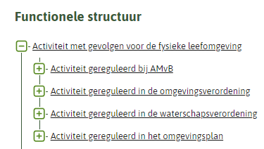Figuur 33De bovenste twee lagen van de hiërarchie van Activiteiten
Voor ieder individueel omgevingsdocument van een bepaald type moet er een zogenaamde tophaak zijn: de meest bovenliggende Activiteit van die Regeling. Dit is de derde laag in de hiërarchie van Activiteiten. Figuur 34 laat hiervan een voorbeeld zien voor een aantal omgevingsverordeningen.
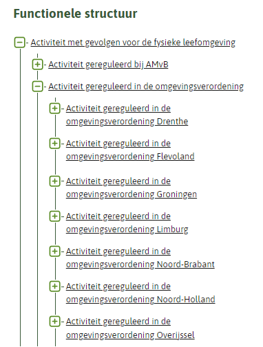Figuur 34De hiërarchie met de tophaken van de omgevingsverordeningen
In Figuur 34 is ook goed te zien dat de indeling primair is gericht op type omgevingsdocument.
Onder de tophaak, oftewel de meest bovenliggende Activiteit van de Regeling, zijn alle andere Activiteiten die bij die Regeling horen hiërarchisch ingedeeld. Dat is in Figuur 35 goed te zien.
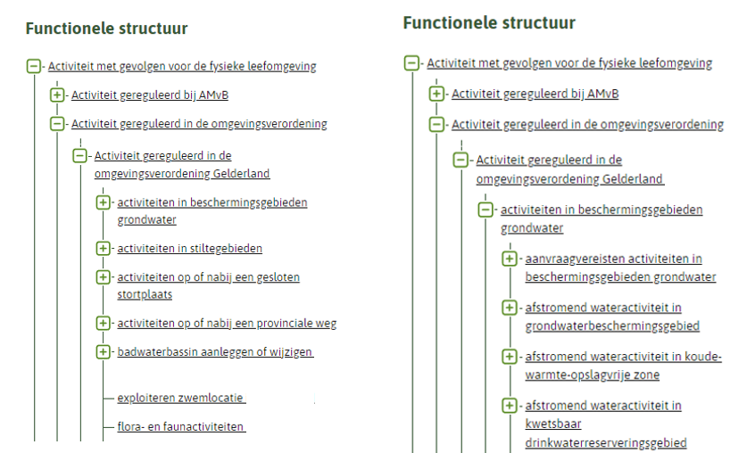Figuur 35Tophaak van een omgevingsverordening met daaronder de andere Activiteiten die bij die omgevingsverordening horen, links met de Activiteiten direct onder de tophaak, rechts met Activiteiten in twee niveaus
De tophaak van een Regeling is het haakje in de hiërarchie waar alle andere Activiteiten van de Regeling aanhangen. De tophaak moet altijd aanwezig zijn; als de tophaak-Activiteit verwijderd zou worden, zouden ook alle daaronder liggende Activiteiten verdwijnen. De tophaak komt alleen in het stelsel beschikbaar door de tophaak-Activiteit in het omgevingsdocument te annoteren. De Activiteit en de ActiviteitLocatieaanduiding zijn daardoor ook zichtbaar in de viewer. De tophaak-Activiteit heeft alleen een technische rol en geen juridische betekenis. Dat wijkt af van het algemene principe dat annotaties een (letterlijke) vertaling of duiding van de inhoud van de regel geven. Het is daarom aan te bevelen deze tophaak-Activiteit in een niet al te veel opvallend artikel te annoteren.
Let bij het omgevingsplan en de waterschapsverordening op: de tophaak is met de bruidsschat ingebracht. Zorg er voor dat, bij het vervangen/omzetten van bruidsschatregels naar eigen regels, de tophaak behouden blijft.
Ten behoeve van de consistentie geeft de standaard voorschriften voor de naam van de tophaak-Activiteit. Die voorschriften staan in paragraaf 7.6.4.2.
In paragraaf 7.6.5.1 is al aangegeven dat het attribuut bovenliggendeActiviteit zorgt voor de hiërarchische ordening in de functionele structuur. Iedere Activiteit verwijst met dat attribuut naar een hoger in de hiërarchie gelegen Activiteit. In paragraaf 7.6.4.3 is daarover bepaald dat, met uitzondering van de tophaak, Activiteiten met bovenliggendeActiviteit alleen mogen verwijzen naar hoger gelegen Activiteiten in dezelfde Regeling. Ze mogen dus niet verwijzen naar Activiteiten in een andere Regeling. Voor zover dat mogelijk zou zijn -niet ieder bevoegd gezag heeft immers meer dan één Regeling waarin Activiteiten geannoteerd kunnen worden- wijkt dat af van paragraaf 7.12.2.1. Wat in die paragraaf is bepaald, komt erop neer dat als OW-objecten verwijzen naar OW-objecten in een andere Regeling, dat alleen mag naar OW-objecten die horen bij een Regeling van hetzelfde bevoegd gezag. Voor alle duidelijkheid: bij omgevingsplan en omgevingsverordening, de omgevingsdocumenten waarbij de geconsolideerde Regeling bestaat uit een hoofdregeling en tijdelijk regelingdelen, mogen de Activiteiten die horen bij de hoofdregeling niet verwijzen naar Activiteiten in een tijdelijk regelingdeel. In deze zin wordt een tijdelijk regelingdeel, net als de hoofdregeling, beschouwd als afzonderlijke Regeling.
In paragraaf 7.6.4.3 is verder bepaald dat dat de tophaak-Activiteit van omgevingsverordening, waterschapsverordening en omgevingsplan juist moet verwijzen naar een Activiteit in een andere Regeling, namelijk naar de Activiteit gereguleerd in de omgevingsverordening/de waterschapsverordening/het omgevingsplan. Dit zijn Activiteiten van een andere Regeling, namelijk de Placeholder-Regeling. Dat is een Regeling van het Rijk, dus van een ander bevoegd gezag dan provincie, waterschap en gemeente. Daarmee is ook dit een afwijking van de bepaling in paragraaf 7.12.2.1 dat OW-objecten alleen mogen verwijzen naar een OW-object in een andere Regeling als dat een Regeling van hetzelfde bevoegd gezag is.
Uit de hiërarchische ordening van de Activiteiten in Figuur 35 valt af te leiden dat er een bovenliggendeActiviteit-relatie bestaat tussen ‘activiteiten in beschermingsgebieden grondwater’ en ‘Activiteit gereguleerd in de omgevingsverordening Gelderland’, en tussen ‘afstromend wateractiviteit in grondwaterbeschermingsgebied’ en ‘activiteiten in beschermingsgebieden grondwater’.
In de AMvB’s en de Omgevingsregeling zijn de Activiteiten op een bijzondere manier toegepast. Daarom wordt voor die omgevingsdocumenten feitelijk alleen geborgd dat de Activiteiten niet verwijzen naar Activiteiten in andere Regelingen dan de AMvB’s en de Omgevingsregeling.
7.6.6 Aanbevelingen voor Locatie, noemer en naam GIO bij annoteren met Activiteit
Een Activiteit wordt door middel van de ActiviteitLocatieaanduiding aan de bijbehorende Locatie of Locaties gekoppeld. De Locaties verwijzen steeds naar één Geometrie, dit kan een Surface (vlak) maar ook een MultiSurface (multivlak) zijn. Het koppelen van een Activiteit aan een Locatie of Locaties kan op drie manieren (waar hierna de term Locatie staat, worden ook Locaties bedoeld):
Activiteit koppelen aan de Locatie van de Juridische regel Bij deze methode verwijst de Activiteit naar de Locatie van de Juridische regel waaraan ook de Activiteit is gekoppeld. Activiteit en Juridische regel hebben dus precies dezelfde Locatie. Deze methode zal vaak worden gekozen bij een meer gebiedsgericht omgevingsdocument. Aanbevelingen voor het gebruik van Locatie, noemer en naam GIO:
de Locatie is een Gebied of een Gebiedengroep;
de Locatie heeft een noemer;
de noemer van de Locatie is hetzelfde als de naam van het GIO;
de naam van de Activiteit moet in de tekst van de regel herkenbaar zijn;
de noemer moet in de tekst van de regel voorkomen.
Activiteit koppelen aan de Locatie van een Gebiedsaanwijzing Bij deze methode is de Juridische regel geannoteerd met zowel een Activiteit als een Gebiedsaanwijzing. De Activiteit verwijst naar de Locatie van de Gebiedsaanwijzing. Deze methode zal vaak worden gekozen bij een sterk gebiedsgericht omgevingsdocument, bijvoorbeeld een omgevingsplan waarin veel met functies op de kaart wordt gewerkt. Aanbevelingen voor het gebruik van Locatie, noemer en naam GIO:
de Locatie is een Gebiedengroep;
de Locatie heeft een noemer;
de naam van de activiteit moet in de tekst van de regel herkenbaar zijn;
de naam van de Gebiedsaanwijzing moet in de tekst van de regel voorkomen;
de naam van de Gebiedsaanwijzing is hetzelfde als de naam van het GIO;
de noemer van de Locatie is hetzelfde als de naam van de Gebiedsaanwijzing.
Activiteit koppelen aan een eigen Locatie Bij deze methode verwijst de Activiteit naar een eigen Locatie. Deze methode zal vaak worden gekozen bij een sterk activiteitgericht omgevingsdocument en bij een omgevingsdocument waarin onderscheid wordt gemaakt tussen de Locatie van de Juridische regel enerzijds en de Locatie van de Activiteit. Dat laatste zal vaak zijn wanneer de Locatie van de volledige Juridische regel het Ambtsgebied is en er een specifieke Locatie is waar voor de activiteit bijvoorbeeld een verbod of een vergunningplicht geldt. Aanbevelingen voor het gebruik van Locatie, noemer en naam GIO:
de Locatie is een Gebiedengroep;
de Locatie heeft een noemer;
de noemer van de Locatie is de naam van de Activiteit, aangevuld met de activiteitregelkwalificatie;
de noemer van de Locatie is hetzelfde als de naam van het GIO;
de noemer moet in de tekst van de regel voorkomen.
7.7 Objecttype Gebiedsaanwijzing
7.7.1 Toelichting op de toepassing
In omgevingsdocumenten worden gebieden benoemd waarover regels worden gesteld respectievelijk beleids- of uitvoeringsaspecten worden vastgelegd. Met het objecttype Gebiedsaanwijzing kunnen die gebieden op een kaart worden weergeven, op een zodanige manier dat duidelijk is waar de regel of het beleids- of uitvoeringsaspect over gaat. Ook maakt Gebiedsaanwijzing het mogelijk om in een viewer een selectie te maken van bepaalde gebieden.
Het objecttype Gebiedsaanwijzing is een generiek objecttype. Het is generiek gemodelleerd om voldoende flexibiliteit te bieden voor toekomstige ontwikkelingen. Het wordt specifiek gemaakt door het attribuut type, dat gekozen wordt uit een limitatieve waardelijst. Nieuwe typen gebieden kunnen worden aangewezen doordat (na een wijzigingsproces) nieuwe waarden aan de waardelijst voor type worden toegevoegd; het is dus niet nodig om extra objecttypen aan het informatiemodel toe te voegen.
De waardelijst voor de Gebiedsaanwijzingtypen bevat nu 19 waarden. Ze zijn onder te verdelen in sectorale en niet-sectorale typen, zoals is aangegeven in Tabel 5.
Tabel 5De Gebiedsaanwijzingtypen, onderverdeeld in sectoraal en niet-sectoraal
Sectorale Gebiedsaanwijzingtypen
Niet-sectorale Gebiedsaanwijzingtypen
Bodem
Landschap
Beperkingengebied
Bouw
Leiding
Functie
Defensie
Lucht
Ruimtelijk gebruik
Energievoorziening
Mijnbouw
Erfgoed
Natuur
Externe veiligheid
Recreatie
Geluid
Verkeer
Geur
Water en watersysteem
7.7.1.1 Onderscheid tussen sectorale en niet-sectorale Gebiedsaanwijzingtypen
Met de sectorale Gebiedsaanwijzingtypen wordt aangegeven voor welk aspect van de fysieke leefomgeving een gebied wordt aangewezen. Ze zijn bedoeld om gebieden waarover regels respectievelijk beleidsuitspraken met een sterk sectoraal karakter worden gesteld c.q. gedaan, in een viewer op een kaartbeeld weer te kunnen geven en er zoek- en selecteeracties mee te kunnen doen.
De drie typen Functie, Beperkingengebied en Ruimtelijk gebruik zijn niet bedoeld om een gebied voor een aspect van de fysieke leefomgeving aan te wijzen, maar hebben een ander karakter. De Gebiedsaanwijzing van het type Functie is bedoeld voor de situatie waarin het bevoegd gezag er voor kiest om de evenwichtige toedeling van functies aan locaties niet alleen als abstract criterium te hanteren maar om het resultaat daarvan ook (geheel of gedeeltelijk) op een kaart weer te geven, vergelijkbaar met het in het bestemmingsplan aanwijzen van de bestemming van gronden op grond van de Wet ruimtelijke ordening. Dit type kan alleen in het omgevingsplan en de omgevingsverordening toegepast worden. Het Gebiedsaanwijzingtype Beperkingengebied is specifiek bedoeld voor het aanwijzen van beperkingengebieden: gebieden waar regels gelden over activiteiten die gevolgen hebben of kunnen hebben voor een bepaald, in dat gebied aanwezig, werk of object. Dit type kan alleen toegepast worden in omgevingsdocumenten waarvan in de Omgevingswet is bepaald dat ze beperkingengebieden kunnen aanwijzen en/of regels over beperkingengebiedactiviteiten kunnen bevatten. Het Gebiedsaanwijzingtype Ruimtelijk gebruik is enerzijds bedoeld om provincies in staat te stellen om hun niet-sectorale regels in een viewer op een kaartbeeld weer te geven. Anderzijds sluit het aan bij de door de VNG ontwikkelde staalkaarten voor het omgevingsplan en stelt het gemeenten in staat om tot een ordening van (combinaties van) activiteiten te komen, als alternatief voor het werken met functies.
7.7.1.2 Gebruik van Gebiedsaanwijzingtypen per omgevingsdocument
Niet ieder type Gebiedsaanwijzing kan in ieder omgevingsdocument worden gebruikt, zie bijvoorbeeld wat hiervoor al is aangegeven over het type Beperkingengebied. Daarnaast zijn er Gebiedsaanwijzingtypen waarvan het gebruik in het ene omgevingsdocument meer voor de hand ligt dan in het andere. Provincies worden geacht terughoudend te zijn met het toedelen van functies. Wanneer Rijk en provincies zelf gebiedsgerichte regels stellen, gebruiken ze daarvoor primair de sectorale Gebiedsaanwijzingtypen. Dat geldt ook voor de waterschappen. Omgekeerd ligt het in de rede dat gemeenten in het omgevingsplan terughoudend zijn bij het gebruik van de sectorale Gebiedsaanwijzingtypen. Hen wordt aangeraden voor dat instrument primair gebruik te maken van de Gebiedsaanwijzingtypen Functie en Ruimtelijk gebruik. Tabel 6 geeft inzicht in het beoogde gebruik van de Gebiedsaanwijzingtypen.
Tabel 6Gebruik van de Gebiedsaanwijzingtypen in de verschillende omgevingsdocumenten
Omgevingsdocument/ soort regeling
→
AMvB/ MR
Omgevingsverordening
Waterschapsverordening
Omgevingsplan
Omgevingsvisie
Projectbesluit vrijetekstdeel
Omgevingsplanregels uit een projectbesluit[35] Dit zijn de regels in het tijdelijk regelingdeel waarmee het projectbesluit een omgevingsplan wijzigt
Voorbeschermingsregels omgevingsverordening
Voorbeschermingsregels omgevingsplan
Programma
Natura 2000-besluiten
Gebiedsaanwijzingtype
↓
Beperkingengebied
√
√
√
√
X
X
√
√
√
X
X
Bodem
√
√
T
T
√
√
T
√
T
√
X
Bouw
X
X
X
√
X
X
√
X
√
X
X
Defensie
√
√
X
T
√
√
T
√
T
√
X
Energievoorziening
√
√
T
T
√
√
T
√
T
√
X
Erfgoed
√
√
T
T
√
√
T
√
T
√
X
Externe veiligheid
√
√
X
√
√
√
√
√
√
√
X
Functie
X
T
X
√
X
X
√
T
√
X
X
Geluid
√
√
T
√
√
√
√
√
√
√
X
Geur
√
√
X
√
√
√
√
√
√
√
X
Landschap
√
√
T
T
√
√
T
√
T
√
X
Leiding
√
√
T
T
√
√
T
√
T
√
X
Lucht
√
√
X
T
√
√
T
√
T
√
X
Mijnbouw
√
√
X
T
√
√
T
√
T
√
X
Natuur
√
√
T
√
√
√
√
√
√
√
√
Recreatie
√
√
X
T
√
√
T
√
T
√
X
Ruimtelijk gebruik
√
√
X
√
√
√
√
√
√
√
X
Verkeer
√
√
T
T
√
√
T
√
T
√
X
Water en watersysteem
√
√
√
T
√
√
T
√
T
√
X
Tabel 7Legenda
√
Kan gebruikt worden in dit omgevingsdocument
T
Terughoudend gebruik
X
Kan niet gebruikt worden in dit omgevingsdocument
7.7.1.3 Combinatie van Gebiedsaanwijzing met objecttypen voor tekst
Het objecttype Gebiedsaanwijzing worden altijd toegepast in combinatie met een locatie en tekst. In het geval van omgevingsdocumenten met Vrijetekststructuur wordt de Gebiedsaanwijzing gecombineerd met het tekst-object Tekstdeel. In omgevingsdocumenten met Vrijetekststructuur kan geannoteerd worden op het niveau van het element dat inhoud bevat (Divisietekst) én op het niveau van het structuurelement (Divisie). Het annoteren met het objecttype Gebiedsaanwijzing ligt het meeste voor de hand op het niveau van het element dat inhoud bevat: Divisietekst. Het annoteren van Locatie bij een Tekstdeel is optioneel. Let op dat het niet annoteren van Locatie bij een Tekstdeel tot gevolg heeft dat het ook niet mogelijk is om dat Tekstdeel te annoteren met Gebiedsaanwijzing. Bij omgevingsdocumenten met Artikelstructuur wordt de Gebiedsaanwijzing gecombineerd met het tekst-object Juridische regel. De Gebiedsaanwijzing kan gecombineerd worden met alle typen Juridische regel. Dat maakt het mogelijk om met een Gebiedsaanwijzing een gebied aan te wijzen waarvoor een rechtstreeks werkende regel (dus een Juridische regel van het type Regel voor iedereen) wordt gesteld. Ook kan Gebiedsaanwijzing worden gebruikt om duidelijk te maken dat een instructieregel over een bepaald type gebied gaat waarbij dat gebied ook in de Juridische regel van de instructieregel wordt benoemd. Tot slot is het ook mogelijk om een omgevingswaarderegel, naast de annotatie met Omgevingswaarde, ook te annoteren met een Gebiedsaanwijzing.
7.7.1.4 Weergave op de kaart
Op voorhand is niet te zeggen hoeveel en welke specifieke vormen van een bepaald Gebiedsaanwijzingtype in de verschillende omgevingsdocumenten begrensd zullen worden, het is mogelijk dat het er veel verschillende zullen zijn. Er is geen symbolisatie (kleur, arcering, lijnstijl) voorhanden die een grote hoeveelheid verschillende specifieke vormen van een type kan weergeven op een manier die voor het menselijk oog voldoende onderscheidend is. Daarom heeft niet iedere individuele Gebiedsaanwijzing een eigen symbolisatie, maar is er een (standaard)symbolisatie per groep bij elkaar horende Gebiedsaanwijzingen van een bepaald type. Daarvoor heeft Gebiedsaanwijzing het attribuut groep en is er voor ieder Gebiedsaanwijzingtype een (limitatieve) waardelijst voor de groep. Het bevoegd gezag kiest een eigen naam voor de individuele Gebiedsaanwijzing van een bepaald type en kiest voor het attribuut groep uit de waardelijst de waarde die het meest overeenkomt met de bedoeling van die Gebiedsaanwijzing. Hierdoor kunnen de Locaties van alle specifieke vormen van dat type Gebiedsaanwijzing in een (interactieve) viewer met de standaardweergave worden weergegeven op een kaart. Een voorbeeld van het Gebiedsaanwijzingtype Functie om het gebruik van Gebiedsaanwijzing te verduidelijken: De functie supermarkt (naam) hoort tot de functiegroep detailhandel (groep) van het Gebiedsaanwijzingtype Functie (type).
7.7.2 Definitie
Gebiedsaanwijzing is het objecttype voor het Lichaam van de Regeling van omgevingsdocumenten dat machineleesbaar maakt dat een Juridische regel of een Tekstdeel en de bijbehorende Locatie(s) een specifiek type gebied aanwijzen of over een specifiek type gebied gaan.
7.7.3 Doel
Doel van het generieke objecttype Gebiedsaanwijzing is het bieden van modelmatige flexibiliteit waardoor het toevoegen van nieuwe typen mogelijk is zonder modelwijziging.
Doel van de verschillende typen Gebiedsaanwijzing is:
machineleesbaar vastleggen dat een Juridische regel of Tekstdeel en de bijbehorende Locatie(s) gaan over een specifiek type gebied;
zodanig op een kaart weergeven van de Locaties waar de regels of het beleid over dat type gebied gelden, dat herkenbaar is over welk aspect ze gaan en er een legenda gemaakt kan worden;
kunnen filteren in een viewer of op een kaart.
7.7.4 Norm
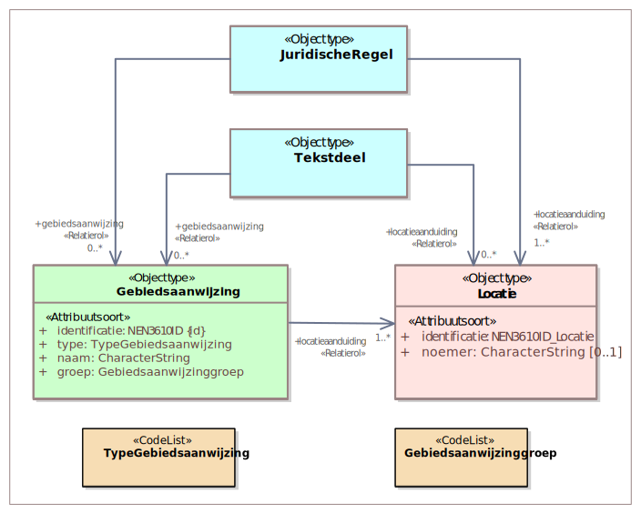Figuur 36Uitsnede uit IMOW-diagram voor objecttype Gebiedsaanwijzing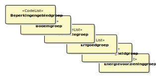Figuur 37Groepen bij een aantal van de verschillende typen Gebiedsaanwijzing
Gebiedsaanwijzing kent de volgende attributen:
identificatie: de unieke identificatie waaronder elk object van dit type bekend is. Identificatie conform datatype NEN3610-ID. Verplicht attribuut. Komt 1 keer voor. De identificatie moet de code (uit de STOP-waardelijst voor gemeente, waterschap, provincie of ministerie) bevatten van het bevoegd gezag dat het besluit neemt waarmee de Regeling wordt ingesteld of gewijzigd.
type: het type Gebiedsaanwijzing. Te kiezen uit de limitatieve waardelijst ‘TypeGebiedsaanwijzing’. Verplicht attribuut. Komt 1 keer voor.
naam: de naam van de specifieke vorm van een bepaald type Gebiedsaanwijzing. Het bevoegd gezag is vrij in de keuze van de naam. Verplicht attribuut. Komt 1 keer voor.
groep: de categorie waartoe de specifieke vorm van een bepaald type Gebiedsaanwijzing behoort; attribuut dat de koppeling legt naar de standaardsymbolisatie van die categorie van de Gebiedsaanwijzing. Te kiezen uit de voor het betreffende type Gebiedsaanwijzing van toepassing zijnde limitatieve waardelijst ‘[TypeGebiedsaanwijzing]groep’ (waarbij op de plaats van [TypeGebiedsaanwijzing] het betreffende type Gebiedsaanwijzing wordt ingevuld). Verplicht attribuut. Komt 1 keer voor.
locatieaanduiding: de verwijzing van een specifieke vorm van een bepaald type Gebiedsaanwijzing naar de bijbehorende Locatie door middel van de identificatie van; attribuut waarmee de Locatie wordt aangeduid waar deze annotatie Gebiedsaanwijzing van toepassing is. Verplicht attribuut. Komt ten minste 1 keer voor. Gebiedsaanwijzing heeft één of meer Locaties en één of meer locatieaanduiding-relaties met Locatie.
Gebiedsaanwijzing kent geen constraints.
7.7.5 Toelichting op de norm
type: Gebiedsaanwijzing is een generiek objecttype dat gespecificeerd wordt naar type. Het type wordt vastgelegd met het attribuut type. De typen die gebruikt kunnen worden zijn opgenomen in de limitatieve waardelijst ‘TypeGebiedsaanwijzing’. Voorbeelden zijn: Beperkingengebied, Externe veiligheid en Functie.
naam: door het bevoegd gezag zelf te kiezen, er is geen waardelijst voor de naam van de gebiedsaanwijzingen. Het gaat hier om de naam van een specifiek voorkomen van een bepaald type gebiedsaanwijzing, bijvoorbeeld ‘Centrumgebied’ als voorkomen van het Gebiedsaanwijzingtype Functie of ‘Kantoorlocatie’ als voorkomen van het Gebiedsaanwijzingtype Ruimtelijk gebruik.
groep: om een groot aantal verschillende gebiedsaanwijzingen van een bepaald type op een kaartbeeld te kunnen weergeven op een manier die voor het menselijk oog voldoende onderscheidend is, wordt ieder type Gebiedsaanwijzing gebundeld in groepen. De groep vormt het kenmerk waarop de symbolisatie (kleur, arcering, lijnstijl) van de standaardweergave wordt georganiseerd. Ieder type Gebiedsaanwijzing heeft een eigen, limitatieve, waardelijst voor de groepen. Afhankelijk van het type wordt de bijbehorende waardelijst gekozen. Zie hiervoor ook de uitgebreidere toelichting in paragraaf 7.7.1.4.
locatieaanduiding: attribuut dat vastlegt dat deze Locatie de locatie is waar deze specifieke vorm van een bepaald type Gebiedsaanwijzing van toepassing is. Bij een specifieke vorm van een bepaald Gebiedsaanwijzingtype horen één of meer Locaties; per Locatie is er een locatieaanduiding. Uitgangspunt is dat het objecttype Gebiedsaanwijzing wordt gebruikt voor het aanwijzen van gebieden. In principe verwijst de locatieaanduiding van een Gebiedsaanwijzing altijd naar Locaties van de verschijningsvorm Gebied of Gebiedengroep (of eventueel Ambtsgebied). Er zijn echter gevallen waarin het wenselijk kan zijn om een Gebiedsaanwijzing te gebruiken voor het herkenbaar weergeven van lijnen. Een voorbeeld daarvan is het gebruik van de Gebiedsaanwijzing Bouw om in het omgevingsplan rooilijnen weer te geven. Het gebruik van het object Gebiedsaanwijzing in combinatie met punten ligt minder voor de hand, maar wordt niet uitgesloten.
Let ook op de regels voor het verwijzen van een OW-object naar een ander OW-object in paragraaf 7.12.2.1, met name over het verwijzen naar een OW-object behorend bij een andere Regeling en over het verwijzen van en naar een OW-object in een tijdelijk regelingdeel.
7.7.6 Aanbevelingen voor Locatie, noemer en naam GIO bij annoteren met Gebiedsaanwijzing
Een Gebiedsaanwijzing wordt aan de bijbehorende Locatie gekoppeld. De locaties verwijzen steeds naar één Geometrie, dit kan een Surface (vlak) maar ook een MultiSurface (multivlak) zijn. Aanbevelingen voor het gebruik van Locatie, noemer en naam GIO:
de Locatie is een Gebiedengroep;
de Locatie heeft een noemer;
de naam van de Gebiedsaanwijzing is hetzelfde als de naam van het GIO;
de naam van de Gebiedsaanwijzing (en daarmee ook van het GIO) moet in de tekst van de regel voorkomen;
de noemer van de Locatie is hetzelfde als de naam van de Gebiedsaanwijzing.
7.7.7 De typen Gebiedsaanwijzing
In de Natura 2000-besluiten mogen uitsluitend de typen Gebiedsaanwijzing worden gebruikt die in deze paragraaf zijn opgenomen.
7.7.7.1 Natuur
7.7.7.1.1 Toelichting op de toepassing
De Gebiedsaanwijzing van het type Natuur wordt gebruikt voor gebieden waar specifieke regels respectievelijk beleid voor de bescherming van de natuur gelden. De Omgevingswet verplicht ertoe om bepaalde gebieden en landschappen aan te wijzen. Het gaat dan bijvoorbeeld om Natura 2000-gebieden, gebieden behorend tot het natuurnetwerk Nederland, nationale parken en bijzondere nationale en provinciale natuurgebieden. Doelen van die aanwijzingen zijn het behoud of herstel van dier- en plantensoorten, van hun biotopen en (natuurlijke) habitats en de preventie en beheersing van de introductie en verspreiding van invasieve uitheemse soorten. Deze gebieden zullen worden aangewezen bij specifieke aanwijzingsbesluiten respectievelijk bij omgevingsverordening. In de omgevingsvisies en programma’s van het Rijk en de provincies zullen de beleidsuitgangspunten en doelstellingen voor de aanwijzing van die gebieden beschreven worden. Ook voor andere gebieden zal, ter bescherming van de natuur, beleid geformuleerd worden en regels gesteld worden. Dat doen in ieder geval Rijk en provincie. Ook gemeenten zullen in omgevingsplan, omgevingsvisie en andere beleidsmatige instrumenten regels en beleid over natuur opnemen. Voor de beleidsmatige instrumenten kunnen zij gebruik maken van de Gebiedsaanwijzing van het type Natuur. Voor het omgevingsplan is het uitgangspunt dat zij bij voorkeur gebruik maken van de Gebiedsaanwijzing van het type Functie (en daarvan de relevante groep kiezen).
7.7.7.1.2 Definitie
De Gebiedsaanwijzing van het type Natuur is het objecttype dat machineleesbaar maakt dat een Juridische regel of een Tekstdeel en de bijbehorende Locatie(s) een gebied aanwijzen waar de regels of het beleid gericht zijn op de bescherming van natuur en landschap.
7.8 Objecttype SymbolisatieItem
7.8.1 Toelichting op de toepassing
Zoals in paragraaf 3.6 is beschreven, heeft het bevoegd gezag twee methoden om zelf invloed uit te oefenen op de weergave van objecten, Locaties en waarden op een kaart. De eerste methode bestaat uit het kiezen van een eigen, specifieke symbolisatie voor een aantal objecttypen. Het bevoegd gezag kan de symbolisatie zelf kiezen uit de lijst van gestandaardiseerde symboolcodes, te vinden in de symbolenbibliotheek. Daarvoor wordt het objecttype SymbolisatieItem gebruikt.
Met SymbolisatieItem kan het bevoegd gezag een eigen, specifieke symbolisatie geven aan ActiviteitLocatieaanduiding, Normwaarde en (de verschillende typen) Gebiedsaanwijzing.
De tweede methode, het zelf samenstellen van kaarten en kaartlagen, is beschreven in de paragrafen 7.9 en 7.10.
7.8.2 Definitie
SymbolisatieItem is het objecttype waarmee een bevoegd gezag zelf de symbolisatie van domeinspecifieke objecten kan bepalen, die daarmee voorrang krijgt boven de standaardsymbolisatie.
7.8.3 Doel
Doel van het objecttype SymbolisatieItem is om het bevoegd gezag de mogelijkheid te bieden om zelf de symbolisatie van objecten te bepalen.
7.8.4 Norm
Figuur 38Uitsnede uit IMOW-diagram voor objecttype SymbolisatieItem
SymbolisatieItem kent de volgende attributen:
symboolcode: een waarde uit de lijst van gestandaardiseerde symboolcodes, te vinden in de symbolenbibliotheek. Verplicht attribuut. Komt 1 keer voor.
activiteitLocatieaanduidingSymbolisatie: de Activiteitlocatieaanduiding die weergegeven dient te worden met de symbolisatie die door het bevoegd gezag is bepaald en afwijkt van de standaardsymbolisatie. Optioneel attribuut. Komt zo vaak voor als gewenst.
gebiedsaanwijzingSymbolisatie: de Gebiedsaanwijzing die weergegeven dient te worden met de stijl behorende bij de symboolcode. Optioneel attribuut. Komt zo vaak voor als gewenst.
normwaardeSymbolisatie: de normwaarde die weergegeven dient te worden met de stijl behorende bij de symboolcode. Optioneel attribuut. Komt zo vaak voor als gewenst.
SymbolisatieItem kent geen constraints.
Werkafspraak
Tot anders is bepaald in een volgende versie van dit toepassingsprofiel dan wel in een nader bericht van de beheerder van de TPOD-Standaard geldt de volgende werkafspraak:
Gebruik het objecttype SymbolisatieItem niet.
7.8.5 Toelichting op de norm
symboolcode: het attribuut waarmee de gekozen symboolcode wordt vastgelegd. Het bevoegd gezag kiest de symboolcode uit de symbolenbibliotheek die hoort bij de symbolisatie die overeenkomt met de wijze waarop het bevoegd gezag de objecten wil weergeven. Wanneer het object SymbolisatieItem wordt gebruikt, is dat het object dat voor de weergave zorgt. Het gaat dan dus boven de weergave-werking van het attribuut groep.
activiteitLocatieaanduidingSymbolisatie, gebiedsaanwijzingSymbolisatie, normwaardeSymbolisatie: de attributen die de verwijzing bevatten van het SymbolisatieItem naar de identificatie van een specifieke ActiviteitLocatieaanduiding, Gebiedsaanwijzing of Normwaarde. Dit attribuut geeft aan welke van die objecten weergegeven wordt met de symboolcode uit het SymbolisatieItem. Voor de volledigheid wordt opgemerkt dat de ActiviteitLocatieaanduidingen, Gebiedsaanwijzingen Normwaarden waarnaar niet verwezen wordt met SymbolisatieItem, worden weergegeven met de standaardweergave van de groep die bij die objecten hoort. Met activiteitLocatieaanduidingSymbolisatie is het mogelijk om de activiteiten ‘het exploiteren van een discotheek’ en ‘het exploiteren van daghoreca’ ieder op een eigen manier weer te geven in plaats van met de standaardweergave die hoort bij de Activiteitengroep ‘exploitatieactiviteit horeca’. Ook is het hiermee mogelijk om de symbolisatie af te stemmen op de ‘instantie’ van de activiteit, oftewel de activiteitregelkwalificatie. De Locaties waar voor een bepaalde activiteit een vergunningplicht geldt worden dan bijvoorbeeld in een rode kleur weergegeven en de locaties waar die activiteit zonder vergunning of melding is toegestaan worden in een groene kleur weergegeven. Met gebiedsaanwijzingSymbolisatie kunnen specifieke voorkomens van een type Gebiedsaanwijzing die tot dezelfde groep behoren, ieder op een manier worden weergegeven in plaats van met de standaardweergave die hoort bij de betreffende groep. Met normwaardeSymbolisatie is het bijvoorbeeld mogelijk om van een omgevingsnorm of omgevingswaarde alle waarden die liggen tussen 0 en 5 met een rode kleur weer te geven en alle waarden die liggen tussen 6 en 10 met een blauwe kleur.
Toelichting op werkafspraak
Geconstateerd is dat het objecttype SymbolisatieItem niet goed gemodelleerd is. Het heeft geen identificatie waardoor het niet op de gebruikelijke wijze gewijzigd kan worden. Het is mogelijk om meer dan 1 SymbolisatieItem aan een object te koppelen. In dat geval is niet gedefinieerd welke symbolisatie gebruikt moet worden voor de weergave van het object. Bovendien is de methode van symbolisatie van OW-objecten conceptueel anders dan de symbolisatie van GIO’s waardoor symbolisatie twee keer én net anders moet worden uitgewisseld.
Er wordt een verbeterde methode voor de eigen symbolisatie ontwikkeld. Om te voorkomen dat als dat gereed is, alle omgevingsdocumenten waarin SymbolisatieItem is gebruikt moeten worden aangepast of gemigreerd, ook als er geen inhoudelijke reden is om het omgevingsdocument nog te wijzigen, is het wenselijk dat het objecttype SymbolisatieItem niet wordt toegepast.
Daarom geldt, totdat in een volgende versie van dit toepassingsprofiel dan wel in een nader bericht van de beheerder van de TPOD-Standaard anders is bepaald, de werkafspraak ‘Gebruik het objecttype SymbolisatieItem niet’.
7.9 Objecttype Kaart
7.9.1 Toelichting op de toepassing
Zoals in paragraaf 3.6 is beschreven, heeft het bevoegd gezag twee methoden om zelf invloed uit te oefenen op de weergave van objecten, Locaties en waarden op een kaart. De eerste methode, die bestaat uit het kiezen van een eigen symbolisatie met behulp van het objecttype SymbolisatieItem, is beschreven in paragraaf 7.8.
De tweede methode die bevoegde gezagen ter beschikking staat, is het zelf samenstellen van kaarten en kaartlagen. Met deze methode kan het bevoegd gezag zelf aangeven dat bepaalde informatie, of een set van informatie, op een afzonderlijke kaart of kaartlaag moet worden weergegeven. Die tweede methode wordt beschreven in deze en in de volgende paragraaf.
Het objecttype Kaart kan gebruikt worden om vast te leggen dat een Juridische regel of een Tekstdeel wordt weergegeven op een specifieke kaart. Daarmee is het mogelijk om een kaart te genereren waarop alle Locaties en OW-objecten worden weergegeven die horen bij Juridische regels respectievelijk Tekstdelen die met het objecttype Kaart zijn geannoteerd.
Deze eigen weergavemogelijkheden gelden alleen voor DSO-LV en een eventuele eigen viewer van het bevoegd gezag, niet op overheid.nl.
7.9.2 Definitie
Het objecttype Kaart is het objecttype waarmee een bevoegd gezag aan kan geven dat bij een specifieke Juridische regel respectievelijk een specifiek Tekstdeel de domeinspecifieke OW-objecten moeten worden weergegeven op een afzonderlijke kaart.
7.9.3 Doel
Doel van het objecttype Kaart is het kunnen genereren van een kaart waarop de Locaties en OW-objecten worden weergegeven die horen bij één of meer bepaalde Juridische regels of Tekstdelen zodat die in samenhang kunnen worden getoond.
7.9.4 Norm
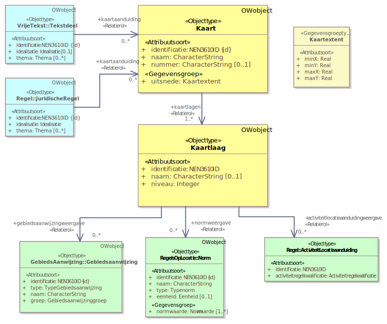Figuur 39Uitsnede uit IMOW-diagram voor objecttype Kaart
Kaart kent de volgende attributen:
identificatie: de unieke identificatie waaronder elk object van dit type bekend is. Identificatie conform datatype NEN3610-ID. Verplicht attribuut. Komt 1 keer voor. De identificatie moet de code (uit de STOP-waardelijst voor gemeente, waterschap, provincie of ministerie) bevatten van het bevoegd gezag dat het besluit neemt waarmee de Regeling wordt ingesteld of gewijzigd.
naam: de naam van de kaart. Het bevoegd gezag is vrij in de keuze van de naam. Verplicht attribuut. Komt 1 keer voor.
nummer: het nummer van de kaart. Door het bevoegd gezag te kiezen. Optioneel attribuut. Komt 0 of 1 keer voor.
uitsnede: de ligging van de kaart. Verplicht attribuut. Komt 1 keer voor. Het attribuut uitsnede wordt ingevuld met de gegevensgroep Kaartextent die de volgende attributen kent:
minX: de laagste X-coördinaat, bepaalt de linkergrens van de kaart. Verplicht attribuut. Komt 1 keer voor.
minY: de laagste Y-coördinaat, bepaalt de ondergrens van de kaart. Verplicht attribuut. Komt 1 keer voor.
maxX: de hoogste X-coördinaat, bepaalt de rechtergrens van de kaart. Verplicht attribuut. Komt 1 keer voor.
maxY: de hoogste Y-coördinaat, bepaalt de bovengrens van de kaart. Verplicht attribuut. Komt 1 keer voor.
kaartlagen: de verwijzing van een specifieke Kaart naar (de identificatie van) de kaartlagen die deze kaart vormen. Verplicht attribuut. Komt 1 of meerdere keren voor.
Wanneer Kaart wordt gebruikt, moet aan de bijbehorende Juridische regel dan wel het bijbehorende Tekstdeel het attribuut kaartaanduiding worden toegevoegd, dat aangeeft op welke Kaart de Juridische regel dan wel het Tekstdeel wordt weergegeven.
Kaart kent geen waardelijsten en geen constraints.
7.9.5 Toelichting op de norm
kaartuitsnede: met het attribuut kaartuitsnede kan het bevoegd gezag de exacte grenzen van een specifieke kaart aangeven. DSO-LV kan dit gebruiken in de weergave.
kaartlagen: het attribuut dat de verwijzing bevat van een specifieke kaart naar de identificatie van de afzonderlijke kaartlagen die de kaart opbouwen. De volgorde waarmee verwezen wordt naar de afzonderlijke kaartlagen heeft geen invloed aangezien de opbouw van de kaart bepaald wordt door het attribuut niveau van het object Kaartlaag.
Let ook op de regels voor het verwijzen van een OW-object naar een ander OW-object in paragraaf 7.12.2.1, met name over het verwijzen naar een OW-object behorend bij een andere Regeling en over het verwijzen van en naar een OW-object in een tijdelijk regelingdeel.
7.10 Objecttype Kaartlaag
7.10.1 Toelichting op de toepassing
Op een kaart kan veel informatie voorkomen. Wanneer die informatie in verschillende kaartlagen wordt vastgelegd is het mogelijk om alle informatie van de kaart tegelijk weer te geven, om de informatie van één van de kaartlagen weer te geven en om de informatie van een deel van de kaartlagen in samenhang weer te geven.
7.10.2 Definitie
Kaartlaag is het objecttype waarmee de lagen worden gedefinieerd waaruit een kaart wordt opgebouwd.
7.10.3 Doel
Doel van het objecttype Kaartlaag is om het mogelijk te maken dat een kaart kan worden opgebouwd uit verschillende, door het bevoegd gezag te bepalen lagen en dat geselecteerd kan worden welke informatie van een kaart op die kaartlaag wordt weergegeven.
7.10.4 Norm
Figuur 40Uitsnede uit IMOW-diagram voor objecttype Kaartlaag
Kaartlaag kent de volgende attributen:
identificatie: de unieke identificatie waaronder elk object van dit type bekend is. Identificatie conform datatype NEN3610-ID. Verplicht attribuut. Komt 1 keer voor. De identificatie moet de code (uit de STOP-waardelijst voor gemeente, waterschap, provincie of ministerie) bevatten van het bevoegd gezag dat het besluit neemt waarmee de Regeling wordt ingesteld of gewijzigd.
naam: de naam van de Kaartlaag. Het bevoegd gezag is vrij in de keuze van de naam. Optioneel attribuut. Komt 0 of 1 keer voor.
niveau: de plaats van een specifieke Kaartlaag in de volgorde van Kaartlagen waarmee een Kaart moet worden opgebouwd. Verplicht attribuut. Komt 1 keer voor. Wordt vastgelegd door middel van een positief geheel getal.
gebiedsaanwijzingweergave: de verwijzing van een specifieke Kaartlaag naar (de identificatie van) een Gebiedsaanwijzing die op de kaartlaag weergegeven dient te worden. Optioneel attribuut. Komt zo vaak voor als gewenst.
normweergave: de verwijzing van een specifieke Kaartlaag naar (de identificatie van) een Omgevingsnorm of Omgevingswaarde die op de kaartlaag weergegeven dient te worden. Optioneel attribuut. Komt zo vaak voor als gewenst.
activiteitlocatieweergave: de verwijzing van een specifieke Kaartlaag naar (de identificatie van) een ActiviteitLocatieaanduiding die op de kaartlaag weergegeven dient te worden. Optioneel attribuut. Komt zo vaak voor als gewenst.
Kaartlaag kent geen waardelijsten en geen constraints.
7.10.5 Toelichting op de norm
niveau: het niveau bepaalt de volgorde waarin de kaartlagen worden opgebouwd. Niveau 1 is de onderste Kaartlaag, de hier op volgende kaartlagen worden daarboven geprojecteerd.
activiteitlocatieweergave, gebiedsaanwijzingweergave, normweergave: de attributen die de verwijzing bevatten van de Kaartlaag naar de identificatie van een specifieke ActiviteitLocatieaanduiding, Gebiedsaanwijzing, Omgevingswaarde of Omgevingsnorm. Dit attribuut geeft aan welke van die objecten moet worden weergegeven op een bepaalde kaartlaag. Wanneer aan de specifieke ActiviteitLocatieaanduiding, Gebiedsaanwijzing, Omgevingswaarde of Omgevingsnorm het object SymbolisatieItem is gekoppeld, wordt het object op de kaartlaag weergegeven met de door het bevoegd gezag gekozen symbolisatie. Wanneer er geen object SymbolisatieItem is gekoppeld, wordt het object op de kaartlaag weergegeven met de standaardweergave van de groep die bij het specifieke object is aangegeven.
Let ook op de regels voor het verwijzen van een OW-object naar een ander OW-object in paragraaf 7.12.2.1, met name over het verwijzen naar een OW-object behorend bij een andere Regeling en over het verwijzen van en naar een OW-object in een tijdelijk regelingdeel.
7.11 Objecttype Regelingsgebied
7.11.1 Toelichting op de toepassing
Het objecttype Regelingsgebied is bedoeld om het volledige gebied waar de Regeling over gaat aan te geven. Dat volledige gebied wordt gevormd door de optelling van alle Locaties van de Juridische regels of Tekstdelen die in de Regeling voorkomen. Het object Regelingsgebied bestaat uit één Locatie die de buitengrens of buitengrenzen van de optelling van alle Locaties vormt. Wanneer het Regelingsgebied niet één aaneengesloten geheel vormt, kan de Locatie uiteraard bestaan uit de samenvoeging van twee of meer Gebieden tot een Gebiedengroep. Aan de hand van dit object kan DSO-LV bepalen welke regelingen op welke gebieden van toepassing zijn. Het objecttype Regelingsgebied is noodzakelijk voor DSO-LV om het omgevingsdocument te kunnen tonen. Door dit object kan de DSO-viewer de begrenzing laten zien van het volledige gebied waar de Regeling over gaat én kan die viewer bij een klik op de kaart laten zien welke omgevingsdocumenten op die plek van toepassing zijn.
Het bevoegd gezag dient per Regeling het Regelingsgebied aan te leveren. In principe is dit een eenmalige aanlevering. Voor omgevingsplan en waterschapsverordening zal het Regelingsgebied samen met de bruidsschat door het Rijk worden aangeleverd en hoeven gemeenten en waterschappen dat niet zelf te doen. Mocht gedurende de levensloop van de Regeling het Regelingsgebied wijzigen, dan moet het bevoegd gezag uiteraard de Locatie behorend bij het Regelingsgebied wijzigen.
In veel gevallen valt het Regelingsgebied samen met het ambtsgebied van het bevoegd gezag. Dat is in ieder geval zo bij AMvB, ministeriële regeling, omgevingsverordening, waterschapsverordening, omgevingsplan en omgevingsvisie.
Let op dat bij het omgevingsplan en de waterschapsverordening het Regelingsgebied óók het ambtsgebied is wanneer in omgevingsplan of waterschapsverordening als bodembeheergebied als bedoeld in artikel 5.89o respectievelijk 6.3 Besluit kwaliteit leefomgeving een gebied wordt aangewezen dat groter is dan het ambtsgebied van de aanwijzende gemeente respectievelijk waterschap[36] Artikel 5.89o Besluit kwaliteit leefomgeving geeft gemeenten de bevoegdheid om in het omgevingsplan een bodembeheergebied aan te wijzen voor het met een maatwerkregel of maatwerkvoorschrift afwijken van bepaalde kwaliteitseisen van het Besluit activiteiten leefomgeving voor het toepassen van grond, baggerspecie, mijnsteen of vermengde mijnsteen op of in de landbodem. Blijkens de Nota van Toelichting op het Aanvullingsbesluit Bodem (Staatsblad 2021, nr 98, pag. 427-428) mag de gemeente daarbij een groter gebied aanwijzen dan de eigen gemeente. De gemeente kan het gebied buiten de eigen gemeente alleen aanwijzen als herkomstgebied en niet als toepassingsgebied. Artikel 6.3 Besluit kwaliteit leefomgeving geeft waterschappen een vergelijkbare bevoegdheid voor de waterschapsverordening. . Het gebied buiten het ambtsgebied valt dan buiten het Regelingsgebied.
Bij het projectbesluit en het Natura 2000-besluit valt het Regelingsgebied niet samen met het ambtsgebied, maar is het Regelingsgebied gelijk aan het gebied waar het project (met inbegrip van eventuele (compensatie)maatregelen) wordt uitgevoerd, het Natura 2000-gebied dat wordt aangewezen respectievelijk het deel daarvan waar een beperking aan de toegang wordt gesteld. Bij programma, instructie, reactieve interventie en voorbereidingsbesluit is het sterk afhankelijk van de inhoud of het Regelingsgebied gelijk is aan het ambtsgebied of niet.
Regelingsgebied is een objecttype dat hoort bij de Regeling. Voor de relatie tussen Regelingsgebied, Locatie, GIO en tekst geldt één van de volgende opties:
In de situatie waarin het Regelingsgebied gelijk is aan het ambtsgebied: De geometrie van het Regelingsgebied wordt niet in een GIO vastgelegd. Het Regelingsgebied wordt als los OW-object meegeleverd dat verwijst naar het ambtsgebied in de BestuurlijkeGrenzenVoorziening. Het Regelingsgebied wordt niet gekoppeld aan een Juridische regel of Tekstdeel en het is niet nodig (en ook niet de bedoeling) om in de regeling een artikel of stuk tekst op te nemen dat het Regelingsgebied instelt of benoemt.
In de situatie waarin het Regelingsgebied niet gelijk is aan het ambtsgebied: De geometrie waarvan het Regelingsgebied gebruikt maakt moet in een GIO vastgelegd zijn. Er zijn twee situaties te onderscheiden:
Het omgevingsdocument heeft al vanuit de inhoud een specifieke Locatie waar het Regelingsgebied naar kan verwijzen Voorbeelden daarvan zijn het in het projectbesluit benoemde projectgebied en het door een aanwijzingsbesluit Natura 2000 aangewezen Natura 2000-gebied. Het Regelingsgebied wordt als los OW-object meegeleverd dat verwijst naar de betreffende specifieke Locatie. Het Regelingsgebied zelf wordt niet gekoppeld aan een Juridische regel of Tekstdeel en het is niet nodig om in de regeling een artikel of stuk tekst op te nemen dat het Regelingsgebied instelt of benoemt en de verwijzing naar een GIO bevat. Het Regelingsgebied verwijst immers naar een bestaande specifieke Locatie; in de tekst is die specifieke Locatie al benoemd en die tekst bevat ook al de GIO-verwijzing.
Het omgevingsdocument heeft niet vanuit de inhoud een specifieke Locatie waar het Regelingsgebied naar kan verwijzen Een voorbeeld hiervan is een reactieve interventie die bepaalt dat een aantal onderdelen, met eigen Locaties, van een besluit tot wijziging van een omgevingsplan geen deel van het omgevingsplan uitmaken. In dit geval moet voor het Regelingsgebied een Locatie worden gecreëerd die de buitengrens vormt van de optelling van alle Locaties van de Juridische regels of Tekstdelen die in de Regeling voorkomen. Het is in deze situatie wel nodig om in de regeling een artikel of stuk tekst op te nemen dat het Regelingsgebied benoemt en de verwijzing naar een GIO bevat. Het OW-object Regelingsgebied wordt gekoppeld aan de Juridische regel of het Tekstdeel van dat artikel of stuk tekst.
7.11.2 Definitie
Regelingsgebied is het objecttype dat machineleesbaar vastlegt waar de volledige Regeling van toepassing is.
7.11.3 Doel
Doel van het objecttype Regelingsgebied is het geheel van Locaties aan te geven waarover in een bepaalde Regeling regels dan wel beleid zijn vastgesteld.
7.11.4 Norm
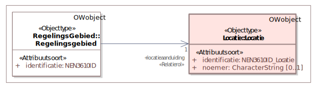Figuur 41Uitsnede uit IMOW-diagram voor objecttype Regelingsgebied
Regelingsgebied kent de volgende attributen:
identificatie: de unieke identificatie waaronder elk object van dit type bekend is. Identificatie conform datatype NEN3610-ID. Verplicht attribuut. Komt 1 keer voor. De identificatie moet de code (uit de STOP-waardelijst voor gemeente, waterschap, provincie of ministerie) bevatten van het bevoegd gezag dat het besluit neemt waarmee de Regeling wordt ingesteld of gewijzigd.
locatieaanduiding: de verwijzing van een Regelingsgebied naar (de identificatie van) de bijbehorende Locatie; attribuut dat de specifieke Locatie aanduidt waar dit Regelingsgebied van toepassing is. Verplicht attribuut. Komt 1 keer voor.
Regelingsgebied kent geen waardelijsten en geen constraints.
7.11.5 Toelichting op de norm
locatieaanduiding: het attribuut dat de verwijzing bevat naar de identificatie van de specifieke Locatie die bij het Regelingsgebied hoort. Voor Regelingsgebied bevat Locatie (de verwijzingen naar) de geometrie(ën) die de buitengrens of buitengrenzen van de regeling vormen.
Let ook op de regels voor het verwijzen van een OW-object naar een ander OW-object in paragraaf 7.12.2.1, met name over het verwijzen naar een OW-object behorend bij een andere Regeling en over het verwijzen van en naar een OW-object in een tijdelijk regelingdeel.
7.12 Hergebruik van en verwijzen naar OW-objecten in een andere Regeling
In het kader van enkelvoudige opslag, meervoudig gebruik kan de wens bestaan om in een omgevingsdocument gebruik te maken van een OW-object uit een ander omgevingsdocument, oftewel een andere Regeling. Doorgaans zal dat gaan om het verwijzen naar Locaties in een andere Regeling. Dat kan op twee manieren:
door een kopie van een OW-object te maken en die in een andere Regeling te gebruiken;
door te verwijzen naar een OW-object in een andere Regeling.
Deze methoden worden in de volgende paragrafen beschreven, met regels over de toepassing.
7.12.1 Hergebruik door het kopiëren van OW-objecten
Bij deze methode wordt een kopie gemaakt van een OW-object in Regeling A en wordt die kopie in Regeling B gebruikt. Dit kan als Regelingen A en B van hetzelfde bevoegd gezag zijn, maar ook als ze van verschillende bevoegde gezagen zijn. De kopie moet een andere identificatie krijgen dan het origineel. Dat is omdat iedere identificatie uniek moet zijn en (relevant bij een kopie van een OW-object van een ander bevoegd gezag) omdat in de OW-object-identificatie de bevoegdgezag-code verweven is. Door hergebruik door het kopiëren van een OW-object hoort het gekopieerde OW-object bij de Regeling waarin het wordt gebruikt. Deze methode is zonder meer toegestaan. Het hergebruik zal doorgaans (mede) betrekking hebben op een of meer Locaties. Dan zal ook het GIO waarin die Locaties zijn vastgelegd, gekopieerd worden. Voor het kopiëren van OW-Locaties en GIO’s kan gebruik gemaakt worden van de downloadservice die het stelsel ter beschikking stelt.
7.12.2 Hergebruik door te verwijzen naar een OW-object in een andere Regeling
In de tekst van omgevingsdocumenten en bij het annoteren ervan wordt verwezen naar (de identificatie van) GIO’s en OW-objecten. Bij deze methode van hergebruik wordt in Regeling B niet verwezen naar een OW-object dat behoort bij die Regeling, maar wordt verwezen naar (de identificatie van) een OW-object dat behoort bij Regeling A. Ook deze vorm van hergebruik zal doorgaans betrekking hebben op een of meer Locaties. Er zal dan ook sprake zijn van verwijzen naar GIO’s in de andere Regeling. Het verwijzen naar GIO’s volgt dan ook de regels van de Norm van paragraaf 7.12.2.1.
7.12.2.1 Norm
Voor het verwijzen van OW-objecten naar andere OW-objecten gelden de volgende regels:
een OW-object behorend bij een Regeling niet zijnde een tijdelijk regelingdeel mag alleen verwijzen naar een OW-object behorend bij een Regeling van hetzelfde bevoegd gezag, met uitzondering van de relatie bovenliggendeActiviteit van het OW-object Activiteit, waarvoor de specifieke regels van paragraaf 7.6.4.3 gelden;
een OW-object behorend bij een Regeling niet zijnde een tijdelijk regelingdeel mag niet verwijzen naar een OW-object behorend bij een tijdelijk regelingdeel;
een OW-object behorend bij een tijdelijk regelingdeel mag alleen verwijzen naar een OW-object behorend bij hetzelfde tijdelijk regelingdeel, met uitzondering van de relatie bovenliggendeActiviteit van de tophaak-Activiteit van het tijdelijk regelingdeel, waarvoor specifieke regels gelden.
7.12.2.2 Toelichting op de norm
Inleiding en achtergrond
Als een OW-object behorend bij Regeling A kan verwijzen naar een OW-object in Regeling B, kan het gebeuren dat op een gegeven moment het OW-object in Regeling B wordt beëindigd omdat het niet meer van toepassing is. Bij de huidige stand van TPOD-standaard en implementatie in de DSO-keten kan naar een OW-object alleen dynamisch worden verwezen; er wordt verwezen naar de actuele versie en het is niet mogelijk om te verwijzen naar een specifieke versie van een OW-object. In Regeling A zou dan worden verwezen naar een niet meer bestaand OW-object. DSO-LV kan niet omgaan met verwijzingen naar niet meer bestaande OW-objecten, omdat er dan een dode link is en DSO-LV geen resultaat kan teruggeven. Daarom geldt de regel dat een OW-object niet mag worden beëindigd als ernaar wordt verwezen.
Het verwijzen naar OW-objecten in andere Regelingen levert technische en juridische problemen en risico’s op. De volgende voorbeelden illustreren dat:
De provincie verwijst in de omgevingsverordening naar de locatie van een Natura 2000-gebied dat het Rijk in een Regeling heeft aangewezen. Als het Rijk later de Regeling intrekt, kan het Rijk -op grond van de eerder genoemde regel- de Locatie van het Natura 2000-gebied niet beëindigen omdat er vanuit de omgevingsverordening naar wordt verwezen. De Locatie van het Natura 2000-gebied blijft, als enige onderdeel van de ingetrokken Regeling, in DSO-LV achter. Door het intrekken van de Regeling is de juridische grondslag voor die Locatie vervallen. De verwijzing vanuit de omgevingsverordening naar die Locatie verdwijnt niet automatisch. De provincie krijgt geen melding dat de Regeling van het Rijk waar die Locatie bij hoorde niet meer bestaat. Vanuit de omgevingsverordening wordt nog steeds naar die Locatie verwezen waarvan de juridische grondslag is vervallen.
In een omgevingsplan is voor het werkingsgebied van een artikel verwezen naar een Locatie in de omgevingsverordening. Als de provincie later die Locatie wijzigt, is daardoor ook het werkingsgebied van het artikel in het omgevingsplan gewijzigd, zonder dat de gemeente daarover een besluit heeft genomen. Voor die wijziging is niet de juiste procedure van ter inzage leggen van ontwerpbesluit en van definitief besluit gevolgd, met de bijbehorende mogelijkheden van zienswijzen en beroep. Bovendien bestaat er het risico dat de provincie de Locatie zo wijzigt dat deze de gemeentegrens overschrijdt. Door de verwijzing zou de Locatie in het omgevingsplan automatisch meewijzigen en zou de gemeente regels stellen in een gebied waar ze niet bevoegd is dat te doen.
Hoofdregel
Om de technische en juridische problemen en risico’s te voorkomen is de hoofdregel dat een OW-object alleen mag verwijzen naar een OW-object behorend bij een Regeling van hetzelfde bevoegd gezag. Het is dus wel toegestaan dat OW-objecten in de omgevingsvisie van provincie A verwijzen naar OW-objecten in de omgevingsverordening van diezelfde provincie, maar het is niet toegestaan dat OW-objecten in een waterschapsverordening verwijzen naar OW-objecten in een omgevingsverordening. Uitgangspunt bij het wel toestaan van verwijzingen naar een OW-object in een Regeling van hetzelfde bevoegd gezag is dat het bevoegd gezag zich bewust zal zijn van dergelijke verwijzingen. Het kan dan zelf maatregelen treffen om de hiervoor genoemde technische en juridische onwenselijke situatie te voorkomen. Als het bevoegd gezag dat nog niet heeft gedaan voorafgaand aan de aanlevering van de beëindiging van een object, krijgt het zelf de melding van het stelsel dat het beëindigen van het OW-object niet mogelijk is omdat er (vanuit een andere Regeling) naar dat object wordt verwezen.
Specifieke regels
Op de regel dat OW-objecten alleen mogen verwijzen naar OW-objecten die horen bij een andere Regeling als dat een Regeling van hetzelfde bevoegd gezag is, geldt een aantal uitzonderingen. Voor die uitzonderingen gelden specifieke regels.
De eerste uitzondering betreft tijdelijk regelingdelen. Het tijdelijk regelingdeel moet zoveel als maar mogelijk is autonoom zijn. Dat maakt het mogelijk dat bij het intrekken van een tijdelijk regelingdeel automatisch alle OW-objecten behorend bij dat tijdelijk regelingdeel worden beëindigd. Daarom mag een OW-object behorend bij een tijdelijk regelingdeel alleen verwijzen naar een OW-object in hetzelfde tijdelijk regelingdeel en mag omgekeerd een OW-object behorend bij een andere Regeling niet verwijzen naar OW-objecten in een tijdelijk regelingdeel. Bij voorbeeld: Een Juridische regel in een tijdelijk regelingdeel met voorbeschermingsregels bij het omgevingsplan van de gemeente A mag wel verwijzen naar een Locatie behorend bij datzelfde tijdelijk regelingdeel en niet naar een Locatie behorend bij de hoofdregeling van het omgevingsplan van de gemeente A. De Juridische regel in dat tijdelijk regelingdeel mag ook niet verwijzen naar een Locatie behorend bij de omgevingsverordening van de provincie die het voorbereidingsbesluit heeft genomen dat het tijdelijk regelingdeel instelt. Op de regel dat een OW-object behorend bij een tijdelijk regelingdeel alleen mag verwijzen naar een OW-object in hetzelfde tijdelijk regelingdeel geldt weer een uitzondering voor de bovenliggendeActiviteit-relatie van de tophaak-Activiteit van het tijdelijk regelingdeel. Daarvoor gelden specifieke regels.
De tweede uitzondering betreft de relatie bovenliggendeActiviteit van het OW-object Activiteit behorend bij andere Regelingen dan tijdelijk regelingdelen. Voor deze relatie gelden de specifieke regels van paragraaf 7.6.4.3. Die komen er voor omgevingsverordening, waterschapsverordening en omgevingsplan op neer dat de relatie bovenliggendeActiviteit van de tophaak-Activiteit moet verwijzen naar de ‘Activiteit gereguleerd in de omgevingsverordening/de waterschapsverordening/het omgevingsplan’. De relatie bovenliggendeActiviteit van alle andere Activiteiten in omgevingsverordening, waterschapsverordening en omgevingsplan mag alleen verwijzen naar een Activiteit die hoort bij dezelfde Regeling. Voor AMvB en ministeriële regeling gelden eigen regels.
Aandachtspuntenbij verwijzen naar OW-objecten in Regeling van hetzelfde bevoegd gezag
Er zijn gevallen waarin het de bedoeling van het bevoegd gezag is dat Regeling B mee wijzigt met wijzigingen van de eigen Regeling A. Een voorbeeld is dat in een omgevingsverordening de begrenzing van grondwaterbeschermingsgebieden wordt vastgesteld en omgevingsvisie en waterprogramma die begrenzing volgen. Toekomstige wijzigingen kunnen dan in Regeling B juridisch worden geborgd door de formulering daarop af te stemmen.
Ter voorkoming van wijzigingen met ongewenst juridisch effect wordt geadviseerd om, als er wordt verwezen naar een OW-object in een andere Regeling van hetzelfde bevoegd gezag, van de ‘harde’ Regeling naar de ‘zachte’ Regeling te verwijzen. Dus wel een verwijzing vanuit de gemeentelijke omgevingsvisie naar een OW-object in het omgevingsplan, maar niet vanuit het omgevingsplan verwijzen naar een OW-object in de omgevingsvisie.
Maak bij voorkeur geen verwijzing vanuit een Regeling naar een OW-object in een andere Regeling die mogelijk in de toekomst wordt ingetrokken of waarvan in de toekomst de vindbaarheid wordt beperkt omdat die Regeling dan materieel uitgewerkt is. Een voorbeeld van dat laatste is een Locatie die in een projectbesluit van het waterschap wordt ingesteld. Het waterschap kan er in de toekomst voor kiezen om het resultaat van het project dat door dat projectbesluit mogelijk is gemaakt, te borgen in de waterschapsverordening. Als het project volledig is gerealiseerd, is het projectbesluit materieel uitgewerkt. Het is dan niet langer zinvol om het vrijetekstgedeelte van het projectbesluit nog in de regelingenbank op overheid.nl en in DSO-LV in het overzicht van actuele instrumenten te zien. Een volgende versie van de STOP/TPOD-standaard gaat het mogelijk maken om de vindbaarheid van het vrijetekstgedeelte van het projectbesluit te beperken. Het is dan niet wenselijk als vanuit de waterschapsverordening is verwezen naar een Locatie in het projectbesluit.
Tijdelijke maatregel
Het beperken van de mogelijkheid om te verwijzen naar OW-objecten in andere Regelingen is een tijdelijke maatregel. De bedoeling is dat dat in de toekomst wel kan. Daarvoor is het nodig dat de TPOD-standaard het mogelijk maakt om naar een specifieke versie van een OW-object te verwijzen, en/of dat DSO-LV kan omgaan met verwijzingen naar niet meer bestaande OW-objecten.
Workaround
Zolang deze regel geldt kan een bevoegd gezag wel gebruik maken van een OW-object in een Regeling van een ander bevoegd gezag, maar dan door dat object te kopiëren en zelf in de eigen regeling op te nemen. Dat is de methode die is beschreven in paragraaf 7.12.1.
7.13 Het niveau van annoteren
Een annotatie met een OW-object kan -in inhoudelijke zin- betrekking hebben op een hele Regeltekst respectievelijk een hele Divisie of Divisietekst, of alleen op een Juridische regel of een Tekstdeel, en indien gewenst zelfs op een onderdeel daarvan. In de technische uitwerking worden annotaties gepositioneerd op het niveau van Regeltekst respectievelijk Divisie of Divisietekst: iedere annotatie verwijst naar de identificatie van de Regeltekst dan wel de Divisie of Divisietekst. De annotatie die inhoudelijk gaat over een onderdeel van een Regeltekst, Divisie of Divisietekst verwijst dus niet exact naar het opsommingsonderdeel of het stukje tekst waarop de annotatie van toepassing is, maar naar (de identificatie van) de Regeltekst (oftewel het artikel of lid) of de Divisie of Divisietekst waarin de annotatie voorkomt. Gevolg daarvan is dat DSO-LV bij een bevraging het hele Artikel of het hele Lid c.q. de hele Divisie of Divisietekst toont en niet alleen de Juridische regel, Tekstdeel of het stukje tekst waar de annotatie inhoudelijk betrekking op heeft. Dat is ook wenselijk omdat op die manier de volledige context wordt getoond.
7.14 Annoteren wanneer een deel van norm of beleid in een bijlage staat
Zoals hiervoor al een aantal keren is opgemerkt wordt het annoteren met OW-objecten alleen toegepast op het Lichaam van de Regeling van omgevingsdocumenten, oftewel het onderdeel dat de artikelen respectievelijk de inhoudelijke (beleids)teksten bevat. Bij dat inhoudelijke deel kunnen bijlagen worden gevoegd. Aan (onderdelen van) bijlagen kunnen geen annotaties worden toegevoegd. In omgevingsdocumenten met Artikelstructuur kunnen Locatie en de domeinspecifieke annotaties (Activiteit, Omgevingsnorm, Omgevingswaarde en Gebiedsaanwijzing) immers alleen gekoppeld worden aan het OW-object Juridische regel. Het object Juridische regel kan alleen worden toegepast op een artikel of een lid en niet op (onderdelen van) een bijlage. Datzelfde geldt voor omgevingsdocumenten met Vrijetekststructuur: daar kan de domeinspecifieke annotatie (i.c. Gebiedsaanwijzing) alleen gekoppeld worden aan het OW-object Tekstdeel. Het object Tekstdeel kan alleen worden toegepast op de (beleids)tekst van het omgevingsdocument en niet op (onderdelen van) een bijlage.
Er zijn situaties waarin het, bijvoorbeeld om redenen van leesbaarheid of vormgeving (denk aan lange lijsten en complexe tabellen), wenselijk is om onderdelen van een norm niet in het artikel van de norm maar in een bijlage te plaatsen. Voorbeelden van die onderdelen zijn de waarden van een omgevingsnorm of omgevingswaarde en de locaties waar een norm geldt. Ook in zo’n geval wordt een bijlage niet geannoteerd, maar worden de annotaties aan het artikel (of lid) toegevoegd. De mensleesbare informatie staat dan in de bijlage; de machineleesbare informatie is gekoppeld aan het artikel of lid. Een gebruiker merkt dat niet.
Deze systematiek kan worden toegepast bij het annoteren met Activiteit. Een voorbeeld is een artikel in een omgevingsplan waarin staat dat het ter plaatse van de functie Bedrijventerrein toegestaan is om de activiteiten te verrichten die in de bijlage zijn opgesomd. Ook bij het annoteren met de OW-objecten Omgevingsnorm en Omgevingswaarde kan dit principe worden toegepast. Er moet dan echter wel rekening mee gehouden worden dat de STOP/TPOD-standaard niet toestaat dat kwantitatieve respectievelijk kwalitatieve waarden die bij een norm horen zowel in de tekst als in GIO’s en het normwaarde-attribuut van Omgevingsnorm of Omgevingswaarde voorkomen. Wanneer de waarden in de tekst van de bijlage zijn geplaatst moet bij het annoteren van het artikel met Omgevingsnorm of Omgevingswaarde gekozen worden voor het normwaarde-attribuut ‘waardeInRegeltekst’. Daarmee wordt een verwijzing gemaakt naar de tekst van het artikel dat de norm bevat; het artikel bevat dan weer de verwijzing naar de bijlage. Het GIO bevat in zo’n geval alleen de geometrie en geen waarden (en ook geen verwijzing naar de tekst, die kent alleen de TPOD-standaard). Dit geldt overigens ook wanneer kwantitatieve of kwalitatieve waarden in de tekst van het artikel staan; ook dan moet bij het annoteren met Omgevingsnorm of Omgevingswaarde gekozen worden voor het normwaarde-attribuut ‘waardeInRegeltekst’.
Hier kan nog worden opgemerkt dat het vanuit de standaard niet nodig is om te werken met waarden en locaties in een bijlage. De kenbaarheid is immers afdoende juridisch geborgd wanneer die informatie in het GIO is opgenomen. Vanuit dat principe volstaat het om de norm in het artikel op te nemen en de geometrie en de waarden in het GIO (en in het normwaarde-attribuut van Omgevingsnorm of Omgevingswaarde) vast te leggen.
8 Wijzigen van omgevingsdocumenten met wijzigingsbesluiten
Dit hoofdstuk gaat over het wijzigen van omgevingsdocumenten met wijzigingsbesluiten. Daarbij is onderscheid gemaakt in het wijzigen van tekst (paragraaf 8.1), het wijzigen van GIO’s (paragraaf 8.2) en het wijzigen van OW-objecten (paragraaf 8.3). De wijzigingsmethode Intrekken & vervangen, als reguliere wijzigingsmethode, is het onderwerp van paragraaf 8.4.
8.1 Wijzigen van tekst
Nadat een initiële regeling van een omgevingsdocument tot stand is gekomen, wordt deze met wijzigingsbesluiten gewijzigd. Uitgangspunt van de STOP/TPOD-standaard is dat voor het wijzigen van tekst gebruik gemaakt wordt van de wijzigingsmethode renvooi. Hoe renvooi moet worden toegepast, wordt beschreven in paragraaf 8.1.1. Er bestaat een alternatief voor renvooi, te weten Integrale tekstvervanging, die onder bepaalde omstandigheden mag worden toegepast. Deze alternatieve wijzigingsmethode wordt in paragraaf 8.1.2 beschreven.
8.1.1 Wijzigingsmethode renvooi
Een bestuursorgaan dat een omgevingsdocument wijzigt, besluit alleen over de wijzigingen die het in dat omgevingsdocument aanbrengt, niet over de ongewijzigde onderdelen. In een wijzigingsbesluit staan daarom alleen de onderdelen van het omgevingsdocument die gewijzigd zijn. De wijzigingsmethode renvooi ondersteunt dat aspect van het besluitvormingsproces optimaal: met renvooi worden in de tekst speciale markeringen aangebracht die de wijzigingen die het besluit ten opzichte van de vorige versie van de regeling aanbrengt, op een voor de mens inzichtelijk manier zichtbaar maken. Daarnaast is deze methodiek automatiseerbaar. Daardoor kan geautomatiseerd uit de bestaande tekst en de renvooimarkeringen in het wijzigingsbesluit de nieuwe versie van de tekst ge(re)construeerd worden en kunnen de renvooimarkeringen geautomatiseerd worden gegenereerd door de twee versies van de tekst met elkaar te vergelijken.
Het bevoegd gezag start het wijzigingsproject door de juridische uitgangssituatie te kiezen: de versie van de regeling ten opzichte waarvan de wijzigingen worden aangebracht. Doorgaans zal dat de op het moment van starten geldende versie van de regeling zijn. Bij toepassing van versiebeheer wordt van die juridische uitgangssituatie een bevroren versie gemaakt. In die bevroren regelingversie worden de voor het wijzigingsproject benodigde wijzigingen in de tekst aangebracht. Het is mogelijk dat tussen de start van dit project en de publicatie van het ontwerp- of definitieve besluit andere wijzigingsbesluiten hebben geleid tot een nieuwe versie van de geldende regeling. Als dat zo is, worden die wijzigingen overgenomen in de juridische uitgangssituatie voor het wijzigingsproject. De juridische uitgangssituatie is de ‘was’-versie; de juridische uitgangssituatie inclusief de wijzigingen van het wijzigingsproject is de ‘wordt’-versie. Uit een vergelijking van de ‘wordt’-versie van de regeling met de ‘was’-versie van de regeling genereert de plansoftware (of een renvooiservice) het ontwerp- of definitieve wijzigingsbesluit, waarin de wijzigingen met renvooimarkeringen zijn aangegeven.
Bron van het wijzigingsbesluit is de XML-versie waarin machineleesbaar de wijzigingen worden gespecificeerd. Daarvan wordt een PDF-versie gegenereerd, waarin in renvooi de wijzigingen op een mensleesbare manier worden weergegeven.
Bij gebruik van de wijzigingsmethode renvooi wordt in de WijzigBijlage van het Besluit een RegelingMutatie opgenomen met daarin achtereenvolgens alle wijzigingen.
Het model voor regelingen met artikelstructuur kent de volgende elementen:
RegelingOpschrift
Lichaam, met daarbinnen de tekstelementen Hoofdstuk, Titel, Afdeling, Paragraaf, Subparagraaf, Subsubparagraaf, Artikel en Lid
Bijlage, met daarbinnen Divisie en Divisietekst
Toelichting, met daarbinnen
AlgemeneToelichting, met daarbinnen Divisie en Divisietekst
ArtikelgewijzeToelichting, met daarbinnen Divisie en Divisietekst
De elementen van een regeling die met de wijzigingsmethode renvooi gemuteerd kunnen worden, worden mutatie-eenheden genoemd. De mutatie-eenheden in een regeling met artikelstructuur zijn:
de elementen Lichaam, Bijlage, Toelichting, AlgemeneToelichting en ArtikelgewijzeToelichting;
de tekstelementen Hoofdstuk, Titel, Afdeling, Paragraaf, Subparagraaf, Subsubparagraaf, Artikel, Divisie en Divisietekst.
Het RegelingOpschrift kan niet gemuteerd worden. Het hele lichaam wordt slechts in uitzonderlijke gevallen, wanneer er ingrijpende wijzigingen in de structuur van het lichaam van de regeling nodig zijn, vervangen.
In het lichaam is artikel de kleinste mutatie-eenheid. Dit betekent dat het artikel de eenheid is die, ongeacht hoeveel wijzigingen in dat artikel of in de leden van dat artikel worden aangebracht, als geheel vervangen wordt bij consolidatie. Door de renvooi-weergave wordt zichtbaar wat er door het wijzigingsbesluit in het artikel gewijzigd is. Het is ook de eenheid waarover in de wetstechnische informatie in de regelingenbanken de juridische verantwoording wordt bijgehouden. In de Bijlage, AlgemeneToelichting en ArtikelgewijzeToelichting is Divisietekst de kleinste mutatie-eenheid. Ook daarvoor geldt dat, ongeacht hoeveel wijzigingen in die Divisietekst worden aangebracht, de Divisietekst als geheel vervangen wordt bij consolidatie en dat door de renvooi-weergave zichtbaar wordt wat de wijzigingen in de Divisietekst zijn.
De wijzigingsmethode renvooi maakt het bijvoorbeeld mogelijk om een volledig hoofdstuk met daarin afdelingen, paragrafen en artikelen in het lichaam van een regeling toe te voegen, om de algemene toelichting te vervangen door een nieuwe versie daarvan, maar ook om een lid uit een artikel te verwijderen of een woord in een lid van een artikel te wijzigen in een ander woord. In de laatste twee gevallen bevat het wijzigingsbesluit het volledige artikel dat gewijzigd wordt, waardoor de wijziging in haar context zichtbaar en daardoor begrijpelijk is.
Figuur 42 en Figuur 43 geven een beeld van de werking van de wijzigingsmethode renvooi. In Figuur 42 staat links de tekst van artikel 5.7 in de oude versie van de regeling, oftewel de ‘was’-versie, en rechts de tekst van datzelfde artikel in de nieuwe versie van de regeling, de ‘wordt’-versie. De plansoftware (of een renvooiservice) heeft een vergelijking van de ‘wordt’-versie met de ‘was’-versie van de regeling gemaakt en heeft daaruit het ontwerp- of definitieve wijzigingsbesluit gegenereerd. Figuur 43 laat de mensleesbare renvooiweergave van het wijzigingsbesluit zien.
Figuur 42Links oude versie regeling (‘was’-versie), rechts nieuwe versie regeling (‘wordt’- versie)Figuur 43Wijzigingsbesluit met mensleesbare renvooiweergave van verwijderde en nieuwe tekst
Door deze methodiek is precies te zien welke onderdelen van de tekst door het wijzigingsbesluit gewijzigd zijn. Bij (wijzigings)besluiten waartegen beroep kan worden ingesteld maakt dat ook direct duidelijk waarover dat beroep kan gaan. Uit de weergave van het voorbeeld van Figuur 43 wordt duidelijk dat het recht op het bouwen van een bijbehorend bouwwerk en het gebruik daarvan voor mantelzorg al bestond en dat in beroep alleen kan worden opgekomen tegen de vergroting van de toegelaten oppervlakte en de beperking tot alleen buiten de bebouwde kom.
Het model voor regelingen met Vrijetekststructuur kent de volgende elementen:
RegelingOpschrift
Lichaam, met daarbinnen Divisie en Divisietekst
Bijlage, met daarbinnen Divisie en Divisietekst
De elementen van een regeling die met de wijzigingsmethode renvooi gemuteerd kunnen worden, worden mutatie-eenheden genoemd. De mutatie-eenheden in een regeling met Vrijetekststructuur zijn:
de elementen Lichaam en Bijlage;
de tekstelementen Divisie en Divisietekst.
Het RegelingOpschrift kan niet gemuteerd worden. Het hele lichaam wordt slechts in uitzonderlijke gevallen, wanneer er ingrijpende wijzigingen in de structuur van het lichaam van de regeling nodig zijn, vervangen. Divisietekst is, zowel in het lichaam als in de bijlage, de kleinste mutatie-eenheid. Dat betekent dat, ongeacht hoeveel wijzigingen in die Divisietekst worden aangebracht, de Divisietekst als geheel vervangen wordt bij consolidatie. Door de renvooi-weergave wordt zichtbaar wat de wijzigingen in de Divisietekst zijn. Het is ook de eenheid waarover de juridische verantwoording wordt bijgehouden.
Om een wijzigingsbesluit leesbaar te houden, wordt niet de volledige tekst van de regeling met renvooi opgenomen in het besluit, maar alleen de delen waarin de wijzigingen voorkomen: het gewijzigde artikel, het ingevoegde hoofdstuk et cetera. Het kan wenselijk zijn, bijvoorbeeld ten behoeve van het besluitvormingsproces, om ook een versie van de gehele tekst van de regeling te hebben waarin de wijzigingen die het wijzigingsbesluit daarin aanbrengt in renvooi worden weergegeven. Daardoor wordt het effect van de wijzigingen op de hele regeling inzichtelijk. Dit is mogelijk door een proefversie te maken: de regelingversie die volgt uit dit specifieke besluit. Door het geautomatiseerde proces komt de regeling-in-renvooi namelijk exact overeen met het besluit.
8.1.2 Alternatief voor renvooi: Integrale tekstvervanging
Er zijn omstandigheden waarin het gebruik van de wijzigingsmethode renvooi niet mogelijk is, bijvoorbeeld omdat de plansoftware die het bevoegd gezag gebruikt dat nog niet ondersteunt. Voor het wijzigen van de Natura 2000-besluiten is het dan bij wijze van Tijdelijke Alternatieve Maatregel toegestaan om gebruik te maken van de alternatieve wijzigingsmethode Integrale tekstvervanging (zie paragraaf 8.1.2.1)[37] Er bestond een tweede alternatieve wijzigingsmethode, te weten Intrekken & vervangen. Met ingang van 1 oktober 2023 is het gebruik van deze wijzigingsmethode als alternatief voor renvooi niet meer toegestaan . Gebruik van deze wijzigingsmethode stelt bijzondere eisen aan de formulering van het besluit. Die zijn, met een voorbeeld, het onderwerp van paragraaf 8.1.2.2.
8.1.2.1 Integrale tekstvervanging als alternatieve wijzigingsmethode
Bij gebruik van de alternatieve wijzigingsmethode Integrale tekstvervanging wordt de gehele versie van een regeling vervangen door een nieuwe versie van die regeling. Deze wijzigingsmethode kan ook gebruikt worden voor het wijzigen van een hoofdregeling wanneer bij die hoofdregeling één of meer tijdelijk regelingdelen horen.
Bij de alternatieve wijzigingsmethode Integrale tekstvervanging wordt in de WijzigBijlage een RegelingMutatie opgenomen, met daarin een VervangRegeling die de gehele gewijzigde nieuwe regelingversie bevat. In het element RegelingMutatie worden de identificaties van de was- en de wordt-versie opgenomen. Ongewijzigde GIO’s worden bij deze methode niet opnieuw aangeleverd.
8.1.2.2 Formulering besluit bij gebruik Integrale tekstvervanging
Bij de toepassing van de alternatieve wijzigingsmethode Integrale tekstvervanging wordt een volledige (versie van een) regeling vervangen door een nieuwe (versie van een) regeling. Daarin is niet gemarkeerd welke wijzigingen het wijzigingsbesluit daarin aanbrengt. Het is uiteraard niet de bedoeling dat door het om technische redenen toepassen van een van deze wijzigingsmethoden de volledige regeling voor beroep vatbaar wordt, dus ook de onderdelen die juridisch gezien niet gewijzigd zijn. Om dat te voorkomen wordt geadviseerd om in het dictum van het besluit de wijzigingen aan te geven. Daarmee wordt bewerkstelligd dat in juridische zin sprake is van een wijzigingsbesluit, terwijl dat technisch is uitgevoerd met Intrekken & vervangen of Integrale tekstvervanging. De door VNG en ministerie van BZK geadviseerde opzet van zo’n besluit is weergegeven in Figuur 44.
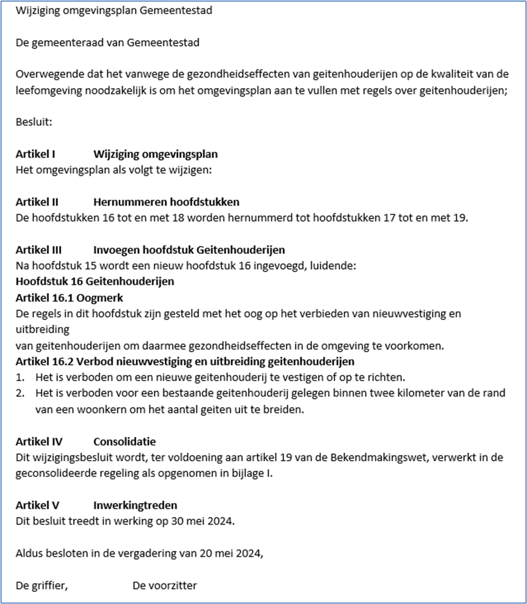Figuur 44Voorbeeld van de tekst van een besluit bij mutatiescenario Integrale Tekstvervanging
NB1: In het voorbeeld van Figuur 44 lijkt het alsof in Artikel III andere artikelen, ondergebracht in een hoofdstuk, voorkomen. Dat is alleen visueel zo; de STOP/TPOD-standaard staat geen artikelen in artikelen toe. In technische termen bestaat Artikel III uit een Kop, gevolgd door een element Inhoud dat een aantal alinea’s en een opsomming met lijstitems bevat.
NB2: In het voorbeeld is artikel IV een WijzigArtikel, de andere artikelen zijn reguliere Artikelen.
8.2 Wijzigen van GIO’s
Op grond van artikel 7, eerste lid, Bekendmakingswet bestaat een regeling uit tekst en kan een regeling tevens informatie bevatten die niet uit tekst bestaat. Een GIO is zo’n onderdeel dat uit andere informatie bestaat. In het derde lid van dit artikel is nu bepaald dat bij wijziging van een onderdeel van een regeling dat niet uit tekst maar uit andere informatie bestaat of van een bijlage bij die regeling die wegens aard of omvang niet in het publicatieblad maar elders elektronisch is gepubliceerd, die informatie of die bijlage opnieuw wordt vastgesteld. Er is een wijziging van lid 3 van artikel 7 in voorbereiding waardoor deze bepaling alleen nog geldt voor onderdelen van een regeling die uit andere informatie dan tekst bestaat (en voor bijlagen) die niet geconsolideerd kunnen worden. Een GIO is een onderdeel dat geconsolideerd kan worden. Daardoor hoeft, na inwerkingtreden van deze wijziging van de Bekendmakingswet, bij wijziging een GIO niet opnieuw vastgesteld te worden maar kan het gewijzigd kan worden.
Om technische reden is het nog niet mogelijk om GIO’s te wijzigen door alleen de gewijzigde onderdelen aan te leveren. Voor GIO’s bestaat nog geen renvooi-weergave. Als een bestuursorgaan een GIO wil wijzigen, bijvoorbeeld omdat bij het gebiedsgewijs opbouwen van het omgevingsplan een artikel over de activiteit wonen niet alleen meer het centrum als werkingsgebied heeft maar ook het buitengebied, dan doet het dat door een nieuwe versie van het GIO vast te stellen en aan te leveren. Ook hier geldt dat het niet de bedoeling is dat door het moeten aan leveren van een nieuwe versie van een GIO, bij iedere wijziging van een GIO, hoe klein ook, het hele GIO voor beroep vatbaar wordt, dus ook de onderdelen die niet gewijzigd zijn. Om dat te voorkomen kan een vergelijkbare werkwijze worden toegepast als bij de alternatieve wijzigingsmethoden Intrekken & vervangen en Integrale tekstvervanging. Geadviseerd wordt om in het dictum van het besluit de wijzigingen in het GIO precies te beschrijven. Dan is juridisch sprake van een wijzigingsbesluit, dat technisch wordt uitgevoerd op de beschikbare manier, namelijk door het vaststellen en aanleveren van een nieuwe versie van het GIO. Dit kan verduidelijkt worden door in de motivering of de toelichting kaartjes op te nemen waarmee de verschillen worden geïllustreerd. Figuur 45 laat een voorbeeld van zo’n kaartje zien (bron: LandGoed en gemeente Amsterdam).
Figuur 45Voorbeeld kaartje ter illustratie van wijziging GIO
8.3 Wijzigen van OW-objecten
8.3.1 Inleiding
Een wijzigingsbesluit kan ook gevolgen hebben voor de OW-objecten in de geconsolideerde regeling. Het bevoegd gezag kan het omgevingsdocument zo wijzigen dat de OW-objecten wijzigen of dat er andere OW-objecten nodig zijn. Voor het wijzigen van OW-objecten zijn er in grove lijnen drie scenario’s: het wijzigen van een bestaand OW-object, het laten vervallen van een bestaand OW-object en het toevoegen van een nieuw OW-object.
Wanneer door of samen met het wijzigingsbesluit een bestaand OW-object wijzigt, voegt het bevoegd gezag bij de aanlevering van het bekend te maken besluit de gewijzigde attributen met de bestaande identificatie van een al bestaand OW-object toe. DSO-LV herkent het OW-object op basis van de identificatie en verwerkt de attributen.
In het geval dat door of samen met het wijzigingsbesluit een bestaand OW-object moet vervallen (in mutatietermen: het object wordt beëindigd), voegt het bevoegd gezag bij de aanlevering van het bekend te maken besluit het OW-object met een bestaande identificatie toe met de status ‘beëindigen’. DSO-LV herkent de identificatie van het OW-object en verwerkt het op basis van de status ‘beëindigen’: (het effect van) het OW-object wordt niet meer getoond.
Wanneer door het wijzigingsbesluit een nieuw OW-object ontstaat, levert het bevoegd gezag bij de aanlevering van het bekend te maken besluit het nieuwe OW-object aan. Er wordt dan een OW-object meegeleverd met een identificatie die in DSO-LV nog niet bekend is. DSO-LV beschouwt het als een nieuw OW-object en voegt het toe op dezelfde manier als bij de aanlevering van een initieel besluit.
Voor het wijzigen van OW-objecten gelden drie uitgangspunten:
lever alleen gegevens aan als ze gewijzigd zijn;
verwijder expliciet gegevens die niet meer gebruikt worden;
een wijziging van een object zorgt voor een nieuwe versie van dat object.
8.3.2 Norm
Voor het wijzigen van OW-objecten gelden de volgende regels:
een besluit mag alleen een OW-object wijzigen dat hoort bij de Regeling die door het besluit wordt gewijzigd;
aanleveren van een wijziging van een OW-object zonder besluit is niet toegestaan.
8.3.3 Toelichting op de norm
8.3.3.1 Besluit mag alleen OW-objecten wijzigen die horen bij de Regeling die het besluit wijzigt
Een besluit wijzigt een regeling. Dat besluit mag alleen OW-objecten wijzigen die horen bij die regeling. Onder het wijzigen van OW-objecten verstaan we het wijzigen of laten vervallen van bestaande OW-objecten en het toevoegen van nieuwe OW-objecten. Een voorbeeld: Een provincie mag met een besluit tot wijziging van de omgevingsverordening wel de OW-objecten van die omgevingsverordening wijzigen, maar niet de OW-objecten van de omgevingsvisie, en ook niet de OW-objecten van de omgevingsverordening van een andere provincie.
8.3.3.2 Aanleveren van wijziging van OW-object zonder besluit niet toegestaan
Een bevoegd gezag kan een OW-object alleen wijzigen bij de aanlevering van een wijzigingsbesluit. Aanleveren van een wijziging van een OW-object zonder besluit, een zogenaamde directe mutatie, is niet toegestaan. Een fout in een bestaand OW-object, zoals een ongelukkig gekozen naam van een Gebiedsaanwijzing, of een verkeerde activiteitregelkwalificatie, kan worden hersteld bij de aanlevering van het eerstvolgende besluit. Wanneer de correctie ingrijpend is en niet inhoudelijk samenhangt met de andere onderdelen van het besluit, is het aan te bevelen om dat expliciet onder de aandacht van het bestuursorgaan te brengen. Dat kan bijvoorbeeld door het als beslispunt in het dictum in het (vaststellings)besluit voor te leggen, of door het in de toelichting op het besluit op te nemen.
Bevoegde gezagen mogen geen directe mutaties aanleveren. Directe mutaties mogen alleen nog worden toegepast door beheerders van het stelsel voor het oplossen van problemen in de keten, bijvoorbeeld met een vastzittende regeling. De beheerders van het stelsel voeren deze functionaliteit uit op verzoek van het bevoegd gezag.
Er is een aantal redenen waarom het niet is toegestaan om een directe mutatie van een OW-object aan te leveren. Een directe mutatie van een OW-object kan leiden tot verschillen tussen de regeling op overheid.nl en de regeling in het DSO. Dit levert een juridisch risico op. Een directe mutaties is niet te traceren en werkt bovendien door met terugwerkende kracht. Bij een tijdreis naar een datum in het verleden ziet een raadpleger door die terugwerkende kracht iets anders dan wat destijds op die datum werkelijk te zien was. Het met een directe mutatie verwijderen van een Activiteit heeft grote gevolgen voor de toepasbare regels bij die Activiteit. Er is dan geen aanvraagformulier meer en een eerder ingediende vergunningaanvraag kan niet meer aangevuld worden.
Tijdelijke maatregel
De harde afkadering dat een bevoegd gezag een OW-object alleen mag wijzigen bij de aanlevering van een wijzigingsbesluit en niet zelf een directe mutatie mag aanleveren, is bedoeld als tijdelijke situatie. Beoogd is dat er in de toekomst functionaliteit komt waarmee die OW-objecten waarbij dat juridisch verantwoord kan, zonder besluit van het bestuursorgaan kunnen worden gewijzigd. Die functionaliteit moet dan ook zorgen voor de traceerbaarheid van de wijziging. Bij het ontwerpen van deze functionaliteit hoort ook een oplossing voor de terugwerkende kracht van wijzigingen van een OW-object zonder besluit.
Werkwijze zolang tijdelijke maatregel geldt
Zolang de tijdelijke maatregel geldt, kan een bevoegd gezag een OW-object wijzigen bij de aanlevering van een volgend wijzigingsbesluit. Voor het oplossen van een probleem in de keten, bijvoorbeeld met een vastzittende regeling, kunnen de beheerders van het stelsel gebruik maken van directe mutaties. Het bevoegd gezag kan daarvoor bij die beheerder een verzoek indienen.
Een probleem in de keten, bijvoorbeeld met een vastzittende regeling, kunnen de beheerders van het stelsel op verzoek van het bevoegd gezag oplossen, met inzet van directe mutaties
8.4 Intrekken & vervangen als reguliere wijzigingsmethode
Sommige typen omgevingsdocument zijn verplicht: het bestuursorgaan moet ze vaststellen en daarna, zo volgt uit het systeem van de wet, moet het openbaar lichaam steeds beschikken over dat omgevingsdocument. Voorbeelden daarvan voor de provincie zijn de omgevingsvisie en de omgevingsverordening, voor de gemeente de omgevingsvisie en het omgevingsplan, voor het waterschap de waterschapsverordening en het waterbeheerprogramma en voor het Rijk de omgevingsvisie, de AMvB en de ministeriële regeling. Deze omgevingsdocumenten worden, na hun initiële vaststelling, met wijzigingsbesluiten gewijzigd. Het kan voorkomen dat de wijzigingen zo omvangrijk zijn dat het bestuursorgaan het omgevingsdocument intrekt en vervangt door een nieuwe. Een voorbeeld is een provincie die in 2023 een omgevingsvisie heeft vastgesteld genaamd ‘Prachtig Provincieland 2035’. De provincie heeft de daarin gestelde ontwikkelings- en beleidsdoelen bereikt en wil nieuw beleid en ontwikkelingen gaan realiseren. In 2035 trekt de provincie daarom de bestaande omgevingsvisie in en stelt een nieuwe omgevingsvisie vast genaamd ‘Provincieland economisch voorop 2050’.
Dat het nieuwe omgevingsdocument bedoeld is als opvolger, voortzetting, van het bestaande omgevingsdocument kan sterker tot uitdrukking worden gebracht door die opvolgingsrelatie expliciet in de metadata van de regeling op te nemen. Dat kan met Intrekken & vervangen als reguliere wijzigingsmethode. Deze wijzigingsmethode wordt toegepast als het bevoegd gezag (zowel juridisch als technisch) een bestaande regeling intrekt en vervangt door een nieuwe regeling, waarbij die regelingen zo sterk met elkaar verbonden zijn dat sprake is van een opvolgingsrelatie. In de RegelingMetadata van de nieuwe regeling wordt met het element opvolgerVan verwezen naar (de identificatie van) de ingetrokken regeling. Door het aangeven van deze opvolg-relatie kan DSO-LV bij een tijdreis vanuit de nieuwe regeling de ingetrokken regeling als voorganger tonen.
Juridisch gezien ligt het voor de hand om het intrekken van de oude regeling en het instellen van de nieuwe regeling in één besluit op te nemen, en om het continu aanwezig zijn van het omgevingsdocument te borgen door de (inwerkingtredings)datum van de intrekking dezelfde te laten zijn als de inwerkingtredingsdatum van de nieuwe regeling. Technisch gezien maakt het bij regulier Intrekken & vervangen niet uit of de intrekking en de instelling in één of twee besluiten worden aangeleverd, als in de RegelingMetadata van de nieuwe regeling maar het element opvolgerVan is opgenomen. Het is aan het bevoegd gezag om er voor te zorgen dat de juridisch juiste datum wordt opgenomen voor intrekking van de oude regeling en inwerkingtreding van de nieuwe regeling, daarop wordt niet gevalideerd.
9 Overige modelleringsaspecten van de Natura 2000-besluiten
9.1 Standaardindeling Natura 2000-besluiten
9.1.1 Toelichting
Om het bestuursorgaan de mogelijkheid te bieden Natura 2000-besluiten zoveel mogelijk naar eigen inzicht in te delen, stelt dit toepassingsprofiel slechts één indelingseis. Die betreft de bijlage met namen en identificatiecodes van de geografische informatieobjecten.
9.1.2 Norm
De Regeling van de Natura 2000-besluiten moet een bijlage met namen en identificatiecodes van de geografische informatieobjecten bevatten.
9.2 Begripsbepalingen
9.2.1 Toelichting
Het doel van begripsbepalingen is om eenduidig vast te leggen wat wordt bedoeld met een term die in een regeling wordt gebruikt. Begripsbepalingen bestaan uit één of meer begrippen, die ieder bestaan uit een term en de definitie van die term.
In Natura 2000-besluiten kunnen begripsbepalingen worden opgenomen. Deze kunnen worden geplaatst in een specifiek daarvoor bestemd artikel of in een specifieke bijlage met begripsbepalingen. In dat geval moet er in een artikel naar deze bijlage worden verwezen.
Om het met wijzigingsbesluiten invoegen en verwijderen van begrippen eenvoudig te houden worden de begrippen in alfabetische volgorde geplaatst zonder gebruik te maken van opsommingstekens in de vorm van nummers of letters. Het is mogelijk om met de systematiek voor Verwijzingen die in paragraaf 9.4 is beschreven, een verwijzing te maken van een term die in de tekst van een regel voorkomt naar een begrip in de begripsbepalingen waar die term wordt gedefinieerd. Die verwijzing maakt het, bijvoorbeeld op overheid.nl en in DSO-LV, mogelijk dat de raadpleger de definitie van een term te zien krijgt als die term in de regel voorkomt. Het maken van zo’n verwijzing gebeurt in de software waarmee het omgevingsdocument wordt opgesteld en/of geannoteerd en vergt een menselijke handeling. Het gebeurt niet automatisch in bijvoorbeeld LVBB of DSO-LV en dus ook niet onbedoeld.
Begrippen die in een bijlage worden geplaatst maken onlosmakelijk deel uit van het juridische deel van de Natura 2000-besluiten. Om dat ook technisch te bewerkstelligen dienen dergelijke bijlagen onderdeel te zijn van de Regeling en niet van het Besluit. Alles wat deel uitmaakt van een Regeling wordt doorgeleverd aan DSO-LV en is daar te raadplegen. Begrippen die in een bijlage buiten de Regeling worden geplaatst, zijn in DSO-LV niet te raadplegen.
Opgemerkt wordt dat het niet de bedoeling is om de begrippen in een artikel of een bijlage Begripsbepalingen te annoteren met de domeinspecifieke OW-objecten Activiteit, Omgevingswaarde, Omgevingsnorm en Gebiedsaanwijzing.
9.2.2 Norm
Voor de begripsbepalingen gelden de volgende regels:
begripsbepalingen worden opgenomen in het artikel Begripsbepalingen in hoofdstuk 1 of in een specifieke bijlage met begripsbepalingen;
wanneer de begrippen in een bijlage worden geplaatst, wordt in het artikel Begripsbepalingen een tekstuele verwijzing naar de bijlage met begrippen opgenomen;
het artikel Begripsbepalingen dan wel de bijlage met begripsbepalingen begint met een introducerende zin;
ieder begrip bestaat uit een term en een definitie;
de begrippen worden in alfabetische volgorde opgenomen en krijgen geen opsommingstekens in de vorm van nummers of letters.
Om machineleesbaar te maken dat iets een begrip is wordt gebruik gemaakt van het STOP-Inhoud-element Begrippenlijst: een specifieke vorm van een Lijst die gericht is op het coderen van een lijst met termen en hun definities. Hiervoor wordt verwezen naar de betreffende STOP-documentatie.
9.3 Meet- en rekenbepalingen
9.3.1 Toelichting
Het is mogelijk dat in Natura 2000-besluiten regels voorkomen waarvan duidelijk moet zijn hoe er bij de toepassing ervan gemeten en/of gerekend moet worden. Hoe gemeten en/of gerekend moet worden, kan worden vastgelegd in meet- en rekenbepalingen.
Deze kunnen worden geplaatst in een specifiek daarvoor bestemd artikel of in een specifieke bijlage met meet- en rekenbepalingen. In dat geval moet er in een artikel naar deze bijlage worden verwezen. Het kan echter ook voorkomen dat een meet- of rekenbepaling zo contextgebonden is dat deze slechts voor één of een beperkt aantal artikelen van toepassing is. In zo’n geval kan het bevoegd gezag het wenselijk vinden om de meet- of rekenbepaling niet in een specifiek daarvoor bestemd artikel of in een specifieke bijlage te plaatsen maar direct in of bij de artikelen waarop zij van toepassing is. Beide methoden zijn toegestaan.
Om het met wijzigingsbesluiten invoegen en verwijderen van meet- en rekenbepalingen eenvoudig te houden worden de meet- en rekenbepalingen die bij elkaar in het specifiek daarvoor bestemde artikel of in een specifieke bijlage met meet- en rekenbepalingen worden geplaatst, in alfabetische volgorde geplaatst zonder gebruik te maken van opsommingstekens in de vorm van nummers of letters.
Om het met wijzigingsbesluiten invoegen en verwijderen van meet- en rekenbepalingen eenvoudig te houden worden de meet- en rekenbepalingen die bij elkaar in het artikel Meet- en rekenbepalingen of in een specifieke bijlage met meet- en rekenbepalingen worden geplaatst, in alfabetische volgorde geplaatst zonder gebruik te maken van opsommingstekens in de vorm van nummers of letters.
Het is mogelijk om met de systematiek voor de Verwijzing die in paragraaf 9.4 is beschreven, aan te geven welke meet- en rekenbepalingen bij welke andere regels (zoals een omgevingswaarde en/of omgevingsnorm) horen. Die verwijzing maakt het, bijvoorbeeld op overheid.nl en in DSO-LV, mogelijk dat de raadpleger de meet- en rekenbepaling te zien krijgt waar deze in de regeltekst van toepassing is. De verwijzing geeft een generieke relatie; er wordt niet machineleesbaar gemaakt dat de verwijzing meet- en rekenbepalingen betreft. Het maken van zo’n verwijzing gebeurt in de software waarmee het omgevingsdocument wordt opgesteld en/of geannoteerd en vergt een menselijke handeling. Het gebeurt niet automatisch in bijvoorbeeld LVBB of DSO-LV en dus ook niet onbedoeld.
Meet- en rekenbepalingen die in een bijlage worden geplaatst maken onlosmakelijk deel uit van het juridische deel van de Natura 2000-besluiten. Om dat ook technisch te bewerkstelligen dienen dergelijke bijlagen onderdeel te zijn van de Regeling en niet van het Besluit. Alles wat deel uitmaakt van de Regeling wordt doorgeleverd aan DSO-LV en is daar te raadplegen. Meet- en rekenbepalingen die in een bijlage buiten de Regeling worden geplaatst, zijn in DSO-LV niet te raadplegen.
9.3.2 Norm
Wanneer er in de Natura 2000-besluiten meet- en rekenbepalingen voorkomen gelden daarvoor de volgende regels:
meet- en rekenbepalingen worden bij voorkeur opgenomen in het artikel Meet- en rekenbepalingen in hoofdstuk 1 of in een specifieke bijlage met meet- en rekenbepalingen; het is ook toegestaan ze direct in of bij de artikelen te plaatsen waarop zij van toepassing zijn;
wanneer de meet- en rekenbepalingen in een bijlage worden geplaatst, wordt in het artikel Meet- en rekenbepalingen een tekstuele verwijzing naar de bijlage met meet- en rekenbepalingen opgenomen;
het artikel Meet- en rekenbepalingen dan wel de specifieke bijlage met meet- en rekenbepalingen begint met een introducerende zin;
iedere meet- of rekenbepaling bestaat uit een term en een beschrijving van de te gebruiken meet- of rekenwijze;
wanneer de meet- en rekenbepalingen worden opgenomen in het artikel Meet- en rekenbepalingen in hoofdstuk 1 dan wel in de specifieke bijlage met meet- en rekenbepalingen worden ze in alfabetische volgorde opgenomen en krijgen ze geen opsommingstekens in de vorm van nummers of letters.
Om machineleesbaar te maken dat iets een meet- of rekenbepaling is, wordt gebruik gemaakt van het STOP-Inhoud-element Begrippenlijst: een specifieke vorm van een Lijst die gericht is op het coderen van een lijst met termen en hun definities. Hiervoor wordt verwezen naar de betreffende STOP-documentatie.
9.4 Tekstverwijzing
9.4.1 Toelichting
Een stuk tekst kan een verwijzing naar een ander tekstelement of ander document bevatten. Voorbeelden hiervan zijn:
de verwijzing vanuit een begrip in een regel naar de begripsbepaling waarin dat begrip wordt gedefinieerd;
de verwijzing vanuit een beleidsregel over de toepassing van een open norm naar de regel waarin de open norm is vastgelegd;
de verwijzing vanuit een artikel naar de artikelsgewijze toelichting op dat artikel (en vice versa);
de verwijzing vanuit een regel naar een wettelijke bepaling;
de verwijzing vanuit een tekstelement in een omgevingsdocument met Vrijetekststructuur naar een ander tekstelement in datzelfde of een ander omgevingsdocument of in een ander besluit of regeling.
Het gaat hier om een simpele verwijzing; de verhouding tussen het ene tekstelement en het andere tekstelement of document is niet gekwalificeerd. Met de hier beschreven verwijzing wordt ook uitdrukkelijk niet de verwijzing vanuit een Juridische regel, Divisie, Divisietekst of Tekstdeel naar een Locatie of een OW-object bedoeld.
Het model maakt het mogelijk de hier bedoelde verwijzing te maken. Hiervoor wordt gebruik gemaakt van de STOP-XML-elementen IntRef (voor verwijzingen tussen tekstelementen binnen een omgevingsdocument) en ExtRef (voor verwijzingen vanuit een omgevingsdocument naar tekstelementen in) andere documenten; dat kunnen omgevingsdocumenten maar ook andere typen documenten zijn). Een verwijzing kan gemaakt worden naar een tekstelement in de Natura 2000-besluiten zelf, maar ook naar (een tekstelement in) een ander document.
Bij een verwijzing naar een ander document is aandacht nodig voor de formulering van de verwijzing. Wanneer een algemene verwijzing naar het andere document wordt gemaakt, dus zonder te verwijzen naar een specifieke versie daarvan, zou een wijziging in het andere document onbedoeld kunnen leiden tot wijziging van de Natura 2000-besluiten zonder dat daar een besluit van het bevoegd gezag aan ten grondslag ligt. Zo’n algemene verwijzing zonder specifieke versie noemen we een dynamische verwijzing. Wanneer het ongewenst is dat een wijziging in het andere document doorwerkt in de Natura 2000-besluiten kan een statische verwijzing worden gemaakt. Er wordt dan expliciet verwezen naar een specifieke versie van dat andere document.
Ten behoeve van de goede raadpleegbaarheid van de Natura 2000-besluiten wordt sterk aanbevolen om in ieder geval gebruik te maken van de verwijzing vanuit een begrip in een regel naar de begripsbepaling waarin dat begrip wordt gedefinieerd.
9.4.2 Norm
Voor het maken van de verwijzing wordt gebruik gemaakt van de generieke XML-elementen IntRef (voor de verwijzing naar een ander tekstelement in hetzelfde document) en ExtRef (voor de verwijzing naar (tekstelementen in) een ander document).
9.5 Onderdelen van de standaard die voor omgevingsdocumenten met Artikelstructuur verplicht of noodzakelijk zijn
Een besluit kan pas in werking treden als het is bekendgemaakt, aldus artikel 3:40 Awb. De Bekendmakingswet stelt algemene regels over de bekendmaking. Voor omgevingsdocumenten[38] Omgevingsdocumenten zijn besluiten en andere rechtsfiguren die in de Omgevingsregeling (de ministeriële regeling bij de Omgevingswet) als zodanig zijn aangewezen gelden specifieke regels[39] Deze regels zijn vastgelegd in de Regeling standaarden publicaties Omgevingswet, een ministeriële regeling bij de Bekendmakingswet . Omgevingsdocumenten, en ontwerpen daarvan, moeten door het betrokken bestuursorgaan elektronisch worden vormgegeven overeenkomstig STOP, IMOW en het betreffende toepassingsprofiel en moeten voor publicatie worden aangeleverd aan het bronhouderkoppelvlak van de LVBB. Daarnaast is in de Omgevingswet bepaald dat omgevingsdocumenten worden ontsloten via DSO-LV.
9.5.1 Juridische verplichtingen voor de bekendmaking
Door de hiervoor genoemde bepalingen geldt een aantal verplichtingen voor het publiceren van ontwerpen en het juridisch rechtsgeldig bekendmaken van besluiten. Een besluit tot vaststelling of wijziging van de Natura 2000-besluiten moet worden vormgegeven overeenkomstig de in paragraaf 4.4 voorgeschreven en op de Natura 2000-besluiten toegespitste STOP-modellen voor Besluit en Regeling. De regels in het Lichaam van de Regeling moeten worden gestructureerd overeenkomstig de in paragraaf 5.2 beschreven specificaties voor de Artikelstructuur. Van ieder artikel of lid moet, door er een of meer Locaties aan te koppelen, worden vastgelegd wat het werkingsgebied ervan is. Bij elkaar horende collecties van Locaties moeten worden vastgesteld in de vorm van een GIO, waarmee de identiteit en onveranderlijkheid van de geometrie wordt geborgd. De GIO’s moeten bij het besluit over de regeling worden gevoegd. In de tekst van het artikel of lid moet met een tekstuele aanduiding een verwijzing naar het GIO gemaakt worden. Door deze verwijzing in de tekst krijgt het GIO juridische status.
Wanneer het bevoegd bezag een norm op verschillende locaties verschillende waarden geeft waarbij de voor een locatie geldende waarde door interactie met de kaart getoond moet worden, moeten die locaties en waarden in een GIO worden vastgesteld.
9.5.2 Annotaties voor de dienstverlening in DSO-LV
Belangrijke resultaten van het annoteren met OW-objecten zijn het herkenbaar op de kaart weergegeven van de werkingsgebieden van artikelen en leden en het mogelijk maken van selecteren en filteren. Annoteren met OW-objecten verhoogt het niveau van dienstverlening in het Omgevingsloket van DSO-LV. Er is niet wettelijk bepaald dat en in welke mate geannoteerd moet worden, wel dat daarbij IMOW en het betreffende toepassingsprofiel moeten worden toegepast. Om het afgesproken dienstverleningsniveau van DSO-LV te bereiken is het annoteren wel noodzakelijk.
Om het omgevingsdocument met alles wat daar bij hoort in DSO-LV te kunnen tonen, is het verplicht om, eenmalig per omgevingsdocument, het Regelingsgebied aan te leveren[40] Zie voor de uitzondering op de aanleveringsplicht paragraaf 7.11 .
Het annoteren van een artikel of lid met de overige OW-objecten is alleen mogelijk als dat artikel of lid is geannoteerd met Regeltekst en Juridische regel. Om te voldoen aan de verplichting om aan te geven waar een artikel of lid geldt, moet het worden gekoppeld aan de juiste Locatie of Locaties.
Het annoteren met Activiteit zorgt er voor dat de Locaties waar de regel over een bepaalde activiteit geldt, herkenbaar op de kaart wordt weergegeven. Ook maakt het machineleesbaar hoe de regel op die Locaties wordt gekwalificeerd: voor de betreffende activiteit geldt op deze locatie een vergunningplicht en op die locatie een verbod. Daarnaast speelt het annoteren met Activiteit een belangrijke rol bij de toepasbare regels. Het is namelijk zo dat, wanneer een bevoegd gezag in een omgevingsdocument een vergunningplicht of meldingsplicht voor een activiteit instelt, het verplicht is om het elektronisch indienen van aanvragen en meldingen mogelijk te maken. Dat gebeurt door het aanleveren van een vragenboom met toepasbare regels over activiteiten. Toepasbare regels maken gebruik van de activiteiten die aanwezig zijn in de functionele structuur van de Registratie Toepasbare Regels. Wanneer een regelingversie met daarin een annotatie met een nieuwe Activiteit aan DSO-LV wordt aangeleverd, wordt deze automatisch toegevoegd aan de functionele structuur van het betreffende bevoegde gezag. Dit is de enige route om daaraan activiteiten toe te voegen. Ten behoeve van de werking van toepasbare regels is het dus noodzakelijk om te annoteren met Activiteit.
Regels die een specifiek gebied aanwijzen, kunnen worden geannoteerd met een van de typen Gebiedsaanwijzing. Dat zorgt er voor dat die gebieden herkenbaar op de kaart worden weergegeven en dat er kan worden gefilterd op alle regels die over een bepaald type gebied gaan. De annotatie met Gebiedsaanwijzing kan tevens worden gebruikt om de relatie met een ander omgevingsdocument te versterken, wanneer daarin dezelfde Gebiedsaanwijzing-annotatie voor dezelfde Locatie is toegepast.
Met het attribuut thema kan tenslotte worden aangegeven over welk aspect van de fysieke leefomgeving de regel gaat. Ook met thema kan de relatie met een ander omgevingsdocument worden versterkt, als daarin hetzelfde thema is geannoteerd.
C Aspecten van de aanlevering
Dit deel bevat twee hoofdstukken. Hoofdstuk 10 beschrijft de wettelijk voorgeschreven procedure die de Natura 2000-besluiten doorloopt en de producten en gegevens die per stap in die procedure moeten worden aangeleverd. Hoofdstuk 11 gaat over Rectificatie en Revisie. Voorlopig is alleen paragraaf 11.1 Rectificatie gevuld, paragraaf 11.2, over de Revisie, krijgt in een volgende versie inhoud.
10 Procedure, aan te leveren producten en gegevens
10.1 Inleiding
Een (voorgenomen) besluit tot het vaststellen of wijzigen van een omgevingsdocument doorloopt een procedure. Die procedure begint bij de meeste omgevingsdocumenten met een voorbereidende, meer informele fase. Tijdens deze fase vinden overleg met eventuele initiatiefnemers, medeoverheden en adviseurs en participatie door belanghebbenden plaats. Voor deze fase gelden meestal geen procedurele eisen en aan producten die worden gebruikt voor overleg en participatie worden geen vormvereisten gesteld. Het is mogelijk om voor overleg en participatie een conceptversie van het voorgenomen besluit te maken die aan de STOP/TPOD-standaard voldoet, maar dat is niet verplicht. Documenten en conceptversies worden niet op overheid.nl gepubliceerd en ook niet in DSO-LV getoond. Het raadplegen van een conceptversie van een omgevingsdocument kan alleen in een eigen raadpleegomgeving van het bevoegd gezag. Ze worden dus niet aan de LVBB aangeboden en de bepalingen en beschrijvingen in dit hoofdstuk zijn er niet op van toepassing.
Bij het projectbesluit is dat anders. Het daadwerkelijke opstellen van het projectbesluit wordt voorafgegaan door de voorbereidende fase van de projectprocedure, waarvoor procedurele eisen gelden en vormvereisten en inhoudelijke eisen gesteld zijn aan de kennisgevingen en (ontwerp)stukken die ter inzage gelegd en vastgesteld moeten worden.
Nadat een bevoegd gezag is gestart met het opstellen van het initiële omgevingsdocument of de wijziging daarvan doorloopt het de bij dat instrument behorende formele procedure, waarvoor diverse wettelijke bepalingen gelden. In de loop van die procedure worden een of meer versies van het besluit (inclusief de initiële regeling of de wijzigingsinstructies voor de geconsolideerde regeling) aan de LVBB aangeleverd. Ook kan er een wettelijke verplichting bestaan om een kennisgeving te doen, die ook aan de LVBB moet worden aangeleverd. Nadat het bevoegd gezag het besluit heeft genomen en het besluit bekend is gemaakt en in werking is getreden, is voor een aantal instrumenten de procedure afgelopen. In het geval van een besluit waartegen beroep kan worden ingesteld, volgt nog een proceduregedeelte dat kan leiden tot wijzigingen in de geldigheid en zelfs tot wijzigingen in de inhoud van het besluit. Een wijziging in de geldigheid kan zich bijvoorbeeld voordoen wanneer een besluit naar aanleiding van een verzoek om voorlopige voorziening door de rechter wordt geschorst. Een wijziging in de geldigheid én de inhoud is mogelijk wanneer de rechter een besluit geheel of gedeeltelijk vernietigt, dan wel zelf in de zaak voorziend het besluit wijzigt. Deze wijzigingen moeten worden doorvertaald naar de geconsolideerde Regeling van het omgevingsdocument. Om dit hele proces te kunnen verwerken en het resultaat correct aan DSO-LV door te kunnen leveren, heeft de LVBB informatie nodig over de procedure en informatie voor de consolidatie. Het bevoegd gezag levert die informatie deels aan samen met de aanlevering van de besluitversie; deels moet het die informatie in een later stadium aanleveren.
Paragraaf 10.2 beschrijft de producten die het bevoegd gezag tijdens de procedure van de Natura 2000-besluiten moet aanleveren. In deze paragraaf wordt van een aantal producten de STOP-modellering beschreven. Paragraaf 10.3 gaat over de aan te leveren gegevens over de producten en de procedure. Van deze gegevens wordt aangegeven of het een verplicht of optioneel gegeven is en hoe vaak het moet of mag voorkomen. Daarnaast schetst deze paragraaf de achtergrond van de gegevens: waarom moet een bevoegd gezag het gegeven gebruiken en wat voor effect heeft het gegeven.
Paragraaf 10.4 beschrijft de afzonderlijke fasen in de procedure van het omgevingsdocument. Van iedere fase worden het juridisch kader en de aan te leveren producten en gegevens beschreven. Dit is een praktische paragraaf: per fase wordt precies aangegeven wat het bevoegd gezag moet doen. Degene die bijvoorbeeld heel concreet wil weten wat hij of zij moet doen en aanleveren voor de ontwerpfase van een omgevingsdocument leest deze paragraaf en volgt indien gewenst van daaruit de verwijzingen naar paragraaf 10.3 om daar (nogmaals) de achtergronden van bepaalde gegevens te lezen.
10.2 Producten die nodig zijn voor de procedure van een omgevingsdocument
10.2.1 Besluit en Regeling
Het belangrijkste product dat tijdens de procedure moet worden aangeleverd is uiteraard het besluit tot vaststelling of wijziging van de Natura 2000-besluiten. Dat is in deel B uitgebreid beschreven.
10.2.2 Kennisgeving
In een aantal gevallen, die in paragraaf 10.4 worden beschreven, moet het bevoegd gezag een kennisgeving doen, die in een van de officiële publicatiebladen wordt geplaatst. De kennisgeving is een zakelijke weergave van de inhoud, vaak van een besluit. De kennisgeving wordt conform STOP gemodelleerd. De kennisgeving is een zelfstandige eenheid. Dat betekent dat een kennisgeving als een afzonderlijke bestandenset wordt aangeleverd. De kennisgeving behorend bij een besluit moet worden aangeleverd nádat de bestandenset van het besluit is aangeleverd.
De kennisgeving heeft de Vrijetekststructuur. De modellering van de kennisgeving is als volgt:
RegelingOpschrift: verplicht element, komt 1 keer voor.
Lichaam: verplicht element, komt 1 keer voor.
Divisietekst: verplicht element, komt zo vaak voor als gewenst. Bevat de volgende elementen:
Kop: STOP-element dat de Kop bevat. Optioneel element. Komt 0 of 1 keer voor. Indien Kop voorkomt bevat het ten minste één van de Kopelementen Label, Nummer en Opschrift; ieder van deze onderdelen komt 0 of 1 keer voor. Optioneel kan het element Subtitel worden toegevoegd. Als de kennisgeving maar één Divisietekst bevat, hoeft de Divisietekst geen Kop te hebben.
Inhoud: STOP-element dat de inhoud van de kennisgeving bevat. Verplicht element. Komt (per DivisieTekst) 1 keer voor. Het element Inhoud bevat ten minste één van de tekstelementen die STOP daarvoor kent; alle tekstelementen voor Inhoud zijn toegestaan.
10.2.3 Mededeling van een rechterlijke uitspraak
Als beroep is ingesteld tegen een besluit en de bestuursrechter het besluit geheel of gedeeltelijk vernietigt, moet het bestuursorgaan mededeling doen van de uitspraak op de manier die voor de bekendmaking van het besluit is voorgeschreven. Dat betekent dat de volledige inhoud van de uitspraak in publicatieblad van het bevoegd gezag moet worden geplaatst. De kennisgeving wordt conform STOP gemodelleerd.
De Mededeling heeft de Vrijetekststructuur. De modellering van de Mededeling is als volgt:
RegelingOpschrift: verplicht element, komt 1 keer voor.
Lichaam: verplicht element, komt 1 keer voor.
Divisietekst: verplicht element, komt zo vaak voor als gewenst. Bevat de volgende elementen:
Kop: STOP-element dat de Kop bevat. Optioneel element. Komt 0 of 1 keer voor. Indien Kop voorkomt bevat het ten minste één van de Kopelementen Label, Nummer en Opschrift; ieder van deze onderdelen komt 0 of 1 keer voor. Optioneel kan het element Subtitel worden toegevoegd. Als de Mededeling maar één Divisietekst bevat, hoeft de Divisietekst geen Kop te hebben.
Inhoud: STOP-element dat de inhoud van de Mededeling bevat. Verplicht element. Komt (per DivisieTekst) 1 keer voor. Het element Inhoud bevat ten minste één van de tekstelementen die STOP daarvoor kent; alle tekstelementen voor Inhoud zijn toegestaan.
Toekomstige functionaliteit
In de toekomst zal de mededeling van de uitspraak van de rechter met toepassing van de STOP/TPOD-standaard worden opgesteld en aan de LVBB worden aangeleverd voor de publicatie in het publicatieblad.
Workaround
Zolang de Mededeling van de uitspraak van de rechter nog niet in de DSO-keten is geïmplementeerd, wordt voor de mededeling van de uitspraak van de rechter een besluit conform model BesluitCompact gebruikt. In het besluit moet dan worden aangegeven dat het niet een besluit maar een mededeling betreft.
10.3 Gegevens die nodig zijn voor de procedure van een omgevingsdocument
In deze paragraaf worden alle gegevens beschreven die informatie geven over de aan te leveren producten en de procedure: Doel (paragraaf 10.3.1), BesluitMetadata (paragraaf 10.3.2), RegelingMetadata (paragraaf 10.3.3), KennisgevingMetadata (paragraaf 10.3.4), soort procedure en ConsolidatieInformatie (paragraaf 10.3.5) en Procedure-informatie (paragraaf 10.3.6). Deze paragraaf geeft vooral achtergrondinformatie over de gegevens. Paragraaf 10.4 beschrijft vervolgens de concrete toepassing van de gegevens per fase en per product op de Natura 2000-besluiten.
10.3.1 Doel als identificatie van een Regelingversie
Voor het bereiken van bepaalde doelen of voldoen aan bepaalde verplichtingen met betrekking tot de fysieke leefomgeving is het nodig om een van de juridische instrumenten van de Omgevingswet in te zetten. Dit instrument doorloopt de wettelijk voorgeschreven procedure. In de loop van die procedure worden een of meer versies van het besluit (inclusief de initiële regeling of de wijzigingsinstructies voor de geconsolideerde regeling) en gegevens over dat besluit aan de LVBB aangeleverd. Het uiteindelijke resultaat van het hele proces is dat er een nieuwe Regeling ontstaat, of een nieuwe versie van een bestaande Regeling.
Om van een omgevingsdocument vast te leggen dat tekst, informatieobjecten en OW-informatie bij elkaar horen, gedurende alle stadia van het proces van opstellen, voorbereidingsprocedure, besluitvorming, bekendmaken en consolideren, is een unieke identificatie nodig. De STOP/TPOD-standaard noemt die identificatie Doel. De term Doel is afgeleid van het doel dat het bevoegd gezag voor ogen heeft als aanleiding voor de introductie van een specifiek nieuw omgevingsdocument of wijziging daarvan op één moment in de tijd. Voor degenen die met de RO-Standaarden en IMRO bekend zijn is Doel enigszins vergelijkbaar met het dossiernummer oftewel de IMRO-code van een plan of besluit op grond van de Wet ruimtelijke ordening.
Doel is in STOP gedefinieerd als de identificatie van een nieuwe regeling of de wijziging daarvan met één moment van inwerkingtreding, één (beoogd) moment waarop de regeling geldig wordt en eventueel één moment waarop de geldigheid van de regeling eindigt. De LVBB gebruikt het Doel om de consolidatie van regelingen te sturen.
Wanneer het bevoegd gezag constateert dat er een nieuw omgevingsdocument nodig is, of dat een bestaand omgevingsdocument gewijzigd moet worden, maakt het een nieuwe Regelingversie met een nieuw Doel oftewel identificatie aan. Afhankelijk van de gebruikte software kan het bevoegd gezag het aanmaken van de identificatie aan de software overlaten. Alles wat nodig is om de versie van de Regeling van het omgevingsdocument vast te leggen en te beschrijven wordt aan een Doel gekoppeld:
één versie van de tekst (inclusief afbeeldingen en dergelijke) voor het omgevingsdocument dat moet ontstaan of wordt gewijzigd (of eventueel één versie van de tekst voor elke regeling die moet ontstaan of wordt gewijzigd in het geval het besluit meerdere regelingen instelt en/of wijzigt);
één versie van elk informatieobject dat onderdeel is van het nieuwe of gewijzigde omgevingsdocument;
één versie van de OW-informatie die hoort bij het nieuwe of gewijzigde omgevingsdocument.
Ten behoeve van de publicatie of bekendmaking genereert de software van het bevoegd gezag een besluitversie die wordt aangeleverd aan de LVBB. Bij een Doel oftewel identificatie van een versie van regelgeving kunnen dus in de loop van de procedure meerdere besluitversies worden aangeleverd.
Zoals gezegd is Doel de identificatie van een nieuw omgevingsdocument of de wijziging daarvan met één moment van inwerkingtreding. De LVBB gebruikt Doel om de consolidatie van omgevingsdocumenten te sturen: per inwerkingtredingsdatum (of geldigheidsdatum in geval van terugwerkende kracht) kan op deze manier een Toestand van de Regeling gemaakt worden.
Sterk aanbevolen wordt om in één besluit alleen onderdelen met eenzelfde inwerkingtredingsdatum op te nemen. Daarom wordt ook aanbevolen om bijtijds na te denken over welke wijzigingen gecombineerd kunnen worden en welke wijzigingen juist niet gecombineerd kunnen worden. Redenen voor het niet combineren van wijzigingen zijn bijvoorbeeld dat de wijzigingen door verschillende bestuursorganen zullen worden vastgesteld en de verschillende mate van gevoeligheid van wijzigingen. Wijzigingen die te combineren zijn kunnen direct in één RegelingVersie met één Doel samengebracht worden. Voor wijzigingen die niet gecombineerd kunnen worden moeten verschillende RegelingVersies met verschillende Doelen worden aangemaakt. Iedere RegelingVersie (met bijbehorend Doel) wordt in een eigen besluit opgenomen.
Mochten toch bij uitzondering met één besluit verschillende onderdelen van een Regeling worden vastgesteld die op verschillende momenten in werking treden, dan krijgt iedere inwerkingtredingsmoment-onderdelencombinatie een eigen Doel. Ieder Doel hoort bij een versie van een regeling en de bijbehorende GIO’s. Een voorbeeld: Provinciale staten stellen bij besluit van 28 januari 2024 een wijziging van de omgevingsverordening vast. Hiervan treden 10 onderdelen op 12 februari in werking, de resterende onderdelen treden op 24 maart in werking. De onderdelen die op 12 februari in werking treden, worden in één RegelingVersie ondergebracht en krijgen Doel X, de onderdelen die op 24 maart in werking treden worden in een andere RegelingVersie ondergebracht en krijgen Doel Y. Een besluit met verschillende inwerkingtredingsmomenten voor verschillende onderdelen zou zich bijvoorbeeld kunnen voordoen wanneer het dagelijks bestuur een besluit heeft voorbereid en vervolgens aan het algemeen bestuur voorlegt, waarna dat algemeen bestuur besluit niet alle onderdelen tegelijkertijd in werking te laten treden. Zoals hiervoor beschreven noodzaakt dat er toe om verschillende RegelingVersies te maken.
De mogelijkheid bestaat dat er twee besluiten zijn voorbereid met ieder een eigen Doel omdat de verwachting was dat ze niet gelijktijdig in werking zouden treden, waarover toch gelijktijdig besluitvorming plaatsvindt. Het is dan niet nodig om de Doelen samen te voegen tot één Doel.
In paragraaf 10.4.1.2 is de concrete toepassing van Doel op de Natura 2000-besluiten beschreven in de vorm van specificaties en een voorbeeld.
10.3.2 BesluitMetadata
De BesluitMetadata leggen vast welke organisatie verantwoordelijk is voor de besluitversie en bevatten gegevens om het besluit goed vindbaar te maken. In deze paragraaf zijn de BesluitMetadata beschreven die voor besluiten tot vaststelling of wijziging van omgevingsdocumenten relevant zijn. De BesluitMetadata voor het ontwerpbesluit en het definitieve besluit zijn gelijk. Aangegeven is of het gegeven verplicht of optioneel is en hoe vaak het moet of kan voorkomen. Daarnaast is bij de meeste gegevens een toelichting gegeven: hoe werkt het en wat voor effect heeft het. Er is geen vaste, voorgeschreven volgorde voor de BesluitMetadata.
eindverantwoordelijke: (de identificatie van) het openbaar lichaam dat de wettelijke verantwoordelijkheid draagt voor de inhoud van het ontwerp- of definitief besluit. Uit de STOP-waardelijsten voor gemeente, waterschap, provincie respectievelijk ministerie moet de juiste waarde gekozen worden. Verplicht gegeven. Komt 1 keer voor. Door dit gegeven wordt in de voorzieningen de naam van de gemeente, het waterschap, de provincie of het ministerie getoond.
maker: (de identificatie van) het openbaar lichaam dat de eindverantwoordelijkheid draagt voor het creëren van de instrumentversie. Uit de STOP-waardelijsten voor gemeente, waterschap, provincie respectievelijk ministerie moet de juiste waarde gekozen worden. Verplicht gegeven. Komt 1 keer voor. Door dit gegeven wordt in de voorzieningen de naam van de gemeente, het waterschap, de provincie of het ministerie getoond.
soortBestuursorgaan: de typering van het bestuursorgaan dat verantwoordelijk is voor het besluit. Uit de STOP-waardelijst bestuursorgaan moet de juiste waarde gekozen worden. Verplicht gegeven. Komt 1 keer voor. Voorbeelden zijn ‘college van burgemeester en wethouders’, ‘dagelijks bestuur’ en ‘minister’. In de BesluitMetadata moet gekozen worden voor het bestuursorgaan dat het besluit daadwerkelijk neemt of gaat nemen, ook als dat op grond van een gedelegeerde bevoegdheid gebeurt.
informatieobjectRef: de verwijzing naar een versie van een Juridisch informatieobject dat met de tekst van het ontwerp- of definitief besluit gepubliceerd moet worden omdat het onderdeel is van de juridische inhoud van het besluit of aanvullende informatie geeft over het besluit. Komt zo vaak voor als gewenst. Wordt geplaatst binnen het container-element informatieobjectRefs, dat 1 of meer informatieobjectRef-elementen bevat. Het containerelement informatieobjectRefs is verplicht wanneer tot het ontwerp- of definitief besluit een of meer GIO’s of PDF-documenten behoren en komt niet voor wanneer tot het ontwerpbesluit geen GIO’s of PDF-documenten behoren.
officieleTitel: de titel van het besluit zoals die door het bevoegd gezag wordt vastgesteld. Verplicht gegeven. Komt 1 keer voor. De officiële titel moet gelijk zijn aan het RegelingOpschrift van het besluit.
citeertitel: de titel van het besluit die gebruikt wordt in aanhalingen. Wordt geplaatst binnen het containerelement CiteertitelInformatie, dat op zijn beurt wordt geplaatst binnen het element heeftCiteertitelInformatie. Het element heeftCiteertitelInformatie is een optioneel element, dat 0 of 1 keer voorkomt. Bij de citeertitel moet worden aangegeven of de citeertitel officieel is of niet, door bij het gegeven isOfficieel de juiste waarde te kiezen. De citeertitel is officieel als deze in het besluit wordt vastgesteld; voor isOfficieel moet dan de waarde true worden gekozen. Als de citeertitel niet in het besluit wordt vastgesteld, is de citeertitel een ‘redactioneel’ gegeven; voor isOfficieel moet dan de waarde false worden gekozen. In het geval van een omgevingsdocument zal de citeertitel over het algemeen niet in het besluit worden vastgesteld. De citeertitel van een (ontwerp)besluit is gelijk aan de officiële titel en het RegelingOpschrift van het besluit, of, als die erg lang zijn, een verkorte versie daarvan. Het wordt aanbevolen om aan de metadata van het besluit het gegeven citeertitel toe te voegen. De reden daarvoor is als volgt. Wanneer er tegelijkertijd meerdere ontwerpbesluiten tot wijziging van dezelfde regeling in procedure zijn, zal de DSO-viewer een reeks van ontwerpregelingen tonen. Als de DSO-viewer voor de ‘naam’ van iedere ontwerpregelingversie alleen de citeertitel uit de RegelingMetadata zou gebruiken (zie hiervoor paragraaf 10.3.3), zou iedere ontwerpregelingversie dezelfde ‘naam’ hebben. Voor een raadpleger is dan niet duidelijk welke ontwerpregeling voor haar of hem interessant is. Daarom zal de DSO-viewer in de toekomst gebruik maken van de citeertitel uit de BesluitMetadata om de verschillende ontwerpregelingen van elkaar te kunnen onderscheiden. Wanneer de citeertitel ontbreekt, zal de DSO-viewer gebruik maken van het gegeven officieleTitel of van het RegelingOpschrift van het besluit.
onderwerp: een korte specificatie van de inhoud van het ontwerp- of definitief besluit, te kiezen uit de STOP-waardelijst onderwerp. Verplicht gegeven. Komt ten minste 1 keer voor. Wordt geplaatst binnen het containerelement onderwerpen, dat 1 of meer onderwerp-elementen bevat. Het containerelement onderwerpen is een verplicht element, dat 1 keer voorkomt. Het onderwerp speelt een rol bij het vindbaar maken en bij de zoekresultaatfiltering van besluiten, regelingen en kennisgevingen op overheid.nl. Daarom wordt geadviseerd om alle toepasselijke onderwerpen van de waardelijst toe te voegen.
rechtsgebied: specificatie hoe het instrument wordt ingedeeld binnen het geheel van het recht, te kiezen uit de STOP-waardelijst rechtsgebied. Komt zo vaak voor als gewenst. Wordt geplaatst binnen het containerelement rechtsgebieden, dat 1 of meer rechtsgebied-elementen bevat. Het containerelement rechtsgebieden is een optioneel element, dat 0 of 1 keer voorkomt. Het rechtsgebied speelt een rol bij het vindbaar maken en bij de zoekresultaatfiltering van besluiten, regelingen en kennisgevingen op overheid.nl. Daarom wordt geadviseerd om het element rechtsgebied te gebruiken.
soortProcedure: de typering van (het product van) de fase van de procedure, te kiezen uit de STOP-waardelijst soortprocedure. Verplicht gegeven. Komt 1 keer voor. Met dit gegeven wordt aangegeven of een ontwerpbesluit of een definitief besluit wordt aangeleverd. Bij een ontwerpbesluit moet de waarde Ontwerpbesluit worden gekozen. Bij de aanlevering ter bekendmaking van een vastgesteld besluit moet de waarde Definitief besluit worden gekozen. Deze keuze bepaalt ook welke procedurestappen in het Procedureverloop (zie paragraaf 10.3.5 beschikbaar zijn.
grondslag: de machineleesbare verwijzing naar de juridische bron die de wettelijke grondslag van het instrument geeft. Moet altijd verwijzen naar (een versie van) een geconsolideerde regeling. Komt zo vaak voor als gewenst. Wordt geplaatst binnen het containerelement grondslagen, dat 1 of meer grondslag-elementen bevat. Het containerelement grondslagen is een optioneel element. Komt 0 of 1 keer voor. De grondslag ziet er -in STOP-XML- uit als in de navolgende afbeelding. De uri is een Juriconnect 1.3.1-verwijzing. Zie daarvoor ook de ‘Juriconnect-standaard voor identificatie van en verwijzing naar wet- en regelgeving’. Wanneer verwezen wordt naar een artikel in een wet die in werking is getreden, kan de uri eenvoudig gegenereerd worden door op wetten.overheid.nl naar het betreffende artikel te gaan en daar met behulp van de linktool een link naar de meest recente versie zonder geldigheidsdatum te genereren en die te kopiëren.
Figuur 46Voorbeeld van de grondslag voor het omgevingsplan)
STOP kent naast de hiervoor genoemde BesluitMetadata ook nog de metadata afkortingen en alternatieveTitels. Geadviseerd wordt om deze metadata bij omgevingsdocumenten niet te gebruiken. Ze worden daarom niet verder besproken.
Waarschuwing toekomstigewijziging TPOD-standaard
In een volgende versie van de TPOD-standaard zal het verplicht worden om het gegeven citeertitel te gebruiken. Als overgangsmaatregel wordt geadviseerd wordt om -wanneer en zodra de gebruikte plansoftware dat mogelijk maakt- op deze wijziging te anticiperen door het gegeven citeertitel te gebruiken.
10.3.3 RegelingMetadata
De RegelingMetadata leggen vast welke organisatie verantwoordelijk is voor de regelingversie en bevatten gegevens om de regeling goed vindbaar te maken. In deze paragraaf zijn de RegelingMetadata beschreven die voor omgevingsdocumenten relevant zijn. De RegelingMetadata die bij een ontwerpbesluit worden aangeleverd zijn nagenoeg gelijk aan de RegelingMetadata die bij een definitief besluit worden aangeleverd. Aangegeven is of het gegeven verplicht of optioneel is en hoe vaak het moet c.q. kan voorkomen. Daarnaast is bij de meeste gegevens een toelichting gegeven: hoe werkt het en wat voor effect heeft het. Er is geen vaste, voorgeschreven volgorde voor de RegelingMetadata.
soortRegeling: nadere typering van een regeling, te kiezen uit de STOP-waardelijst soortregeling. Verplicht gegeven. Komt 1 keer voor. Voorbeelden zijn omgevingsplan en waterschapsverordening.
eindverantwoordelijke: (de identificatie van) het openbaar lichaam dat de wettelijke verantwoordelijkheid draagt voor de inhoud van de regeling. Uit de STOP-waardelijsten voor gemeente, waterschap, provincie respectievelijk ministerie moet de juiste waarde gekozen worden. Verplicht gegeven. Komt 1 keer voor. Door dit gegeven wordt in de voorzieningen de naam van de gemeente, het waterschap, de provincie of het ministerie getoond.
maker: (de identificatie van) het openbaar lichaam dat de eindverantwoordelijkheid draagt voor het creëren van de instrumentversie. Uit de STOP-waardelijsten voor gemeente, waterschap, provincie respectievelijk ministerie moet de juiste waarde gekozen worden. Verplicht gegeven. Komt 1 keer voor. Door dit gegeven wordt in de voorzieningen de naam van de gemeente, het waterschap, de provincie of het ministerie getoond.
soortBestuursorgaan: de typering van het bestuursorgaan dat verantwoordelijk is voor de regeling. Verplicht gegeven. Komt 1 keer voor. Uit de STOP-waardelijst bestuursorgaan moet de juiste waarde gekozen worden. Voorbeelden zijn gemeenteraad, algemeen bestuur en provinciale staten. In de RegelingMetadata moet gekozen worden voor het bestuursorgaan waaraan in de Omgevingswet de bevoegdheid tot het vaststellen van het omgevingsdocument is toegedeeld, ook als dat bestuursorgaan die bevoegdheid (gedeeltelijk) aan een ander bestuursorgaan heeft gedelegeerd.
officieleTitel: de titel van de regeling zoals die door het bevoegd gezag wordt vastgesteld. Verplicht gegeven. Komt 1 keer voor. De officiële titel moet gelijk zijn aan het RegelingOpschrift van de regeling.
citeertitel: de titel van de regeling die gebruikt wordt in aanhalingen. Wordt geplaatst binnen het containerelement CiteertitelInformatie, dat op zijn beurt wordt geplaatst binnen het element heeftCiteertitelInformatie. Het element heeftCiteertitelInformatie is een optioneel element, dat 0 of 1 keer voorkomt. Bij de citeertitel moet worden aangegeven of de citeertitel officieel is of niet, door bij het gegeven isOfficieel de juiste waarde te kiezen. De citeertitel is officieel als deze in de regeling wordt vastgesteld; voor isOfficieel moet dan de waarde true worden gekozen. Als de citeertitel niet in de regeling wordt vastgesteld, is de citeertitel een ‘redactioneel’ gegeven; voor isOfficieel moet dan de waarde false worden gekozen. De citeertitel is niet hetzelfde als de officiële titel. Bij wetgeving gebeurt het vaak dat de wet een lange officiële titel heeft en een korte citeertitel die in de dagelijkse praktijk wordt gebruikt. Een voorbeeld: ‘Wet van 1 juli 2020 tot wijziging van de Bekendmakingswet en andere wetten in verband met de elektronische publicatie van algemene bekendmakingen, mededelingen en kennisgevingen’ is de officiële titel van de wet met de citeertitel ‘Wet elektronische publicaties’. De citeertitel is in deze wet vastgesteld en is dus officieel. Hoewel het bij veel omgevingsdocumenten niet voor de hand lijkt te liggen om een citeertitel toe te voegen omdat die hetzelfde zal zijn als de officiële titel, is dat wel wenselijk. In de DSO-viewer namelijk speelt de ‘naam’ van het omgevingsdocument op verschillende plekken een rol: in de resultaat- en filterschermen na een zoekactie en in het scherm waarin tekst en kaart van de regeling worden getoond. De DSO-viewer gebruikt daarvoor de citeertitel uit de RegelingMetadata. Als er geen citeertitel is, stelt de viewer zelf de ‘naam’ samen uit de gegevens soortRegeling en eindverantwoordelijke.
onderwerp: een korte specificatie van de inhoud van de regeling, te kiezen uit de STOP-waardelijst onderwerp. Verplicht gegeven. Komt ten minste 1 keer voor. Wordt geplaatst binnen het containerelement onderwerpen, dat 1 of meer onderwerp-elementen bevat. Het containerelement onderwerpen is een verplicht element, dat 1 keer voorkomt. Het onderwerp speelt een rol bij het vindbaar maken en bij de zoekresultaatfiltering van besluiten, regelingen en kennisgevingen op overheid.nl. Daarom wordt geadviseerd om alle toepasselijke onderwerpen van de waardelijst toe te voegen.
rechtsgebied: specificatie hoe het instrument wordt ingedeeld binnen het geheel van het recht, te kiezen uit de STOP-waardelijst rechtsgebied. Komt zo vaak voor als gewenst. Wordt geplaatst binnen het containerelement rechtsgebieden, dat 1 of meer rechtsgebied-elementen bevat. Het containerelement rechtsgebieden is een optioneel element, dat 0 of 1 keer voorkomt. Het rechtsgebied speelt een rol bij het vindbaar maken en bij de zoekresultaatfiltering van besluiten, regelingen en kennisgevingen op overheid.nl. Daarom wordt geadviseerd om het element rechtsgebied te gebruiken.
overheidsdomein: brede onderverdeling van de overheidsbrede thema's die op een instrument van toepassing zijn, te kiezen uit de STOP-waardelijst overheidsthema. Komt zo vaak voor als gewenst. Wordt geplaatst binnen het containerelement overheidsdomeinen, dat 1 of meer overheidsdomein-elementen bevat. Het containerelement overheidsdomeinen is een optioneel element, dat 0 of 1 keer voorkomt. Het overheidsdomein speelt een rol bij het vindbaar maken en in de zoekresultaatfiltering van besluiten, regelingen en kennisgevingen op overheid.nl. Daarom wordt geadviseerd om het element overheidsdomein te gebruiken.
opvolgerVan: de verwijzing van een opvolgende regeling naar de door deze regeling opgevolgde andere regeling. De opvolgingsrelatie wijst naar het Work van de opgevolgde regeling. Komt zo vaak voor als gewenst. Wordt geplaatst binnen het containerelement opvolging, dat 1 of meer opvolgerVan-elementen bevat. Het containerelement opvolging is een optioneel element, dat 0 of 1 keer voorkomt. OpvolgerVan komt alleen voor wanneer de regeling een andere regeling daadwerkelijk opvolgt. Het komt alleen voor wanneer de oorspronkelijke regeling wordt ingetrokken en vervangen door een nieuwe regeling en alleen bij een regeling behorend bij een definitief besluit, niet bij een regeling behorend bij een ontwerpbesluit. Een voorbeeld is een provincie die aanvankelijk een omgevingsvisie genaamd ‘Prachtig Provincieland’ had en deze na verloop van een aantal jaren intrekt en een nieuwe omgevingsvisie instelt genaamd ‘Provincieland economisch voorop’. Bij de nieuwe omgevingsvisie ‘Provincieland economisch voorop’ wordt met opvolgerVan verwezen naar (de identificatie van) de ingetrokken omgevingsvisie ‘Prachtig Provincieland’. Door het aangeven van deze opvolg-relatie is het mogelijk om bij een tijdreis vanuit de nieuwe regeling de ingetrokken regeling als voorganger te tonen.
grondslag: de machineleesbare verwijzing naar een juridische bron die de wettelijke grondslag van het instrument geeft. Moet altijd verwijzen naar (een versie van) een geconsolideerde regeling. Komt zo vaak voor als gewenst. Wordt geplaatst binnen het containerelement grondslagen, dat 1 of meer grondslag-elementen bevat. Het containerelement grondslagen is een optioneel element, dat 0 of 1 keer voorkomt. De grondslag ziet er -in STOP-XML- uit als in onderstaande afbeelding. De uri is een Juriconnect 1.3.1-verwijzing. Zie daarvoor ook de ‘Juriconnect-standaard voor identificatie van en verwijzing naar wet- en regelgeving’. Wanneer verwezen wordt naar een artikel in een wet die in werking is getreden, kan de uri eenvoudig gegenereerd worden door op wetten.overheid.nl naar het betreffende artikel te gaan en daar met behulp van de linktool een link naar de meest recente versie zonder geldigheidsdatum te genereren en die te kopiëren.
Figuur 47Voorbeeld van een grondslag (hier voor het omgevingsplan)
STOP kent naast de hiervoor genoemde RegelingMetadata ook nog de metadata afkorting, voorkeursafkorting en alternatieveTitel. Geadviseerd wordt om deze metadata bij omgevingsdocumenten niet te gebruiken. Ze worden daarom niet verder besproken.
Waarschuwing toekomstigewijziging TPOD-standaard
In een volgende versie van de TPOD-standaard zal het verplicht worden om het gegeven citeertitel te gebruiken. Als overgangsmaatregel wordt geadviseerd wordt om -wanneer en zodra de gebruikte plansoftware dat mogelijk maakt- op deze wijziging te anticiperen door het gegeven citeertitel te gebruiken.
10.3.4 KennisgevingMetadata
De KennisgevingMetadata leggen vast welke organisatie verantwoordelijk is voor de kennisgeving en bevatten gegevens om de kennisgeving goed vindbaar te maken. In deze paragraaf zijn de KennisgevingMetadata beschreven die voor de kennisgeving van omgevingsdocumenten relevant zijn. Aangegeven is of het gegeven verplicht of optioneel is en hoe vaak het moet c.q. kan voorkomen. Daarnaast is bij de meeste gegevens een toelichting gegeven: hoe werkt het en wat voor effect heeft het. Er is geen vaste, voorgeschreven volgorde voor de KennisgevingMetadata.
eindverantwoordelijke: (de identificatie van) het openbaar lichaam dat de wettelijke verantwoordelijkheid draagt voor de inhoud van de kennisgeving. Uit de STOP-waardelijsten voor gemeente, waterschap, provincie respectievelijk ministerie moet de juiste waarde gekozen worden. Verplicht gegeven. Komt 1 keer voor. Door dit gegeven wordt op overheid.nl de naam van de gemeente, het waterschap, de provincie of het ministerie getoond.
maker: (de identificatie van) het openbaar lichaam dat de eindverantwoordelijkheid draagt voor het creëren van de kennisgeving. Uit de STOP-waardelijsten voor gemeente, waterschap, provincie respectievelijk ministerie moet de juiste waarde gekozen worden. Verplicht gegeven. Komt 1 keer voor. Door dit gegeven wordt op overheid.nl de naam van de gemeente, het waterschap, de provincie of het ministerie getoond.
officieleTitel: de titel van de kennisgeving zoals die door het bevoegd gezag is bepaald; deze is gelijk aan de tekstuele weergave van het gehele RegelingOpschrift van de kennisgeving (zie daarvoor paragraaf 10.2.1). Verplicht gegeven. Komt 1 keer voor. Dit gegeven speelt een rol bij het vindbaar en herkenbaar maken van de kennisgeving op overheid.nl. Daarom wordt geadviseerd om de kennisgeving een zo onderscheidend en herkenbaar mogelijke titel (en RegelingOpschrift) te geven.
onderwerp: een korte specificatie van de inhoud van de kennisgeving, te kiezen uit de STOP-waardelijst onderwerp. Verplicht gegeven. Komt ten minste 1 keer voor. Wordt geplaatst binnen het containerelement onderwerpen, dat 1 of meer onderwerp-elementen bevat. Het containerelement onderwerpen is een verplicht element, dat 1 keer voorkomt. Het onderwerp speelt een rol bij het vindbaar maken en bij de zoekresultaatfiltering van besluiten, regelingen en kennisgevingen op overheid.nl. Daarom wordt geadviseerd om alle toepasselijke onderwerpen van de waardelijst toe te voegen.
mededelingOver: de verwijzing vanuit een kennisgeving naar (de identificatie van) het (ontwerp)besluit waarover de kennisgeving gaat. Onder voorwaarde verplicht gegeven. Komt 0 of 1 keer voor. Dit gegeven is alleen verplicht als de kennisgeving gaat over een (voorafgaand aan de kennisgeving aangeleverd, daadwerkelijk bestaand) ontwerp- of definitief besluit. Door dit gegeven is vanuit de kennisgeving op eenvoudige wijze het (ontwerp)besluit vindbaar waar de kennisgeving over gaat. Het werkt ook omgekeerd: vanuit het besluit is de kennisgeving makkelijk te vinden. Daardoor is vanuit het besluit de informatie over de procedure van het besluit, zoals de begin- en einddatum van de inzagetermijn dan wel de einddatum van de beroepstermijn, te raadplegen.
soortKennisgeving: gegeven dat aangeeft wat voor soort kennisgeving het betreft, te kiezen uit een waardelijst die in het STOP-schema is opgenomen. Optioneel gegeven. Komt 0 of 1 keer voor. Met dit gegeven wordt aangegeven of het een kennisgeving betreft waarmee (inzage- en bezwaar/beroeps-)termijnen worden doorgegeven of een kennisgeving waarmee informatie wordt doorgegeven over het voornemen een besluit te gaan nemen zonder (inzage- en beroeps-)termijnen. In STOP 1.3.0 is dit gegeven, om redenen van backwards compatibility, zo gemodelleerd dat het een optioneel gegeven is met KennisgevingBesluittermijnen als defaultwaarde. Dit betekent dat wanneer het gegeven soortKennisgeving in de aanlevering niet wordt aangeleverd, het een KennisgevingBesluittermijnen is (uiteraard is dat ook zo als het element soortKennisgeving wel voorkomt met de waarde KennisgevingBesluittermijnen). Wanneer het een ander soort kennisgeving is, moet het element soortKennisgeving voorkomen. In STOP 2.0 zal soortKennisgeving worden gewijzigd in een verplicht gegeven dat 1 keer voorkomt. Nadrukkelijk wordt geadviseerd om daarop vooruit te lopen en ook bij een kennisgeving waarmee (inzage- en bezwaar/beroeps-)termijnen worden doorgegeven, het gegeven soortKennisgeving te gebruiken.
10.3.5 Soort procedure en consolidatie
Aan de hand van de soort procedure bepaalt de LVBB wat er met het besluit wordt gedaan. Uiteraard moet DSO-LV weten of de aangeleverde OW-objecten horen bij een ontwerpbesluit of een definitief besluit. Daarvoor kent ook IMOW proceduregegevens. DSO-LV weet dat het gaat om OW-objecten behorend bij een ontwerpregeling omdat in dat geval bij de OW-objecten als procedurestatus ‘ontwerp’ is aangegeven.
Indien sprake is van een ontwerpbesluit levert het bevoegd gezag het ontwerpbesluit aan bij de LVBB met als soortProcedure ‘ontwerpbesluit’. Na ontvangst van een ontwerpbesluit genereert de LVBB daaruit een proefversie: bij een initieel ontwerpbesluit de eerste (ontwerp)versie van de regeling en bij een ontwerp-wijzigingsbesluit de verwerking van het ontwerpbesluit in de regelingversie waarop het bevoegd gezag het ontwerpbesluit heeft gebaseerd. De LVBB stelt de proefversie beschikbaar voor DSO-LV en levert de OW-objecten door aan DSO-LV. DSO-LV toont vervolgens die proefversie in de vorm van een ontwerpregeling.
Nadat het bestuursorgaan een besluit over een omgevingsdocument heeft genomen, levert het dat besluit aan bij de LVBB met als soortProcedure ‘definitief besluit’. Na ontvangst van een initieel besluit destilleert de LVBB daaruit de Regelingversie. Na ontvangst van een wijzigingsbesluit voert de LVBB de consolidatie uit met als resultaat een nieuwe toestand van de Regeling. De LVBB doet dat wanneer de inwerkingtredingsdatum van het (wijzigings)besluit -en daarmee ook van de nieuwe RegelingVersie- bekend is. De LVBB haalt die datum op uit de meegeleverde ConsolidatieInformatie.
Toekomstige functionaliteit
Het tonen van de procedurestatus van onderdelen van een regeling is in DSO-LV geïmplementeerd voor ontwerpregelingen; in de regelingenbank is het niet geïmplementeerd.
Workaround
Geen
10.3.6 Procedure-informatie doorgeven met Procedureverloop
10.3.6.1 De module Procedureverloop
De STOP/TPOD-standaard ziet het ontwerpbesluit en het definitieve besluit als afzonderlijke procedures. Zoals in paragraaf 10.3.5 al is aangegeven moet bij de aanlevering van een besluitversie de soort procedure worden gekozen: aangegeven moet worden of een ontwerpbesluit of een definitief besluit wordt aangeleverd. De procedure-informatie wordt verder ingevuld met de module Procedureverloop. Dit is de verzameling van stappen in de procedure van de besluitversie. De module Procedureverloop kan dus meerdere stappen bevatten, en ook in de loop van de tijd aan de hand van het verloop van de procedure worden aangevuld. Deze module en de Procedurestappen die als metadata kunnen worden aangeleverd betreffen alleen het formele en door DSO-LV ondersteunde deel van de procedure, dus vanaf de publicatie van een ontwerpbesluit. Gegevens over de daaraan voorafgaande stappen, zoals participatie, conceptversies voor overleg en voorbereiding van de besluitvorming door het bestuursorgaan, worden niet door de STOP/TPOD-standaard ondersteund en niet door de LVBB verwerkt. Ze kunnen uiteraard wel door het bevoegd gezag in de eigen software worden bijgehouden.
Het ontwerpbesluit en het definitieve besluit hebben ieder een afzonderlijke module Procedureverloop. In de ontwerpfase levert het bevoegd gezag het ontwerpbesluit aan bij de LVBB met als soortProcedure ‘ontwerpbesluit’ en het Procedureverloop met de relevante Procedurestappen horend bij een ontwerpbesluit. Nadat het bestuursorgaan een besluit over een omgevingsdocument heeft genomen, levert het dat besluit aan bij de LVBB met als soortProcedure ‘definitief besluit’ en het Procedureverloop met de relevante stappen horend bij een definitief besluit. Diverse omgevingsdocumenten treden direct na de bekendmaking van het besluit in werking en zijn dan ook direct onherroepelijk. Besluiten waartegen beroep kan worden ingesteld worden geconsolideerd terwijl nog niet zeker is of ze (geheel of gedeeltelijk) blijvend onderdeel van het omgevingsdocument uitmaken. Voor een raadpleger van de geconsolideerde regeling is het van belang om van ieder onderdeel van de regeling te weten wat de status daarvan is om te kunnen bepalen welke rechten en verplichtingen zij/hij daaraan kan ontlenen. Dat geldt voor alle tekstonderdelen, GIO’s en OW-objecten. Daarom moeten bij besluiten waartegen beroep kan worden ingesteld, na de aanlevering van het definitieve besluit, nieuwe Procedurestappen aan het Procedureverloop worden toegevoegd. Dit maakt het mogelijk om in de geconsolideerde regelingen op overheid.nl en in DSO-LV de status aan te geven van de onderdelen van die regeling die door het betreffende besluit zijn gewijzigd.
De initiële aanlevering van het Procedureverloop vindt doorgaans plaats bij het ontwerpbesluit respectievelijk definitieve besluit. Vervolgens wordt het Procedureverloop gemuteerd met een Procedureverloopmutatie bij de kennisgeving of met een directe mutatie. In paragraaf 10.4 is steeds in iedere fase en bij ieder product aangegeven welke methode moet worden toegepast.
Een Procedurestap kent de volgende gegevens:
soortStap: geeft aan welke stap het betreft, te kiezen uit de STOP-waardelijst Procedurestap_ontwerp respectievelijk Procedurestap_definitief. Verplicht gegeven. Komt 1 keer voor.
voltooidOp: datum waarop deze procedurestap heeft plaats gevonden of (naar verwachting) plaats zal vinden. Verplicht gegeven. Komt 1 keer voor.
meerInformatie: URL-verwijzing naar extra informatie over de Procedurestap. Optioneel gegeven. Komt 0 of 1 keer voor. Dit gegeven is bedoeld voor het geven van extra informatie over de betreffende Procedurestap en de gevolgen daarvan op de geldigheid van regeling, niet voor extra informatie over de inhoud van de regeling. Dit gegeven wordt alleen in de beroepsfase van het besluit gebruikt, en dus alleen bij besluiten waartegen bezwaar en/of beroep kan worden ingesteld.
Naast de Procedurestap(pen) bevat het Procedureverloop het gegeven bekendOp. Daar vult het bevoegd gezag de datum in waarop eenieder kennis kon hebben van deze informatie.
Het gevolg van de Procedurestappen op de geldigheid van regeling leidt de LVBB af uit de aangeleverde informatie en wordt automatisch bij de bekendmaking, in de regelingenbanken en in DSO-LV getoond.
Toekomstige functionaliteit
Het tonen van de procedurestatus van onderdelen van een regeling is in DSO-LV geïmplementeerd voor ontwerpregelingen; in de regelingenbank is het niet geïmplementeerd.
Het doorgeven van wijzigingen in de status van een besluit in de beroepsfase is nog niet geïmplementeerd in de DSO-keten; naar huidige verwachting zal dat na inwerkingtreden van de Omgevingswet gebeuren.
Workaround
Geen
10.3.6.2 Vervangen en verwijderen van Procedurestappen
In de vorige paragraaf zijn Procedureverloopmutaties beschreven waarmee een Procedurestap aan het Procedureverloop wordt toegevoegd (voegStappenToe). Er zijn ook mutaties voor het vervangen (vervangStappen) en voor het verwijderen van Procedurestappen (verwijderStappen). Dit is bijvoorbeeld nodig wanneer een al gestarte terinzagelegging van een ontwerpbesluit opnieuw moet beginnen vanwege het ontbreken van een cruciaal onderzoeksrapport. Een ander voorbeeld is de situatie waarin in de beroepsfase de Procedurestap Beroep ingesteld was aangeleverd, terwijl later blijkt dat er geen beroep is ingesteld.
In het geval van de al gestarte terinzagelegging van een ontwerpbesluit die opnieuw moet beginnen, moet daarvoor een nieuwe kennisgeving in het publicatieblad van het bevoegd gezag gepubliceerd worden. Het bevoegd gezag levert die kennisgeving dan aan met daarbij
Procedureverloopmutaties vervangStappen, waarmee de Procedurestappen Begin inzagetermijn en Einde inzagetermijn met de oorspronkelijke data die bij de kennisgeving waren aangeleverd, worden vervangen door de Procedurestappen Begin inzagetermijn en Einde inzagetermijn met de nieuwe data.
Er zijn ook gevallen waarin niet een nieuwe publicatie (zoals een kennisgeving) wordt gedaan. Voorbeelden zijn het eerdergenoemde onterechte aanleveren van de Procedurestap Beroep ingesteld, of de situatie waarin de tekst van de kennisgeving wel de juiste data zijn genoemd, maar in het Procedureverloop onjuiste data staan. In die gevallen wordt gebruik gemaakt van de dan geldende correctiemethode bij de LVBB.
10.4 Procedure Natura 2000-besluiten en aan te leveren producten en gegevens
In deze paragraaf wordt de procedure beschreven die een aanwijzingsbesluit respectievelijk een toegangsbeperkingsbesluit doorloopt. Van iedere stap in die procedure wordt aangegeven of deze door de STOP/TPOD-standaard en de DSO-keten wordt ondersteund en zo ja, welke producten en welke gegevens en metadata moeten worden aangeleverd. Daar waar een procedure-stap of onderdeel daarvan voor aanwijzingsbesluit en toegangsbeperkingsbesluit gelijk is, wordt dat aangegeven door de term Natura 2000-besluit te gebruiken. Als een procedure-stap of onderdeel daarvan wezenlijk verschillend is, wordt duidelijk vermeld op welk van de twee typen de beschrijving betrekking heeft.
Figuur 48 geeft een overzicht van de verschillende fasen in de procedure van het Natura 2000-besluit.
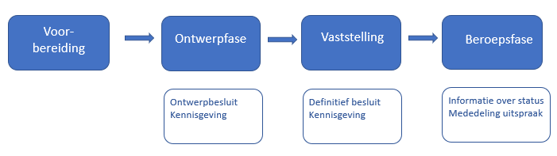Figuur 48Globaal overzicht van de procedure en de per fase aan de LVBB aan te leveren producten
10.4.1 Voorbereidingsfase
10.4.1.1 Inleiding
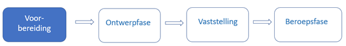Figuur 49 Voorbereidingsfase in de procedure van de Natura 2000-besluit
De verantwoordelijke minister moet het voorstel voor het op grond de habitatrichtlijn aanwijzen of wijzigen van Natura 2000-gebieden aan de Europese Commissie zenden. Onder bepaalde voorwaarden moet de minister daaraan voorafgaand het ontwerp van dat voorstel aan beide kamers der Staten-Generaal voorleggen[41] Artikel 23.5a lid 1 OW . De EU zet het gebied op de lijst van gebieden van communautair belang (de zogenaamde Communautaire lijst). Vanaf het moment van plaatsing op deze lijst geldt voor het gebied de bescherming van de habitatrichtlijn. De minister moet nu zo spoedig mogelijk, doch uiterlijk binnen zes jaar, het gebied aanwijzen als speciale beschermingszone en prioriteiten vaststellen gelet op het belang van de gebieden voor het in een gunstige staat van instandhouding behouden of herstellen van een type natuurlijke habitat (art. 4, vierde lid habitatrichtlijn).
Voor de aanwijzing van gebieden op grond van de vogelrichtlijn geldt geen aanmeldingsprocedure bij de EU en geen plaatsing op de Communautaire lijst. Deze gebieden worden direct aangewezen.
Er geldt voor het Natura 2000-besluit geen verplichting tot het voeren van overleg en participatie. Het is wel gebruikelijk om dat te doen. In deze fase en in de fase van voorleggen aan de Europese Commissie gelden geen procedurele eisen en worden er geen vormvereisten gesteld aan gebruikte producten. Er kan voor overleg en participatie een conceptversie van het voorgenomen besluit gemaakt worden die aan de STOP/TPOD-standaard voldoet, maar dat is niet verplicht. Het raadplegen van zo’n conceptversie kan alleen in een eigen raadpleegomgeving van Rijk of provincie. Conceptversies (en eventuele andere documenten) worden niet aan de LVBB aangeboden, niet op overheid.nl gepubliceerd en ook niet in DSO-LV getoond. De bepalingen en beschrijvingen in deze paragraaf over het aanleveren van producten en gegevens zijn er niet op van toepassing.
10.4.1.2 Technische voorbereiding: aanmaken van het Doel
Zoals in paragraaf 10.3.1 al is aangegeven, is een unieke identificatie nodig om van een omgevingsdocument vast te leggen dat tekst, informatieobjecten en OW-informatie bij elkaar horen, gedurende het hele proces van concipiëren, voorbereiden, besluiten, bekendmaken en consolideren. De STOP/TPOD-standaard noemt die identificatie Doel. Het Doel wordt bij het ter publicatie of bekendmaking aanleveren van een (ontwerp)besluit tot vaststelling of wijziging van het Natura 2000-besluit meegeleverd.
De eerste handeling bij de start van het opstellen van zo’n besluit is het aanmaken van een nieuwe Regelingversie met een nieuw Doel oftewel identificatie. Het Doel moet voldoen aan de eisen die STOP daaraan stelt:
de identificatie moet het volgende patroon volgen: /join/id/proces/” <overheid> “/” <datum> “/” <overig>
overheid: code van het bevoegde gezag volgens één van de STOP-waardelijsten voor ministerie of provincie
datum: datum van het ontstaan van het doel; dit mag een jaartal of een volledige datum zijn
overig: door het bevoegd gezag te bepalen; dit kan een betekenisloze code zijn of een betekenisvolle tekstuele beschrijving van (het resultaat van) het doel. Hiervoor gelden de volgende eisen:
alleen toegestaan: boven- en onderkast letters, cijfers en underscore;
te beginnen met een cijfer of letter;
maximale lengte:128 karakters.
Het Doel moet uiteraard uniek zijn.
Het Doel bij een besluit tot vaststelling van een Natura 2000-besluit zou er zo uit kunnen zien: /join/id/proces/mnre1153/2022/InstellingDrentsFrieseWoldLeggelderveld, maar ook /join/id/proces/mnre1153/2023/546d9cff158f4d148f9bb6c953dc3019. De plansoftware moet er voor zorgen dat het Doel uniek is. Het is dus goed mogelijk dat de plansoftware zelf het Doel genereert en dat dat eerder Doelen met een betekenisloze code (zoals het tweede voorbeeld) dan met een betekenisvolle beschrijving oplevert.
Nadat het Doel is aangemaakt, start de ambtelijke organisatie van Rijk of provincie in de plansoftware met de nieuwe regelingversie van het Natura 2000-besluit. Wanneer wordt gestart met de eerste versie van het Natura 2000-besluit, zal in de plansoftware een volledig nieuwe regeling van het Natura 2000-besluit worden opgesteld. Wanneer het gaat om een wijziging van een bestaand Natura 2000-besluit, worden in de nieuwe regelingversie de wijzigingen ten opzichte van de voorgaande toestand van de regeling aangebracht die voor de betreffende wijziging nodig zijn. Afhankelijk van de functionaliteiten die de gebruikte plansoftware biedt, zullen tussentijdse producten worden gegenereerd ten behoeve van intern en extern overleg, zoals met burgers, bedrijven, adviseurs en medeoverheden.
10.4.2 Ontwerpfase en ontwerpbesluit
Figuur 50Ontwerpfase in de procedure van de Natura 2000-besluit
10.4.2.1 Juridisch kader
Op de voorbereiding van het aanwijzingsbesluit is afdeling 3.4 Awb van toepassing[42] Artikel 16.25a lid 1 Ow . De minister kan bij de voorbereiding van een aanwijzingsbesluit afdeling 3.4 Awb buiten toepassing laten, voor zover niet in strijd met internationaalrechtelijke verplichtingen, als het gaat om een wijziging van ondergeschikte aard die niet leidt tot grotere nadelige gevolgen voor het milieu[43] Artikel 16.25a lid 2 Ow . Op de voorbereiding van een toegangsbeperkingsbesluit is het toepassen van afdeling 3.4 Awb niet verplicht. In dit toepassingsprofiel gaan we ervan uit dat ook bij een toegangsbeperkingsbesluit afdeling 3.4 Awb wordt toegepast. In het geval dat dat niet gedaan wordt, kan deze paragraaf worden overgeslagen en kan worden verdergegaan met paragraaf 10.4.3.
Het van afdeling 3.4 Awb onderdeel uitmakende artikel 3:11 lid 1 Awb luidt: “Het bestuursorgaan legt het ontwerp van het te nemen besluit, met de daarop betrekking hebbende stukken die redelijkerwijs nodig zijn voor een beoordeling van het ontwerp, ter inzage, met uitzondering van stukken waarvoor bij wettelijk voorschrift mededeling op de in artikel 12 van de Bekendmakingswet bepaalde wijze is voorgeschreven.” Bij diverse besluiten en andere rechtsfiguren die als omgevingsdocument zijn aangewezen, waaronder de omgevingsvisie, is zo’n uitzondering gemaakt en is in het Omgevingsbesluit bepaald dat van het ontwerp mededeling gedaan moet worden in het publicatieblad. In dat geval wordt een publicatie van de volledige inhoud van het ontwerpbesluit in het publicatieblad geplaatst[44] Artikelen 1, 2 en 12 Bekendmakingswet en wordt het ontwerpbesluit zelf dus niet ter inzage gelegd. Het Omgevingsbesluit voorziet niet in een verplichting om in het publicatieblad mededeling te doen van het ontwerp van het Natura 2000-besluit. Daarom moet het bestuursorgaan het ontwerp van het Natura 2000-besluit op elektronische wijze en op een fysieke locatie ter inzage leggen. Echter als het ontwerp van een Natura 2000-besluit niet aan de LVBB wordt aangeleverd en niet in het publicatieblad wordt gepubliceerd, wordt het ook niet aan DSO-LV doorgeleverd en kan het niet in de DSO-viewer geraadpleegd worden. De geometrische begrenzing van het Natura 2000-besluit en van onderdelen daarvan kan dan alleen in de vorm van kaarten in de tekst of in een bijlage bij de tekst worden opgenomen en niet als interactief raadpleegbaar geheel van tekst en kaart. Het definitieve besluit tot vaststelling of wijziging van het Natura 2000-besluit moet wel bekendgemaakt worden door plaatsing van de volledige inhoud van het Natura 2000-besluit in het publicatieblad en het Natura 2000-besluit moet vervolgens in de interactieve raadpleegomgeving van DSO-LV ontsloten worden. Het Natura 2000-besluit moet dan voldoen aan de eisen van de STOP/TPOD-standaard. Als het ontwerp van het Natura 2000-besluit niet met toepassing van de STOP/TPOD-standaard wordt opgesteld en alleen ter inzage gelegd wordt, zullen er grote verschillen zijn tussen het ontwerp en de definitieve versie. Dat is niet wenselijk. Daarom wordt aanbevolen om het ontwerp mede te delen door de volledige inhoud van het ontwerp van het Natura 2000-besluit, met toepassing van de STOP/TPOD-standaard, in Staatscourant respectievelijk provinciaal blad te plaatsen. In de beschrijvingen in de paragrafen 10.4.2.2 en 10.4.2.3 gaat dit toepassingsprofiel van die situatie uit. Wanneer deze aanbeveling wordt opgevolgd is het aan te raden om, zolang het Omgevingsbesluit niet voorziet in een verplichting om mededeling te doen van het ontwerp van het Natura 2000-besluit, het ontwerpbesluit ook bij de ter inzage gelegde stukken te presenteren.
Rijk of provincie moet het ontwerp van het besluit en de op het ontwerp betrekking hebbende stukken die redelijkerwijs nodig zijn voor een beoordeling van het ontwerp, ter inzage leggen[45] Artikel 3:11 lid 1 Awb . Die terinzagelegging geschiedt zowel op elektronische wijze als op een door Rijk of provincie aan te wijzen locatie[46] Artikel 13 lid 1 Bekendmakingswet . De terinzagelegging vindt niet plaats in het publicatieblad van het bevoegd gezag[47] Artikel 13 lid 3 Bekendmakingswet . Dit betekent dat Rijk of provincie moet zorgen voor de elektronische terinzagelegging van de op het ontwerpbesluit betrekking hebbende stukken en voor de terinzagelegging van die stukken op een fysieke locatie. Op het ontwerp-besluit betrekking hebbende stukken zullen vooral bestaan uit rapportages van uitgevoerde onderzoeken. De terinzagelegging op een door Rijk of provincie te bepalen locatie kan worden georganiseerd door op een in de kennisgeving aangegeven fysieke locatie de mogelijkheid te bieden om op een beeldscherm de op het ontwerp betrekking hebbende stukken te raadplegen. Uiteraard is het ook mogelijk om alle stukken te printen en op een fysieke locatie klaar te leggen voor inzage.
Voorafgaand aan de terinzagelegging geeft Rijk of provincie kennis van het ontwerp[48] Artikel 3:12 lid 1 Awb in Staatscourant of provinciaal blad[49] Artikel 12 jo artikel 2 Bekendmakingswet . De kennisgeving vermeldt in ieder geval:
een zakelijke weergave van de inhoud van het ontwerpbesluit[50] Artikel 12 Bekendmakingswet jo artikel 3.7 Besluit elektronische publicaties ;
een beschrijving van het betreffende object of de betreffende activiteit en, in voorkomend geval, de locatie daarvan;
een zodanige beschrijving van het ontwerpbesluit en het beoogde rechtsgevolg daarvan dat potentiële belanghebbenden eruit kunnen afleiden in hoeverre zij in hun belangen worden geraakt;
de wijze waarop en de periode waarin de stukken waar de kennisgeving betrekking op heeft voor eenieder ter inzage liggen[51] Artikel 12 Bekendmakingswet ;
wie in de gelegenheid worden gesteld om zienswijzen naar voren te brengen[52] Artikel 3:12 lid 2 Awb ;
op welke wijze dit kan geschieden[53] Artikel 3:12 lid 2 Awb .
Zienswijzen over het ontwerp kunnen naar voren worden gebracht door eenieder[54] Artikel 3:15 Awb jo artikel 16.23 lid 1 Ow . De termijn daarvoor bedraagt zes weken[55] Artikel 3:16 lid 1 Awb .
Wanneer de aanbeveling om het ontwerp van het Natura 2000-besluit mede te delen wordt opgevolgd, moet Rijk of provincie het ontwerpbesluit en de kennisgeving, met bijbehorende informatie, conform de STOP/TPOD-standaard opstellen en aan de LVBB aanleveren. De aanlevering van het ontwerpbesluit is beschreven in paragraaf 10.4.2.2; de aanlevering van de kennisgeving in paragraaf 10.4.2.3. De elektronische terinzagelegging van de op het ontwerp betrekking hebbende stukken is het onderwerp van paragraaf 10.4.2.4.
10.4.2.2 Aanleveren ontwerpbesluit
Ten behoeve van de interne ambtelijke en bestuurlijke besluitvorming binnen Rijk of provincie zal gebruik gemaakt worden van een versie van het ontwerpbesluit die door de plansoftware is gegenereerd. Na eventuele aanpassingen die uit de interne besluitvorming nodig zijn gebleken, wordt vanuit de plansoftware van Rijk of provincie een ontwerpbesluit gegenereerd ten behoeve van de publicatie in Staatscourant of provinciaal blad en het in DSO-LV kunnen raadplegen van de ontwerpregeling. Het ontwerpbesluit bestaat uit een ontwerpversie van het Besluit en de Regeling. In de Regeling staat de volledige initiële regeling (bij het instellen van een Natura 2000-besluit) of de wijzigingsinstructies voor de geconsolideerde regeling (bij een wijziging van een Natura 2000-besluit). Dit geheel wordt aangeleverd aan de LVBB. Let op dat er bij een ontwerpbesluit in het Besluit een (ontwerp)-artikel moet zijn waarin wordt aangegeven wat het voorgenomen besluit is (het vaststellen van het besluit). Dit artikel (in termen van de standaard: het WijzigArtikel) is nodig om te verwijzen naar de WijzigBijlage.
Het definitieve besluit dient te berusten op een deugdelijke motivering, die moet worden vermeld bij de bekendmaking van het besluit (zie hiervoor verder paragraaf 10.4.3.1). De (ontwerp-)motivering moet ook zijn opgenomen in het ontwerpbesluit. De motivering wordt geplaatst in het onderdeel Motivering van het Besluit.
Om de mededeling van het ontwerpbesluit in Staatscourant of provinciaal blad te kunnen doen en doorlevering door LVBB aan DSO-LV mogelijk te maken moeten Besluit en Regeling voldoen aan de specificaties die in deel B van dit toepassingsprofiel zijn gegeven. Aanvullend daarop moet Rijk of provincie metadata over besluit en regeling en informatie over het Procedureverloop en de consolidatie meeleveren. Rijk of provincie moet ook een publicatieopdracht aan de LVBB aanleveren, waarin hij/zij aangeeft welk soort publicatie wordt aangeleverd en op welke datum die publicatie gepubliceerd moet worden. Dat is achtereenvolgens in de volgende paragrafen beschreven.
10.4.2.2.1 Besluitmetadata
De Besluitmetadata leggen vast welke organisatie verantwoordelijk is voor de besluitversie en bevatten gegevens om het besluit goed vindbaar te maken. In paragraaf 10.3.2 zijn de Besluitmetadata beschreven. Daar is aangegeven of het gegeven verplicht of optioneel is, hoe vaak het moet c.q. kan voorkomen en wat het doel respectievelijk het resultaat van het gegeven is. Hierna is voor de BesluitMetadata die relevant zijn voor het ontwerpbesluit tot vaststelling of wijziging van een Natura 2000-besluit aangegeven hoe ze moeten worden toegepast.
eindverantwoordelijke: kies uit de STOP-waardelijst voor ministerie of provincie (de identificatiecode van) het betreffende ministerie of provincie.
maker: kies uit de STOP-waardelijst voor ministerie of provincie (de identificatiecode van) het betreffende ministerie of provincie.
soortBestuursorgaan: kies uit de STOP-waardelijst bestuursorgaan de waarde ‘minister’ respectievelijk ‘gedeputeerde staten’.
informatieobjectRef: neem hier de verwijzingen op naar de GIO’s (en eventueel de als informatieobject gemodelleerde PDF-documenten) die het ontwerpbesluit aan de regeling toevoegt of die het ontwerpbesluit wijzigt.
officieleTitel: geef het ontwerpbesluit een onderscheidende en herkenbare titel. De officiële titel moet gelijk zijn aan het RegelingOpschrift van het besluit. Een voorbeeld van de officiële titel van een ontwerpbesluit tot vaststelling van een Natura 2000-besluit is ‘Ontwerp Aanwijzingsbesluit Drents-Friese Wold en Leggelderveld’; een voorbeeld van de officiële titel van een ontwerpbesluit tot wijziging van een Natura 2000-besluit is ‘Ontwerp wijziging Toegangsbeperkingsbesluit Natura 2000-gebied IJsselmeer t.b.v. wijzigen begrenzing habitatrichtlijngebied’.
citeertitel: geadviseerd wordt om het gegeven citeertitel te gebruiken. Pas de citeertitel als volgt toe:
de citeertitel is in het besluit vastgesteld: neem de citeertitel over uit de betreffende bepaling en kies voor isOfficieel de waarde true;
de citeertitel is niet in het besluit vastgesteld: laat de citeertitel hetzelfde zijn als de officiële titel en het RegelingOpschrift van het besluit, of, als die erg lang zijn, een verkorte versie daarvan en kies voor isOfficieel de waarde false.
onderwerp: kies uit de STOP-waardelijst onderwerp alle toepasselijke onderwerpen. Voor omgevingsdocumenten kunnen deze waarden uit de waardelijst passend zijn: wonen, verkeer, ruimte en infrastructuur, natuur en milieu, cultuur en recreatie, bouwen en verbouwen, scheepvaart, rail- en wegverkeer, luchtvaart, waterbeheer, ruimtelijke ordening, veiligheid, water, stoffen, natuur- en landschapsbeheer, lucht, geluid, flora en fauna, energie, bodem, afval, defensie, recreatie, horeca, evenementen, cultuur, cultureel erfgoed, klimaatverandering.
rechtsgebied: kies uit de STOP-waardelijst rechtsgebied in ieder geval voor de waarde ‘omgevingsrecht’ en vul dit indien van toepassing aan met andere toepasselijke waarden uit deze waardelijst.
soortProcedure: kies uit de STOP-waardelijst soortprocedure de waarde ‘Ontwerpbesluit’.
grondslag: maak een verwijzing naar artikel 2.44 lid 1 Ow voor het aanwijzingsbesluit, naar artikel 2.45 lid 1 Ow voor het toegangsbeperkingsbesluit van de provincie of naar artikel 2.45 lid 2 Ow voor het toegangsbeperkingsbesluit van het Rijk. De grondslag ziet er -in STOP-XML- uit als in Figuur 51 en Figuur 52:
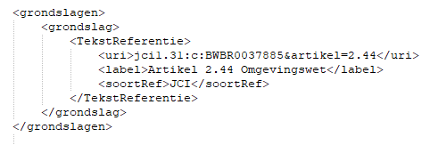Figuur 51Grondslag voor een aanwijzingsbesluit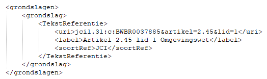Figuur 52Grondslag voor een toegangsbeperkingsbesluit van GS
Waarschuwing toekomstigewijziging TPOD-standaard
In een volgende versie van de TPOD-standaard zal het verplicht worden om het gegeven citeertitel te gebruiken. Als overgangsmaatregel wordt geadviseerd wordt om -wanneer en zodra de gebruikte plansoftware dat mogelijk maakt- op deze wijziging te anticiperen door het gegeven citeertitel te gebruiken.
10.4.2.2.2 Regelingmetadata
De Regelingmetadata leggen vast welke organisatie verantwoordelijk is voor de regelingversie en bevatten gegevens om de regeling goed vindbaar te maken. In paragraaf 10.3.3 zijn de RegelingMetadata beschreven. Daar is aangegeven of het gegeven verplicht of optioneel is, hoe vaak het moet c.q. kan voorkomen en wat het doel respectievelijk het resultaat van het gegeven is. Hierna is voor de RegelingMetadata die relevant zijn voor het ontwerpbesluit tot vaststelling of wijziging van een Natura 2000-besluit aangegeven hoe ze moeten worden toegepast.
soortRegeling: kies uit de STOP-waardelijst soortRegeling de waarde ‘Aanwijzingsbesluit N2000’ respectievelijk ‘Toegangsbeperkingsbesluit’.
eindverantwoordelijke: kies uit de STOP-waardelijst voor ministerie of provincie (de identificatiecode van) het betreffende ministerie of provincie.
maker: kies uit de STOP-waardelijst voor ministerie of provincie (de identificatiecode van) het betreffende ministerie of provincie.
soortBestuursorgaan: kies uit de STOP-waardelijst bestuursorgaan de waarde ‘minister’ respectievelijk ‘gedeputeerde staten’.
officieleTitel: geef de Regeling van het Natura 2000-besluit een onderscheidende en herkenbare titel. Voorbeelden van de officiële titel van een Natura 2000-besluit zijn ‘Aanwijzingsbesluit Drents-Friese Wold en Leggelderveld’ en ‘Toegangsbeperkingsbesluit Natura 2000-gebied IJsselmeer’.
citeertitel: maak gebruik van het gegeven citeertitel en doe dat als volgt:
in de regeling van het Natura 2000-besluit is de citeertitel vastgesteld: neem de citeertitel over uit de betreffende bepaling en kies voor isOfficieel de waarde true;
in de regeling van het Natura 2000-besluit is de citeertitel niet vastgesteld: laat de citeertitel hetzelfde zijn als de officiële titel (en het RegelingOpschrift van de regeling), of, als die erg lang is, een verkorte versie daarvan en kies voor isOfficieel de waarde false.
onderwerp: kies uit de STOP-waardelijst onderwerp alle toepasselijke onderwerpen. Voor omgevingsdocumenten kunnen deze waarden uit de waardelijst passend zijn: wonen, verkeer, ruimte en infrastructuur, natuur en milieu, cultuur en recreatie, bouwen en verbouwen, scheepvaart, rail- en wegverkeer, luchtvaart, waterbeheer, ruimtelijke ordening, veiligheid, water, stoffen, natuur- en landschapsbeheer, lucht, geluid, flora en fauna, energie, bodem, afval, defensie, recreatie, horeca, evenementen, cultuur, cultureel erfgoed, klimaatverandering.
rechtsgebied: kies uit de STOP-waardelijst rechtsgebied in ieder geval de waarde ‘omgevingsrecht’ en vul dit indien van toepassing aan met andere toepasselijke waarden uit deze waardelijst.
overheidsdomein: kies uit de STOP-waardelijst overheidsthema alle toepasselijke waarden. Voor omgevingsdocumenten kunnen deze waarden uit de waardelijst passend zijn: bouwen, wonen en leefomgeving; cultuur, sport, vrije tijd; landbouw, natuur en voedsel; milieu, ruimte en water; defensie; verkeer en vervoer.
grondslag: maak een verwijzing naar artikel 2.44 lid 1 Ow voor het aanwijzingsbesluit, naar artikel 2.45 lid 1 Ow voor het toegangsbeperkingsbesluit van de provincie of naar artikel 2.45 lid 2 Ow voor het toegangsbeperkingsbesluit van het Rijk. De grondslag ziet er -in STOP-XML- uit als in Figuur 53:
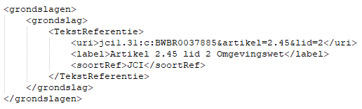Figuur 53Grondslag voor een toegangsbeperkingsbesluit van het Rijk
Waarschuwing toekomstigewijziging TPOD-standaard
In een volgende versie van de TPOD-standaard zal het verplicht worden om het gegeven citeertitel te gebruiken. Als overgangsmaatregel wordt geadviseerd wordt om -wanneer en zodra de gebruikte plansoftware dat mogelijk maakt- op deze wijziging te anticiperen door het gegeven citeertitel te gebruiken.
10.4.2.2.3 Procedureverloop
Met de module Procedureverloop wordt informatie over het verloop van de procedure van het besluit tot vaststelling of wijziging van een Natura 2000-besluit en de verschillende stappen daarin bijgehouden. In paragraaf 10.3.6 is beschreven hoe het doorgeven van procedure-informatie met het Procedureverloop werkt. Hierna is aangegeven hoe dat concreet bij het ontwerpbesluit tot vaststelling of wijziging van een Natura 2000-besluit moet worden toegepast.
In de procedure van het ontwerpbesluit moet een module Procedureverloop worden aangeleverd. Dat kan op twee manieren. De eerste manier is door het Procedureverloop initieel aan te leveren met het ontwerpbesluit en vervolgens met een Procedureverloopmutatie te muteren door de kennisgeving. De tweede manier is door bij het ontwerpbesluit geen Procedureverloop aan te leveren maar het Procedureverloop aan te leveren met de kennisgeving. Ook in dat geval moet dat met een Procedureverloopmutatie. Welke manier wordt gekozen hangt ervan af of het bij het bevoegd gezag gebruikelijk is dat het bestuursorgaan zelf besluit om het ontwerpbesluit ter inzage te leggen of dat dit gemandateerd is aan een ambtenaar. In het eerste geval is er een Procedureverloop bij het ontwerpbesluit, in het tweede geval niet. Het Procedureverloop is dus bij het ontwerpbesluit optioneel en bij de kennisgeving verplicht. Bij het Natura 2000-besluit ligt het voor de hand dat minister respectievelijk GS zelf het besluit zullen nemen om het ontwerpbesluit ter inzage te leggen; een dergelijke beslissing zal niet gemandateerd zijn.
Als wordt gekozen voor de eerste manier wordt de module Procedureverloop bij het ontwerpbesluit aangeleverd. Het Procedureverloop moet dan de volgende gegevens bevatten, met dien verstande dat ten minste één van de Procedurestappen moet voorkomen:
Procedurestap
soortStap: kies uit de STOP-waardelijst Procedurestap_ontwerp de waarde ‘Vaststelling’
voltooidOp: vul de datum in waarop het bestuursorgaan het ontwerpbesluit heeft vastgesteld
Procedurestap
soortStap: kies uit de STOP-waardelijst Procedurestap_ontwerp de waarde ‘Ondertekening’
voltooidOp: vul de datum in waarop het bestuursorgaan het ontwerpbesluit heeft ondertekend
bekendOp: vul de datum in waarop het ontwerpbesluit in Staatscourant of provinciaal blad wordt gepubliceerd.
Gebruik het gegeven meerInformatie niet.
NB: bij keuze voor de tweede manier is er geen Procedureverloop bij het ontwerpbesluit.
Toekomstige functionaliteit
In de huidige versie van de STOP/TPOD-standaard is beschreven dat in de procedure van het ontwerpbesluit de module Procedureverloop verplicht is bij de aanlevering van de kennisgeving en optioneel bij de aanlevering van het ontwerpbesluit. De DSO-keten ondersteunt dit nog niet; het wordt in de keten geïmplementeerd als onderdeel van de implementatie van de huidige versie van de standaard.
Workaround
Zolang dit niet in de DSO-keten is geïmplementeerd, is het verplicht een module Procedureverloop bij het ontwerpbesluit aan te leveren en die door de kennisgeving te muteren.
NB: de module Procedureverloop bij het ontwerpbesluit mag niet leeg zijn.
10.4.2.2.4 ConsolidatieInformatie
Met de module ConsolidatieInformatie wordt informatie aangeleverd ten behoeve van de consolidatie van het besluit in de regeling. In de module ConsolidatieInformatie worden opgenomen:
(een container) BeoogdeRegelgeving met daarin:
BeoogdeRegeling, met daarbinnen:
Doel: vul hier het Doel in van het ontwerp-vaststellings- of wijzigingsbesluit
instrumentVersie: vul hier de identificatie in van de nieuwe regelingversie van het Natura 2000-besluit
eId: vul hier de identificatie in van het WijzigArtikel in het ontwerpbesluit (het artikel waarin staat wat het bestuursorgaan beoogt met het besluit vast te stellen of te wijzigen)
BeoogdInformatieobject, voor ieder Informatieobject dat het ontwerpbesluit vaststelt, met daarbinnen:
Doel: vul hier het Doel in van het ontwerp-vaststellings- of wijzigingsbesluit
instrumentVersie: vul hier de identificatie in van het nieuwe Informatieobject
eId: maak hier een verwijzing naar het element in de informatieobjecten-bijlage in de WijzigBijlage dat de ExtIoRef (de identificatie van het daadwerkelijke informatieobject) bevat.
Bij een ontwerpbesluit worden geen tijdstempels toegevoegd.
10.4.2.2.5 Datum publicatie ontwerpbesluit
Rijk of provincie moet de datum waarop hij/zij wil dat het ontwerpbesluit in Staatscourant of provinciaal blad wordt gepubliceerd, doorgeven in de publicatieopdracht aan de LVBB, met het gegeven datumBekendmaking. Deze datum moet altijd in de toekomst liggen.
10.4.2.3 Kennisgeving ontwerpbesluit
10.4.2.3.1 Inhoud en aanlevering kennisgeving
Zoals in paragraaf 10.4.2.1 al is beschreven moet Rijk of provincie voorafgaand aan de terinzagelegging in Staatscourant of provinciaal blad kennis geven van het ontwerpbesluit. De kennisgeving vermeldt in ieder geval:
een zakelijke weergave van de inhoud van het ontwerpbesluit;
een beschrijving van het betreffende object of de betreffende activiteit en, in voorkomend geval, de locatie daarvan;
een zodanige beschrijving van het ontwerpbesluit en het beoogde rechtsgevolg daarvan dat potentiële belanghebbenden eruit kunnen afleiden in hoeverre zij in hun belangen worden geraakt;
de wijze waarop en de periode waarin de stukken waar de kennisgeving betrekking op heeft voor eenieder ter inzage liggen;
wie in de gelegenheid worden gesteld om zienswijzen naar voren te brengen;
op welke wijze dit kan geschieden.
Om de kennisgeving aan de LVBB aan te kunnen leveren en in Staatscourant respectievelijk provinciaal blad te plaatsen moet deze voldoen aan de specificaties voor de kennisgeving, die in paragraaf 10.2.2 zijn beschreven. De kennisgeving is een zelfstandige eenheid en is geen onderdeel van het ontwerpbesluit. De kennisgeving zit niet in hetzelfde aanleverpakket als het ontwerpbesluit waar het bij hoort, maar moet apart worden aangeleverd nádat het besluit-pakket is aangeleverd.
Bij de kennisgeving moet Rijk of provincie KennisgevingMetadata en informatie over het Procedureverloop meeleveren. Rijk of provincie moet ook een publicatieopdracht aan de LVBB aanleveren, waarin hij/zij aangeeft welk soort publicatie wordt aangeleverd en op welke datum die publicatie gepubliceerd moet worden. Dat is achtereenvolgens in de volgende paragrafen beschreven.
NB: de kennisgeving komt wel in Staatscourant of provinciaal blad, maar wordt niet in DSO-LV getoond. In DSO-LV wordt wel gebruik gemaakt van informatie uit (de metadata bij) de kennisgeving.
10.4.2.3.2 Kennisgevingmetadata
De KennisgevingMetadata leggen vast welke organisatie verantwoordelijk is voor de kennisgeving en bevatten gegevens om de kennisgeving goed vindbaar te maken. In paragraaf 10.3.4 zijn de KennisgevingMetadata beschreven. Daar is aangegeven of het gegeven verplicht of optioneel is, hoe vaak het moet c.q. kan voorkomen en wat het doel respectievelijk het resultaat van het gegeven is. Hierna is voor de KennisgevingMetadata die relevant zijn voor de kennisgeving behorend bij een ontwerpbesluit tot vaststelling of wijziging van een Natura 2000-besluit aangegeven hoe ze moeten worden toegepast.
eindverantwoordelijke: kies uit de STOP-waardelijst voor ministerie of provincie (de identificatiecode van) het betreffende ministerie of provincie.
maker: kies uit de STOP-waardelijst voor ministerie of provincie (de identificatiecode van) het betreffende ministerie of provincie.
officieleTitel: geef de kennisgeving een zo onderscheidend en herkenbaar mogelijke titel. De officiële titel moet gelijk zijn aan het RegelingOpschrift van de kennisgeving. Voorbeelden van de officiële titel van deze kennisgeving zijn ‘Kennisgeving ontwerp Aanwijzingsbesluit Drents-Friese Wold en Leggelderveld’ en ‘Kennisgeving ontwerp wijziging Toegangsbeperkingsbesluit Natura 2000-gebied IJsselmeer t.b.v. wijzigen begrenzing habitatrichtlijngebied’.
onderwerp: kies uit de STOP-waardelijst onderwerp alle toepasselijke onderwerpen. Voor omgevingsdocumenten kunnen deze waarden uit de waardelijst passend zijn: wonen, verkeer, ruimte en infrastructuur, natuur en milieu, cultuur en recreatie, bouwen en verbouwen, scheepvaart, rail- en wegverkeer, luchtvaart, waterbeheer, ruimtelijke ordening, veiligheid, water, stoffen, natuur- en landschapsbeheer, lucht, geluid, flora en fauna, energie, bodem, afval, defensie, recreatie, horeca, evenementen, cultuur, cultureel erfgoed, klimaatverandering.
mededelingOver: maak een verwijzing naar de identificatie van het ontwerpbesluit waarover de kennisgeving gaat.
soortKennisgeving: kies de waarde KennisgevingBesluittermijnen.
10.4.2.3.3 Procedureverloop
Met de module Procedureverloop wordt informatie over het verloop van de procedure van het besluit tot vaststelling of wijziging van een Natura 2000-besluit en de verschillende stappen daarin bijgehouden. In paragraaf 10.3.6 is beschreven hoe het doorgeven van procedure-informatie met het Procedureverloop werkt. Hierna is aangegeven hoe dat concreet bij de kennisgeving behorend bij een ontwerpbesluit tot vaststelling of wijziging van een Natura 2000-besluit moet worden toegepast.
Zoals in paragraaf 10.4.2.2.3 al is aangegeven moet in de procedure van het ontwerpbesluit een module Procedureverloop worden aangeleverd en kan dat op twee manieren. De eerste manier is door het Procedureverloop initieel aan te leveren met het ontwerpbesluit en vervolgens met een Procedureverloopmutatie te muteren door de kennisgeving. De tweede manier is door bij het ontwerpbesluit geen Procedureverloop aan te leveren maar het Procedureverloop aan te leveren met de kennisgeving. Het Procedureverloop is dus bij het ontwerpbesluit optioneel en bij de kennisgeving verplicht.
Bij beide manieren wordt bij de kennisgeving van het ontwerpbesluit het Procedureverloop met een Procedureverloopmutatie aangeleverd. Daarmee worden aan het Procedureverloop de volgende gegevens toegevoegd:
Procedurestap
soortStap: kies uit de STOP-waardelijst Procedurestap_ontwerp de waarde ‘Begin inzagetermijn’.
voltooidOp: vul de datum in waarop de inzagetermijn van het ontwerpbesluit start.
Procedurestap
soortStap: kies uit de STOP-waardelijst Procedurestap_ontwerp de waarde ‘Einde inzagetermijn’
voltooidOp: vul de datum in waarop de inzagetermijn van het ontwerpbesluit is geëindigd. Dit is de laatste dag waarop nog zienswijzen op het ontwerpbesluit kunnen worden ingediend.
bekendOp: vul de datum in waarop de kennisgeving in de Staatscourant of het provinciaal blad wordt gepubliceerd.
Gebruik het gegeven meerInformatie niet.
Toekomstige functionaliteit
In de huidige versie van de STOP/TPOD-standaard is beschreven dat in de procedure van het ontwerpbesluit de module Procedureverloop verplicht is bij de aanlevering van de kennisgeving en optioneel bij de aanlevering van het ontwerpbesluit. De DSO-keten ondersteunt dit nog niet; het wordt in de keten geïmplementeerd als onderdeel van de implementatie van de huidige versie van de standaard.
Workaround
Zolang dit niet in de DSO-keten is geïmplementeerd, is het verplicht een module Procedureverloop bij het ontwerpbesluit aan te leveren en die door de kennisgeving te muteren.
NB: de module Procedureverloop bij het ontwerpbesluit mag niet leeg zijn.
10.4.2.3.4 Datum publicatie kennisgeving
Rijk of provincie moet de datum waarop hij/zij wil dat de kennisgeving in Staatscourant of provinciaal blad wordt gepubliceerd, doorgeven in de publicatieopdracht aan de LVBB, met het gegeven datumBekendmaking. Deze datum moet altijd in de toekomst liggen.
10.4.2.4 Terinzageleggen op het ontwerpbesluit betrekking hebbende stukken
Rijk of provincie moet eventuele op het ontwerp betrekking hebbende stukken die redelijkerwijs nodig zijn voor een beoordeling van het ontwerp, ter inzage leggen.
NB: Zoals in paragraaf 10.4.2.1 al is aangegeven zullen op het ontwerp-besluit betrekking hebbende stukken vooral bestaan uit rapportages van uitgevoerde onderzoeken.
Toekomstige functionaliteit
Onderzocht wordt of in de toekomst voor de elektronische terinzagelegging van stukken die betrekking hebben op het (ontwerp)besluit van omgevingsdocumenten gebruik gemaakt kan worden van een nog te ontwikkelen centrale voorziening voor het ontsluiten van dergelijke stukken in het kader van de Wet open overheid en de Bekendmakingswet. Wanneer duidelijk is of voor deze stukken gebruik gemaakt kan worden van een centrale voorziening, welke voorziening dat is en hoe de aanlevering moet plaatsvinden, zal dat in een volgende versie van dit toepassingsprofiel beschreven worden.
Workaround
Zolang er geen centrale voorziening is voor de elektronische terinzagelegging van op het (ontwerp)besluit betrekking hebbende stukken, past het bevoegd gezag naar keuze één van de volgende methoden toe:
het ontsluit de betreffende stukken op een zelf te bepalen elektronische wijze, bijvoorbeeld via de eigen website, of
het levert de betreffende stukken aan de LVBB aan als onderdeel van het Besluit conform STOP. Daarbij moet worden voldaan aan de eisen aan PDF-bijlagen die in dit hoofdstuk zijn beschreven. De LVBB stelt beperkingen aan de bestandsgrootte.
Op het besluit betrekking hebbende stukken zijn stukken waarmee het bestuursorgaan het besluit onderbouwt en motiveert. Wanneer het bevoegd gezag zelf de stukken op elektronische wijze ontsluit, neemt het in het onderdeel Motivering dan wel in het onderdeel Toelichting van het Besluit een link op naar de webpagina waar die stukken zijn ontsloten, en/of een link naar het betreffende stuk op die webpagina. Wanneer het bevoegd gezag de stukken opneemt als onderdeel van het Besluit, neemt het ze op als Bijlagen bij de Motivering dan wel de Toelichting.
Wanneer het bevoegd gezag zelf de stukken op elektronische wijze ontsluit, wordt aanbevolen om de terinzagelegging op elektronische wijze van de op het ontwerpbesluit betrekking hebbende stukken en de op het (definitieve) besluit betrekking hebbende stukken in ieder geval te laten voortduren totdat de volledige procedure is afgerond.
10.4.3 Fase van vaststelling, bekendmaking en inwerkingtreden: definitief besluit
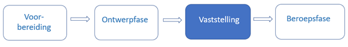Figuur 54 Vaststellingsfase in de procedure van het Natura 2000-besluit
10.4.3.1 Juridisch kader
Het aanwijzingsbesluit wordt vastgesteld door de minister[56] Artikel 2.44 lid 1 Ow , het toegangsbeperkingsbesluit wordt vastgesteld door gedeputeerde staten[57] Artikel 2.45 lid 2 Ow respectievelijk minister[58] Artikel 2.45 lid 2 Ow . Deze bevoegdheid kan niet gedelegeerd worden.
Op Natura 2000-besluiten zijn de afdelingen 3.6 en 3.7 Awb over de bekendmaking en mededeling en over de motivering van besluiten van toepassing. Dat houdt het volgende in. Het Natura 2000-besluit treedt pas in werking als het is bekendgemaakt[59] Artikel 3:40 Awb . Het definitieve besluit tot vaststelling of wijziging van het Natura 2000-besluit wordt bekendgemaakt in Staatscourant of provinciaal blad[60] Artikel 3:42 Awb en artikel 5 respectievelijk artikel 6 en artikel 2 Bekendmakingswet . Het besluit dient te berusten op een deugdelijke motivering, die moet worden vermeld bij de bekendmaking van het besluit[61] Artikel 3:46 en 3:47 lid 1 Awb . Bij de bekendmaking van het besluit moet melding gemaakt worden van het feit dat tegen het besluit beroep kan worden ingesteld. Daarbij moet worden vermeld door wie, binnen welke termijn en bij welk orgaan beroep kan worden ingesteld[62] Artikel 3:45 Awb . Deze bepaling houdt in dat deze zogeheten rechtsmiddelenclausule in het besluit moet worden opgenomen.
Tegelijkertijd met of zo spoedig mogelijk na de bekendmaking moet Rijk of provincie van het besluit mededeling doen aan degenen die bij de voorbereiding ervan hun zienswijze naar voren hebben gebracht[63] Artikel 3:43 lid 1 Awb . Aan hen moet Rijk of provincie een exemplaar van het besluit toezenden[64] Artikel 3:44 lid 2 jo artikel 3:44 lid 1 onderdeel b .
Rijk of provincie moet de op de zaak betrekking hebbende stukken ter inzage leggen[65] Artikel 3:44 lid 2, artikel 3:44 lid 1 onderdeel a en artikel 3:11 lid 1 Awb en moet gelijktijdig met de bekendmaking van het besluit in Staatscourant of provinciaal blad kennis geven van de terinzagelegging van die stukken[66] Artikel 3:44 lid 2, artikel 3:44 lid 1 onderdeel a en artikel 3:12 lid 1 Awb . De terinzagelegging geschiedt zowel op elektronische wijze als op een door Rijk of provincie aan te wijzen locatie[67] Artikel 13 lid 1 Bekendmakingswet . De terinzagelegging vindt niet plaats in Staatscourant of provinciaal blad[68] Artikel 13 lid 3 Bekendmakingswet . Dit betekent dat Rijk of provincie moet zorgen voor de elektronische terinzagelegging van op de zaak betrekking hebbende stukken en voor de terinzagelegging van die stukken op een fysieke locatie. Op de zaak betrekking hebbende stukken zullen vooral bestaan uit rapportages van uitgevoerde onderzoeken. De terinzagelegging op een door Rijk of provincie te bepalen locatie kan worden georganiseerd door op een in de kennisgeving aangegeven locatie, zoals het provinciehuis, de mogelijkheid te bieden om op een beeldscherm de op de zaak betrekking hebbende stukken te raadplegen. Uiteraard is het ook mogelijk om alle stukken te printen en op de fysieke locatie klaar te leggen voor inzage. Het besluit zelf hoeft niet ter inzage gelegd te worden, dat moet immers bekendgemaakt worden in het publicatieblad. De stukken liggen ter inzage totdat de beroepstermijn is verstreken[69] Artikel 3:44 lid 2 jo artikel 3:44 lid 1 onder a Awb .
Het Natura 2000-besluit treedt in werking op de dag na de bekendmaking, tenzij in het besluit daarvoor een ander tijdstip is aangewezen.
Tegen een Natura 2000-besluit kan bij de rechtbank beroep worden ingesteld[70] Artikel 8:1 Awb . Wanneer afdeling 3.4 Awb niet is toegepast, moet de belanghebbende voorafgaand aan het instellen van beroep eerst bezwaar maken[71] Artikel 7:1 Awb . Dat is het geval als de minister afdeling 3.4 Awb bij het aanwijzingsbesluit buiten toepassing heeft gelaten (bij een wijziging van ondergeschikte aard die niet leidt tot grotere nadelige gevolgen voor het milieu en voor zover dat niet in strijd is met internationaalrechtelijke verplichtingen)[72] Artikel 16.25a, lid 2 Ow en wanneer Rijk of provincie er niet voor heeft gekozen om het toegangsbeperkingsbesluit met afdeling 3.4 Awb voor te bereiden. Naar verwachting zullen de meeste Natura 2000-besluiten met afdeling 3.4 Awb worden voorbereid.
De termijn voor het indienen van een beroepschrift bedraagt zes weken[73] Artikel 6:7 Awb . De termijn begint op de dag na die waarop het besluit is bekendgemaakt[74] Artikel 6:8 lid 1 Awb . Tegen de uitspraak van de rechtbank kunnen een belanghebbende en het bestuursorgaan hoger beroep instellen bij de Afdeling bestuursrechtspraak van de Raad van State[75] Artikel 8:104 jo 8:105 lid 1 Awb .
10.4.3.2 Voorbereiding en besluitvorming
Na de publicatie van het ontwerpbesluit en voorafgaand aan de bekendmaking van het definitieve besluit vindt een extern en intern proces plaats. Er worden zienswijzen ingediend over het ontwerpbesluit, die zienswijzen worden beantwoord en wanneer er naar aanleiding van die zienswijzen aanpassingen in het Natura 2000-besluit nodig zijn, verwerkt Rijk of provincie die in de plansoftware.
Het Natura 2000-besluit moet worden voorzien van een deugdelijke motivering en die motivering moet vermeld worden bij de bekendmaking van het besluit (zie daarvoor paragraaf 10.4.3.1). Die motivering wordt geplaatst in het onderdeel Motivering van het Besluit, zie paragraaf 4.4.
Hierna maakt de ambtelijke organisatie van Rijk of provincie een nieuwe versie van Besluit en Regeling, die het interne besluitvormingsproces doorloopt. Dit resulteert in een voorstel aan het bevoegde bestuursorgaan. Bij het nemen van het besluit kan het bestuursorgaan nog wijzigingen aanbrengen. De ambtelijke organisatie verwerkt deze eventuele wijzigingen in de plansoftware.
Rijk of provincie moet mededeling van het besluit tot vaststelling of wijziging van het Natura 2000-besluit doen aan degenen die bij de voorbereiding ervan hun zienswijze naar voren hebben gebracht en moet aan hen een exemplaar van het besluit toezenden. Het is aan Rijk of provincie om te bepalen hoe en in welke vorm hij/zij dit uitvoert. De DSO-keten biedt hiervoor geen ondersteuning.
10.4.3.3 Aanleveren definitief besluit
Ten behoeve van de bekendmaking van het definitieve besluit in Staatscourant of provinciaal blad genereert de ambtelijke organisatie vanuit de plansoftware van Rijk of provincie een besluit, bestaande uit een (definitieve) versie van het Besluit en de Regeling. In de Regeling staat de volledige initiële regeling (bij het instellen van een Natura 2000-besluit) of de wijzigingsinstructies voor de geconsolideerde regeling (bij een wijziging van een Natura 2000-besluit). Dit geheel moet Rijk of provincie aanleveren aan de LVBB.
Opgemerkt wordt dat de STOP/TPOD-standaard de term ‘definitief besluit’ gebruikt. Dit is een technische term die zowel wordt gebruikt voor het ‘product’ van deze fase, te weten het genomen besluit, als voor de procedure van besluitvorming, bekendmaking en inwerkingtreding.
Om de bekendmaking van het besluit tot vaststelling of wijziging van het Natura 2000-besluit in Staatscourant of provinciaal blad te kunnen doen en doorlevering door LVBB aan DSO-LV mogelijk te maken, moeten Besluit en Regeling voldoen aan de specificaties die in deel B van dit toepassingsprofiel zijn gegeven. Aanvullend daarop moet Rijk of provincie metadata over besluit en regeling en informatie over het Procedureverloop en de consolidatie meeleveren. Rijk of provincie moet ook een publicatieopdracht aan de LVBB aanleveren, waarin hij/zij aangeeft welk soort publicatie wordt aangeleverd en op welke datum die publicatie gepubliceerd moet worden. Dat is achtereenvolgens in de volgende paragrafen beschreven.
10.4.3.3.1 Besluitmetadata
De Besluitmetadata leggen vast welke organisatie verantwoordelijk is voor de besluitversie en bevatten gegevens om het besluit goed vindbaar te maken. In paragraaf 10.3.2 zijn de Besluitmetadata beschreven. Daar is aangegeven of het gegeven verplicht of optioneel is, hoe vaak het moet c.q. kan voorkomen en wat het doel respectievelijk het resultaat van het gegeven is. Hierna is voor de BesluitMetadata die relevant zijn voor het definitieve besluit tot vaststelling of wijziging van een Natura 2000-besluit aangegeven hoe ze moeten worden toegepast.
eindverantwoordelijke: kies uit de STOP-waardelijst voor ministerie of provincie (de identificatiecode van) het betreffende ministerie of provincie.
maker: kies uit de STOP-waardelijst voor ministerie of provincie (de identificatiecode van) het betreffende ministerie of provincie.
soortBestuursorgaan: kies uit de STOP-waardelijst bestuursorgaan de waarde ‘minister’ respectievelijk ‘gedeputeerde staten’.
informatieobjectRef: neem hier de verwijzingen op naar de GIO’s (en eventueel de als informatieobject gemodelleerde PDF-documenten) die het besluit aan de regeling toevoegt of die het besluit wijzigt.
officieleTitel: geef het besluit een onderscheidende en herkenbare titel. De officiële titel moet gelijk zijn aan het RegelingOpschrift van het besluit. Een voorbeeld van de officiële titel van een besluit tot vaststelling van een Natura 2000-besluit is ‘Besluit tot vaststelling Aanwijzingsbesluit Drents-Friese Wold en Leggelderveld’; een voorbeeld van de officiële titel van een besluit tot wijziging van een Natura 2000-besluit is ‘Wijziging Toegangsbeperkingsbesluit Natura 2000-gebied IJsselmeer t.b.v. wijzigen begrenzing habitatrichtlijngebied’.
citeertitel: geadviseerd wordt om het gegeven citeertitel te gebruiken. Pas de citeertitel als volgt toe:
de citeertitel is in het Besluit vastgesteld: neem de citeertitel over uit de betreffende bepaling en kies voor isOfficieel de waarde true;
de citeertitel is niet in het Besluit vastgesteld: laat de citeertitel hetzelfde zijn als de officiële titel en het RegelingOpschrift van het besluit, of, als die erg lang zijn, een verkorte versie daarvan en kies voor isOfficieel de waarde false.
onderwerp: kies uit de STOP-waardelijst onderwerp alle toepasselijke onderwerpen. Voor omgevingsdocumenten kunnen deze waarden uit de waardelijst passend zijn: wonen, verkeer, ruimte en infrastructuur, natuur en milieu, cultuur en recreatie, bouwen en verbouwen, scheepvaart, rail- en wegverkeer, luchtvaart, waterbeheer, ruimtelijke ordening, veiligheid, water, stoffen, natuur- en landschapsbeheer, lucht, geluid, flora en fauna, energie, bodem, afval, defensie, recreatie, horeca, evenementen, cultuur, cultureel erfgoed, klimaatverandering.
rechtsgebied: kies uit de STOP-waardelijst rechtsgebied in ieder geval voor de waarde ‘omgevingsrecht’ en vul dit indien van toepassing aan met andere toepasselijke waarden uit deze waardelijst.
soortProcedure: kies uit de STOP-waardelijst soortprocedure de waarde ‘Definitief besluit’.
grondslag: maak een verwijzing naar artikel 2.44 lid 1 Ow voor het aanwijzingsbesluit, naar artikel 2.45 lid 1 Ow voor het toegangsbeperkingsbesluit van de provincie of naar artikel 2.45 lid 2 Ow voor het toegangsbeperkingsbesluit van het Rijk. De grondslag ziet er -in STOP-XML- uit als in Figuur 55 en Figuur 56:
Figuur 55Grondslag voor een aanwijzingsbesluitFiguur 56Grondslag voor een toegangsbeperkingsbesluit van GS
Waarschuwing toekomstigewijziging TPOD-standaard
In een volgende versie van de TPOD-standaard zal het verplicht worden om het gegeven citeertitel te gebruiken. Als overgangsmaatregel wordt geadviseerd wordt om -wanneer en zodra de gebruikte plansoftware dat mogelijk maakt- op deze wijziging te anticiperen door het gegeven citeertitel te gebruiken.
10.4.3.3.2 Regelingmetadata
De Regelingmetadata leggen vast welke organisatie verantwoordelijk is voor de regelingversie en bevatten gegevens om de regeling goed vindbaar te maken. In paragraaf 10.3.3 zijn de RegelingMetadata beschreven. Daar is aangegeven of het gegeven verplicht of optioneel is, hoe vaak het moet c.q. kan voorkomen en wat het doel respectievelijk het resultaat van het gegeven is. Hierna is voor de RegelingMetadata die relevant zijn voor het definitieve besluit tot vaststelling of wijziging van een Natura 2000-besluit aangegeven hoe ze moeten worden toegepast.
soortRegeling: kies uit de STOP-waardelijst soortRegeling de waarde ‘Aanwijzingsbesluit N2000’ respectievelijk ‘Toegangsbeperkingsbesluit’.
eindverantwoordelijke: kies uit de STOP-waardelijst voor ministerie of provincie (de identificatiecode van) het betreffende ministerie of provincie.
maker: kies uit de STOP-waardelijst voor ministerie of provincie (de identificatiecode van) het betreffende ministerie of provincie.
soortBestuursorgaan: kies uit de STOP-waardelijst bestuursorgaan de waarde ‘minister’ respectievelijk ‘gedeputeerde staten’.
officieleTitel: geef de Regeling van het Natura 2000-besluit een onderscheidende en herkenbare titel. Voorbeelden van de officiële titel van een Natura 2000-besluit zijn ‘Aanwijzingsbesluit Drents-Friese Wold en Leggelderveld’ en ‘Toegangsbeperkingsbesluit Natura 2000-gebied IJsselmeer’.
citeertitel: maak gebruik van het gegeven citeertitel en doe dat als volgt:
in de Regeling van het Natura 2000-besluit is de citeertitel vastgesteld: neem de citeertitel over uit de betreffende bepaling en kies voor isOfficieel de waarde true;
in de Regeling van het Natura 2000-besluit is de citeertitel niet vastgesteld: laat de citeertitel hetzelfde zijn als de officiële titel (en het RegelingOpschrift van de regeling), of, als die erg lang is, een verkorte versie daarvan en kies voor isOfficieel de waarde false.
onderwerp: kies uit de STOP-waardelijst onderwerp alle toepasselijke onderwerpen. Voor omgevingsdocumenten kunnen deze waarden uit de waardelijst passend zijn: wonen, verkeer, ruimte en infrastructuur, natuur en milieu, cultuur en recreatie, bouwen en verbouwen, scheepvaart, rail- en wegverkeer, luchtvaart, waterbeheer, ruimtelijke ordening, veiligheid, water, stoffen, natuur- en landschapsbeheer, lucht, geluid, flora en fauna, energie, bodem, afval, defensie, recreatie, horeca, evenementen, cultuur, cultureel erfgoed, klimaatverandering.
rechtsgebied: kies uit de STOP-waardelijst rechtsgebied in ieder geval de waarde ‘omgevingsrecht’ en vul dit indien van toepassing aan met andere toepasselijke waarden uit deze waardelijst.
overheidsdomein: kies uit de STOP-waardelijst overheidsthema alle toepasselijke waarden. Voor omgevingsdocumenten kunnen deze waarden uit de waardelijst passend zijn: bouwen, wonen en leefomgeving; cultuur, sport, vrije tijd; landbouw, natuur en voedsel; milieu, ruimte en water; defensie; verkeer en vervoer.
opvolgerVan: gegeven dat alleen voorkomt wanneer de regeling een andere regeling opvolgt, dus wanneer de oorspronkelijke regeling wordt ingetrokken en vervangen door een nieuwe regeling. Maak een verwijzing naar de identificatie van het Work van de opgevolgde regeling.
grondslag: maak een verwijzing naar artikel 2.44 lid 1 Ow voor het aanwijzingsbesluit, naar artikel 2.45 lid 1 Ow voor het toegangsbeperkingsbesluit van de provincie of naar artikel 2.45 lid 2 Ow voor het toegangsbeperkingsbesluit van het Rijk. De grondslag ziet er -in STOP-XML- uit als in Figuur 183:
Figuur 57Grondslag voor een toegangsbeperkingsbesluit van het Rijk
Toekomstige functionaliteit
In de toekomst wordt de aanlevering van de Regelingmetadata verplicht bij het ontwerpbesluit en worden Regelingmetadata bij het definitief besluit alleen nog aangeleverd wanneer ze gewijzigd zijn.
Huidige werkwijze
Bij de huidige implementatie van de standaard moeten de Regelingmetadata zowel bij het ontwerpbesluit als bij het definitief besluit worden aangeleverd.
Waarschuwing toekomstigewijziging TPOD-standaard
In een volgende versie van de TPOD-standaard zal het verplicht worden om het gegeven citeertitel te gebruiken. Als overgangsmaatregel wordt geadviseerd wordt om -wanneer en zodra de gebruikte plansoftware dat mogelijk maakt- op deze wijziging te anticiperen door het gegeven citeertitel te gebruiken.
10.4.3.3.3 Procedureverloop
Met de module Procedureverloop wordt informatie over het verloop van de procedure van het besluit tot vaststelling of wijziging van een Natura 2000-besluit en de verschillende stappen daarin bijgehouden. In paragraaf 10.3.5 is beschreven hoe het doorgeven van procedure-informatie met het Procedureverloop werkt. Hierna is aangegeven hoe dat concreet bij het definitieve besluit tot vaststelling of wijziging van een Natura 2000-besluit moet worden toegepast.
Het Procedureverloop dat bij het definitieve besluit wordt aangeleverd moet de volgende gegevens bevatten:
Procedurestap
soortStap: kies uit de STOP-waardelijst Procedurestap_definitief de waarde ‘Vaststelling’
voltooidOp: vul de datum in van de vergadering van GS waarin het toegangsbeperkingsbesluit is vastgesteld, of, bij een parafenbesluit, de datum waarop de laatste paraaf is gezet en het besluit is geacht te zijn genomen. In het geval van het Rijk is dit de datum waarop de betreffende minister het Natura 2000-besluit heeft vastgesteld.
Procedurestap
soortStap: kies uit de STOP-waardelijst Procedurestap_definitief de waarde ‘Ondertekening’
voltooidOp: vul de datum in waarop namens GS het besluit is ondertekend of de datum van het parafenbesluit, respectievelijk de datum waarop de minister het besluit heeft ondertekend
bekendOp: vul de datum in waarop het besluit in Staatscourant of provinciaal blad wordt gepubliceerd.
Gebruik het gegeven meerInformatie niet.
10.4.3.3.4 ConsolidatieInformatie
Met de module ConsolidatieInformatie wordt informatie aangeleverd ten behoeve van de consolidatie van het besluit in de regeling. In de module BeoogdeRegelgeving worden opgenomen:
(een container) BeoogdeRegelgeving met daarin:
BeoogdeRegeling, met daarbinnen:
Doel: vul hier het Doel in van het vaststellings- of wijzigingsbesluit
instrumentVersie: vul hier de identificatie in van de nieuwe regelingversie van het Natura 2000-besluit
eId: vul hier de identificatie in van het WijzigArtikel in het besluit waarin staat dat het bestuursorgaan besluit het Natura 2000-besluit vast te stellen of te wijzigen
BeoogdInformatieobject, voor ieder Informatieobject dat het besluit vaststelt, met daarbinnen:
Doel: vul hier het Doel in van het vaststellings- of wijzigingsbesluit
instrumentVersie: vul hier de identificatie in van het nieuwe Informatieobject
eId: vul hier de identificatie in van het element in de informatieobjecten-bijlage in de WijzigBijlage dat de ExtIoRef (de identificatie van het daadwerkelijke informatieobject) bevat
(een container) Tijdstempels met daarin:
Tijdstempel, met daarbinnen:
Doel: vul hier het Doel in van het vaststellings- of wijzigingsbesluit
soortTijdstempel: juridischWerkendVanaf
datum: de datum waarop het besluit juridisch geldend wordt Vul hier de inwerkingtredingsdatum van het besluit tot vaststelling of wijziging van het Natura 2000-besluit in. Dat is de datum van de dag na de bekendmaking van het besluit, tenzij in het besluit een andere datum van inwerkingtreden is vastgesteld, dan wordt die andere datum ingevuld. De datum van inwerkingtreden mag niet voor de datum van bekendmaking liggen. Wanneer hier geen datum wordt ingevuld, kunnen de voorzieningen de regeling niet tonen.
eId: vul hier de identificatie in van het artikel in het Besluit-deel waarin is bepaald wanneer het besluit in werking treedt.
10.4.3.3.5 Datum bekendmaking definitief besluit
Rijk of provincie moet de datum waarop hij/zij wil dat het besluit in Staatscourant of provinciaal blad wordt gepubliceerd, doorgeven in de publicatieopdracht aan de LVBB, met het gegeven datumBekendmaking. Deze datum moet altijd in de toekomst liggen.
10.4.3.4 Kennisgeving definitief besluit
10.4.3.4.1 Inhoud en aanlevering kennisgeving
Zoals in paragraaf 10.4.3.1 al is beschreven moet Rijk of provincie gelijktijdig met de bekendmaking in Staatscourant of provinciaal blad kennis geven van de terinzagelegging van de op het besluit betrekking hebbende stukken. De kennisgeving vermeldt in ieder geval:
een zakelijke weergave van de inhoud van het besluit[76] Artikel 12 Bekendmakingswet jo artikel 3.7 lid 1 onder a en b Besluit elektronische publicaties ;
een beschrijving van het betreffende object of de betreffende activiteit en, in voorkomend geval, de locatie daarvan;
een zodanige beschrijving van het besluit en het rechtsgevolg daarvan dat potentiële belanghebbenden eruit kunnen afleiden in hoeverre zij in hun belangen worden geraakt;
de wijze waarop en de periode waarin de stukken waar de kennisgeving betrekking op heeft voor eenieder ter inzage liggen[77] Artikel 12 Bekendmakingswet ;
dat tegen het besluit beroep kan worden ingesteld, door wie, binnen welke termijn en bij welk orgaan[78] Artikel 3.7 lid 1 onder c Besluit elektronische publicaties .
Om de kennisgeving aan de LVBB aan te kunnen leveren en in Staatscourant of provinciaal blad te plaatsen moet deze voldoen aan de specificaties voor de kennisgeving, die in paragraaf 10.2.2 zijn beschreven. De kennisgeving is een zelfstandige eenheid en is geen onderdeel van het besluit. De kennisgeving zit niet in hetzelfde aanleverpakket als het besluit waar het bij hoort, maar moet apart worden aangeleverd nádat het besluit-pakket is aangeleverd.
Bij de kennisgeving moet Rijk of provincie KennisgevingMetadata en informatie over het Procedureverloop meeleveren. Rijk of provincie moet ook een publicatieopdracht aan de LVBB aanleveren, waarin hij/zij aangeeft welk soort publicatie wordt aangeleverd en op welke datum die publicatie gepubliceerd moet worden. Dat is achtereenvolgens in de volgende paragrafen beschreven.
NB: de kennisgeving komt wel in Staatscourant of provinciaal blad, maar wordt niet in DSO-LV getoond. In DSO-LV wordt wel gebruik gemaakt van informatie uit (de metadata bij) de kennisgeving.
10.4.3.4.2 KennisgevingMetadata
De KennisgevingMetadata leggen vast welke organisatie verantwoordelijk is voor de kennisgeving en bevatten gegevens om de kennisgeving goed vindbaar te maken. In paragraaf 10.3.4 zijn de KennisgevingMetadata beschreven. Daar is aangegeven of het gegeven verplicht of optioneel is, hoe vaak het moet c.q. kan voorkomen en wat het doel respectievelijk het resultaat van het gegeven is. Hierna is voor de KennisgevingMetadata die relevant zijn voor de kennisgeving behorend bij een definitief besluit tot vaststelling of wijziging van een Natura 2000-besluit aangegeven hoe ze moeten worden toegepast.
eindverantwoordelijke: kies uit de STOP-waardelijst voor Rijk of provincie (de identificatiecode van) de betreffende Rijk of provincie.
maker: kies uit de STOP-waardelijst voor Rijk of provincie (de identificatiecode van) de betreffende Rijk of provincie.
officieleTitel: geef de kennisgeving een zo onderscheidend en herkenbaar mogelijke titel. De officiële titel moet gelijk zijn aan het RegelingOpschrift van de kennisgeving. Voorbeelden van de officiële titel van deze kennisgeving zijn: ‘Kennisgeving vaststelling Aanwijzingsbesluit Drents-Friese Wold en Leggelderveld’ en ‘Kennisgeving besluit tot wijziging Toegangsbeperkingsbesluit Natura 2000-gebied IJsselmeer t.b.v. wijzigen begrenzing habitatrichtlijngebied’.
onderwerp: kies uit de STOP-waardelijst onderwerp alle toepasselijke onderwerpen. Voor omgevingsdocumenten kunnen deze waarden uit de waardelijst passend zijn: wonen, verkeer, ruimte en infrastructuur, natuur en milieu, cultuur en recreatie, bouwen en verbouwen, scheepvaart, rail- en wegverkeer, luchtvaart, waterbeheer, ruimtelijke ordening, veiligheid, water, stoffen, natuur- en landschapsbeheer, lucht, geluid, flora en fauna, energie, bodem, afval, defensie, recreatie, horeca, evenementen, cultuur, cultureel erfgoed, klimaatverandering.
mededelingOver: maak een verwijzing naar de identificatie van het definitieve besluit waarover de kennisgeving gaat.
soortKennisgeving: kies de waarde KennisgevingBesluittermijnen.
10.4.3.4.3 Procedureverloop
Met de module Procedureverloop wordt informatie over het verloop van de procedure van het besluit tot vaststelling of wijziging van het Natura 2000-besluit en de verschillende stappen daarin bijgehouden. In paragraaf 10.3.5 is beschreven hoe het doorgeven van procedure-informatie met het Procedureverloop werkt. Hierna is aangegeven hoe dat concreet bij de kennisgeving behorend bij een definitief besluit tot vaststelling of wijziging van een Natura 2000-besluit moet worden toegepast.
De module Procedureverloop is initieel aangeleverd met het definitieve besluit, zie paragraaf 10.4.3.3.3. Het Procedureverloop wordt vervolgens met een Procedureverloopmutatie bij de kennisgeving gemuteerd.
Bij de kennisgeving van het definitieve besluit tot vaststelling of wijziging van het Natura 2000-besluit worden met een Procedureverloopmutatie aan het Procedureverloop de volgende gegevens toegevoegd:
Procedurestap
soortStap: kies uit de STOP-waardelijst Procedurestap_definitief de waarde ‘Einde beroepstermijn’
voltooidOp: vul de datum in waarop de beroepstermijn van het (definitieve) besluit is geëindigd. Dit is de laatste dag waarop nog beroep tegen het besluit kan worden ingesteld
bekendOp: vul de datum in waarop de kennisgeving in Staatscourant of provinciaal blad wordt gepubliceerd.
Gebruik in deze fase van de procedure het gegeven meerInformatie niet.
10.4.3.4.4 Datum publicatie kennisgeving
Rijk of provincie moet de datum waarop hij/zij wil dat de kennisgeving in Staatscourant of provinciaal blad wordt gepubliceerd, doorgeven in de publicatieopdracht aan de LVBB, met het gegeven datumBekendmaking. Deze datum moet altijd in de toekomst liggen.
10.4.3.5 Terinzageleggen op de zaak betrekking hebbende stukken
Rijk of provincie moet -indien van toepassing- de op de zaak betrekking hebbende stukken ter inzage leggen.
NB: Zoals in paragraaf 10.4.3.1 al is aangegeven zullen op de zaak betrekking hebbende stukken vooral bestaan uit rapportages van uitgevoerde onderzoeken en hoeft het wijzigingsbesluit zelf niet ter inzage gelegd te worden. Dat moet immers bekendgemaakt worden in het publicatieblad.
Toekomstige functionaliteit
Onderzocht wordt of in de toekomst voor de elektronische terinzagelegging van stukken die betrekking hebben op het (ontwerp)besluit van omgevingsdocumenten gebruik gemaakt kan worden van een nog te ontwikkelen centrale voorziening voor het ontsluiten van dergelijke stukken in het kader van de Wet open overheid en de Bekendmakingswet. Wanneer duidelijk is of voor deze stukken gebruik gemaakt kan worden van een centrale voorziening, welke voorziening dat is en hoe de aanlevering moet plaatsvinden, zal dat in een volgende versie van dit toepassingsprofiel beschreven worden.
Workaround
Zolang er geen centrale voorziening is voor de elektronische terinzagelegging van op het (ontwerp)besluit betrekking hebbende stukken, past het bevoegd gezag naar keuze één van de volgende methoden toe:
het ontsluit de betreffende stukken op een zelf te bepalen elektronische wijze, bijvoorbeeld via de eigen website, of
het levert de betreffende stukken aan de LVBB aan als onderdeel van het Besluit conform STOP. Daarbij moet worden voldaan aan de eisen aan PDF-bijlagen die in dit hoofdstuk zijn beschreven. De LVBB stelt beperkingen aan de bestandsgrootte.
Op het besluit betrekking hebbende stukken zijn stukken waarmee het bestuursorgaan het besluit onderbouwt en motiveert. Wanneer het bevoegd gezag zelf de stukken op elektronische wijze ontsluit, neemt het in het onderdeel Motivering dan wel in het onderdeel Toelichting van het Besluit een link op naar de webpagina waar die stukken zijn ontsloten, en/of een link naar het betreffende stuk op die webpagina. Wanneer het bevoegd gezag de stukken opneemt als onderdeel van het Besluit, neemt het ze op als Bijlagen bij de Motivering dan wel de Toelichting.
Wanneer het bevoegd gezag zelf de stukken op elektronische wijze ontsluit, wordt aanbevolen om de terinzagelegging op elektronische wijze van de op het ontwerpbesluit betrekking hebbende stukken en de op het (definitieve) besluit betrekking hebbende stukken in ieder geval te laten voortduren totdat de volledige procedure is afgerond.
10.4.3.6 Consolidatieplicht
Omgevingswet, Omgevingsbesluit en Bekendmakingswet stellen het niet verplicht om Natura 2000-besluiten in geconsolideerde vorm beschikbaar te houden. Er geldt dus geen expliciete verplichting om eventuele latere wijzigingsbesluiten in de initiële regeling van het Natura 2000-besluit te verwerken. Het is wel wenselijk en zelfs noodzakelijk om dat te doen. Dat is namelijk de enige manier om in de lokale en nationale wettenbank én in DSO-LV de volledige en actuele geconsolideerde versie van het Natura 2000-besluit te kunnen raadplegen.
10.4.4 Beroepsfase
Figuur 58Beroepsfase in de procedure van het Natura 2000-besluit
In die gevallen waarin het Natura 2000-besluit niet is voorbereid met toepassing van afdeling 3.4 Awb, moet de belanghebbende voorafgaand aan het instellen van beroep eerst bezwaar maken. Naar verwachting zullen de meeste Natura 2000-besluiten met afdeling 3.4 worden voorbereid en zal de bezwaarfase niet vaak voorkomen. Daarom beschrijft de onderhavige paragraaf de beroepsfase. In geval van bezwaar kan, waar relevant, deze paragraaf overeenkomstig worden toegepast.
Tegen de uitspraak van de rechtbank kan hoger beroep worden ingesteld. Dan kan deze paragraaf over de beroepsfase overeenkomstig worden toegepast. Zie daarvoor ook paragraaf 10.4.4.1.5.
Paragraaf 10.4.4.1 beschrijft het juridisch kader voor de beroepsfase. In paragraaf 10.4.4.2 is beschreven welke handelingen gedurende de beroepsfase moeten worden verricht en hoe (op termijn) informatie over de besluitstatus moet worden aangeleverd.
10.4.4.1 Juridisch kader
10.4.4.1.1 Instellen beroep en beroepstermijn
Tegen een Natura 2000-besluit kan beroep worden ingesteld[79] Artikel 8:1 Awb . Beroep kan worden ingesteld bij de rechtbank[80] Artikel 8:1 Awb . De termijn voor het indienen van een beroepschrift bedraagt zes weken[81] Artikel 6:7 Awb . De termijn vangt aan met ingang van de dag na die waarop het besluit op de voorgeschreven wijze is bekendgemaakt[82] Artikel 6:8 lid 1 Awb .
Zoals hiervoor al is gemeld moet de belanghebbende in die gevallen waarin het Natura 2000-besluit niet is voorbereid met toepassing van afdeling 3.4 Awb, voorafgaand aan het instellen van beroep eerst bezwaar maken[83] Artikel 7:1 Awb . Dat is het geval als de minister afdeling 3.4 Awb bij het aanwijzingsbesluit buiten toepassing heeft gelaten (bij een wijziging van ondergeschikte aard die niet leidt tot grotere nadelige gevolgen voor het milieu en voor zover dat niet in strijd is met internationaalrechtelijke verplichtingen)[84] Artikel 16.25a, lid 2 Ow en wanneer Rijk of provincie er niet voor heeft gekozen om het toegangsbeperkingsbesluit met afdeling 3.4 Awb voor te bereiden.
10.4.4.1.2 Voorlopige voorziening
Als tegen het besluit tot vaststelling of wijziging van het Natura 2000-besluit beroep is ingesteld, kan de voorzieningenrechter op verzoek een voorlopige voorziening treffen[85] Artikel 8:81 lid 1 Awb . Het verzoek kan worden gedaan door een partij in de hoofdzaak[86] Artikel 8:81 lid 2 Awb .
Het indienen van een verzoek om voorlopige voorziening heeft geen schorsende werking; schorsing van het besluit kan alleen ontstaan door de uitspraak van de voorzieningenrechter. De voorzieningenrechter kan de volgende uitspraken doen[87] Artikel 8:84 lid 2 Awb :
onbevoegdverklaring van de voorzieningenrechter,
niet-ontvankelijkverklaring van het verzoek,
afwijzing van het verzoek, of
gehele of gedeeltelijke toewijzing van het verzoek.
De uitspraken die onder 1 t/m 3 zijn genoemd hebben geen gevolgen voor de juridische status van het besluit en voor het Natura 2000-besluit. In het geval van de onder 4 genoemde uitspraak treft de voorzieningenrechter een voorlopige voorziening. Deze uitspraak bestaat doorgaans uit gehele of gedeeltelijke schorsing van het besluit en heeft derhalve wel gevolgen voor de status van (onderdelen van) het besluit en voor de onderdelen van het Natura 2000-besluit waartegen beroep is ingesteld.
De voorzieningenrechter kan, indien hij na de zitting van oordeel is dat nader onderzoek redelijkerwijs niet kan bijdragen aan de beoordeling van de zaak, onmiddellijk uitspraak doen in de hoofdzaak[88] Artikel 8:86 lid 1 Awb .
De voorzieningenrechter kan in zijn uitspraak bepalen wanneer de voorlopige voorziening vervalt[89] Artikel 8:85 lid 1 Awb . De voorlopige voorziening vervalt in ieder geval zodra het beroep is ingetrokken of de bestuursrechter uitspraak in de hoofdzaak heeft gedaan[90] Artikel 8:85 lid 2 Awb . De voorzieningenrechter kan, op verzoek of ambtshalve, een voorlopige voorziening opheffen of wijzigen[91] Artikel 8:87 lid 1 Awb .
10.4.4.1.3 Bestuurlijke lus en tussenuitspraak
De bestuursrechter kan het bestuursorgaan opdragen een gebrek in het bestreden besluit te (laten) herstellen[92] Artikel 8:51d Awb en bepaalt daarbij de termijn waarbinnen het bestuursorgaan het gebrek kan herstellen[93] Artikel 8:51d jo 8:51a lid 1 Awb . Dit wordt bestuurlijke lus genoemd; de bestuursrechter doet een tussenuitspraak[94] Artikel 8:80a lid 1 Awb . Na de tussenuitspraak zijn de volgende uitkomsten van de bestuurlijke lus mogelijk[95] Artikel 8:51d jo 8:51b lid 2 jo 8:51 onder b Awb :
het bestuursorgaan laat de gestelde termijn voor herstel van het gebrek ongebruikt verstrijken, oftewel het bestuursorgaan herstelt het gebrek niet of niet op tijd;
het bestuursorgaan herstelt het gebrek door, in de vorm van een brief, eventueel aangevuld met een notitie, een onderzoeksrapportage etc., een aanvullende motivering van een onderdeel van het besluit te geven;
het bestuursorgaan herstelt het gebrek door een nieuw besluit te nemen.
De bestuursrechter kan zo nodig een voorlopige voorziening treffen. Hij moet dan bepalen wanneer de voorlopige voorziening vervalt[96] Artikel 8:80b lid 3 Awb . Deze voorlopige voorziening vervalt in ieder geval zodra het beroep is ingetrokken of de bestuursrechter uitspraak in de hoofdzaak heeft gedaan[97] Artikel 8:80b lid 4 Awb .
10.4.4.1.4 Uitspraak in de hoofdzaak
Na de behandeling van eventuele verzoek(en) om voorlopige voorziening, het vooronderzoek en het onderzoek ter zitting en een eventuele tussenuitspraak doet de bestuursrechter uitspraak in de hoofdzaak, oftewel op de ingestelde beroepen. De bestuursrechter kan de volgende uitspraken doen[98] Artikel 8:70 Awb :
onbevoegdverklaring van de bestuursrechter,
niet-ontvankelijkverklaring van het beroep,
ongegrondverklaring van het beroep, of
gegrondverklaring van het beroep.
De uitspraken die onder 1 t/m 3 zijn genoemd hebben tot gevolg dat het besluit onherroepelijk is. Ze hebben geen gevolgen voor de inhoud van het besluit en van de onderdelen van (de Regeling van) het Natura 2000-besluit waartegen beroep ingesteld is. In het geval van de onder 4 genoemde uitspraak vernietigt de bestuursrechter het besluit geheel of gedeeltelijk[99] Artikel 8:72 lid 1 Awb . In principe brengt dat vernietiging van de rechtsgevolgen van dat besluit of van het vernietigde gedeelte daarvan mee[100] Artikel 8:72 lid 2 Awb . De bestuursrechter kan echter bepalen dat[101] Artikel 8:72 lid 3 Awb :
de rechtsgevolgen van het vernietigde besluit of het vernietigde gedeelte daarvan geheel of gedeeltelijk in stand blijven, of
zijn uitspraak in de plaats treedt van het vernietigde besluit of het vernietigde gedeelte daarvan.
Indien dat niet mogelijk is, kan de bestuursrechter het bestuursorgaan opdragen een nieuw besluit te nemen of een andere handeling te verrichten met inachtneming van zijn aanwijzingen; daarbij kan de bestuursrechter[102] Artikel 8:72 lid 4 Awb :
bepalen dat wettelijke voorschriften over de voorbereiding van het nieuwe besluit of de andere handeling geheel of gedeeltelijk buiten toepassing blijven;
het bestuursorgaan een termijn stellen voor het nemen van het nieuwe besluit of het verrichten van de andere handeling.
Als de bestuursrechter het besluit tot vaststelling of wijziging van het Natura 2000-besluit geheel of gedeeltelijk vernietigt, moet Rijk of provincie mededeling doen van de uitspraak in Staatscourant of provinciaal blad[103] Artikel 8:80 lid 1 Awb jo artikel 3:42 Awb, artikel 6 en artikel 2 lid 2 Bekendmakingswet . Dat betekent dat Rijk of provincie de inhoud van de uitspraak moet publiceren in het publicatieblad.
10.4.4.1.5 Hoger beroep
Tegen de uitspraak van de rechtbank kunnen een belanghebbende en het bestuursorgaan hoger beroep instellen bij de Afdeling bestuursrechtspraak van de Raad van State[104] Artikel 8:104 jo 8:105 lid 1 Awb . Op het hoger beroep zijn de bepalingen over het beroep in eerste aanleg en over de voorlopige voorziening van overeenkomstige toepassing[105] Artikel 8:108 lid 1 Awb . Dat wat in de verschillende onderdelen van paragraaf 10.4.4.1 is beschreven is -mutatis mutandis- ook van toepassing bij hoger beroep.
10.4.4.1.6 Consolidatieplicht
Omgevingswet, Omgevingsbesluit en Bekendmakingswet stellen het niet verplicht om Natura 2000-besluiten in geconsolideerde vorm beschikbaar te houden. Er geldt dus geen wettelijke verplichting om de uitspraak van de bestuursrechter, voor zover die uitspraak gevolgen heeft voor de inhoud daarvan, in de initiële regeling van het Natura 2000-besluit te verwerken. Het is wel wenselijk en zelfs noodzakelijk om dat te doen. Dat is namelijk de enige manier om in de lokale en nationale wettenbank én in DSO-LV de volledige en actuele geconsolideerde versie van het Natura 2000-besluit te kunnen raadplegen.
10.4.4.1.7 Verstrekken informatie over status besluit
Rijk of provincie moet, ten behoeve van ontsluiting in DSO-LV, aan het Kadaster informatie verstrekken over de status van het besluit tot vaststelling of wijziging van het Natura 2000-besluit[106] Artikel 14.4 lid 1 onder b jo artikel 14.5 Ob . Deze informatieverstrekking geschiedt via een aanlevering aan de LVBB, die de informatie doorlevert aan DSO-LV. Het betreft informatie over[107] Bijlage VIII Ob :
het gegeven dat tegen het besluit beroep is ingesteld;
het gegeven dat het besluit, of een deel daarvan, is geschorst;
het gegeven dat het besluit, of een deel daarvan, onherroepelijk is geworden;
het gegeven dat het besluit, of een deel daarvan, is vernietigd;
het gegeven dat het besluit of de andere rechtsfiguur, of een deel daarvan, is ingetrokken.
10.4.4.2 Informatie over besluitstatus en handelingen gedurende de beroepsfase
Deze paragraaf beschrijft hoe Rijk of provincie tijdens de beroepsfase informatie over de status van het besluit moet doorgeven en welke overige handelingen hij/zij moet verrichten, zoals het doen van mededeling van de uitspraak. Tegen de uitspraak die de rechtbank in de beroepsfase doet, kunnen een belanghebbende en het bestuursorgaan hoger beroep instellen. In de hogerberoepsfase zijn de verschillende onderdelen van deze paragraaf van overeenkomstige toepassing.
Toekomstige functionaliteit
In deze paragraaf is beschreven hoe wijzigingen in de status van een besluit en in de inhoud van de regeling in de beroepsfase moeten worden doorgegeven, hoe de rechterlijke uitspraak moet worden medegedeeld en hoe met die mededeling de informatie moet worden aangeleverd die nodig is om de gevolgen van de uitspraak in de geconsolideerde regeling te verwerken. Dit is nog niet geïmplementeerd in de DSO-keten. De implementatie van nieuwe functionaliteiten wordt gefaseerd uitgevoerd. Daarom is nu nog niet te zeggen wanneer dit geïmplementeerd zal zijn.
Het tonen van de procedurestatus van onderdelen van een regeling in de regelingenbank en DSO-LV is nog niet geïmplementeerd. Zolang dat het geval is, zal bij besluit en regeling niet zichtbaar zijn dat beroep is ingesteld, dat het besluit is geschorst of dat het beroep definitief is afgedaan.
Workaround
Doorgeven van informatie over de status van een besluit: geen.
Voor het mededelen van de uitspraak op het beroep en het aanleveren van de informatie die nodig is om de gevolgen van de uitspraak in de geconsolideerde regeling te verwerken bestaan twee workarounds die zijn beschreven in de paragrafen 10.4.4.2.8, 10.4.4.2.9 en 10.4.4.2.10.
10.4.4.2.1 Inleiding
Met de module Procedureverloop wordt informatie over het verloop van de procedure van het Natura 2000-besluit en de verschillende stappen daarin bijgehouden. In paragraaf 10.3.5 zijn de algemene principes van het doorgeven van procedure-informatie met het Procedureverloop beschreven. De module Procedureverloop is initieel aangeleverd met het definitieve besluit, met daarin de Procedurestap Vaststelling en de Procedurestap Ondertekening (zie paragraaf 10.4.3.3.3). Vervolgens is bij de kennisgeving, met een Procedureverloopmutatie, aan deze module de Procedurestap Einde beroepstermijn toegevoegd (zie paragraaf 10.4.3.4.3). Wanneer beroep is ingesteld tegen het Natura 2000-besluit moet informatie over de status van het besluit tijdens de beroepsfase worden doorgeven door het Procedureverloop met Procedureverloopmutaties aan te vullen met volgende Procedurestappen. In bepaalde gevallen moet mededeling van de einduitspraak worden gedaan en moeten de gevolgen van de uitspraak worden verwerkt in de geconsolideerde regeling van het Natura 2000-besluit. In de hierna volgende paragrafen is aangegeven hoe dat moet worden toegepast in de verschillende stadia van de beroepsfase: beroepstermijn (paragraaf 10.4.4.2.2), voorlopige voorziening (paragrafen 10.4.4.2.3 en 10.4.4.2.4), tussenuitspraak (paragraaf 10.4.4.2.5) en de mogelijke uitspraken in de hoofdzaak (paragrafen 10.4.4.2.6 t/m 10.4.4.2.10).
Figuur 59 is een globaal overzicht van de mogelijke stappen in de beroepsfase. De beroepstermijn komt altijd voor. Of de drie andere stappen voorkomen hangt af van de omstandigheden van het geval, die in de hierna volgende subparagrafen zijn beschreven. Dat is in het kleurgebruik van de stappen in het schema tot uitdrukking gebracht.
Figuur 59Globaal overzicht van de mogelijke stappen in de beroepsprocedure
10.4.4.2.2 Beroepstermijn
Toekomstige functionaliteiten workaround
In paragraaf 10.4.4.2 is al aangegeven dat het doorgeven van informatie over de status van een besluit toekomstige functionaliteit is en dat daarvoor geen workaround bestaat. De inhoud van de onderhavige paragraaf is gericht op de toekomst wanneer dit wel mogelijk is.
Geen beroepingesteld
Als na afloop van de beroepstermijn duidelijk is dat er geen beroep is ingesteld, hoeft Rijk of provincie niets meer te doen. Het Procedureverloop is actueel. Uit het niet doorgeven van volgende Procedurestappen leidt de LVBB af dat er geen beroep is ingesteld tegen het besluit en dat het besluit onherroepelijk is. Daardoor kan een raadpleger in DSO-LV zien dat het Natura 2000-besluit onherroepelijk is.
Beroep ingesteld
Als er beroep tegen het besluit is ingesteld moet Rijk of provincie direct na ontvangst van het (eerste) bericht dat beroep is ingesteld met een directe Procedureverloopmutatie de volgende gegevens aan het Procedureverloop toevoegen:
Procedurestap
soortStap: kies uit de STOP-waardelijst Procedurestap_definitief de waarde ‘Start beroepsprocedure’
voltooidOp: vul de datum in waarop de beroepstermijn is geëindigd. Dit is de laatste dag waarop nog beroep tegen het besluit kan worden ingesteld
meerInformatie: gebruik dit gegeven niet
bekendOp: vul de datum in waarop (het eerste) beroep is ingesteld, of (als die datum onbekend is) de datum van het bericht van de Raad van State dat beroep is ingesteld
Het is van belang dat deze Procedurestap wordt doorgegeven. Daardoor wordt in DSO-LV een melding geplaatst dat het Natura 2000-besluit (nog) niet onherroepelijk is. Als deze Procedurestap niet wordt doorgegeven, dan krijgt een raadpleger ten onrechte te zien dat het Natura 2000-besluit onherroepelijk is.
Voor het vervolg van de beroepstermijn maakt Rijk of provincie een keuze tussen twee werkwijzen:
na afloop van de beroepstermijn bekijken of er beroepen tegen het besluit resteren (het ingestelde beroep kan immers ingetrokken zijn of niet-ontvankelijk verklaard):
zo ja: Rijk of provincie hoeft niets te doen, het Procedureverloop klopt nog steeds;
zo nee: voeg met een directe Procedureverloopmutatie de volgende gegevens aan het Procedureverloop toe:
Procedurestap
soortStap: kies uit de STOP-waardelijst Procedurestap_definitief de waarde ‘Einde beroepsprocedures’
voltooidOp: vul de datum in waarop bericht is ontvangen dat het (laatste resterende) beroep is ingetrokken dan wel de datum van de uitspraak waarmee het (laatste resterende) beroep niet-ontvankelijk is verklaard
meerInformatie: gebruik dit gegeven niet
bekendOp: vul de datum in waarop de Procedureverloopmutatie wordt aangeleverd
tijdens de beroepstermijn de module Procedureverloop steeds actueel houden:
er worden na het eerste beroep nog meer beroepen ingesteld: Rijk of provincie hoeft niets te doen, het Procedureverloop is actueel
tijdens de beroepstermijn worden alle dan bekende beroepen ingetrokken of niet-ontvankelijk verklaard: muteer het Procedureverloop op de wijze die bij 1a is beschreven
na de handelingen beschreven bij 2b komt er bericht dat er een nieuw beroep is ingesteld: voeg met een directe Procedureverloopmutatie de volgende gegevens aan het Procedureverloop toe:
Procedurestap
soortStap: kies uit de STOP-waardelijst Procedurestap_definitief de waarde ‘Start beroepsprocedure’
voltooidOp: vul de datum in waarop de beroepstermijn is geëindigd. Dit is de laatste dag waarop nog beroep tegen het besluit kan worden ingesteld
meerInformatie: gebruik dit gegeven niet
bekendOp: vul de datum in waarop (het eerste) beroep is ingesteld, of (als die datum onbekend is) de datum van het bericht van de Raad van State dat beroep is ingesteld
NB1: Er wordt niet doorgegeven hoeveel beroepschriften er zijn en ook niet over welke onderdelen van het besluit de beroepschriften gaan.
NB2: Er wordt geen kennisgeving gedaan van het feit dat beroep is ingesteld (en ook niet van het feit dat geen beroep is ingesteld).
10.4.4.2.3 Verzoek voorlopige voorziening en uitspraak
Toekomstige functionaliteiten workaround
In paragraaf 10.4.4.2 is al aangegeven dat het doorgeven van informatie over de status van een besluit toekomstige functionaliteit is en dat daarvoor geen workaround bestaat. De inhoud van de onderhavige paragraaf is gericht op de toekomst wanneer dit wel mogelijk is.
Indienen verzoek voorlopige voorziening
Het indienen van een verzoek om voorlopige voorziening heeft geen opschortende werking en heeft dus geen gevolgen voor de geldigheid of status van het besluit of het Natura 2000-besluit. Rijk of provincie hoeft nu niets te doen, het Procedureverloop is actueel.
Uitspraak zonder gevolgen voor status
Als de uitspraak van de voorzieningenrechter op het verzoek om voorlopige voorziening inhoudt:
onbevoegdverklaring van de voorzieningenrechter,
niet-ontvankelijkverklaring van het verzoek,
afwijzing van het verzoek
heeft die uitspraak geen gevolgen voor de geldigheid of status van het besluit het Natura 2000-besluit. Rijk of provincie hoeft ook nu niets te doen, het Procedureverloop is actueel.
Uitspraak met gevolgen voor status
De uitspraak die inhoudt gehele of gedeeltelijke toewijzing van het verzoek heeft wel gevolgen voor de geldigheid van het besluit; dat is geheel of gedeeltelijk geschorst. Rijk of provincie moet direct na ontvangst van de uitspraak met een directe Procedureverloopmutatie de volgende gegevens aan het Procedureverloop toevoegen:
Procedurestap
soortStap: kies uit de STOP-waardelijst Procedurestap_definitief de waarde ‘Schorsing’
voltooidOp: vul de datum in van de uitspraak waarmee de voorzieningenrechter het besluit (geheel of gedeeltelijk) heeft geschorst
meerInformatie: maak hier, indien gewenst, een link naar de pagina op de website van Rijk of provincie met meer informatie over de juridische gevolgen van de schorsing voor de werking van het besluit
bekendOp: vul de datum in van de uitspraak waarmee de voorzieningenrechter het besluit (geheel of gedeeltelijk) heeft geschorst
Het is van belang dat deze Procedurestap wordt doorgegeven. Daardoor wordt in DSO-LV een waarschuwing geplaatst dat het Natura 2000-besluit geschorst en dus niet in werking is. Als deze Procedurestap niet wordt doorgegeven, dan krijgt een raadpleger ten onrechte niet te zien dat het Natura 2000-besluit geschorst is.
Het geheel of gedeeltelijk schorsen van het besluit heeft een voorlopig karakter. Daarom wordt in DSO-LV wel een waarschuwing bij de geschorste onderdelen geplaatst, maar worden de geschorste onderdelen niet uit het besluit of de geconsolideerde regeling verwijderd.
Ook bij tussenuitspraak (zie paragraaf 10.4.4.2.5) kan de bestuursrechter een voorlopige voorziening treffen. In dat geval moet Rijk of provincie het Procedureverloop muteren op de hier beschreven wijze.
De voorzieningenrechter kan, na de zitting, onmiddellijk uitspraak doen in de hoofdzaak. In dat geval moet het Procedureverloop worden gemuteerd op dezelfde wijze als bij een gewone uitspraak in de hoofdzaak, zie daarvoor de paragrafen 10.4.4.2.6 t/m 10.4.4.2.10.
NB1: Er wordt niet doorgegeven hoeveel verzoeken om voorlopige voorziening tot schorsing hebben geleid en ook niet welke onderdelen van het besluit geschorst zijn.
NB2: Er wordt geen kennisgeving gedaan van het feit dat het besluit is geschorst.
10.4.4.2.4 Vervallen en opheffen voorlopige voorziening
Toekomstige functionaliteit en workaround
In paragraaf 10.4.4.2 is al aangegeven dat het doorgeven van informatie over de status van een besluit toekomstige functionaliteit is en dat daarvoor geen workaround bestaat. De inhoud van de onderhavige paragraaf is gericht op de toekomst wanneer dit wel mogelijk is.
Een voorlopige voorziening heeft geen permanent karakter, maar kan vervallen of worden opgeheven:
Een voorlopige voorziening vervalt:
zodra de bestuursrechter uitspraak heeft gedaan in de hoofdzaak;
als de voorzieningenrechter dat in de uitspraak heeft bepaald;
zodra het beroep is ingetrokken.
De voorzieningenrechter kan, op verzoek of ambtshalve, een voorlopige voorziening opheffen.
In de situatie 1a moet Rijk of provincie het Procedureverloop muteren op een van de wijzen die zijn beschreven in de paragrafen 10.4.4.2.6 t/m 10.4.4.2.10.
In de situaties 1b, 1c en 2 moet Rijk of provincie met een directe Procedureverloopmutatie de volgende gegevens aan het Procedureverloop toevoegen:
Procedurestap
soortStap: kies uit de STOP-waardelijst Procedurestap_definitief de waarde ‘Opheffing schorsing’
voltooidOp: vul de datum in waarop de voorlopige voorziening is vervallen of opgeheven
meerInformatie: maak hier, indien gewenst, een link naar de pagina op de website van Rijk of provincie met meer informatie over de juridische gevolgen van het vervallen of opheffen van de schorsing voor de werking van het besluit
bekendOp: vul de datum in waarop de voorlopige voorziening is vervallen of opgeheven
Het is van belang dat deze Procedurestap wordt doorgegeven. Daardoor wordt in DSO-LV de waarschuwing verwijderd dat het Natura 2000-besluit geschorst is. Als deze Procedurestap niet wordt doorgegeven, dan krijgt een raadpleger ten onrechte te zien dat het Natura 2000-besluit geschorst is.
Het opheffen van de schorsing leidt niet tot wijziging van de inhoud van de geconsolideerde regeling.
NB1: Het Procedureverloop wordt niet gemuteerd als de schorsing slechts gedeeltelijk is opgeheven. Er zijn dan immers delen van de regeling die nog steeds geschorst zijn. Het Procedureverloop is dan nog steeds actueel.
NB2: Er wordt geen kennisgeving gedaan van het feit dat de schorsing is opgeheven.
10.4.4.2.5 Bestuurlijke lus en tussenuitspraak
Zoals is beschreven in paragraaf 10.4.4.1.3 is een van de mogelijke uitkomsten van de bestuurlijke lus in de beroepsprocedure tegen een het Natura 2000-besluit de tussenuitspraak met de opdracht aan het bestuursorgaan om een nieuw besluit te nemen. Dit nieuwe besluit moet op de wettelijk voorgeschreven wijze, dus met toepassing van de STOP/TPOD-standaard, worden bekendgemaakt. De aanlevering gebeurt op dezelfde manier als de aanlevering van het definitieve besluit, die is beschreven in paragraaf 10.4.3.3. De wijzigingen van het nieuwe besluit dat naar aanleiding van de tussenuitspraak is genomen, worden dan geconsolideerd in het Natura 2000-besluit.
Bij de tussenuitspraak kan de bestuursrechter een voorlopige voorziening treffen. In dat geval moet Rijk of provincie het Procedureverloop van het (oorspronkelijke) definitieve besluit muteren op de wijze zoals in paragraaf 10.4.4.2.3 onder het kopje ‘Uitspraak met gevolgen voor status’ is beschreven.
10.4.4.2.6 Uitspraak in de hoofdzaak – inleiding
Zoals in paragraaf 10.4.4.1.4- al is beschreven, kan de bestuursrechter in de hoofdzaak de volgende uitspraken doen:
onbevoegdverklaring van de bestuursrechter,
niet-ontvankelijkverklaring van het beroep,
ongegrondverklaring van het beroep, of
gegrondverklaring van het beroep.
Deze uitspraken leiden tot verschillende verplichtingen en handelingen voor Rijk of provincie. Die zijn in de volgende vier paragrafen beschreven.
10.4.4.2.7 Uitspraak in de hoofdzaak zonder vernietiging van besluit en rechtsgevolgen
Toekomstige functionaliteiten workaround
In paragraaf 10.4.4.2 is al aangegeven dat het doorgeven van informatie over de status van een besluit toekomstige functionaliteit is en dat daarvoor geen workaround bestaat. De inhoud van de onderhavige paragraaf is gericht op de toekomst wanneer dit wel mogelijk is.
Onbevoegdverklaring van de bestuursrechter, niet-ontvankelijkverklaring van het beroep en ongegrondverklaring van het beroep hebben wel gevolgen voor de status van het besluit, maar geen gevolgen voor de inhoud van het Natura 2000-besluit. Na ontvangst van de (laatste) uitspraak in de hoofdzaak met een of meer van deze strekkingen moet Rijk of provincie in deze gevallen met een directe Procedureverloopmutatie de volgende gegevens aan het Procedureverloop toevoegen:
Procedurestap (alleen als in een eerder stadium van de beroepsprocedure het besluit geheel of gedeeltelijk was geschorst en die schorsing niet voorafgaand aan de uitspraak is vervallen of opgeheven)
soortStap: kies uit de STOP-waardelijst Procedurestap_definitief de waarde ‘Opheffing schorsing’
voltooidOp: vul de datum in van de (laatste) uitspraak in de hoofdzaak waardoor de schorsing is vervallen
meerInformatie: maak hier, indien gewenst, een link naar de pagina op de website van Rijk of provincie met meer informatie over de juridische gevolgen van de uitspraak voor de werking van het besluit
Procedurestap
soortStap: kies uit de STOP-waardelijst Procedurestap_definitief de waarde ‘Einde beroepsprocedures’
voltooidOp: vul de datum in van de (laatste) uitspraak in de hoofdzaak
meerInformatie: maak hier, indien gewenst, een link naar de pagina op de website van Rijk of provincie met meer informatie over de juridische gevolgen van de uitspraak voor de werking van het besluit
bekendOp: vul de datum in van de (laatste) uitspraak in de hoofdzaak
Het is van belang om deze Procedurestap(pen) door te geven. Daardoor wordt in DSO-LV de melding verwijderd dat het Natura 2000-besluit nog niet onherroepelijk is. Ook de eventuele melding in DSO-LV over de schorsing van (onderdelen van) het Natura 2000-besluit wordt verwijderd. Als deze Procedurestappen niet worden doorgegeven, dan krijgt een raadpleger ten onrechte te zien dat het Natura 2000-besluit niet onherroepelijk (of in voorkomend geval geschorst) is.
Zoals gezegd heeft de uitspraak geen gevolgen voor de inhoud van het Natura 2000-besluit. Rijk of provincie hoeft geen andere handelingen te verrichten dan het muteren van het Procedureverloop.
Met het Procedureverloop wordt niet doorgegeven wat de inhoud van de uitspraak is.
NB: Er wordt in deze situatie geen mededeling van de uitspraak gedaan en er geldt geen wettelijke verplichting om kennis te geven van de uitspraak.
10.4.4.2.8 Uitspraak in de hoofdzaak met vernietiging van besluit en instandblijven rechtsgevolgen
In deze situatie houdt de uitspraak op de beroepen tegen het Natura 2000-besluit in dat een of meer beroepen gegrond zijn verklaard en dat het Natura 2000-besluit geheel of gedeeltelijk is vernietigd maar de rechtsgevolgen van het besluit in stand zijn gebleven. Deze uitspraak heeft wel gevolgen voor de status van het besluit maar niet voor de inhoud van het Natura 2000-besluit.
Rijk of provincie moet nu -zo snel mogelijk na ontvangst van de (laatste) uitspraak- mededeling van de uitspraak doen door te zorgen voor publicatie van de inhoud van de uitspraak in Staatscourant of provinciaal blad. Het eindbeeld is dat Rijk of provincie mededeling doet van de uitspraak van de rechter met toepassing van de Mededeling conform de STOP/TPOD-standaard en die Mededeling aan de LVBB aanlevert voor de publicatie in Staatscourant of provinciaal blad. De Mededeling is het aan te leveren ‘product’ waarmee Rijk of provincie door middel van het Procedureverloop informatie over de status van het besluit doorgeeft.
Het eindbeeld is toekomstige functionaliteit die onderdeel is van STOP versie 2.0 en in een latere Release in de DSO-keten wordt geïmplementeerd. Zolang in de DSO-keten deze functionaliteit nog niet geïmplementeerd is, moet een workaround worden toegepast.
De uitspraak waar deze paragraaf over gaat, heeft zoals gezegd geen gevolgen voor de inhoud van het Natura 2000-besluit. De uitspraak leidt niet tot aanpassing van een regeling en er hoeft geen ConsolidatieInformatie aangeleverd te worden. Er is dus geen aanleiding voor een aanlevering aan de LVBB. De workaround voor het doen van mededeling van de uitspraak bestaat er daarom uit dat Rijk of provincie deze aanlevert met de applicatie DROP.
Toekomstige functionaliteit
In de toekomst zal de mededeling van de uitspraak van de rechter conform model Mededeling van de STOP/TPOD-standaard worden opgesteld en aan de LVBB worden aangeleverd voor de publicatie in het publicatieblad. De Mededeling is nog niet in de DSO-keten geïmplementeerd.
Workaround
Zolang de Mededeling van deze uitspraak nog niet in de DSO-keten is geïmplementeerd, wordt de mededeling van de uitspraak van de rechter aangeleverd met de applicatie DROP.
10.4.4.2.9 Uitspraak in de hoofdzaak met gedeeltelijke vernietiging van besluit en rechtsgevolgen
Als er tegen een besluit een of meer beroepen zijn ingesteld die gegrond zijn verklaard en hebben geleid tot gedeeltelijke vernietiging van het besluit en de rechtsgevolgen daarvan, heeft dat zowel gevolgen voor de status van het besluit als voor de inhoud van het Natura 2000-besluit.
Rijk of provincie moet nu -zo snel mogelijk na ontvangst van de (laatste) uitspraak- mededeling van de uitspraak doen door te zorgen voor publicatie van de inhoud van de uitspraak in Staatscourant of provinciaal blad. Daarnaast moet Rijk of provincie zorgen voor het verwerken van de gevolgen van de gedeeltelijke vernietiging in de geconsolideerde regeling van het Natura 2000-besluit. Dat geldt ook als de bestuursrechter zelf in de zaak heeft voorzien door in de uitspraak precies te bepalen hoe het vernietigde deel van het besluit moet luiden.
Het eindbeeld is als volgt. Rijk of provincie doet mededeling van de uitspraak van de rechter met toepassing van de Mededeling conform de STOP/TPOD-standaard. Rijk of provincie levert de Mededeling aan de LVBB aan voor de publicatie in Staatscourant of provinciaal blad. De Mededeling is het aan te leveren ‘product’ waarmee Rijk of provincie de RegelingMutatie met de wijzigingsinstructies en de ConsolidatieInformatie aanlevert die nodig zijn om de uitspraak te verwerken in de geconsolideerde regeling van het Natura 2000-besluit. De Mededeling is ook het aan te leveren ‘product’ waarmee Rijk of provincie door middel van het Procedureverloop informatie over de status van het besluit doorgeeft.
Het eindbeeld is toekomstige functionaliteit die onderdeel is van STOP versie 2.0 en in een latere Release in de DSO-keten wordt geïmplementeerd. Zolang in de DSO-keten deze functionaliteit nog niet geïmplementeerd is, moet een workaround worden toegepast. Die workaround bestaat er uit dat Rijk of provincie een besluit conform model BesluitCompact aanlevert met daarbij een module ConsolidatieInformatie. Het besluit dat voor deze workaround moet worden aangeleverd is alleen om technische redenen nodig. Juridisch gezien is er geen besluit nodig om mededeling van de uitspraak te doen en die uitspraak te verwerken in de geconsolideerde regeling. Dit technisch noodzakelijke besluit wordt op officielebekendmakingen.nl bekendgemaakt.
Toekomstige functionaliteit
In de toekomst zal de mededeling van de uitspraak van de rechter conform model Mededeling van de STOP/TPOD-standaard worden opgesteld en aan de LVBB worden aangeleverd voor de publicatie in het publicatieblad. Met de Mededeling kan het bevoegd gezag de ConsolidatieInformatie en dergelijke aanleveren die nodig is om de uitspraak te verwerken in de geconsolideerde regeling. De Mededeling is in de DSO-keten nog niet geïmplementeerd.
Workaround
Zolang de Mededeling nog niet in de DSO-keten is geïmplementeerd, wordt voor het doen van mededeling van de uitspraak van de rechter een besluit conform model BesluitCompact gebruikt. In het vervolg van deze paragraaf is beschreven hoe deze workaround moet worden toegepast.
Voor de workaround levert Rijk of provincie in het geval van gedeeltelijke vernietiging van het besluit en van de rechtsgevolgen daarvan het volgende aan de LVBB aan:
een besluit conform model BesluitCompact (met als soortProcedure definitief besluit) met de volgende onderdelen:
RegelingOpschrift: geef dit technisch noodzakelijke besluit een RegelingOpschrift waaruit duidelijk blijkt dat het gaat om mededeling van de uitspraak van de rechter. Een voorbeeld is: ‘Mededeling uitspraak over het Aanwijzingsbesluit Drents-Friese Wold en Leggelderveld’
Aanhef: in dit (niet verplichte) onderdeel kan kort beschreven worden dat het een mededeling van de uitspraak van de rechter betreft en niet een besluit
Lichaam, met daarin:
WijzigArtikel: geef hierin aan dat de uitspraak wordt verwerkt in de geconsolideerde regeling van het Natura 2000-besluit zoals is aangegeven in de WijzigBijlage
Artikel: vermeld in dit (reguliere) artikel dat het Natura 2000-besluit gedeeltelijk is vernietigd door de uitspraak en op welke datum dat was
WijzigBijlage: neem in de WijzigBijlage een RegelingMutatie op met de wijzigingen die naar aanleiding van de uitspraak van de rechter in de actuele regeling worden doorgevoerd (of, in het geval van toepassing van de alternatieve wijzigingsmethode Integrale tekstvervanging, een VervangRegeling met daarin de nieuwe versie van de regeling van het Natura 2000-besluit waarin de uitspraak is verwerkt)
Bijlage: neem als bijlage de PDF van de rechterlijke uitspraak op, in de vorm van een alleen te publiceren informatieobject; maak hiervoor een PDF van de (geanonimiseerde) uitspraak op rechtspraak.nl of op de website van de Raad van State
Besluit- en RegelingMetadata
een module ConsolidatieInformatie met daarin:
(een container) BeoogdeRegelgeving met daarin:
BeoogdeRegeling, met daarbinnen:
Doel: vul hier het Doel in van het (technisch noodzakelijke) besluit dat als mededeling fungeert
instrumentVersie: vul hier de identificatie in van de nieuwe regelingversie die de wijzingen voor het verwerken van de uitspraak bevat
eId: vul hier de identificatie in van het WijzigArtikel in het (technisch noodzakelijke) besluit
BeoogdInformatieobject, voor ieder Informatieobject dat naar aanleiding van de uitspraak wordt toegevoegd of gewijzigd, met daarbinnen:
Doel: vul hier het Doel in van het (technisch noodzakelijke) besluit
instrumentVersie: vul hier de identificatie in van het nieuwe Informatieobject
eId: maak hier een verwijzing naar het element in de informatieobjecten-bijlage in de WijzigBijlage dat de ExtIoRef (de identificatie van het daadwerkelijke informatieobject) bevat
(een container) Tijdstempels met daarin:
Tijdstempel, met daarbinnen:
Doel: vul hier het Doel in van het (technisch noodzakelijke) besluit
soortTijdstempel: juridischWerkendVanaf
datum: de datum waarop de aangepaste regelingversie juridisch geldend wordt Vul hier de datum in waarop het (technisch noodzakelijke, als mededeling fungerende) besluit wordt gepubliceerd in het publicatieblad
eId: vul hier de identificatie in van het artikel in het Besluit-deel waarin de datum van de uitspraak is genoemd.
aangepaste versies van OW-objecten
De bestuursrechter kan in de uitspraak, naast de gedeeltelijke vernietiging van het besluit, Rijk of provincie opdragen een nieuw besluit te nemen. Rijk of provincie moet mededeling doen van die uitspraak en zorgen voor verwerking van die gedeeltelijke vernietiging in de geconsolideerde regeling van het Natura 2000-besluit op de wijze zoals in het voorgaande deel van deze paragraaf is beschreven. Vanuit technisch perspectief is de procedure van het besluit waartegen het beroep was ingesteld geëindigd door de uitspraak. Met het besluit dat als gevolg van de uitspraak moet worden (voorbereid en) genomen start een nieuwe besluitprocedure met een eigen identificatie. Dat nieuwe besluit krijgt een eigen Procedureverloop.
10.4.4.2.10 Uitspraak in de hoofdzaak met gehele vernietiging van besluit en rechtsgevolgen
Als er tegen het besluit een of meer beroepen zijn ingesteld die gegrond zijn verklaard en hebben geleid tot gehele vernietiging van het besluit en de rechtsgevolgen daarvan, heeft dat zowel gevolgen voor de status van het besluit als voor de inhoud van (de Regeling van) het Natura 2000-besluit. Rijk of provincie moet nu -zo snel mogelijk na ontvangst van de (laatste) uitspraak- mededeling van de uitspraak doen door te zorgen voor publicatie van de inhoud van de uitspraak in Staatscourant of provinciaal blad. Door de gehele vernietiging bestaat juridisch gezien het Natura 2000-besluit niet meer; daar is geen handeling (of besluit) voor nodig. In de regelingenbank op overheid.nl en in DSO-LV verdwijnt het Natura 2000-besluit niet vanzelf; er moet informatie worden aangeleverd waardoor het Natura 2000-besluit daar niet langer getoond wordt. Dat gebeurt door -in de ConsolidatieInformatie- een Intrekking aan de LVBB aan te leveren: een setje gegevens dat zorgt voor de technische intrekking van de regeling van het Natura 2000-besluit. Dit is alleen een technische intrekking. In juridische zin is er geen sprake van intrekking van de regeling of van het besluit. Op officielebekendmakingen.nl is -ook na de intrekking van de Regeling van het Natura 2000-besluit- de bekendmaking van het Natura 2000-besluit nog steeds te vinden. Door de aanlevering van de Intrekking zorgt de LVBB er voor dat het Natura 2000-besluit in de lokale of nationale regelingenbank op overheid.nl niet meer getoond wordt. De LVBB geeft deze informatie door zodat ook DSO-LV het Natura 2000-besluit niet meer toont. Via tijdreizen in DSO-LV is het Natura 2000-besluit nog steeds te vinden.
Het eindbeeld is als volgt. Rijk of provincie doet mededeling van de uitspraak van de rechter met toepassing van de Mededeling conform de STOP/TPOD-standaard. Rijk of provincie levert de Mededeling aan de LVBB aan voor de publicatie in Staatscourant of provinciaal blad. De Mededeling is het aan te leveren ‘product’ waarmee Rijk of provincie de Intrekking aanlevert.
Het eindbeeld is toekomstige functionaliteit die onderdeel is van STOP versie 2.0 en in een latere Release in de DSO-keten wordt geïmplementeerd. Zolang in de DSO-keten deze functionaliteit nog niet geïmplementeerd is, moet een workaround worden toegepast. Die workaround bestaat er uit dat Rijk of provincie een besluit conform model BesluitCompact aanlevert met daarbij een module ConsolidatieInformatie. Het besluit dat voor deze workaround moet worden aangeleverd is alleen om technische redenen nodig. Juridisch gezien is er geen besluit nodig om mededeling van de uitspraak te doen en de technische intrekking te doen. Dit technisch noodzakelijke besluit wordt op officielebekendmakingen.nl bekendgemaakt.
Toekomstige functionaliteit
In de toekomst zal de mededeling van de uitspraak van de rechter conform model Mededeling van de STOP/TPOD-standaard worden opgesteld en aan de LVBB worden aangeleverd voor de publicatie in het publicatieblad. Met de Mededeling kan het bevoegd gezag de Intrekking aanleveren die nodig is om de Regeling van het Natura 2000-besluit niet meer te tonen in regelingenbank en in DSO-LV. De Mededeling is in de DSO-keten nog niet geïmplementeerd.
Workaround
Zolang de Mededeling nog niet in de DSO-keten is geïmplementeerd, wordt voor het doen van mededeling van de uitspraak van de rechter en het intrekken van (de regeling van) het Natura 2000-besluit een besluit conform model BesluitCompact gebruikt. In het vervolg van deze paragraaf is beschreven hoe deze workaround moet worden toegepast.
Voor de workaround levert Rijk of provincie in het geval van gehele vernietiging van het besluit en van de rechtsgevolgen daarvan het volgende aan de LVBB aan:
een besluit conform model BesluitCompact (met als soortProcedure definitief besluit) met de volgende onderdelen:
RegelingOpschrift: geef dit technisch noodzakelijke besluit een RegelingOpschrift waaruit duidelijk blijkt dat het gaat om mededeling van de uitspraak van de rechter. Een voorbeeld is: ‘Mededeling uitspraak over het Aanwijzingsbesluit Drents-Friese Wold en Leggelderveld’
Aanhef: in dit (niet verplichte) onderdeel kan kort beschreven worden dat het een mededeling van de uitspraak van de rechter betreft en niet een besluit
Lichaam, met daarin:
Artikel: vermeld in dit (reguliere) artikel dat het Natura 2000-besluit is vernietigd door de uitspraak en op welke datum dat was;
NB: dit BesluitCompact bevat geen WijzigBijlage en dus ook geen WijzigArtikel
Bijlage: neem als bijlage de PDF van de rechterlijke uitspraak op, in de vorm van een alleen te publiceren informatieobject; maak hiervoor een PDF van de (geanonimiseerde) uitspraak op rechtspraak.nl of op de website van de Raad van State
BesluitMetadata Indien in de BesluitMetadata het gegeven citeertitel wordt gebruikt, maak dan ook daarin duidelijk dat het gaat om een mededeling van de uitspraak van de rechter. Voor isOfficieel moet de waarde false worden gekozen
een module ConsolidatieInformatie met daarin:
(een container) Intrekkingen met daarin:
Intrekking
Doel: vul hier het Doel in van het (technisch noodzakelijke) besluit
Instrument: vul hier de identificatie in van de in te trekken Regeling van het Natura 2000-besluit
eId: vul hier de identificatie in van het Artikel in het (technisch noodzakelijke) besluit waarin vermeld wordt dat het Natura 2000-besluit is vernietigd
(een container) Tijdstempels met daarin:
Tijdstempel
Doel: vul hier het Doel in van het (technisch noodzakelijke) besluit
soortTijdstempel: kies juridischWerkendVanaf
datum: de datum waarop het (technisch noodzakelijke) besluit juridisch geldend wordt Vul hier de datum in waarop het (technisch noodzakelijke) besluit wordt gepubliceerd in het publicatieblad
eId: vul hier de identificatie in van het artikel in het (technisch noodzakelijke) besluit waarin de datum wordt vermeld waarop het Natura 2000-besluit is vernietigd.
de expliciete beëindiging van alle OW-objecten die bij de Regeling van het Natura 2000-besluit horen.
De bestuursrechter kan in de uitspraak, naast de gehele vernietiging van het besluit, Rijk of provincie opdragen een nieuw besluit te nemen. Rijk of provincie moet mededeling doen van die uitspraak en zorgen voor verwerking van die gehele vernietiging door de regeling van het Natura 2000-besluit (technisch) in te trekken op de wijze zoals in het voorgaande deel van deze paragraaf is beschreven. Vanuit technisch perspectief is de procedure van het besluit waartegen het beroep was ingesteld geëindigd door de uitspraak. Met het besluit dat als gevolg van de uitspraak moet worden (voorbereid en) genomen start een nieuwe besluitprocedure met een eigen identificatie. Dat nieuwe besluit krijgt een eigen Procedureverloop.
11 Rectificatie en Revisie
Na de publicatie van een besluit, mededeling of kennisgeving kan blijken dat er wel is gepubliceerd wat het bevoegd gezag heeft aangeleverd, maar dat de inhoud van de publicatie niet helemaal correct is. Het bevoegd gezag moet dan de correcte inhoud alsnog aanleveren. Wat het bevoegd gezag moet aanleveren hangt af van de soort publicatie die gecorrigeerd moet worden en van de soort correctie.
11.1 Rectificatie
11.1.1 Rectificatie van de bekendmaking van een besluit
Het kan voorkomen dat de ter bekendmaking aangeleverde versie van een besluit verschilt van wat het bestuursorgaan daadwerkelijk heeft besloten, bijvoorbeeld omdat een aangenomen amendement niet verwerkt is, of door een verschrijving. De bekendmaking moet dan gerectificeerd worden. Juridisch gezien is rectificeren alleen mogelijk voor het herstellen van kennelijke (bekendmakings)fouten, waarbij het herstel geen rechtsgevolgen mag hebben. Als er wel sprake is van rechtsgevolg, dan kan de fout alleen hersteld worden door het nemen van een wijzigingsbesluit.
De STOP/TPOD-standaard biedt bevoegde gezagen de mogelijkheid om een reeds gepubliceerd besluit met een inhoudelijke fout erin te rectificeren. Het eindbeeld is als volgt. Het bevoegd gezag kan de bekendmaking van het besluit rectificeren met toepassing van de Rectificatie conform de STOP/TPOD-standaard. Het bevoegd gezag levert de Rectificatie aan de LVBB aan voor de publicatie in het publicatieblad. De Rectificatie is het aan te leveren ‘product’ waarmee het bevoegd gezag de RegelingMutatie met de wijzigingsinstructies en de ConsolidatieInformatie aanlevert die nodig zijn om de rectificatie te verwerken in de geconsolideerde regeling van het omgevingsdocument. Op die manier geeft het bevoegd gezag aan welke onderdelen van de oorspronkelijke publicatie verkeerd zijn en hoe ze hadden moeten luiden.
Het eindbeeld is toekomstige functionaliteit die onderdeel is van STOP versie 2.0 en in een latere Release in de DSO-keten wordt geïmplementeerd. Zolang in de DSO-keten deze functionaliteit nog niet geïmplementeerd is, moet een workaround worden toegepast. Die workaround bestaat eruit dat het bevoegd gezag een besluit conform model BesluitCompact aanlevert met daarbij een RegelingMutatie en een module ConsolidatieInformatie. Het besluit dat voor deze workaround moet worden aangeleverd is alleen om technische redenen nodig. Juridisch gezien is er geen sprake van een besluit bij het rectificeren van de bekendmaking van een besluit. Dit technisch noodzakelijke besluit wordt op officielebekendmakingen.nl bekendgemaakt.
Toekomstige functionaliteit
In de toekomst zal de rectificatie van de bekendmaking van een besluit conform model Rectificatie van de STOP/TPOD-standaard worden opgesteld en aan de LVBB worden aangeleverd voor de publicatie in het publicatieblad. De Rectificatie is nog niet in de DSO-keten geïmplementeerd.
Workaround
Zolang de Rectificatie nog niet in de DSO-keten is geïmplementeerd, wordt voor het rectificeren van de bekendmaking een besluit conform model BesluitCompact gebruikt. In het vervolg van deze paragraaf is beschreven hoe deze workaround moet worden toegepast.
Voor de workaround levert het bevoegd gezag het volgende aan de LVBB aan:
een besluit conform model BesluitCompact (met als soortProcedure definitief besluit) met de volgende onderdelen:
RegelingOpschrift: geef dit technisch noodzakelijke besluit een RegelingOpschrift waaruit duidelijk blijkt dat het gaat om rectificatie van de bekendmaking van een besluit. Een voorbeeld is: ‘Rectificatie van het besluit Wijziging omgevingsplan Amsterdam t.b.v. de realisatie van 47 studentenwoningen in de Jordaan’.
Aanhef: in dit (niet verplichte) onderdeel kan kort beschreven worden dat het een rectificatie betreft en niet een besluit
Lichaam, met daarin:
WijzigArtikel: geef hierin aan dat de geconsolideerde regeling van het omgevingsdocument wordt gerectificeerd zoals is aangegeven in de WijzigBijlage
Artikel: geef in dit artikel de datum aan waarop de gerectificeerde versie van de geconsolideerde regeling rechtsgeldig is; dit is de datum waarop het (technisch noodzakelijke) besluit wordt gepubliceerd, tenzij er al besluiten tot wijziging van het omgevingsdocument zijn gepubliceerd met een latere inwerkingtredingsdatum, dan moet als datum gekozen worden de dag na de inwerkingtredingsdatum van het laatst gepubliceerde besluit
WijzigBijlage: neem in de WijzigBijlage een RegelingMutatie op met de wijzigingen die door de rectificatie in de actuele regeling worden doorgevoerd
Besluit- en RegelingMetadata
een module ConsolidatieInformatie met daarin:
(een container) BeoogdeRegelgeving met daarin:
BeoogdeRegeling, met daarbinnen:
Doel: vul hier het Doel in van het (technisch noodzakelijke) besluit dat als rectificatie fungeert
instrumentVersie: vul hier de identificatie in van de nieuwe regelingversie die de wijzingen voor de rectificatie bevat
eId: vul hier de identificatie in van het WijzigArtikel in het (technisch noodzakelijke) besluit
BeoogdInformatieobject, voor ieder Informatieobject waarvan als rectificatie een nieuwe versie wordt aangeleverd, met daarbinnen:
Doel: vul hier het Doel in van het (technisch noodzakelijke) besluit
instrumentVersie: vul hier de identificatie in van de nieuwe versie van het Informatieobject
eId: maak hier een verwijzing naar het element in de informatieobjecten-bijlage in de WijzigBijlage dat de ExtIoRef (de identificatie van het daadwerkelijke informatieobject) bevat
(een container) Tijdstempels met daarin:
Tijdstempel, met daarbinnen:
Doel: vul hier het Doel in van het (technisch noodzakelijke) besluit
soortTijdstempel: juridischWerkendVanaf
datum: de datum waarop de rectificatie (het technisch noodzakelijke besluit) juridisch geldend wordt Vul hier de datum in waarop het (technisch noodzakelijke) besluit wordt gepubliceerd in het publicatieblad, tenzij er al besluiten tot wijziging van het omgevingsdocument zijn gepubliceerd met een latere inwerkingtredingsdatum, dan moet als datum gekozen worden de dag na de inwerkingtredingsdatum van het laatst gepubliceerde besluit
eId: vul hier de identificatie in van het reguliere artikel in het lichaam van het besluit.
11.1.2 Rectificatie van een kennisgeving
Als de inhoud van een kennisgeving niet klopt, moet deze gerectificeerd worden. Het bevoegd gezag doet dat door een nieuwe kennisgeving aan te leveren, overeenkomstig de voorschriften voor de betreffende kennisgeving. In de tekst van de kennisgeving maakt het bevoegd gezag duidelijk dat het een rectificatie van een eerdere kennisgeving betreft.
11.1.3 Rectificatie van een mededeling van een rechterlijke uitspraak
Als de inhoud van een mededeling van een rechterlijke uitspraak niet klopt, moet deze gerectificeerd worden. Het bevoegd gezag doet dat door een nieuwe mededeling aan te leveren, overeenkomstig de voorschriften voor de betreffende mededeling. In de tekst van de mededeling maakt het bevoegd gezag duidelijk dat het een rectificatie van een eerdere mededeling betreft.
11.2 Revisie [Gereserveerd]
D Bijlagen
1 De relatie tussen artikel 1.2 Omgevingswet en de waardelijst voor thema
Zoals in paragraaf 7.3.5 is aangegeven is er een waardelijst voor het attribuut thema. Het grootste deel van de waarden van die waardelijst is rechtstreeks ontleend aan artikel 1.2 Omgevingswet. In onderstaande tabel is aangegeven hoe de relatie is tussen dat artikel en de waarden van de waardelijst.
Tabel 8
Onderdelen vanartikel1.2 Ow
Waarden uit de waardelijstThema
Aanhef
Deze wet gaat over:
Lid 1
a. de fysieke leefomgeving, en
b. activiteiten die gevolgen hebben of kunnen hebben voor de fysieke leefomgeving.
Lid 2
De fysieke leefomgeving omvat in ieder geval:
a. bouwwerken,
Bouwwerken
b. infrastructuur,
Infrastructuur
c. watersystemen,
Water en watersystemen
d. water,
Water en watersystemen
e. bodem,
Bodem
f. lucht,
Lucht
g. landschappen,
Landschap
h. natuur,
Natuur
i. cultureel erfgoed,
j. werelderfgoed.
Cultureel erfgoed
Lid 3
Als gevolgen voor de fysieke leefomgeving worden in ieder geval aangemerkt gevolgen die kunnen voortvloeien uit:
a. het wijzigen van onderdelen van de fysieke leefomgeving of het gebruik daarvan,
Landgebruik[108] Wanneer zoals wordt overwogen aan de objecttypen Juridische regel en Tekstdeel een attribuut subthema wordt toegevoegd kan de (Thema-)waarde Landgebruik nader worden gespecialiseerd met subthema’s als landbouw, recreatie, wonen, verkeer etc.
b. het gebruik van natuurlijke hulpbronnen,
Energie en natuurlijke hulpbronnen
c. activiteiten waardoor emissies, hinder of risico’s worden veroorzaakt,
Gezondheid
Milieu algemeen
Externe veiligheid
Geluid
d. het nalaten van activiteiten.
Lid 4
Als gevolgen voor de fysieke leefomgeving worden ook aangemerkt gevolgen voor de mens, voor zover deze wordt of kan worden beïnvloed door of via onderdelen van de fysieke leefomgeving.
2 Versiehistorie
In deze bijlage staat de versiehistorie van eerdere versies van dit toepassingsprofiel.
In de versiehistorie wordt met WELT-xx verwezen naar de Wensen en Eisen Lijst voor de TPOD-standaard. Deze lijst bevat meldingen en wijzigingsverzoeken die door gebruikers van de standaard zijn ingediend. De ingediende meldingen zijn te vinden via https://www.geonovum.nl/geo-standaarden/omgevingswet/meldingen.
Voor de STOP-standaard bestaat een vergelijkbaar meldingssysteem, waarnaar wordt verwezen met STOP#xx. De STOP-issuetracker is te vinden via https://gitlab.com/koop/STOP/standaard/-/issues.
Versie
Datum
Wijziging
2.0.1-rc
2021-12-17
Hele document:
tekst gecorrigeerd en verbeterd
tekst geactualiseerd n.a.v. wijzigingen in wet- en regelgeving
2.0.1-rc
2021-12-17
Hoofdstuk 4 De vormgeving van Besluit en Regeling bij de Natura 2000-besluiten
Beschrijving Besluitmodel in overeenstemming gebracht met STOP: in BesluitCompact wordt een WijzigArtikel niet onderverdeeld in WijzigLeden
Bepaald wanneer gebruik gemaakt mag worden van een PDF-bijlage in Besluit en Regeling
Modellering Toelichting en ArtikelgewjizigeToelichting aangepast en advies toegevoegd over de toepassing hiervan, met het oog op de toekomstige vereenvoudiging van deze elementen (STOP#194)
Advies toegevoegd om in het Besluit het element Inhoudsopgave niet te gebruiken
Toegevoegd aan het toelichtende deel dat een rechtsmiddelenclausule in het besluit moet worden opgenomen
2.0.1-rc
2021-12-17
Paragraaf 5.2 Specificatie van de Artikelstructuur
Bepaling over gebruik tekstelement Titel gewijzigd (WELT-178)
Extra uitleg toegevoegd over element Vervallen
Aangegeven dat voor lijsten gebruik gemaakt moet worden van Lijst van het type expliciet
2.0.1-rc
2021-12-17
Paragraaf 5.3 Specificatie van de Vrijetekststructuur
Aangegeven dat voor lijsten gekozen kan worden tussen Lijst van het type expliciet en Lijst van het type ongemarkeerd
Figuren toegevoegd en bestaande figuren verduidelijkt
2.0.1-rc
2021-12-17
Paragraaf 5.4 Bijlagen bij Besluit en Regeling
Toegelicht wanneer gebruik gemaakt mag worden van een PDF-bijlage in Besluit en Regeling
2.0.1-rc
2021-12-17
Paragraaf 6.1.2.2 Vastleggen van Locatie met geografisch informatieobject
Tekst over gebruik van GIO in meerdere omgevingsdocumenten verplaatst naar specifieke paragraaf over dit onderwerpe: 8.5
2.0.1-rc
2021-12-17
Paragraaf 7.7 Objecttype Gebiedsaanwijzing
Toegevoegd Bouw als nieuw type Gebiedsaanwijzing (voor omgevingsplan) (WELT-177)
Verwijderd bepaling dat een Gebiedsaanwijzing alleen mag verwijzen naar gebieden of gebiedengroepen en toelichting daarover toegevoegd
2.0.1-rc
2021-12-17
Paragraaf 8.4 hernoemd tot Tekstverwijzing (was Verwijzing)
2.0.1-rc
2021-12-17
Paragraaf 8.5 Hergebruik van en verwijzen naar GIO’s en OW-objecten in een ander omgevingsdocument
Paragraaf toegevoegd
Mogelijkheden van hergebruik en verwijzingen beschreven
Advies over gebruik van deze mogelijkheden toegevoegd
2.0.1-rc
2021-12-17
Paragraaf 8.6 Muteren van OW-objecten verplaatst naar dit hoofdstuk, stond in hoofdstuk 9
2.0.1-rc
2021-12-17
Hoofdstuk 10 Mutatiescenario’s toegevoegd
Beschrijving van mutatiescenario Integrale Tekstvervanging en wanneer dit mag worden toegepast (STOP#191)
2.0.0
2021-06-29
Paragraaf 4.3 De vormgeving van Besluit en Regeling
In subparagraaf 4.3.2 over het compacte model:
gebruik van WijzigLid aangescherpt (STOP#184)
In subparagraaf 4.3.3 over het klassieke model (verdere uitwerking van STOP#180):
RegelingOpschrift is bij zowel Besluit als Regeling gewijzigd in verplicht element
Het element Aanhef in het model van het Besluit verwijderd
Beschrijving van de elementen in het Lichaam van de (beide vormen van) Regeling uitgebreid en verduidelijkt
gebruik van WijzigLid aangescherpt
2.0.0
2021-06-29
Paragraaf 7.4 Objecttype Locatie (WELT-170)
Bij het attribuut identificatie is de uitzondering voor Ambtsgebied vervallen: identificatie is nu in alle gevallen conform datatype NEN3610-ID; de toelichting op dit attribuut is verwijderd
Aan Ambtsgebied, een van de verschijningsvormen van Locatie, is het attribuut bestuurlijkeGrenzenVerwijzing toegevoegd, dat wordt ingevuld met de gegevensgroep BestuurlijkeGrenzenVerwijzing waarin zijn samengevoegd het nieuwe attribuut bestuurlijkeGrenzenID en de bestaande attributen domein en geldigOp; de toelichting is hierop aangepast
2.0.0-rc
2021-06-15
Hele document:
Tekst gecorrigeerd en verbeterd
Verduidelijkende afbeeldingen toegevoegd
Term OW-object vervangen door OW-object
Woord symbolisatiebibliotheek vervangen door symbolenbibliotheek, overal waar dat voorkwam (WELT-146)
2.0.0-rc
2021-06-15
Paragraaf 1.2 STOP, IMOW en TPOD
Tekst toegevoegd over het aanwijzen van omgevingsdocumenten en verplicht stellen van het gebruik van STOP, IMOW en toepassingsprofiel door Omgevingsregeling en Regeling standaarden publicaties Omgevingswet
Verwerkt huidig inzicht in welke producten tot de standaard behoren, welke serviceproducten zijn en voor welke doelgroep ze bedoeld zijn
2.0.0-rc
2021-06-15
Paragraaf 2.2 Algemene kenmerken Natura 2000-besluiten
In tabel 2 de onderdelen over besluit en besluitonderdelen verwijderd i.v.m. nieuwe opzet hoofdstuk 4 waarin niet langer sprake is van besluit en besluitonderdelen, maar de opzet van de Natura 2000-besluiten wordt voorgeschreven aan de hand van de STOP-modellen voor Besluit en Regeling
2.0.0-rc
2021-06-15
Paragraaf 3.5 Waardelijsten
Toegevoegd dat de waardelijsten zijn vastgelegd in de Stelselcatalogus
Verwijderd beschrijving dat Presentatiemodel vastlegt hoe wijzigingen in wijzigingsbesluit worden gepresenteerd
Verwerkt dat de symboolcodes voor de standaardweergave niet langer in een afzonderlijke symbolisatietabel staan, maar zijn opgenomen in de IMOW-waardelijsten
2.0.0-rc
2021-06-15
Hoofdstuk 4 De vormgeving van Besluit en Regeling in de Natura 2000-besluiten
Hoofdstuk volledig vervangen door nieuwe tekst. Daarin is de beschrijving van de drie onderdelen van het besluit vervangen door de beschrijving van de vormgeving en onderdelen van Besluit en regeling aan de hand van de STOP-modellen
2.0.0-rc
2021-06-15
Paragraaf 4.3
In STOP zijn de modellen voor BesluitKlassiek en RegelingKlassiek sterk vereenvoudigd (STOP#180). Deze wijzigingen zijn doorgevoerd in dit toepassingsprofiel.
2.0.0-rc
2021-06-15
Hoofdstuk 5 Toepassing van de STOP-tekststructuren op omgevingsdocumenten
Hoofdstuk herschreven zodat het beter aansluit op STOP in de beschrijving welke onderdelen van Besluit en Regeling Artikelstructuur respectievelijk Vrijetekststructuur hebben
2.0.0-rc
2021-06-15
Paragraaf 5.2 Specificatie van de Artikelstructuur
Paragraaf 5.2.1 Gebruik van tekstelementen en hun volgorde in de Natura 2000-besluiten
Toegevoegd bepaling dat een tekstelement slechts één lagerliggend type tekstelement mag bevatten
Toegevoegd bepaling over element Gereserveerd
Toegevoegd bepaling over element Vervallen
Toegevoegd dat element Redactioneel niet is toegestaan
Geschrapt element Gereserveerd bij Lid (WELT-152)
Toegevoegd toelichting op element Begrippenlijst
In de tabel in de kolom ‘Mag bevatten’ het element Vervallen toegevoegd waar relevant
In de tabel in de kolom ‘Mag bevatten’ het element Gereserveerd verwijderd bij Lid (WELT-152)
In de tabel bij Lid en beide Inhoud-rijen in de kolom ‘Mag niet bevatten’ de elementen Gereserveerd en Vervallen toegevoegd
In de tabel in de kolom ‘Type tekstelement’ verduidelijkt dat beide laatste rijen over Inhoud-elementen gaan en uitgeschreven welke elementen dat kunnen zijn
Paragraaf 5.2.2 Gebruik van Koppen en Lijsten in de Natura 2000-besluiten
Scherper onderscheid gemaakt tussen Norm en Toelichting, daarvoor tekst over opmaak verplaatst naar Toelichting
Bepaling dat Lid optioneel een Opschrift kan hebben gewijzigd in de bepaling dat Lid geen Opschrift heeft
In de toelichting de tekst over en afbeeldingen van Lid met Opschrift verwijderd
2.0.0-rc
2021-06-15
Paragraaf 5.3 Specificatie van de Vrijetekststructuur
Norm en toelichting aangepast op gewijzigd inzicht over positie van het element Divisietekst in de modellen: geen structuurelement maar inhoudelijke bouwsteen
Bepaling dat de Kop van Divisietekst in een aantal gevallen verplicht is gewijzigd in altijd optioneel
Toelichting volledig herschreven en afbeeldingen toegevoegd
2.0.0-rc
2021-06-15
Hoofdstuk 6 Inleiding op het Informatiemodel Omgevingswet
Dit is het inleidende deel van het voormalige zeer uitgebreide Hoofdstuk 6, dat nu is gesplitst in 2 hoofdstukken. De detailbeschrijving van de objecttypen staat nu in Hoofdstuk 7
2.0.0-rc
2021-06-15
Paragraaf 7.1 Productmodel: het IMOW-UML-diagram voor de Natura 2000-besluiten
Productmodel vervangen door nieuwe versie, geactualiseerd op de hierna volgende punten
2.0.0-rc
2021-06-15
Paragrafen 7.2 t/m 7.7 expliciet beschreven dat annotaties met OW-objecten alleen kunnen worden toegepast op het Lichaam van de Regeling van omgevingsdocumenten
2.0.0-rc
2021-06-15
Paragraaf 7.2 Objecttype Regeltekst
Toegevoegd de opmerking dat in omgevingsdocumenten met Artikelstructuur niet geannoteerd kan worden op het niveau van (STOP-)structuurelementen
Het attribuut gerelateerdeRegeltekst verwijderd. Dit attribuut is vervallen omdat het overbodig is gebleken
Uitsnede uit IMOW-diagram aangepast
2.0.0-rc
2021-06-15
Paragraaf 7.3 Objecttype Juridische regel
Toegevoegd attribuut kaartaanduiding. Dit attribuut was al vermeld in de paragraaf over het objecttype Kaart maar niet bij het objecttype Juridische regel waar het hoort
Voorbeelden toegevoegd van beide vormen van idealisatie
Uitsnede uit IMOW-diagram aangepast
2.0.0-rc
2021-06-15
Paragraaf 7.4 Locatie
Vastgelegd dat naar Ambtsgebied altijd statisch verwezen moet worden; dynamisch verwijzen is vanwege de mogelijkheid van bestuurlijke herindeling onwenselijk gebleken
Kader met dynamisch verwijzen naar Ambtsgebied als Toekomstige functionaliteit verwijderd
Toegevoegd toelichting over aanleveren Ambtsgebied
2.0.0-rc
2021-06-15
Paragraaf 7.6 Objecttype Activiteit
Attribuut specifiekeSymbolisatie verwijderd (nu definitief vervangen door objecttype SymbolisatieItem)
Toelichting op attribuut bovenliggendeActiviteit geactualiseerd vanwege voortschrijdend inzicht over de werking van dit attribuut, met afbeelding van Functionele structuur
Toelichting op attribuut gerelateerdeActiviteit geactualiseerd vanwege voortschrijdend inzicht over de werking van dit attribuut
Uitsnede uit IMOW-diagram aangepast
2.0.0-rc
2021-06-15
Paragraaf 7.7 Objecttype Gebiedsaanwijzing
Toelichting op de toepassing herschreven en tabel toegevoegd met overzicht welk Gebiedsaanwijzingtype in welk omgevingsdocument toegepast kan worden
Attribuut specifiekeSymbolisatie verwijderd (nu definitief vervangen door objecttype SymbolisatieItem)
In deze paragraaf zijn de paragraaf over het objecttype Gebiedsaanwijzing en de paragrafen over de verschillende typen Gebiedsaanwijzing samengevoegd. Hierbij zijn de paragrafen over de verschillende typen Gebiedsaanwijzing zo ingekort dat tekstdubbelingen zijn verwijderd
2.0.0-rc
2021-06-15
Paragraaf 7.8 Objecttype SymbolisatieItem
Iedere vermelding van het (nu vervallen) attribuut specifiekeSymbolisatie verwijderd
2.0.0-rc
2021-06-15
Paragraaf 7.9 Objecttype Kaart
Cardinaliteit attribuut nummer gecorrigeerd (WELT-127)
2.0.0-rc
2021-06-15
Paragraaf 7.10 Objecttype Kaartlaag
Vermelding van het (nu vervallen) attribuut specifiekeSymbolisatie verwijderd
2.0.0-rc
2021-06-15
Paragraaf 7.11 Objecttype Regelingsgebied
Toegevoegd dat Regelingsgebied hoort bij de Regeling en niet wordt gekoppeld aan een Juridische regel of Tekstdeel
2.0.0-rc
2021-06-15
Paragraaf 7.12 Het niveau van annoteren
Toegevoegd Divisietekst als niveau waarop geannoteerd kan worden
2.0.0-rc
2021-06-15
Hoofdstuk 8 Overige modelleringsaspecten van de Natura 2000-besluiten
Hoofdstuk toegevoegd
Naar dit hoofdstuk de voormalige paragrafen 5.5 (Standaardindeling), 5.6 (Begripsbepalingen), 5.7 (Meet- en rekenbepalingen), 5.8 (Verwijzing) en 6.7 (Verplichte en onverplichte onderdelen) verplaatst
In paragraaf 8.2 Begripsbepalingen toegevoegd de opmerking dat het niet de bedoeling is om begrippen in een begripsbepaling te annoteren
Paragraaf 8.7 “Onderdelen van de standaard die voor omgevingsdocumenten met Artikelstructuur verplicht of noodzakelijk zijn” herschreven
2.0.0-rc
2021-06-15
Paragraaf 9.3 Kennisgeving
Beschrijving van het element Divisietekst aangepast: de Kop is nu altijd optioneel
2.0.0
2021-06-29
Paragraaf 4.3 De vormgeving van Besluit en Regeling
In subparagraaf 4.3.2 over het compacte model:
gebruik van WijzigLid aangescherpt (STOP#184)
In subparagraaf 4.3.3 over het klassieke model (verdere uitwerking van STOP#180):
RegelingOpschrift is bij zowel Besluit als Regeling gewijzigd in verplicht element
Het element Aanhef in het model van het Besluit verwijderd
Beschrijving van de elementen in het Lichaam van de (beide vormen van) Regeling uitgebreid en verduidelijkt
gebruik van WijzigLid aangescherpt
2.0.0
2021-06-29
Paragraaf 7.4 Objecttype Locatie (WELT-170)
Bij het attribuut identificatie is de uitzondering voor Ambtsgebied vervallen: identificatie is nu in alle gevallen conform datatype NEN3610-ID; de toelichting op dit attribuut is verwijderd
Aan Ambtsgebied, een van de verschijningsvormen van Locatie, is het attribuut bestuurlijkeGrenzenVerwijzing toegevoegd, dat wordt ingevuld met de gegevensgroep BestuurlijkeGrenzenVerwijzing waarin zijn samengevoegd het nieuwe attribuut bestuurlijkeGrenzenID en de bestaande attributen domein en geldigOp; de toelichting is hierop aangepast